NIST Special Publication · PDF 原文抽出
Control Baselines for Information Systems and Organizations
情報システムおよび組織の管理策ベースライン
NIST SP 800-53B（Control Baselines for Information Systems and Organizations）の英文と日本語訳を段落ごとに並べた閲覧用ページです。連邦政府向けの情報システム影響度別セキュリティ管理策ベースラインとプライバシーベースラインを示し、管理策の調整やオーバーレイ作成の指針を提供します。公式PDFは2020年12月10日までの更新を含みます。NISTは2025年8月にRelease 5.2.0を公表し、ベースラインに変更はないとしています。 翻訳は非公式です。要件の確認にはNIST の正式版 PDFを参照してください。
PDF から抽出した原文は原本との照合待ちです。
PDF p.5: 二段組の可能性があるため読み順を原本と照合してください
NIST Special Publication 800-53B
NIST特別刊行物800-53B
未レビュー訳Control Baselines for Information
情報システムの管理策ベースライン
未レビュー訳Systems and Organizations
および組織
未レビュー訳JOINT TASK FORCE
合同タスクフォース
未レビュー訳This publication is available free of charge from: https://doi.org/10.6028/NIST.SP.800-53B
本刊行物は次のURLから無料で入手できます：https://doi.org/10.6028/NIST.SP.800-53B
未レビュー訳NIST Special Publication 800-53B
NIST特別刊行物800-53B
未レビュー訳Control Baselines for Information
情報システムの管理策ベースライン
未レビュー訳Systems and Organizations
および組織
未レビュー訳JOINT TASK FORCE
合同タスクフォース
未レビュー訳This publication is available free of charge from: https://doi.org/10.6028/NIST.SP.800-53B
本刊行物は次のURLから無料で入手できます：https://doi.org/10.6028/NIST.SP.800-53B
未レビュー訳October 2020
2020年10月
未レビュー訳INCLUDES UPDATES AS OF 12-10-2020; SEE PAGE XI
2020年12月10日までの更新を含む。XIページを参照。
未レビュー訳U.S. Department of Commerce Wilbur L. Ross, Jr., Secretary
米国商務省 Wilbur L. Ross, Jr.長官
未レビュー訳National Institute of Standards and Technology
米国国立標準技術研究所（NIST）
未レビュー訳Walter Copan, NIST Director and Under Secretary of Commerce for Standards and Technology
Walter Copan、NIST所長兼商務省標準技術担当次官
未レビュー訳Authority
法的権限
未レビュー訳This publication has been developed by NIST to further its statutory responsibilities under the Federal Information Security Modernization Act (FISMA), 44 U.S.C. § 3551 et seq., Public Law (P.L.) 113-283. NIST is responsible for developing information security standards and guidelines, including minimum requirements for federal information systems. Such information security standards and guidelines shall not apply to national security systems without the express approval of the appropriate federal officials exercising policy authority over such systems. This guideline is consistent with the requirements of the Office of Management and Budget (OMB) Circular A-130.
本刊行物は、連邦情報セキュリティ近代化法（FISMA、合衆国法典第44編第3551条以下、Public Law 113-283）に基づく法定責務を果たすため、NISTが作成した。NISTは、連邦情報システムの最低要件を含む情報セキュリティ標準および指針を策定する責任を負う。適切な連邦当局者が国家安全保障システムに関する政策権限を明示的に承認しない限り、情報セキュリティ標準および指針を国家安全保障システムに適用してはならない。本指針は行政管理予算局（OMB）通達A-130の要件に沿っている。
未レビュー訳Nothing in this publication should be taken to contradict the standards and guidelines made mandatory and binding on federal agencies by the Secretary of Commerce under statutory authority. Nor should these guidelines be interpreted as altering or superseding the existing authorities of the Secretary of Commerce, OMB Director, or any other federal official. This publication may be used by nongovernmental organizations on a voluntary basis, and is not subject to copyright in the United States. Attribution would, however, be appreciated by NIST.
本刊行物のいかなる記述も、商務長官が法的権限に基づいて連邦機関に義務付けた標準および指針に反すると解釈してはならない。また、本指針を、商務長官、OMB長官、その他の連邦当局者が有する既存の権限を変更または置き換えるものと解釈してはならない。本刊行物は、政府機関以外の組織が任意に利用でき、米国内で著作権の対象ではない。ただし、NISTは出典の明記を歓迎する。
未レビュー訳National Institute of Standards and Technology Special Publication 800-53B Natl. Inst. Stand. Technol. Spec. Publ. 800-53B, 85 pages (October 2020) CODEN: NSPUE2 This publication is available free of charge from: https://doi.org/10.6028/NIST.SP.800-53B
国立標準技術研究所 特別刊行物800-53B。Natl. Inst. Stand. Technol. Spec. Publ. 800-53B、85ページ（2020年10月）。CODEN：NSPUE2。本刊行物は次のURLから無料で入手できます：https://doi.org/10.6028/NIST.SP.800-53B
未レビュー訳Certain commercial entities, equipment, or materials may be identified in this document to describe an experimental procedure or concept adequately. Such identification is not intended to imply recommendation or endorsement by NIST, nor is it intended to imply that the entities, materials, or equipment are necessarily the best available for the purpose.
実験手順または概念を適切に説明するため、本書で特定の企業、設備、または材料を挙げる場合がある。その記載は、NISTがそれらを推奨または推奨候補として認定することを意味せず、また、それらが目的に最適であることを意味するものでもない。
未レビュー訳There may be references in this publication to other publications currently under development by NIST in accordance with its assigned statutory responsibilities. The information in this publication, including concepts, practices, and methodologies may be used by federal agencies even before the completion of such companion publications. Thus, until each publication is completed, current requirements, guidelines, and procedures, where they exist, remain operative. For planning and transition purposes, federal agencies may wish to closely follow the development of these new publications by NIST.
本書では、NISTが法定責務に従って現在策定中の他の刊行物を参照する場合がある。本書に含まれる情報（概念、実務、方法論を含む）は、関連刊行物の完成前でも連邦機関が利用できる。したがって、各刊行物が完成するまでは、既存の要件、指針、手順があれば、それらが引き続き有効である。計画および移行のため、連邦機関はNISTによる新たな刊行物の策定状況を注意深く確認してもよい。
未レビュー訳Organizations are encouraged to review draft publications during the designated public comment periods and provide feedback to NIST. Many NIST publications, other than the ones noted above, are available at https://csrc.nist.gov/publications.
組織には、指定されたパブリックコメント期間中にドラフト刊行物を確認し、NISTへ意見を提出することが推奨される。上記のものを除くNIST刊行物は、https://csrc.nist.gov/publications から入手できる。
未レビュー訳Comments on this publication may be submitted to: National Institute of Standards and Technology Attn: Computer Security Division, Information Technology Laboratory 100 Bureau Drive (Mail Stop 8930) Gaithersburg, MD 20899-8930 Email: sec-cert@nist.gov
本刊行物への意見は、次の宛先へ提出できる：国立標準技術研究所、宛先：Computer Security Division, Information Technology Laboratory、100 Bureau Drive (Mail Stop 8930)、Gaithersburg, MD 20899-8930。メール：sec-cert@nist.gov
未レビュー訳All comments are subject to release under the Freedom of Information Act (FOIA) [FOIA96].
すべての意見は、情報公開法（FOIA）[FOIA96]に基づく公開の対象となる。
未レビュー訳Reports on Computer Systems Technology
コンピュータシステム技術に関する報告書
未レビュー訳The National Institute of Standards and Technology (NIST) Information Technology Laboratory (ITL) promotes the U.S. economy and public welfare by providing technical leadership for the Nation’s measurement and standards infrastructure. ITL develops tests, test methods, reference data, proof of concept implementations, and technical analyses to advance the development and productive use of information technology (IT). ITL’s responsibilities include the development of management, administrative, technical, and physical standards and guidelines for the cost-effective security of other than national security-related information in federal information systems. The Special Publication 800-series reports on ITL’s research, guidelines, and outreach efforts in information systems security and privacy and its collaborative activities with industry, government, and academic organizations.
国立標準技術研究所（NIST）の情報技術研究所（ITL）は、米国の計測・標準基盤に対する技術的リーダーシップを発揮し、米国経済と公共の福祉を支えている。ITLは、情報技術（IT）の発展と有効活用を促進するため、試験、試験方法、参照データ、概念実証の実装、技術分析を開発する。ITLは、連邦情報システムにおける国家安全保障関連以外の情報を費用対効果よく保護するため、管理上、運用上、技術上、物理上の標準および指針を策定する責任を負う。特別刊行物800シリーズは、ITLの情報システムセキュリティおよびプライバシーに関する研究、指針、普及活動と、産業界、政府、学術機関との協力活動を報告する。
未レビュー訳Abstract
要旨
未レビュー訳This publication provides security and privacy control baselines for the Federal Government. There are three security control baselines (one for each system impact level—low-impact, moderate-impact, and high-impact), as well as a privacy baseline that is applied to systems irrespective of impact level. In addition to the control baselines, this publication provides tailoring guidance and a set of working assumptions that help guide and inform the control selection process. Finally, this publication provides guidance on the development of overlays to facilitate control baseline customization for specific communities of interest, technologies, and environments of operation.
本刊行物は、連邦政府向けのセキュリティおよびプライバシー管理策ベースラインを示す。セキュリティ管理策ベースラインは、システムの影響度（低、中、高）ごとに1つずつ、計3種類ある。また、影響度にかかわらずシステムに適用するプライバシーベースラインも示す。さらに、管理策のベースラインに加え、管理策選択の指針となる調整ガイダンスと一連の前提条件を提示する。最後に、関心を共有するコミュニティ、技術、運用環境に合わせて管理策ベースラインをカスタマイズするためのオーバーレイ作成指針を示す。
未レビュー訳Keywords
キーワード
未レビュー訳Assurance; impact level; privacy control; privacy control baseline; security control; security control baseline; tailoring; control selection; control overlays.
保証、影響度、プライバシー管理策、プライバシー管理策ベースライン、セキュリティ管理策、セキュリティ管理策ベースライン、調整、管理策選択、管理策オーバーレイ。
未レビュー訳Acknowledgements
謝辞
未レビュー訳This publication was developed by the Joint Task Force Interagency Working Group. The group includes representatives from the civil, defense, and intelligence communities. The National Institute of Standards and Technology wishes to acknowledge and thank the senior leaders from the Department of Commerce, Department of Defense, the Office of the Director of National Intelligence, the Committee on National Security Systems, and the members of the interagency working group whose dedicated efforts contributed significantly to this publication.
本刊行物は合同タスクフォース省庁間ワーキンググループが作成した。同グループには、民間、防衛、情報機関の各コミュニティの代表者が参加した。国立標準技術研究所は、商務省、国防総省、国家情報長官室、国家安全保障システム委員会の幹部と、本刊行物に大きく貢献した省庁間ワーキンググループのメンバーに謝意を表する。
未レビュー訳Department of Defense
国防総省
未レビュー訳Office of the Director of National Intelligence
国家情報長官室
未レビュー訳Dana Deasy
Dana Deasy
未レビュー訳Matthew A. Kozma
Matthew A. Kozma
未レビュー訳Chief Information Officer
最高情報責任者
未レビュー訳Chief Information Officer
最高情報責任者
未レビュー訳John Sherman
John Sherman
未レビュー訳Michael E. Waschull
Michael E. Waschull
未レビュー訳Principal Deputy CIO
首席副最高情報責任者（Principal Deputy CIO）
未レビュー訳Deputy Chief Information Officer
副最高情報責任者
未レビュー訳Mark Hakun
Mark Hakun
未レビュー訳Clifford M. Conner Cybersecurity Group and IC CISO
Clifford M. Conner サイバーセキュリティグループおよびIC CISO
未レビュー訳Deputy CIO for Cybersecurity and DoD SISO
サイバーセキュリティ担当副CIOおよびDoD SISO
未レビュー訳Kevin Dulany
Kevin Dulany
未レビュー訳Vacant
空席
未レビュー訳Director, Cybersecurity Policy and Partnerships
サイバーセキュリティ政策・連携担当ディレクター
未レビュー訳Director, Security Coordination Center
セキュリティ調整センター・ディレクター
未レビュー訳National Institute of Standards
米国国立標準
未レビュー訳Committee on National Security
国家安全保障委員会
未レビュー訳and Technology
および技術
未レビュー訳Systems
システム
未レビュー訳Charles H. Romine
Charles H. Romine
未レビュー訳Mark G. Hakun
Mark G. Hakun
未レビュー訳Director, Information Technology Laboratory
情報技術研究所ディレクター
未レビュー訳Chair
議長
未レビュー訳Kevin Stine
Kevin Stine
未レビュー訳Susan Dorr
Susan Dorr
未レビュー訳Acting Cybersecurity Advisor, ITL
ITLサイバーセキュリティ顧問代理
未レビュー訳Co-Chair
共同議長
未レビュー訳Matthew Scholl
Matthew Scholl
未レビュー訳Kevin Dulany
Kevin Dulany
未レビュー訳Chief, Computer Security Division
コンピューターセキュリティ部門チーフ
未レビュー訳Tri-Chair—Defense Community
防衛コミュニティ三者共同議長
未レビュー訳Kevin Stine
Kevin Stine
未レビュー訳Chris Johnson
Chris Johnson
未レビュー訳Chief, Applied Cybersecurity Division
応用サイバーセキュリティ部門チーフ
未レビュー訳Tri-Chair—Intelligence Community
インテリジェンスコミュニティ三者共同議長
未レビュー訳Ron Ross
Ron Ross
未レビュー訳Vicki Michetti
Vicki Michetti
未レビュー訳FISMA Implementation Project Leader
FISMA実施プロジェクトリーダー
未レビュー訳Tri-Chair—Civil Agencies
民間機関三者共同議長
未レビュー訳Joint Task Force Working Group
合同タスクフォース作業部会
未レビュー訳Victoria Pillitteri
Victoria Pillitteri
未レビュー訳McKay Tolboe
McKay Tolboe
未レビュー訳Dorian Pappas
Dorian Pappas
未レビュー訳Kelley Dempsey
Kelley Dempsey
未レビュー訳NIST, JTF Leader
NIST、JTFリーダー
未レビュー訳DoD
DoD
未レビュー訳Intelligence Community NIST
国家情報コミュニティ、NIST
未レビュー訳Ehijele Olumese
Ehijele Olumese
未レビュー訳Lydia Humphries
Lydia Humphries
未レビュー訳Daniel Faigin
Daniel Faigin
未レビュー訳Naomi Lefkovitz
Naomi Lefkovitz
未レビュー訳The MITRE Corporation Booz Allen Hamilton
The MITRE Corporation、Booz Allen Hamilton
未レビュー訳Aerospace Corporation NIST
Aerospace Corporation、NIST
未レビュー訳Esten Porter
Esten Porter
未レビュー訳Julie Nethery Snyder
Julie Nethery Snyder
未レビュー訳Christina Sames
Christina Sames
未レビュー訳Christian Enloe
Christian Enloe
未レビュー訳The MITRE Corporation The MITRE Corporation
The MITRE Corporation、The MITRE Corporation
未レビュー訳The MITRE Corporation NIST
The MITRE Corporation、NIST
未レビュー訳David Black
David Black
未レビュー訳Rich Graubart
Rich Graubart
未レビュー訳Peter Duspiva
Peter Duspiva
未レビュー訳Kaitlin Boeckl
Kaitlin Boeckl
未レビュー訳The MITRE Corporation The MITRE Corporation
The MITRE Corporation、The MITRE Corporation
未レビュー訳Intelligence Community NIST
国家情報コミュニティ、NIST
未レビュー訳Eduardo Takamura
Eduardo Takamura
未レビュー訳Ned Goren
Ned Goren
未レビュー訳Andrew Regenscheid Jon Boyens
Andrew Regenscheid、Jon Boyens
未レビュー訳NIST
NIST
未レビュー訳NIST
NIST
未レビュー訳NIST
NIST
未レビュー訳NIST
NIST
未レビュー訳In addition to the above acknowledgments, a special note of thanks goes to Jeff Brewer, Jim Foti, and the NIST web team for their outstanding administrative support. The authors also wish to recognize the professional staff from the NIST Computer Security Division and the Applied Cybersecurity Division and the input from representatives from the OMB Office of Information and Regulatory Affairs (OIRA) Privacy Branch and the Federal CIO Council and Interagency Working Group for their contributions in helping to improve the technical content of the publication. Finally, the authors gratefully acknowledge the significant contributions from individuals and organizations in the public and private sectors, nationally and internationally, whose insightful and constructive comments improved the quality, thoroughness, and usefulness of this publication.
上記の謝辞に加え、優れた事務支援を提供したJeff Brewer、Jim Foti、およびNISTウェブチームに、特に謝意を表する。また著者らは、NIST Computer Security DivisionおよびApplied Cybersecurity Divisionの専門職員、ならびに刊行物の技術的内容の改善に貢献したOMB Office of Information and Regulatory Affairs（OIRA）Privacy Branch、Federal CIO Council、省庁間ワーキンググループの代表者にも感謝する。最後に、刊行物の品質、充実度、有用性を高める洞察に富んだ建設的な意見を寄せた、国内外の官民の個人および組織の多大な貢献に謝意を表する。
未レビュー訳HISTORICAL CONTRIBUTIONS TO NIST SPECIAL PUBLICATION 800-53 The authors wanted to acknowledge the many individuals who contributed to previous versions of Special Publication 800-53 since its inception in 2005. They include Marshall Abrams, Dennis Bailey, Lee Badger, Curt Barker, Matthew Barrett, Nadya Bartol, Frank Belz, Paul Bicknell, Deb Bodeau, Paul Brusil, Brett Burley, Bill Burr, Dawn Cappelli, Roger Caslow, Corinne Castanza, Mike Cooper, Matt Coose, Dominic Cussatt, George Dinolt, Randy Easter, Kurt Eleam, Denise Farrar, Dave Ferraiolo, Cita Furlani, Harriett Goldman, Peter Gouldmann, Tim Grance, Jennifer Guild, Gary Guissanie, Sarbari Gupta, Priscilla Guthrie, Richard Hale, Peggy Himes, Bennett Hodge, William Hunteman, Cynthia Irvine, Arnold Johnson, Roger Johnson, Donald Jones, Lisa Kaiser, Stuart Katzke, Sharon Keller, Tom Kellermann, Cass Kelly, Eustace King, Daniel Klemm, Steve LaFountain, Annabelle Lee, Robert Lentz, Steven Lipner, William MacGregor, Thomas Macklin, Thomas Madden, Robert Martin, Erika McCallister, Tim McChesney, Michael McEvilley, Rosalie McQuaid, Peter Mell, John Mildner, Pam Miller, Sandra Miravalle, Joji Montelibano, Douglas Montgomery, George Moore, Rama Moorthy, Mark Morrison, Harvey Newstrom, Sherrill Nicely, Robert Niemeyer, LouAnna Notargiacomo, Pat O’Reilly, Tim Polk, Karen Quigg, Steve Quinn, Mark Riddle, Ed Roback, Cheryl Roby, George Rogers, Scott Rose, Mike Rubin, Karen Scarfone, Roger Schell, Jackie Snouffer, Ray Snouffer, Murugiah Souppaya, Gary Stoneburner, Keith Stouffer, Marianne Swanson, Pat Toth, Glenda Turner, Patrick Viscuso, Joe Weiss, Richard
NIST特別刊行物800-53への過去の貢献者 本書の著者らは、2005年の創刊以来、特別刊行物800-53の旧版に貢献した多くの方々に謝意を表したい。貢献者は、Marshall Abrams、Dennis Bailey、Lee Badger、Curt Barker、Matthew Barrett、Nadya Bartol、Frank Belz、Paul Bicknell、Deb Bodeau、Paul Brusil、Brett Burley、Bill Burr、Dawn Cappelli、Roger Caslow、Corinne Castanza、Mike Cooper、Matt Coose、Dominic Cussatt、George Dinolt、Randy Easter、Kurt Eleam、Denise Farrar、Dave Ferraiolo、Cita Furlani、Harriett Goldman、Peter Gouldmann、Tim Grance、Jennifer Guild、Gary Guissanie、Sarbari Gupta、Priscilla Guthrie、Richard Hale、Peggy Himes、Bennett Hodge、William Hunteman、Cynthia Irvine、Arnold Johnson、Roger Johnson、Donald Jones、Lisa Kaiser、Stuart Katzke、Sharon Keller、Tom Kellermann、Cass Kelly、Eustace King、Daniel Klemm、Steve LaFountain、Annabelle Lee、Robert Lentz、Steven Lipner、William MacGregor、Thomas Macklin、Thomas Madden、Robert Martin、Erika McCallister、Tim McChesney、Michael McEvilley、Rosalie McQuaid、Peter Mell、John Mildner、Pam Miller、Sandra Miravalle、Joji Montelibano、Douglas Montgomery、George Moore、Rama Moorthy、Mark Morrison、Harvey Newstrom、Sherrill Nicely、Robert Niemeyer、LouAnna Notargiacomo、Pat O’Reilly、Tim Polk、Karen Quigg、Steve Quinn、Mark Riddle、Ed Roback、Cheryl Roby、George Rogers、Scott Rose、Mike Rubin、Karen Scarfone、Roger Schell、Jackie Snouffer、Ray Snouffer、Murugiah Souppaya、Gary Stoneburner、Keith Stouffer、Marianne Swanson、Pat Toth、Glenda Turner、Patrick Viscuso、Joe Weiss、Richard
未レビュー訳Wilsher, Mark Wilson, John Woodward, and Carol Woody.
Wilsher、Mark Wilson、John Woodward、Carol Woodyである。
未レビュー訳Patent Disclosure Notice
特許開示に関する通知
未レビュー訳NOTICE: The Information Technology Laboratory (ITL) has requested that holders of patent claims whose use may be required for compliance with the guidance or requirements of this publication disclose such patent claims to ITL. However, holders of patents are not obligated to respond to ITL calls for patents and ITL has not undertaken a patent search in order to identify which, if any, patents may apply to this publication.
通知：情報技術研究所（ITL）は、本刊行物の指針または要件への適合に必要となる可能性のある特許請求の保有者に対し、該当する特許請求をITLへ開示するよう求めている。ただし、特許保有者に対してITLの要請に応じる義務はなく、ITLも、該当する可能性のある特許を特定するための特許調査を実施していない。
未レビュー訳As of the date of publication and following call(s) for the identification of patent claims whose use may be required for compliance with the guidance or requirements of this publication, no such patent claims have been identified to ITL.
刊行日時点において、本刊行物の要件または指針への適合に必要となる可能性のある特許請求の特定を求めた後も、ITLが把握した該当特許請求はない。
未レビュー訳No representation is made or implied by ITL that licenses are not required to avoid patent infringement in the use of this publication.
本刊行物の利用にあたり、特許侵害を避けるためのライセンスが不要であるとITLが表明または示唆するものではない。
未レビュー訳RISK MANAGEMENT Organizations must exercise due diligence in managing information security and privacy risk. This
リスク管理 組織は、情報セキュリティおよびプライバシーリスクを管理する際に、相応の注意義務を果たさなければならない。これは、NIST刊行物に内在する柔軟性を活用して、システムのカテゴリ化、組織の使命と事業ニーズに適合するセキュリティおよびプライバシー管理策の選択と実装、管理策の有効性評価、システムの運用承認、継続的監視を行う包括的なリスク管理プログラムを確立することで、部分的に実現される。相応の注意を払い、堅牢かつ包括的な情報セキュリティおよびプライバシーリスク管理プログラムを実施すれば、適用法令、大統領令、政府全体の方針への準拠を促進できる。
未レビュー訳is accomplished, in part, by establishing a comprehensive risk management program that uses the flexibility inherent in NIST publications to categorize systems, select and implement security and privacy controls that meet mission and business needs, assess the effectiveness of the controls, authorize the systems for operation, and continuously monitor the systems. Exercising due diligence and implementing robust and comprehensive information security and privacy risk management programs can facilitate compliance with applicable laws, regulations, executive orders, and government-wide policies. Risk management frameworks and risk management processes are essential in developing, implementing, and maintaining the protection measures necessary to address stakeholder needs and the current threats to organizational operations and assets, individuals, other organizations, and the Nation. Employing effective risk-based processes, procedures, methods, and technologies ensures that information systems and organizations have the necessary trustworthiness and resiliency to support essential mission and business functions, the U.S. critical infrastructure, and continuity of government.
リスク管理フレームワークとリスク管理プロセスは、利害関係者のニーズ、組織の業務と資産、個人、他の組織、国家に対する現在の脅威に対応する保護策を策定、実装、維持するうえで不可欠である。効果的なリスクベースのプロセス、手順、方法、技術を用いることで、情報システムおよび組織に、重要な使命と事業機能、米国の重要インフラ、政府の継続性を支えるために必要な信頼性とレジリエンスが備わる。
未レビュー訳COMMON SECURITY AND PRIVACY FOUNDATIONS In working with the Office of Management and Budget to develop standards and guidelines
共通のセキュリティおよびプライバシー基盤 NISTは、FISMAが求める標準および指針を策定するにあたり、
未レビュー訳required by FISMA, NIST consults with federal agencies; state, local, and tribal governments; and private sector organizations to improve information security and privacy, avoid unnecessary and costly duplication of effort, and help ensure that its publications are complementary with the standards and guidelines used for the protection of national security systems. In addition to a comprehensive and transparent public review and comment process, NIST is engaged in a collaborative partnership with the Office of Management and Budget, Office of the Director of National Intelligence, Department of Defense, Committee on National Security Systems, Federal CIO Council, and Federal Privacy Council to establish a Risk Management Framework (RMF) for information security and privacy for the Federal Government. This common foundation provides the Federal Government and their contractors with cost-effective, flexible, and consistent ways to manage security and privacy risks to organizational operations and assets, individuals, other organizations, and the Nation. The framework provides a basis for the reciprocal acceptance of security and privacy control assessment evidence and authorization decisions and facilitates information sharing and collaboration. NIST continues to work with public and private sector entities to establish mappings and relationships between the standards and guidelines developed by NIST and those developed by other organizations. NIST anticipates using these mappings and the gaps they identify to improve the control catalog.
連邦機関、州・地方・部族政府、民間組織と協議し、情報セキュリティとプライバシーを改善し、不要で高コストな重複作業を避け、国家安全保障システムの保護に用いる標準および指針との整合性を確保するよう努めている。包括的で透明性のある一般公開・意見募集プロセスに加え、NISTはOMB、国家情報長官室、国防総省、国家安全保障システム委員会、連邦CIO評議会、連邦プライバシー評議会と連携し、連邦政府の情報セキュリティおよびプライバシーに関するリスク管理フレームワーク（RMF）を確立している。この共通基盤は、連邦政府と請負業者が、組織の業務と資産、個人、他の組織、国家に対するセキュリティおよびプライバシーリスクを、費用対効果が高く柔軟で一貫した方法で管理できるようにする。フレームワークは、セキュリティおよびプライバシー管理策の評価証拠と認可判断を相互に受け入れるための基礎となり、情報共有と協力を促進する。NISTは、NISTおよび他の組織が策定した標準・指針の間の対応関係や相互関係を確立するため、官民の組織と協力を続けている。NISTは、これらの対応関係と、そこから明らかになる空白を活用して、管理策カタログを改善する予定である。
未レビュー訳USE OF EXAMPLES IN THIS PUBLICATION Throughout this publication, examples are used to illustrate, clarify, or explain certain items in
本刊行物における例の使用 本文では、
未レビュー訳chapter sections, controls, and control enhancements. These examples are illustrative in nature and are not intended to limit or constrain the application of controls or control enhancements by organizations.
章・節、管理策、管理策の拡張機能の一部を例によって説明、明確化、または解説する。これらの例は説明を目的とするものであり、組織による管理策または管理策の拡張機能の適用を制限または限定するものではない。
未レビュー訳Table of Contents
目次
未レビュー訳CHAPTER ONE INTRODUCTION — 1
第1章 序論 — 1
未レビュー訳1.1 PURPOSE AND APPLICABILITY — 1
1.1 目的および適用範囲 — 1
未レビュー訳1.2 TARGET AUDIENCE — 2
1.2 対象読者 — 2
未レビュー訳1.3 ORGANIZATIONAL RESPONSIBILITIES — 2
1.3 組織の責任 — 2
未レビュー訳1.4 RELATIONSHIP TO OTHER PUBLICATIONS — 3
1.4 他の刊行物との関係 — 3
未レビュー訳1.5 REVISIONS AND EXTENSIONS — 3
1.5 改訂および拡張 — 3
未レビュー訳1.6 PUBLICATION ORGANIZATION — 3
1.6 本刊行物の構成 — 3
未レビュー訳CHAPTER TWO THE FUNDAMENTALS — 5
第2章 基本事項 — 5
未レビュー訳2.1 CONTROL BASELINES — 5
2.1 管理策ベースライン — 5
未レビュー訳2.2 SELECTING CONTROL BASELINES — 6
2.2 管理策ベースラインの選択 — 6
未レビュー訳2.3 CONTROL BASELINE ASSUMPTIONS — 8
2.3 管理策ベースラインの前提条件 — 8
未レビュー訳2.4 TAILORING CONTROL BASELINES — 9
2.4 管理策ベースラインの調整 — 9
未レビュー訳2.5 CAPABILITIES — 14
2.5 能力 — 14
未レビュー訳CHAPTER THREE THE CONTROL BASELINES — 15
第3章 管理策ベースライン — 15
未レビュー訳3.1 ACCESS CONTROL FAMILY — 16
3.1 アクセス制御ファミリー — 16
未レビュー訳3.2 AWARENESS AND TRAINING FAMILY — 20
3.2 周知および訓練ファミリー — 20
未レビュー訳3.3 AUDIT AND ACCOUNTABILITY FAMILY — 21
3.3 監査および説明責任ファミリー — 21
未レビュー訳3.4 ASSESSMENT, AUTHORIZATION, AND MONITORING FAMILY — 23
3.4 評価・認可・監視ファミリー — 23
未レビュー訳3.5 CONFIGURATION MANAGEMENT FAMILY — 24
3.5 構成管理ファミリー — 24
未レビュー訳3.6 CONTINGENCY PLANNING FAMILY — 26
3.6 緊急時対応計画ファミリー — 26
未レビュー訳3.7 IDENTIFICATION AND AUTHENTICATION FAMILY — 28
3.7 識別および認証ファミリー — 28
未レビュー訳3.8 INCIDENT RESPONSE FAMILY — 30
3.8 インシデント対応ファミリー — 30
未レビュー訳3.9 MAINTENANCE FAMILY — 32
3.9 保守ファミリー — 32
未レビュー訳3.10 MEDIA PROTECTION FAMILY — 33
3.10 媒体保護ファミリー — 33
未レビュー訳3.11 PHYSICAL AND ENVIRONMENTAL PROTECTION FAMILY — 34
3.11 物理的・環境的保護ファミリー — 34
未レビュー訳3.12 PLANNING FAMILY — 36
3.12 計画ファミリー — 36
未レビュー訳3.13 PROGRAM MANAGEMENT FAMILY — 37
3.13 プログラム管理ファミリー — 37
未レビュー訳3.14 PERSONNEL SECURITY FAMILY — 39
3.14 人員セキュリティファミリー — 39
未レビュー訳3.15 PERSONALLY IDENTIFIABLE INFORMATION PROCESSING AND TRANSPARENCY FAMILY — 40
3.15 個人識別情報の処理および透明性ファミリー — 40
未レビュー訳3.16 RISK ASSESSMENT FAMILY — 41
3.16 リスク評価ファミリー — 41
未レビュー訳3.17 SYSTEM AND SERVICES ACQUISITION FAMILY — 42
3.17 システムおよびサービスの取得ファミリー — 42
未レビュー訳3.18 SYSTEM AND COMMUNICATIONS PROTECTION FAMILY — 46
3.18 システムおよび通信の保護ファミリー — 46
未レビュー訳3.19 SYSTEM AND INFORMATION INTEGRITY FAMILY — 51
3.19 システムおよび情報の完全性ファミリー — 51
未レビュー訳3.20 SUPPLY CHAIN RISK MANAGEMENT FAMILY — 55
3.20 サプライチェーンリスク管理ファミリー — 55
未レビュー訳REFERENCES — 56
参考文献 — 56
未レビュー訳APPENDIX A GLOSSARY — 59
付録A 用語集 — 59
未レビュー訳APPENDIX B ACRONYMS — 66
付録B 略語 — 66
未レビュー訳APPENDIX C OVERLAYS — 67
付録C オーバーレイ — 67
未レビュー訳Executive Summary
エグゼクティブサマリー
未レビュー訳As we push computers to “the edge,” building an increasingly complex world of connected information systems and devices, security and privacy will continue to dominate the national dialogue. In its 2017 report entitled, Task Force on Cyber Deterrence [DSB 2017], the Defense Science Board provides a sobering assessment of the current vulnerabilities in the U.S. critical infrastructure and the information systems that support mission-essential operations and assets in the public and private sectors. “…The Task Force notes that the cyber threat to U.S. critical infrastructure is outpacing efforts to reduce pervasive vulnerabilities, so that for the next decade at least the United States must lean significantly on deterrence to address the cyber threat posed by the most capable U.S. adversaries. It is clear that a more proactive and systematic approach to U.S. cyber deterrence is urgently needed…”
コンピュータを「エッジ」へと押し進め、接続された情報システムや機器から成る世界がますます複雑になるなか、セキュリティとプライバシーは今後も国の議論の中心であり続ける。国防科学委員会（DSB）は2017年の報告書『サイバー抑止に関するタスクフォース』[DSB 2017]で、米国の重要インフラと、官民の使命上不可欠な業務や資産を支える情報システムが抱える現在の脆弱性について、厳しい評価を示した。同報告書は次のように述べている。「タスクフォースは、米国の重要インフラに対するサイバー脅威が、広範に存在する脆弱性を減らす取り組みを上回るペースで進んでいると指摘する。そのため少なくとも今後10年間、米国は最も能力の高い敵対国がもたらすサイバー脅威に対処するため、抑止に大きく依存せざるを得ない。米国のサイバー抑止には、より先見的で体系的なアプローチが緊急に必要であることは明らかだ。」
未レビュー訳There is an urgent need to further strengthen the underlying information systems, component products, and services that the Nation depends on in every sector of the critical infrastructure— ensuring that those systems, components, and services are sufficiently trustworthy and provide the necessary resilience to support the economic and national security interests of the United States.
重要インフラのあらゆる分野で国が依存する基盤情報システム、構成製品、サービスをさらに強化する必要が差し迫っている。それらのシステム、構成要素、サービスが十分に信頼でき、米国の経済および国家安全保障上の利益を支えるのに必要なレジリエンスを備えるようにしなければならない。
未レビュー訳NIST SP 800-53B responds to the call of the Defense Science Board by providing a proactive and systemic approach to developing and making available to federal agencies and private sector organizations a comprehensive set of security and privacy control baselines for all types of computing platforms, including general-purpose computing systems, cyber-physical systems, cloud-based systems, mobile devices, and industrial and process control systems. The control baselines provide a starting point for organizations in the security and privacy control selection process. Using the tailoring guidance and assumptions provided, organizations can customize their security and privacy control baselines to ensure that they have the capability to protect their critical and essential operations and assets.
NIST SP 800-53Bは、国防科学委員会の要請に応え、汎用コンピューティングシステム、サイバーフィジカルシステム、クラウドベースのシステム、モバイル機器、産業用・プロセス制御システムなど、あらゆる種類のコンピューティング基盤を対象に、包括的なセキュリティおよびプライバシー管理策ベースラインを策定し、連邦機関と民間組織が利用できるようにする、先見的かつ体系的なアプローチを示す。管理策ベースラインは、組織がセキュリティおよびプライバシー管理策を選択する際の出発点となる。提示された調整ガイダンスと前提条件を用いることで、組織は重要な業務と資産を保護する能力を確保できるよう、管理策ベースラインをカスタマイズできる。
未レビュー訳Errata
正誤表
未レビュー訳This table contains changes that have been incorporated into Special Publication 800-53B. Errata updates can include corrections, clarifications, or other minor changes in the publication that are either editorial or substantive in nature. Any potential updates for this document that are not yet published in an errata update or revision—including additional issues and potential corrections—will be posted as they are identified; see the SP 800-53B publication details.
この表には、特別刊行物800-53Bに反映された変更を示す。正誤表による更新には、刊行物の編集上または実質的な訂正、明確化、その他の軽微な変更が含まれる。この文書について、正誤表または改訂版として未公開の更新候補（追加の問題や訂正案を含む）は、特定され次第掲載される。SP 800-53Bの刊行物詳細を参照。
未レビュー訳| DATE | TYPE | REVISION | PAGE |
| 12-10-2020 | Editorial | Section 1.4: Change “NIST SP 800-53 [SP 800-53]” to “[SP 800-53]” | 3 |
| 12-10-2020 | Editorial | Section 2.4 (Footnote 26): Change “See [SP 800-37], Task P-4.” to | 9 |
| “See [SP 800-37], Task P-4, Organizationally-Tailored Control | |||
| Baselines and Cybersecurity Framework Profiles (Optional), for | |||
| additional guidance on tailoring control baselines for organization- | |||
| wide use. See [SP 800-37], Task S-2, Control Tailoring, for | |||
| additional guidance on tailoring control baselines for systems and | |||
| environments of operation.” | |||
| 12-10-2020 | Editorial | Section 2.4 (Footnote 28): Change “Guidance on developing | 9 |
| privacy plans is forthcoming.” to “Guidance on developing privacy | |||
| and supply chain risk management plans is forthcoming.” | |||
| 12-10-2020 | Editorial | Table 3-1 (AC-3(1)) Title: Change “FUNCTION” to “FUNCTIONS” | 16 |
| 12-10-2020 | Editorial | Table 3-1 (AC-3(6)): Change “MP-4, SC-28” to “MP-4 and SC-28” | 16 |
| 12-10-2020 | Editorial | Table 3-1 (AC-13): Change “AC-2, AU-6” to “AC-2 and AU-6” | 18 |
| 12-10-2020 | Editorial | Table 3-1 (AC-19(5)) Title: Change “FULL DEVICE AND” to “FULL | 19 |
| DEVICE OR” | |||
| 12-10-2020 | Editorial | Table 3-1 (AC-20(4)) Title: Change “NETWORK-ACCESSIBLE” to | 19 |
| “NETWORK ACCESSIBLE” | |||
| 12-10-2020 | Editorial | Table 3-2 (AT-3(5)) Title: Change “ACCESSING PERSONALLY” to | 20 |
| “PROCESSING PERSONALLY” | |||
| 12-10-2020 | Editorial | Table 3-3 (AU-7(2)) Title: Change “SEARCH AND SORT” to “SORT | 21 |
| AND SEARCH” | |||
| 12-10-2020 | Editorial | Table 3-3 (AU-15): Change “Incorporated into” to “Moved to” | 22 |
| 12-10-2020 | Editorial | Table 3-3 (AU-16) Title: Change “Auditing” to “Audit” | 22 |
| 12-10-2020 | Editorial | Table 3-5 (CM-7(4)) Title: Change “UNAUTHORIZED SOFTWARE” to | 25 |
| “UNAUTHORIZED SOFTWARE – DENY-BY-EXCEPTION” | |||
| 12-10-2020 | Editorial | Table 3-5 (CM-7(5)) Title: Change “AUTHORIZED SOFTWARE” to | 25 |
| “AUTHORIZED SOFTWARE – ALLOW-BY-EXCEPTION” | |||
| 12-10-2020 | Editorial | Table 3-6 (CP-2(3)) Title: Change “MISSIONS” to “MISSION” | 26 |
| 12-10-2020 | Editorial | Table 3-6 (CP-2(4)) Title: Change “MISSIONS” to “MISSION” | 26 |
| 12-10-2020 | Editorial | Table 3-6 (CP-2(5)) Title: Change “MISSIONS” to “MISSION” | 26 |
| 12-10-2020 | Editorial | Table 3-6 (CP-9(7)) Title: Change “DUAL AUTHORIZATION” to | 27 |
| “DUAL AUTHORIZATION FOR DELETION OR DESTRUCTION” | |||
| 12-10-2020 | Editorial | Table 3-6 (CP-10(3)): Change “W: Incorporated into PL-11.” to “W: | 27 |
| Addressed through tailoring.” | |||
| 12-10-2020 | Editorial | Table 3-7 (IA-2(11)): Change “W: Incorporated into IA-2(1)(2).” to | 28 |
| “W: Incorporated into IA-2(6).” | |||
| 12-10-2020 | Editorial | Table 3-7 (IA-5(11)): Change “IA-2(1)(2)” to “IA-2(1) and IA-2(2)” | 29 |
| 12-10-2020 | Editorial | Table 3-7 (IA-9(1)): Change “Complete withdrawal.” to “W: | 29 |
| Incorporated into IA-9.” | |||
| 12-10-2020 | Editorial | Table 3-8 (IR-10): Change “Incorporated into” to “Moved to” | 31 |
| 12-10-2020 | Editorial | Table 3-9 (MA-4(2)): Change “MA-1, MA-4” to “MA-1 and MA-4” | 32 |
| 12-10-2020 | Editorial | Table 3-11 (PE-7): Change “PE-2, PE-3” to “PE-2 and PE-3” | 34 |
| 12-10-2020 | Editorial | Table 3-11 (PE-19(1)) Title: Delete “AND TEMPEST” | 35 |
原本の表画像
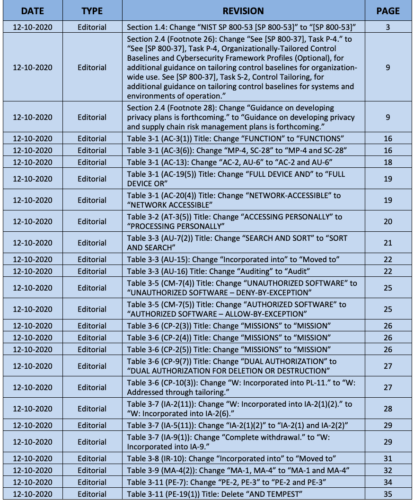
| 日付 | 種類 | 修正内容 | ページ |
| 2020-12-10 | 編集上 | 1.4節：NIST SP 800-53 [SP 800-53]を[SP 800-53]に変更 | 3 |
| 2020-12-10 | 編集上 | 2.4節（脚注26）：次の記載に変更： | 9 |
| [SP 800-37] Task P-4「組織に合わせた管理策ベースラインおよび | |||
| サイバーセキュリティ・フレームワーク・プロファイル（任意）」を参照し、 | |||
| 組織全体で使用する管理策ベースラインの調整に関する追加指針を得る。 | |||
| また、[SP 800-37] Task S-2「管理策の調整」を参照し、 | |||
| システムおよび運用環境向け管理策ベースラインの調整に関する追加指針を得る。 | |||
| 2020-12-10 | 編集上 | 2.4節（脚注28）：次の記載に変更： | 9 |
| プライバシー計画の策定に関する指針は今後公表予定。→プライバシーおよびサプライチェーンリスク管理計画の | |||
| 策定に関する指針は今後公表予定。 | |||
| 2020-12-10 | 編集上 | 表3-1（AC-3(1)）のタイトル：FUNCTIONをFUNCTIONSに変更 | 16 |
| 2020-12-10 | 編集上 | 表3-1（AC-3(6)）：MP-4, SC-28をMP-4 and SC-28に変更 | 16 |
| 2020-12-10 | 編集上 | 表3-1（AC-13）：AC-2, AU-6をAC-2 and AU-6に変更 | 18 |
| 2020-12-10 | 編集上 | 表3-1（AC-19(5)）のタイトル：FULL DEVICE ANDをFULL | 19 |
| DEVICE ORに変更 | |||
| 2020-12-10 | 編集上 | 表3-1（AC-20(4)）のタイトル：NETWORK-ACCESSIBLEを | 19 |
| NETWORK ACCESSIBLEに変更 | |||
| 2020-12-10 | 編集上 | 表3-2（AT-3(5)）のタイトル：ACCESSING PERSONALLYを | 20 |
| PROCESSING PERSONALLYに変更 | |||
| 2020-12-10 | 編集上 | 表3-3（AU-7(2)）のタイトル：SEARCH AND SORTをSORT | 21 |
| AND SEARCHに変更 | |||
| 2020-12-10 | 編集上 | 表3-3（AU-15）：Incorporated intoをMoved toに変更 | 22 |
| 2020-12-10 | 編集上 | 表3-3（AU-16）のタイトル：AuditingをAuditに変更 | 22 |
| 2020-12-10 | 編集上 | 表3-5（CM-7(4)）のタイトル：UNAUTHORIZED SOFTWAREを | 25 |
| UNAUTHORIZED SOFTWARE – DENY-BY-EXCEPTIONに変更 | |||
| 2020-12-10 | 編集上 | 表3-5（CM-7(5)）のタイトル：AUTHORIZED SOFTWAREを | 25 |
| AUTHORIZED SOFTWARE – ALLOW-BY-EXCEPTIONに変更 | |||
| 2020-12-10 | 編集上 | 表3-6（CP-2(3)）のタイトル：MISSIONSをMISSIONに変更 | 26 |
| 2020-12-10 | 編集上 | 表3-6（CP-2(4)）のタイトル：MISSIONSをMISSIONに変更 | 26 |
| 2020-12-10 | 編集上 | 表3-6（CP-2(5)）のタイトル：MISSIONSをMISSIONに変更 | 26 |
| 2020-12-10 | 編集上 | 表3-6（CP-9(7)）のタイトル：DUAL AUTHORIZATIONを | 27 |
| DUAL AUTHORIZATION FOR DELETION OR DESTRUCTIONに変更 | |||
| 2020-12-10 | 編集上 | 表3-6（CP-10(3)）：W: Incorporated into PL-11.をW: | 27 |
| Addressed through tailoring.に変更 | |||
| 2020-12-10 | 編集上 | 表3-7（IA-2(11)）：W: Incorporated into IA-2(1)(2).を | 28 |
| W: Incorporated into IA-2(6).に変更 | |||
| 2020-12-10 | 編集上 | 表3-7（IA-5(11)）：IA-2(1)(2)をIA-2(1) and IA-2(2)に変更 | 29 |
| 2020-12-10 | 編集上 | 表3-7（IA-9(1)）：Complete withdrawal.をW: | 29 |
| Incorporated into IA-9.に変更 | |||
| 2020-12-10 | 編集上 | 表3-8（IR-10）：Incorporated intoをMoved toに変更 | 31 |
| 2020-12-10 | 編集上 | 表3-9（MA-4(2)）：MA-1, MA-4をMA-1 and MA-4に変更 | 32 |
| 2020-12-10 | 編集上 | 表3-11（PE-7）：PE-2, PE-3をPE-2 and PE-3に変更 | 34 |
| 2020-12-10 | 編集上 | 表3-11（PE-19(1)）のタイトル：AND TEMPESTを削除 | 35 |
| DATE | TYPE | REVISION | PAGE |
| 12-10-2020 | Editorial | Table 3-12 (PL-8(1)) Title: Change “DEFENSE-IN-DEPTH” to | 36 |
| “DEFENSE IN DEPTH” | |||
| 12-10-2020 | Editorial | Table 3-14 (PS-3(3)) Title: Change “WITH” to “REQUIRING” | 39 |
| 12-10-2020 | Editorial | Table 3-17 (SA-12(14)): Change “SR-4(1)(2)” to “SR-4(1) and SR- | 44 |
| 4(2)” | |||
| 12-10-2020 | Editorial | Table 3-17 (SA-17) Title: Change “Security” to “Security and | 45 |
| Privacy” | |||
| 12-10-2020 | Editorial | Table 3-17 (SA-18(2)): Change “W: Moved to SR-9(2).” to “W: | 45 |
| Moved to SR-10.” | |||
| 12-10-2020 | Editorial | Table 3-17 (SA-19): Change “W: Moved to SR-10.” to “W: Moved to | 45 |
| SR-11.” | |||
| 12-10-2020 | Editorial | Table 3-17 (SA-19(1)): Change “W: Moved to SR-10(1).” to “W: | 45 |
| Moved to SR-11(1).” | |||
| 12-10-2020 | Editorial | Table 3-17 (SA-19(2)): Change “W: Moved to SR-10(2).” to “W: | 45 |
| Moved to SR-11(2).” | |||
| 12-10-2020 | Editorial | Table 3-17 (SA-19(3)): Change “W: Moved to SR-10(3).” to “W: | 45 |
| Moved to SR-12.” | |||
| 12-10-2020 | Editorial | Table 3-17 (SA-19(4)): Change “W: Moved to SR-10(4).” to “W: | 45 |
| Moved to SR-11(3).” | |||
| 12-10-2020 | Editorial | Table 3-18 (SC-5) Title: Change “Denial of Service” to “Denial-of- | 46 |
| Service” | |||
| 12-10-2020 | Editorial | Table 3-18 (SC-7(25)) Title: Change “CONNECTIONS” to “SYSTEM | 47 |
| CONNECTIONS” | |||
| 12-10-2020 | Editorial | Table 3-18 (SC-12(4)): Change “SC-12” to “SC-12(3)” | 47 |
| 12-10-2020 | Editorial | Table 3-18 (SC-12(5)): Change “SC-12” to “SC-12(3)” | 47 |
| 12-10-2020 | Editorial | Table 3-18 (SC-14): Change “SI-7,” to “SI-7, and” | 47 |
| 12-10-2020 | Editorial | Table 3-18 (SC-19): Change “addressed by other controls for | 48 |
| protocols” to “addressed as any other technology or protocol” | |||
| 12-10-2020 | Editorial | Table 3-19 (SI-9): Change “AC-5,” to “AC-5, and” | 52 |
| 12-10-2020 | Editorial | Table 3-20 (SR-10) Title: Change “Systems and” to “Systems or” | 55 |
| 12-10-2020 | Editorial | Appendix A Glossary (availability): Change“[44 USC 3552]” to | 59 |
| “[FISMA]” | |||
| 12-10-2020 | Editorial | Appendix A Glossary (confidentiality): Change“[44 USC 3552]” to | 60 |
| “[FISMA]” | |||
| 12-10-2020 | Editorial | Appendix A Glossary (integrity): Change“[44 USC 3552]” to | 61 |
| “[FISMA]” | |||
| 12-10-2020 | Editorial | Appendix B Acronyms: Add “OIRA Office of Information and | 66 |
| Regulatory Affairs” | |||
| 12-10-2020 | Editorial | Appendix B Acronyms: Add “SCOR Security Control Overlay | 66 |
| Repository” | |||
| 12-10-2020 | Editorial | Sections 3.1 through 3.20 (Introduction): Change “w” to “W” | 16, 20, 21, |
| 23, 24, 26, | |||
| 28, 30, 32, | |||
| 33, 34, 36, | |||
| 37, 39, 40, | |||
| 41, 42, 46, | |||
| 51, 55 |
原本の表画像
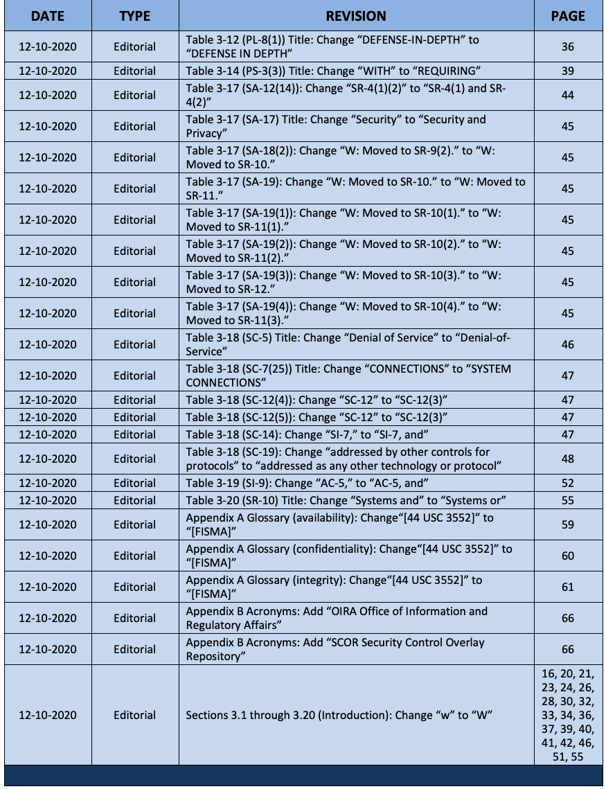
| 日付 | 種類 | 修正内容 | ページ |
| 2020-12-10 | 編集上 | 表3-12（PL-8(1)）のタイトル：DEFENSE-IN-DEPTHを | 36 |
| DEFENSE IN DEPTHに変更 | |||
| 2020-12-10 | 編集上 | 表3-14（PS-3(3)）のタイトル：WITHをREQUIRINGに変更 | 39 |
| 2020-12-10 | 編集上 | 表3-17（SA-12(14)）：SR-4(1)(2)をSR-4(1) and SR- | 44 |
| 4(2)に変更 | |||
| 2020-12-10 | 編集上 | 表3-17（SA-17）のタイトル：SecurityをSecurity and | 45 |
| Privacyに変更 | |||
| 2020-12-10 | 編集上 | 表3-17（SA-18(2)）：W: Moved to SR-9(2).をW: | 45 |
| Moved to SR-10.に変更 | |||
| 2020-12-10 | 編集上 | 表3-17（SA-19）：W: Moved to SR-10.をW: Moved to | 45 |
| SR-11に変更 | |||
| 2020-12-10 | 編集上 | 表3-17（SA-19(1)）：W: Moved to SR-10(1).をW: | 45 |
| Moved to SR-11(1)に変更 | |||
| 2020-12-10 | 編集上 | 表3-17（SA-19(2)）：W: Moved to SR-10(2).をW: | 45 |
| Moved to SR-11(2)に変更 | |||
| 2020-12-10 | 編集上 | 表3-17（SA-19(3)）：W: Moved to SR-10(3).をW: | 45 |
| Moved to SR-12に変更 | |||
| 2020-12-10 | 編集上 | 表3-17（SA-19(4)）：W: Moved to SR-10(4).をW: | 45 |
| Moved to SR-11(3)に変更 | |||
| 2020-12-10 | 編集上 | 表3-18（SC-5）のタイトル：Denial of ServiceをDenial-of- | 46 |
| Serviceに変更 | |||
| 2020-12-10 | 編集上 | 表3-18（SC-7(25)）のタイトル：CONNECTIONSをSYSTEM | 47 |
| CONNECTIONSに変更 | |||
| 2020-12-10 | 編集上 | 表3-18（SC-12(4)）：SC-12をSC-12(3)に変更 | 47 |
| 2020-12-10 | 編集上 | 表3-18（SC-12(5)）：SC-12をSC-12(3)に変更 | 47 |
| 2020-12-10 | 編集上 | 表3-18（SC-14）：SI-7,をSI-7, andに変更 | 47 |
| 2020-12-10 | 編集上 | 表3-18（SC-19）：addressed by other controls for | 48 |
| protocolsをaddressed as any other technology or protocolに変更 | |||
| 2020-12-10 | 編集上 | 表3-19（SI-9）：AC-5,をAC-5, andに変更 | 52 |
| 2020-12-10 | 編集上 | 表3-20（SR-10）のタイトル：Systems andをSystems orに変更 | 55 |
| 2020-12-10 | 編集上 | 付録A用語集（availability）：[44 USC 3552]を | 59 |
| [FISMA]に変更 | |||
| 2020-12-10 | 編集上 | 付録A用語集（confidentiality）：[44 USC 3552]を | 60 |
| [FISMA]に変更 | |||
| 2020-12-10 | 編集上 | 付録A用語集（integrity）：[44 USC 3552]を | 61 |
| [FISMA]に変更 | |||
| 2020-12-10 | 編集上 | 付録B略語一覧：OIRA Office of Information andを追加 | 66 |
| Regulatory Affairs | |||
| 2020-12-10 | 編集上 | 付録B略語一覧：SCOR Security Control Overlayを追加 | 66 |
| Repository | |||
| 2020-12-10 | 編集上 | 3.1～3.20節（序論）：「w」を「W」に変更 | 16, 20, 21, |
| 23, 24, 26, | |||
| 28, 30, 32, | |||
| 33, 34, 36, | |||
| 37, 39, 40, | |||
| 41, 42, 46, | |||
| 51, 55 |
CHAPTER ONE
第1章
未レビュー訳INTRODUCTION
序論
未レビュー訳THE NEED FOR SECURITY AND PRIVACY CONTROL BASELINES
セキュリティおよびプライバシー管理策ベースラインの必要性
未レビュー訳原文のみ
ecurity controls are the safeguards or countermeasures selected and implemented within an information system1 or an organization to protect the confidentiality, integrity, and availability of the system and its information and to manage information security risk. Privacy controls are the administrative, technical, and physical safeguards employed within a system or an organization to ensure compliance with applicable privacy requirements and to manage privacy risks.2 Security and privacy controls are selected and implemented to satisfy the security and privacy requirements levied on an information system and/or organization. The requirements are derived from applicable laws, executive orders, directives, regulations, policies, standards, and mission needs to ensure the confidentiality, integrity, and availability of information processed, stored, or transmitted and to manage risks to individual privacy. The selection, design, and effective implementation of controls are important tasks that have significant implications for the operations and assets of organizations as well as the welfare of individuals and the Nation.
セキュリティ管理策とは、情報システム¹または組織内で選択・実装され、システムおよびその情報の機密性、完全性、可用性を保護し、情報セキュリティリスクを管理するための保護策または対抗策である。プライバシー管理策とは、適用されるプライバシー要件への準拠を確保し、プライバシーリスクを管理するために、システムまたは組織内で用いられる管理上、技術上、物理上の保護策である²。セキュリティおよびプライバシー管理策は、情報システムおよび／または組織に課されるセキュリティおよびプライバシー要件を満たすために選択・実装される。要件は、適用法令、大統領令、指令、規則、方針、標準、使命上のニーズから導かれ、処理、保存、送信される情報の機密性、完全性、可用性を確保し、個人のプライバシーに対するリスクを管理する。管理策の選択、設計、効果的な実装は重要な作業であり、組織の業務と資産、個人および国家の福利に大きな影響を及ぼす。
未レビュー訳NIST Special Publication (SP) 800-37 [SP 800-37] defines two approaches for the selection of security and privacy controls: a baseline control selection approach and an organization-generated control selection approach. The baseline control selection approach uses control baselines, which are predefined sets of controls specifically assembled to meet the protection needs of a group, organization, or community of interest. The control baselines serve as a starting point for the protection of individuals’ privacy, information, and information systems. The organization-generated control selection approach is not addressed in this publication.
NIST特別刊行物（SP）800-37 [SP 800-37]は、セキュリティおよびプライバシー管理策の選択方法として、ベースライン管理策選択方式と組織生成型管理策選択方式の2つを定める。ベースライン管理策選択方式は、集団、組織、関心を共有するコミュニティの保護ニーズを満たすためにあらかじめ構成した管理策の集合である、管理策ベースラインを用いる。管理策ベースラインは、個人のプライバシー、情報、情報システムを保護するための出発点となる。組織生成型管理策選択方式は本刊行物の対象外である。
未レビュー訳1.1 PURPOSE AND APPLICABILITY
1.1 目的および適用範囲
未レビュー訳This publication establishes security and privacy control baselines for federal information systems and organizations and provides tailoring guidance for those baselines. The control baselines can be implemented by any organization that processes, stores, or transmits information (e.g., federal, state, local, and tribal governments, as well as private sector organizations). Implementation of a minimum set of controls selected from NIST SP 800-53, Revision 5 [SP 800-53] is mandatory to protect federal information and information systems3 in accordance with the Office of Management and Budget (OMB) Circular A-130 [OMB A-130] and the provisions of the Federal Information Security Modernization Act4 [FISMA]. Whereas use of the privacy control baseline is not mandated by law or [OMB A-130], SP 800-53B—along with other supporting NIST publications—is designed to help organizations identify the security and privacy controls needed to manage risk and to satisfy the security and privacy requirements in FISMA, the Privacy Act of 1974 [PRIVACT], selected OMB policies (e.g., [OMB A-130]), and designated Federal Information Processing Standards (FIPS), among others.
本刊行物は、連邦情報システムおよび組織のセキュリティおよびプライバシー管理策ベースラインを定め、それらの調整に関する指針を示す。管理策ベースラインは、情報を処理、保存、送信するあらゆる組織（連邦、州、地方、部族政府や民間組織など）が実装できる。NIST SP 800-53改訂第5版[SP 800-53]から選択する最低限の管理策一式を実装することは、行政管理予算局（OMB）通達A-130 [OMB A-130]および連邦情報セキュリティ近代化法⁴ [FISMA]に従い、連邦政府の情報および情報システム³を保護するために必須である。プライバシー管理策ベースラインの利用は法律または[OMB A-130]によって義務付けられていないが、SP 800-53Bおよび関連するNIST刊行物は、組織がリスク管理に必要なセキュリティおよびプライバシー管理策を特定し、FISMA、1974年プライバシー法[PRIVACT]、一部のOMB方針（[OMB A-130]など）、指定された連邦情報処理標準（FIPS）などの要件を満たすのに役立つように作られている。
未レビュー訳This publication satisfies security and privacy requirements by applying assumptions that inform the development of the security and privacy control baselines, as described in Section 2.3. The baselines serve as a starting point to meet the protection needs of organizations. The controls in the baselines are tailored following the process described in Section 2.4 to further facilitate the management of security and privacy risk specific to the organization. The tailoring process can be guided and informed by many factors, including organizational mission and business needs, stakeholder protection needs, and assessments of risk. The combination of control baseline selection and control tailoring processes can help organizations satisfy their stated security and privacy requirements.
本刊行物は、第2.3節で述べるように、セキュリティおよびプライバシー管理策ベースラインの策定に用いる前提条件を適用することで、セキュリティおよびプライバシー要件を満たす。ベースラインは、組織の保護ニーズに対応する出発点となる。組織固有のセキュリティおよびプライバシーリスクの管理をさらに進めるため、第2.4節のプロセスに従ってベースライン内の管理策を調整する。調整は、組織の使命や事業上のニーズ、利害関係者の保護ニーズ、リスク評価など多くの要因に基づいて進められる。管理策ベースラインの選択と管理策の調整を組み合わせることで、組織が明示したセキュリティおよびプライバシー要件を満たしやすくなる。
未レビュー訳1.2 TARGET AUDIENCE
1.2 対象読者
未レビュー訳This publication is intended to serve a diverse audience, including:
本刊行物は、次のような幅広い読者を対象とする。
未レビュー訳•Individuals with system, information security, privacy, or risk management and oversight responsibilities, including authorizing officials, chief information officers, senior agency information security officers, and senior agency officials for privacy
•システム、情報セキュリティ、プライバシー、リスク管理および監督の責任を担う者。認可担当者、最高情報責任者、上級機関情報セキュリティ責任者、上級プライバシー担当者などを含む。
未レビュー訳•Individuals with system development responsibilities, including mission owners, program managers, system engineers, system security engineers, privacy engineers, hardware and software developers, system integrators, and acquisition or procurement officials
•システム開発の責任を担う者。使命の責任者、プログラムマネージャー、システムエンジニア、システムセキュリティエンジニア、プライバシーエンジニア、ハードウェア・ソフトウェア開発者、システムインテグレーター、調達担当者などを含む。
未レビュー訳•Individuals with logistical or disposition-related responsibilities, including program managers, procurement officials, system integrators, and property managers
•ロジスティクスまたは処分に関する責任を担う者。プログラムマネージャー、調達担当者、システムインテグレーター、資産管理者などを含む。
未レビュー訳•Individuals with security and privacy implementation and operations responsibilities, including mission or business owners, system owners, information owners or stewards, system administrators, and system security or privacy officers
•セキュリティおよびプライバシーの実装・運用の責任を担う者。使命または事業の責任者、システム所有者、情報所有者または管理者、システム管理者、システムセキュリティまたはプライバシー担当者などを含む。
未レビュー訳•Individuals with security and privacy assessment and monitoring responsibilities, including auditors, Inspectors General, system evaluators, control assessors, independent verifiers and validators, and analysts
•セキュリティおよびプライバシーの評価・監視の責任を担う者。監査人、監察総監、システム評価者、管理策評価者、独立検証・妥当性確認担当者、分析担当者などを含む。
未レビュー訳•Commercial entities, including industry partners, who produce component products and systems and develop security and privacy technologies
•構成製品やシステムを製造し、セキュリティおよびプライバシー技術を開発する業界パートナーなどの民間企業。
未レビュー訳1.3 ORGANIZATIONAL RESPONSIBILITIES
1.3 組織の責任
未レビュー訳Organizations have the responsibility to choose a control selection approach in accordance with [SP 800-37].5 If the baseline control selection approach is chosen, organizations select a security control baseline and privacy control baseline as described in Chapter Three. Once the control baseline is selected, organizations apply the tailoring guidance provided in Chapter Two to help ensure that the resulting controls are necessary and sufficient to manage security risk6 and privacy risk.7
組織は、[SP 800-37]に従い、管理策の選択方式を決定する責任を負う⁵。ベースライン管理策選択方式を選ぶ場合、組織は第3章に示すセキュリティ管理策ベースラインとプライバシー管理策ベースラインを選択する。選択後、第2章の調整指針を適用し、結果として得られる管理策がセキュリティリスク⁶およびプライバシーリスク⁷の管理に必要かつ十分となるようにする。
未レビュー訳1.4 RELATIONSHIP TO OTHER PUBLICATIONS
1.4 他の刊行物との関係
未レビュー訳This publication establishes security and privacy control baselines derived from the controls in [SP 800-53]. The control baselines in this publication are in accordance with requirements for federal information and information systems included in [OMB A-130],8 Federal Information Processing Standard 199 [FIPS 199], and Federal Information Processing Standard 200 [FIPS 200]. [SP 800-37] provides guidance on control selection approaches.
本刊行物は、[SP 800-53]の管理策から導出したセキュリティおよびプライバシー管理策ベースラインを定める。これらのベースラインは、[OMB A-130]⁸、連邦情報処理標準（FIPS）199 [FIPS 199]、連邦情報処理標準200 [FIPS 200]に含まれる連邦情報および情報システムの要件に沿っている。[SP 800-37]は管理策選択方式に関する指針を示す。
未レビュー訳1.5 REVISIONS AND EXTENSIONS
1.5 改訂および拡張
未レビュー訳The security and privacy controls specified in the baselines represent the state-of-the-practice protection measures for individuals, information systems, and organizations. The controls comprising the baselines are periodically reviewed and revised to reflect the experience gained from using the controls; new or revised laws, executive orders, directives, regulations, policies, and standards; changing security and privacy requirements; emerging threats, vulnerabilities, attacks, and information processing methods; and the availability of new technologies. Thus, the security and privacy controls specified in the baselines are also expected to change over time as controls are withdrawn, revised, and added. In addition to the need for change, the need for stability is addressed by requiring that proposed changes to the baseline undergo a rigorous and transparent public review process to obtain public and private sector feedback and to build a consensus for baseline changes. The public review process provides a stable, flexible, and technically sound set of security and privacy control baselines.
ベースラインに定めるセキュリティおよびプライバシー管理策は、個人、情報システム、組織を保護するための実務上の最新の対策を表す。ベースラインを構成する管理策は、利用から得られた経験、新規または改正された法令・大統領令・指令・規則・方針・標準、変化するセキュリティおよびプライバシー要件、新たな脅威・脆弱性・攻撃・情報処理方式、新技術の利用可能性を反映するため、定期的に見直し、改訂される。したがって、ベースラインに定める管理策も、撤回、改訂、追加に伴って時間とともに変わることが想定される。変更の必要性に加えて安定性も確保するため、ベースラインへの変更案には、官民から意見を集め、変更について合意を形成するための厳格かつ透明な一般公開レビューを求める。この公開レビューにより、安定性、柔軟性、技術的健全性を備えたセキュリティおよびプライバシー管理策ベースラインが確保される。
未レビュー訳1.6 PUBLICATION ORGANIZATION
1.6 本刊行物の構成
未レビュー訳The remainder of this special publication is organized as follows:
本特別刊行物の以降の構成は次のとおりである。
未レビュー訳•Chapter Two describes the fundamental concepts associated with control baselines, selecting the appropriate baseline, baseline assumptions, tailoring baselines, overlays, and capabilities.
•第2章では、管理策ベースラインに関する基本概念、適切なベースラインの選択、ベースラインの前提条件、調整、オーバーレイ、能力について説明する。
未レビュー訳•Chapter Three provides a set of tables organized by control family that contain the controls that comprise the low-impact, moderate-impact, and high-impact security control baselines as well as the privacy control baseline.
•第3章では、管理策ファミリー別に整理した表を示す。各表には、低・中・高の影響度に対応するセキュリティ管理策ベースラインと、プライバシー管理策ベースラインを構成する管理策を掲載する。
未レビュー訳•A list of informative References9 is provided after Chapter Three.
•第3章の後に参考文献⁹を掲載する。
未レビュー訳•Supporting appendices include:
•本書を構成する付録は次のとおりである：
未レビュー訳- Appendix A: Glossary
- 付録A：用語集
未レビュー訳- Appendix B: Acronyms
- 付録B：略語
未レビュー訳- Appendix C: Overlay Guidance
- 付録C：オーバーレイの指針
未レビュー訳SECURITY AND PRIVACY CONTROL BASELINES Security and privacy control baselines are predefined sets of controls specifically assembled to
セキュリティおよびプライバシー管理策ベースライン セキュリティおよびプライバシー管理策ベースラインは、
未レビュー訳address the protection needs of groups, organizations, or communities of interest. The control baselines serve as a starting point for the protection of individuals’ privacy, information, and information systems and can be tailored (i.e., customized)—appropriately taking into account organizational missions and business functions, specific and credible threat information, the environment in which the organization operates, and individuals’ privacy interests.
集団、組織、または関心を共有するコミュニティの保護ニーズに対応するため、特定の管理策をあらかじめ組み合わせたものである。管理策ベースラインは、個人のプライバシー、情報、情報システムを保護するための出発点となり、組織の使命と事業機能、具体的で信頼できる脅威情報、組織の運用環境、個人のプライバシー上の利益を適切に考慮しながら調整（すなわちカスタマイズ）できる。
未レビュー訳CHAPTER ONE
第1章
未レビュー訳CHAPTER TWO
第2章
未レビュー訳THE FUNDAMENTALS
基本事項
未レビュー訳CONTROL BASELINES, TAILORING, OVERLAYS, AND CAPABILITIES
管理策ベースライン、調整、オーバーレイ、能力
未レビュー訳原文のみ
his chapter presents the fundamental concepts associated with security and privacy control baselines, including the purpose of control baselines, how control baselines are selected, assumptions associated with control baselines, how the tailoring process is used to customize controls and baselines, the purpose of overlays and how they are used to address the security and privacy needs of communities of interest, and how the concept of capabilities
本章では、セキュリティおよびプライバシー管理策ベースラインの基本概念を示す。管理策ベースラインの目的、選択方法、その前提条件、管理策とベースラインをカスタマイズする調整プロセス、関心を共有するコミュニティのセキュリティおよびプライバシー上のニーズに対応するためのオーバーレイの目的と利用方法に加え、能力という概念によって、
未レビュー訳can facilitate the grouping of mutually reinforcing controls.
相互に強化し合う管理策をグループ化できることについて説明する。
未レビュー訳2.1 CONTROL BASELINES
2.1 管理策ベースライン
未レビュー訳A significant challenge for organizations is selecting a set of security and privacy controls that can protect their mission and business functions and provide the capability to manage security and privacy risk. The selected controls, if correctly implemented and determined to be effective, meet security and privacy requirements defined by applicable laws, executive orders, policies, regulations, and directives. There is no single set of controls that addresses all security and privacy concerns in every situation. However, choosing the most appropriate controls for a specific situation or system to adequately respond to risk requires a fundamental understanding of the organization’s mission and business priorities, the mission and business functions that the systems will support, and the environments in which the systems will operate. It also requires close collaboration with key organizational stakeholders. With that understanding, organizations can demonstrate how to efficiently and cost-effectively assure the confidentiality, integrity, and availability of organizational information and systems, as well as the privacy of individuals in the context of supporting the organization’s mission and business functions.
組織にとって大きな課題の一つは、使命と事業機能を保護し、セキュリティおよびプライバシーリスクを管理する能力を提供できる管理策一式を選択することである。正しく実装され、有効と評価された選択済み管理策は、適用法令、大統領令、方針、規則、指令で定めるセキュリティおよびプライバシー要件を満たす。あらゆる状況のセキュリティおよびプライバシー上の懸念に対処できる単一の管理策一式は存在しない。一方、特定の状況またはシステムに最も適した管理策を選び、リスクに十分対応するには、組織の使命と事業上の優先事項、システムが支援する使命および事業機能、システムの運用環境を根本から理解する必要がある。また、組織の主要な利害関係者との緊密な協力も必要となる。こうした理解に基づき、組織は使命と事業機能を支援しながら、組織の情報およびシステムの機密性、完全性、可用性と、個人のプライバシーを効率的かつ費用対効果よく確保できることを示せる。
未レビュー訳The concept of a control baseline is introduced to assist organizations in selecting a set of controls for their systems that is commensurate with security and privacy risk. A control baseline is a collection of controls from [SP 800-53] assembled to address the protection needs of a group, organization, or community of interest.10 It provides a generalized set of controls that represents a starting point for the subsequent tailoring activities that are applied to the baseline to produce a targeted or customized security and privacy solution for the entity that the baseline is intended to serve. Control baselines are tailored based on a variety of factors, including threat information, mission or business requirements, types of systems, sector-specific requirements, specific technologies, operating environments, organizational assumptions and constraints, individuals’ privacy interests, laws, executive orders, regulations, policies, directives, standards, or industry best practices. Tailoring activities are described in greater detail in Section 2.4.
管理策ベースラインという概念は、セキュリティおよびプライバシーリスクに見合う管理策一式を各システム向けに選択できるよう、組織を支援するために導入された。管理策ベースラインとは、集団、組織、または関心を共有するコミュニティの保護ニーズに対応するため、[SP 800-53]の管理策を組み合わせたものである。¹⁰ これは一般化された管理策一式であり、対象となる主体向けに目標を定めた、またはカスタマイズしたセキュリティおよびプライバシーソリューションを作成するため、後続の調整作業を適用する出発点となる。管理策ベースラインは、脅威情報、使命または事業上の要件、システムの種類、業界固有の要件、特定の技術、運用環境、組織の前提条件や制約、個人のプライバシー上の利益、法令、大統領令、規則、方針、指令、標準、業界のベストプラクティスなど、さまざまな要因に基づいて調整される。調整作業の詳細は2.4節で説明する。
未レビュー訳2.2 SELECTING CONTROL BASELINES
2.2 管理策ベースラインの選択
未レビュー訳Information security programs are responsible for protecting information and information systems from unauthorized access, use, disclosure, disruption, modification, or destruction (i.e., unauthorized system activity or behavior) in order to provide confidentiality, integrity, and availability. Privacy programs are responsible for managing the risks to individuals associated with the creation, collection, use, processing, dissemination, storage, maintenance, disclosure, or disposal (collectively referred to as “processing”) of personally identifiable information (PII) and for ensuring compliance with applicable privacy requirements.11 When a system processes PII, the information security and privacy programs have a shared responsibility to manage the impacts to individuals that arise from security risks and collaborate to determine the security categorization and the selection and tailoring of controls from the security control baselines.
情報セキュリティプログラムは、機密性、完全性、可用性を確保するため、情報および情報システムを不正なアクセス、利用、開示、妨害、改変、破壊（すなわち、不正なシステム活動または動作）から保護する責任を負う。プライバシープログラムは、個人識別情報（PII）の作成、収集、利用、処理、配布、保存、保守、開示、廃棄（総称して「処理」）に伴う個人へのリスクを管理し、適用されるプライバシー要件への準拠を確保する責任を負う。¹¹ システムがPIIを処理する場合、情報セキュリティとプライバシーの各プログラムは、セキュリティリスクから生じる個人への影響を管理する責任を共有する。また、セキュリティカテゴリ化ならびにセキュリティ管理策ベースラインからの管理策選択・調整を共同で決定する。
未レビュー訳Security Control Baselines
セキュリティ管理策ベースライン
未レビュー訳In preparation for selecting and tailoring the appropriate security control baselines for organizational systems and their respective environments of operation, organizations first determine the criticality and sensitivity of the information to be processed, stored, or transmitted by those systems. The process of determining information criticality and sensitivity is known as security categorization and is described in [FIPS 199].12 The results of security categorization help guide and inform the selection of security control baselines to protect systems and information. The control baselines selected for systems are commensurate with the potential adverse impact on organizational operations, organizational assets, individuals, other organizations, or the Nation if there is a loss of confidentiality, integrity, or availability. [FIPS 199] requires organizations to categorize systems as low-impact, moderate-impact, or high-impact for the stated security objectives of confidentiality, integrity, and availability.13
組織システムおよびそれぞれの運用環境に適したセキュリティ管理策ベースラインを選択・調整する準備として、組織はまず、それらのシステムで処理、保存、送信する情報の重要度と機微性を判定する。情報の重要度と機微性を判定するプロセスをセキュリティカテゴリ化といい、[FIPS 199]に記載されている。¹² セキュリティカテゴリ化の結果は、システムと情報を保護するセキュリティ管理策ベースラインの選択を導き、支援する。選択する管理策ベースラインは、機密性、完全性、可用性が失われた場合に組織の業務、組織の資産、個人、他の組織、または国家に及ぶ潜在的な悪影響の大きさに見合うものとする。[FIPS 199]は、機密性、完全性、可用性という各セキュリティ目的について、システムを低・中・高の影響度に分類するよう組織に求めている。¹³
未レビュー訳Since the potential impact values for confidentiality, integrity, and availability may not always be the same for a particular system, the high water mark concept (introduced in [FIPS 199]) is used in [FIPS 200] to determine the impact level of the system. The impact level of the system, in turn, is used for the express purpose of selecting the applicable security control baseline from one of the three baselines identified in Chapter Three.14 Thus, a low-impact system is defined as a system in which all three of the security objectives are low. A moderate-impact system is a system in which at least one of the security objectives is moderate and no security objective is high. Finally, a high-impact system is a system in which at least one security objective is high.
機密性、完全性、可用性への潜在的な影響度は、あるシステムで常に同じとは限らない。そのため、[FIPS 199]で導入されたハイウォーターマーク（最大値）概念を用いて、[FIPS 200]に従いシステムの影響度を判定する。次に、この影響度を用いて、第3章に示す3種類の管理策ベースラインから該当するものを選ぶ。¹⁴ したがって、低影響度システムとは、3つのセキュリティ目的すべての影響度が低いシステムである。中影響度システムとは、少なくとも1つのセキュリティ目的の影響度が中で、かつ高の目的がないシステムである。高影響度システムとは、少なくとも1つのセキュリティ目的の影響度が高いシステムである。
未レビュー訳11Privacy programs may also choose to consider the risks to individuals that may arise from their interactions with information systems where the processing of PII may be less impactful than the effect that the system has on individuals’ behavior or activities. Such effects would constitute risks to individual autonomy, and organizations may need to take steps to manage those risks in addition to information security and privacy risks.
11 プライバシープログラムは、PIIの処理が個人の行動や活動に及ぼす影響に比べて小さく見える場合でも、情報システムとのやり取りから個人に生じ得るリスクを考慮してよい。こうした影響は個人の自律性に対するリスクとなるため、組織は情報セキュリティおよびプライバシーリスクに加えて、それらのリスクを管理する措置を講じる必要がある。
未レビュー訳Once the impact level of the system is determined, organizations select the appropriate security control baseline.15 The selection of the security control baseline is based on the [FIPS 200] impact level of the system as determined by the security categorization process described above. The organization selects one of three security control baselines from Chapter Three corresponding to the low-impact, moderate-impact, or high-impact categorization of the system. Note that not all controls or control enhancements identified in [SP 800-53] are assigned to control baselines as indicated in the tables in Chapter Three. The controls and control enhancements that are assigned to baselines are indicated by an “x” in the low, moderate, or high columns in Tables 3-1 through 3-20. The use of the term control baseline is intentional. The controls and control enhancements in the baselines are a starting point from which controls or enhancements may be removed, added, or specialized based on the tailoring guidance in Section 2.4.16
システムの影響度が判定されたら、組織は適切なセキュリティ管理策ベースラインを選択する。¹⁵ 選択は、前述のセキュリティカテゴリ化プロセスで判定した[FIPS 200]に基づくシステムの影響度によって決まる。組織は、第3章から、システムの低・中・高のカテゴリに対応する3つのセキュリティ管理策ベースラインのいずれかを選ぶ。[SP 800-53]に記載されている管理策や拡張機能が、すべて第3章の表に示す管理策ベースラインへ割り当てられているわけではない。ベースラインに割り当てられた管理策と拡張機能には、表3-1から表3-20の低・中・高の各列に「x」が付されている。「管理策ベースライン」という用語は意図的に用いている。ベースライン内の管理策や拡張機能は出発点であり、第2.4節の調整指針に基づいて、削除、追加、または特殊化できる。¹⁶
未レビュー訳Privacy Control Baseline
プライバシー管理策ベースライン
未レビュー訳In addition to the three security control baselines, Chapter Three provides an initial privacy control baseline for federal agencies to address privacy requirements and manage privacy risks that arise from the processing of PII based on privacy program responsibilities under [OMB A-130].17 The controls and control enhancements that are assigned to the privacy baseline are indicated by an “x.”18 Not all controls or control enhancements that address privacy risk are assigned to the privacy control baseline. This approach provides a starting point from which controls or control enhancements may be removed, added, or specialized based on the tailoring guidance in Section 2.4.19
3種類のセキュリティ管理策ベースラインに加え、第3章では連邦機関がプライバシー要件に対応し、[OMB A-130]に基づくプライバシープログラムの責任を踏まえてPIIの処理から生じるプライバシーリスクを管理するため、初期プライバシー管理策ベースラインを示す。¹⁷ プライバシーベースラインに割り当てられた管理策と拡張機能には「x」が付される。¹⁸ プライバシーリスクに対処する管理策や拡張機能のすべてが、プライバシー管理策ベースラインに割り当てられるわけではない。この方式では、第2.4節の調整指針に基づき、管理策や拡張機能を削除、追加、または特殊化するための出発点を提供する。¹⁹
未レビュー訳Organizations conduct privacy risk assessments that consider the nature of the PII processing and its impact on individuals to guide the tailoring of the privacy control baseline for their programs and systems. Privacy risk assessments include evaluating the applicability of legal and policy requirements for their programs. For example, organizations may remove controls or control enhancements related to legal or policy requirements that are not applicable to them unless they determine that, based on a privacy risk assessment, the controls or control enhancements would be helpful in mitigating identified privacy risks. In addition, organizations may add unassigned controls or control enhancements to mitigate privacy risks specific to their information systems as determined by their privacy risk assessments.
組織は、PII処理の性質と個人への影響を考慮したプライバシーリスク評価を行い、各プログラムやシステム向けのプライバシー管理策ベースラインの調整に役立てる。プライバシーリスク評価には、各プログラムに対する法令・方針上の要件の適用可能性の評価が含まれる。たとえば、組織は、自らに適用されない法令・方針上の要件に関係する管理策や拡張機能を削除してよい。ただし、プライバシーリスク評価に基づき、それらが特定済みのプライバシーリスクの軽減に役立つと判断した場合を除く。また、プライバシーリスク評価で特定された情報システム固有のプライバシーリスクを軽減するため、未割当ての管理策や拡張機能を追加してもよい。
未レビュー訳2.3 CONTROL BASELINE ASSUMPTIONS
2.3 管理策ベースラインの前提条件
未レビュー訳The control baselines in Chapter Three address the protection needs of a diverse set of constituencies, including individual users and organizations. Thus, certain working assumptions generally underlie the control baselines in Chapter Three. These assumptions, made when determining the baselines in Chapter Three, consider the environments in which organizational information systems operate, including legislative, regulatory, or policy obligations; the nature of organizational operations; the specific functionality employed within the systems; the types of threats confronting organizations, mission and business processes, and systems; individuals’ privacy interests; and the types of information processed, stored, or transmitted by systems.20 Articulating the underlying assumptions is a key element in the Risk Framing step of the risk management process described in [SP 800-39] and reinforced in the Prepare step in [SP 800-37]. Specific assumptions that underlie the control baselines in Chapter Three include:
第3章の管理策ベースラインは、個人利用者や組織など多様な関係者の保護ニーズに対応する。そのため、第3章の管理策ベースラインには一般に一定の前提条件がある。第3章のベースラインを定める際には、法令・規則・方針上の義務、組織運営の性質、システムで用いる具体的な機能、組織・使命・事業プロセス・システムが直面する脅威の種類、個人のプライバシー上の利益、システムが処理・保存・送信する情報の種類など、組織の情報システムが稼働する環境を考慮する。²⁰ 前提条件を明示することは、[SP 800-39]に記載され[SP 800-37]のPrepare段階で補強される、リスク管理プロセスのRisk Framing段階における重要な要素である。第3章の管理策ベースラインを支える具体的な前提条件は次のとおりである。
未レビュー訳•Information in organizational systems is relatively persistent.21
•組織のシステム内の情報は、比較的長期間にわたって保持される。²¹
未レビュー訳•Organizational systems are multi-user (either serially or concurrently) in operation.
•組織のシステムは、逐次的または同時に複数の利用者が使用する。
未レビュー訳•Some information in organizational systems is not shareable with other users who have authorized access to the same systems.
•組織のシステムにある情報の一部は、同じシステムへのアクセスを認められた他の利用者と共有できない。
未レビュー訳•Organizational systems exist in networked environments and are general purpose in nature.
•組織のシステムはネットワーク環境に存在し、汎用目的で運用される。
未レビュー訳•Organizations have the necessary structure, resources, and infrastructure to implement the controls.22
•組織には、管理策を実装するために必要な体制、資源、インフラがある。²²
未レビュー訳If any of the above assumptions are not valid, then some of the security controls allocated to the control baselines in Chapter Three may not be applicable—a situation that can be addressed by applying the tailoring guidance in Section 2.4 and the results of organization- and system-level risk assessments. Additional assumptions that are not addressed in the baselines include:
上記の前提条件のいずれかが成り立たない場合、第3章の管理策ベースラインに割り当てられた一部のセキュリティ管理策は適用できない可能性がある。この状況には、第2.4節の調整指針と、組織レベルおよびシステムレベルのリスク評価結果を適用して対処できる。ベースラインで扱っていないその他の前提条件は次のとおりである。
未レビュー訳•Insider threats exist within organizations.
•組織内に内部脅威が存在する。
未レビュー訳•Classified information is processed, stored, or transmitted by organizational systems.23
•組織のシステムが機密情報を処理、保存、または送信する。²³
未レビュー訳•Advanced persistent threats (APTs) exist within organizations.
•組織内に高度な持続的脅威（APT）が存在する。
未レビュー訳•Information requires specialized protection based on legislation, directives, regulations, or policies.
•法令、指令、規則、または方針に基づく特別な保護を情報に施す必要がある。
未レビュー訳•Organizational systems communicate with other systems across different security domains.
•組織のシステムが、異なるセキュリティドメインに属する他のシステムと通信する。
未レビュー訳If any of these assumptions apply, then additional controls from [SP 800-53] are likely needed to ensure adequate protection—a situation that can also be effectively addressed by applying the tailoring guidance in Section 2.4 (specifically, security control supplementation) and the results of organization- and system-level assessments of risk.
これらの前提条件のいずれかに該当する場合、十分な保護を確保するため、[SP 800-53]から追加の管理策が必要になる可能性が高い。この状況には、第2.4節の調整指針（特にセキュリティ管理策の補完）と、組織レベルおよびシステムレベルのリスク評価結果を適用することでも効果的に対処できる。
未レビュー訳2.4 TAILORING CONTROL BASELINES
2.4 管理策ベースラインの調整
未レビュー訳After selecting an appropriate control baseline, organizations initiate a tailoring process to align the controls more closely with the specific security and privacy requirements identified by the organization. The tailoring process is part of an organization-wide risk management process that includes framing, assessing, responding to, and monitoring information security and privacy risks. Tailoring decisions are dependent on organizational or system-specific factors. While tailoring decisions are focused on security and privacy considerations, the decisions are typically aligned with other risk-related issues that organizations must routinely address. Risk-related issues such as cost, schedule, and performance are considered in the determination of which controls to employ and how to implement controls in organizational systems and environments of operation.24 The tailoring process can include but is not limited to the following activities:25
適切な管理策ベースラインを選択した後、組織は、特定したセキュリティおよびプライバシー要件に管理策をより緊密に適合させるため、調整プロセスを開始する。調整プロセスは、情報セキュリティおよびプライバシーリスクの枠組み設定、評価、対応、監視を含む組織全体のリスク管理プロセスの一部である。調整の判断は、組織またはシステム固有の要因に左右される。判断ではセキュリティとプライバシーを中心に考慮するが、通常、組織が日常的に対処すべき他のリスク関連事項との整合も図る。どの管理策を採用し、組織のシステムおよび運用環境でどのように実装するかを決める際には、費用、日程、性能などの事項も考慮する。²⁴ 調整プロセスには、次の活動などが含まれるが、これらに限定されない。²⁵
未レビュー訳•Identifying and designating common controls
•共通管理策を特定し、指定する
未レビュー訳•Applying scoping considerations
•適用範囲に関する考慮事項を適用する
未レビュー訳•Selecting compensating controls
•代替管理策を選択する
未レビュー訳•Assigning values to organization-defined control parameters via explicit assignment and selection operations
•明示的な割当て・選択操作により、組織定義管理策パラメータに値を割り当てる
未レビュー訳•Supplementing baselines with additional controls and control enhancements
•追加の管理策および管理策の拡張機能でベースラインを補完する
未レビュー訳•Providing specification information for control implementation
•管理策の実装に必要な仕様情報を提供する
未レビュー訳Organizations use risk management guidance to facilitate risk-based decision making regarding the applicability of the controls in the baselines. Ultimately, organizations employ the tailoring process to achieve cost-effective solutions that support organizational mission and business needs and provide security and privacy protections commensurate with risk. Organizations have the flexibility to tailor at the organization level for systems in support of a line of business or a mission or business process, at the individual system level, or by using a combination of the two.26 However, organizations do not arbitrarily remove security and privacy controls from baselines. Tailoring decisions are expected to be defensible based on mission and business needs, a sound rationale, and explicit risk-based determinations.27
組織はリスク管理指針を用いて、ベースライン内の管理策が適用可能かどうかについて、リスクに基づく判断を促進する。最終的には、組織は調整プロセスを通じて、組織の使命と事業上のニーズを支え、リスクに見合うセキュリティおよびプライバシー保護を提供する費用対効果の高い解決策を実現する。組織は、事業分野または使命・事業プロセスを支援する組織レベル、個別システムレベル、または両者の組み合わせにより、柔軟に調整できる。²⁶ ただし、組織がセキュリティおよびプライバシー管理策をベースラインから恣意的に削除することはない。調整の判断は、使命と事業上のニーズ、妥当な根拠、明示的なリスクベースの決定に基づき、説明可能であることが期待される。²⁷
未レビュー訳Tailoring decisions, including the risk-based justification for the decisions, are documented in the system security and privacy plans for organizational systems.28 Every control from the selected control baseline is accounted for by the organization. If certain controls are tailored out, the rationale is recorded in the system security and privacy plans and subsequently approved by the responsible officials within the organization as part of the approval process for the plans. Documenting risk management decisions during the baseline tailoring process is imperative for organizational officials to have the necessary information to make credible, risk-based decisions regarding security and privacy and to do so in a manner that fully supports transparency, traceability, and accountability.
調整の判断と、そのリスクベースの正当化理由は、組織のシステムに関するシステムセキュリティ計画およびプライバシー計画に記録する。²⁸ 選択した管理策ベースライン内の各管理策について、組織は対応状況を明確にする。管理策を調整によって除外する場合、その根拠をシステムセキュリティ計画およびプライバシー計画に記録し、計画の承認プロセスの一環として組織内の責任者の承認を得る。ベースラインの調整過程でリスク管理上の決定を記録することは、透明性、追跡可能性、説明責任を十分に支える方法で、セキュリティとプライバシーに関する信頼性の高いリスクベースの決定を行うために必要な情報を、組織の責任者が得るうえで不可欠である。
未レビュー訳Identifying and Designating Common Controls
共通管理策の特定および指定
未レビュー訳Common controls are controls that may be inherited by one or more organizational systems. If a system inherits a common control provided by another entity (internal or external), there is no need to implement the control within that system. Organizational decisions on which controls are designated as common controls may affect the responsibilities of individual system owners with regard to the implementation of the controls in a baseline.29 Common control providers ensure that current implementation information and assessment results are available to facilitate decision making by system owners and authorizing officials. System owners and authorizing officials determine if the common controls available for inheritance actually provide protection commensurate with risk for inheriting systems.30
共通管理策とは、1つ以上の組織システムが継承できる管理策である。システムが別の主体（内部または外部）から提供された共通管理策を継承する場合、そのシステム内で当該管理策を実装する必要はない。どの管理策を共通管理策に指定するかという組織の判断は、ベースラインに含まれる管理策を実装する際の個々のシステム所有者の責任に影響する場合がある。²⁹ 共通管理策の提供者は、システム所有者や認可担当者が判断できるよう、最新の実装情報と評価結果を利用可能にしておく。システム所有者と認可担当者は、継承可能な共通管理策が、継承するシステムに対してリスクに見合う保護を実際に提供するかを判断する。³⁰
未レビュー訳Common control designation and control implementation can affect organizations’ resource expenditures. That is, in general, the greater the number of common controls implemented, the greater the potential cost savings since the protective measures are amortized over many systems. Additionally, the deployment of controls as common controls often provides a more standardized, stable, scalable, and secure implementation across the organization as opposed to the same control implemented separately on multiple individual systems.
共通管理策の指定と管理策の実装は、組織の資源支出に影響することがある。一般に、実装する共通管理策が多いほど、保護対策を複数のシステムに分散できるため、費用削減の可能性も高くなる。さらに、管理策を共通管理策として導入すれば、複数の個別システムに同じ管理策を別々に実装する場合に比べ、組織全体でより標準化され、安定性、拡張性、安全性の高い実装が実現することが多い。
未レビュー訳Applying Scoping Considerations
適用範囲に関する考慮事項の適用
未レビュー訳Scoping considerations, when applied in conjunction with risk management guidance, provide organizations with a more granular foundation on which to make risk-based decisions.31 The application of these scoping considerations can eliminate unnecessary controls from the initial control baselines and ensure that organizations select only those controls that are needed to provide a level of protection that is commensurate with risk. Organizations may apply the scoping considerations described below as needed to assist with making risk-based decisions regarding control selection and specification.
リスク管理指針と併せて適用範囲に関する考慮事項を用いると、組織はより詳細な根拠に基づいてリスクベースの判断を行える。³¹ これらの考慮事項を適用すれば、初期の管理策ベースラインから不要な管理策を除き、リスクに見合う保護水準を提供するために必要な管理策だけを組織が選択できる。管理策の選択と仕様に関するリスクベースの判断を支援するため、組織は以下の適用範囲に関する考慮事項を必要に応じて用いることができる。
未レビュー訳- Control Implementation, Applicability, and Placement Considerations
- 管理策の実装、適用可能性、および配置に関する考慮事項
未レビュー訳The growing complexity of systems requires careful analysis in the implementation of security and privacy controls. Controls in the initial baselines may not be applicable to every component in the system. Controls are applicable only to system components that provide or support the security or privacy functions or capabilities addressed by the controls.32 Organizations make explicit risk-based decisions about where to apply or allocate specific controls in organizational systems to achieve the needed security or privacy function or capability and to satisfy security and privacy requirements. - Operational and Environmental Considerations
システムの複雑化に伴い、セキュリティ管理策およびプライバシー管理策の実装には慎重な分析が必要です。初期ベースラインの管理策は、システム内のすべての構成要素に適用できるとは限りません (may not)。管理策は、その管理策が扱うセキュリティまたはプライバシー機能・能力を提供または支援するシステム構成要素にのみ適用されます。32 組織は、必要なセキュリティまたはプライバシー機能・能力を実現し、セキュリティ要件およびプライバシー要件を満たすために、組織のシステム内のどこに特定の管理策を適用または割り当てるかについて、リスクに基づく判断を明示的に行います。—運用および環境に関する考慮事項
未レビュー訳Certain controls in the control baselines assume the existence of operational or environmental factors. Where operational or environmental factors are absent or significantly diverge from the baseline assumptions described in Section 2.3, it is justifiable to tailor the baseline. Common operational and environmental factors include mobile devices and operations; single-user systems and operations; data connectivity and bandwidth; air-gapped systems; systems that have very limited or sporadic bandwidth, such as tactical systems that support warfighter or law enforcement missions; cyber-physical systems, sensors, and Internet of Things (IoT) devices; limited functionality systems, such as facsimile machines, printers, and digital cameras; systems that process, store, or transmit non-persistent information or that use virtualization techniques to establish non-persistent instantiations of operating systems and applications; and systems that require public access.
管理策ベースラインの一部の管理策は、運用上または環境上の要因が存在することを前提としています。運用上または環境上の要因が存在しない場合、またはセクション2.3に記載したベースラインの前提から大きく逸脱している場合、ベースラインを調整することが正当化されます。一般的な運用上・環境上の要因には、モバイルデバイスおよびその運用、単一ユーザーシステムおよびその運用、データ接続性と帯域幅、エアギャップシステム、戦闘員または法執行機関の任務を支援する戦術システムのように帯域幅が非常に限られる、または断続的なシステム、サイバーフィジカルシステム、センサー、モノのインターネット（IoT）デバイス、ファクシミリ機、プリンター、デジタルカメラなどの機能が限定されたシステム、非永続的な情報を処理、保存、伝送するシステム、または仮想化技術を用いてオペレーティングシステムやアプリケーションの非永続的なインスタンスを確立するシステム、ならびに公開アクセスを必要とするシステムがあります。
未レビュー訳- Technology Considerations
—技術に関する考慮事項
未レビュー訳Controls that refer to specific technologies—such as wireless, cryptography, or public key infrastructure—are applicable only if those technologies are implemented or required for use within organizational systems. Controls that can be effectively supported by automated mechanisms do not require the development of such mechanisms if the mechanisms do not already exist or are not readily available in commercial or government off-the-shelf products. If automated mechanisms are not available, cost-effective, or technically feasible, compensating controls implemented through non-automated mechanisms or procedures can be implemented to satisfy specified controls or control enhancements.
無線、暗号、公開鍵基盤など、特定の技術に言及する管理策は、それらの技術が組織のシステム内で実装されている場合、または使用が求められている場合にのみ適用されます。自動化された仕組みで効果的に支援できる (can) 管理策について、その仕組みが既に存在せず、市販または政府調達の既製製品として容易に入手できない場合、組織に当該仕組みの開発は求められません。自動化された仕組みが入手できない、費用対効果がない、または技術的に実現不可能な場合、非自動化の仕組みまたは手順によって実装する補完的管理策を用いて、指定された管理策または管理策の拡張を満たすことができます (can)。
未レビュー訳- Mission and Business Considerations
—任務および事業に関する考慮事項
未レビュー訳Certain controls may not be appropriate if implementing those controls has the potential to degrade, debilitate, or interfere with organizational mission or business functions, including endangering or harming individuals. However, decisions on the appropriateness of control implementation always consider legislative, regulatory, and policy requirements. - Security Objective Considerations
管理策を実装することで、個人を危険にさらしたり害を与えたりすることを含め、組織の任務または事業機能を低下、阻害、妨害する可能性がある場合、一部の管理策は適切でないことがあります (may not)。ただし、管理策の実装が適切かどうかの判断では、常に立法、規制、およびポリシー上の要件を考慮します。—セキュリティ目的に関する考慮事項
未レビュー訳Controls that support only one or two of the security objectives (i.e., confidentiality, integrity, or availability) may be downgraded to the corresponding control in a lower baseline (or modified or eliminated if not defined in a lower baseline) only if the downgrading action reflects the [FIPS 199] security category for the supported security objectives before considering the [FIPS 200] impact level (i.e., high water mark),is supported by an organizational assessment of risk, and does not adversely affect the level of protection for the security-relevant information within the system.For example, if a system is categorized as moderate-impact using the high water mark concept because confidentiality and/or integrity are moderate but availability is low, there are several controls that only support the availability security objective and that could potentially be downgraded to the low baseline controls. In this scenario, it may be appropriate to refrain from implementing CP-2(1) because the control enhancement only supports availability and is selected in the moderate baseline but not in the low baseline. The following security controls and control enhancements are candidates for downgrading for each of the security categories:
1つまたは2つのセキュリティ目的（すなわち、機密性、完全性、または可用性）のみを支援する管理策は、支援するセキュリティ目的に対する[FIPS 199]のセキュリティカテゴリを反映し（[FIPS 200]の影響度（すなわち、ハイウォーターマーク）を考慮する前のカテゴリ）、組織によるリスク評価に裏付けられ、システム内のセキュリティ関連情報の保護レベルに悪影響を与えない場合に限り、下位ベースラインの対応する管理策に格下げする（または下位ベースラインに定義がなければ変更または削除する）ことができます (may)。たとえば、機密性および／または完全性が中程度で、可用性が低いためにハイウォーターマークの概念を用いて中程度の影響度に分類されたシステムでは、可用性のセキュリティ目的のみを支援し、低位ベースラインの管理策に格下げされる可能性がある (could) 管理策がいくつかあります。この場合、管理策拡張が可用性のみを支援し、中位ベースラインでは選択されているものの低位ベースラインでは選択されていないため、CP-2(1)を実装しないことが適切な場合があります (may)。各セキュリティカテゴリで格下げ候補となるセキュリティ管理策および管理策拡張を以下に示します。
未レビュー訳CHAPTER TWO
第2章
未レビュー訳•Support Only Confidentiality: AC-21, MA-3(3), MP-3, MP-4, MP-5, MP-6(1), MP-6(2), PE-4, PE-5, SC-4
•機密性のみを支援：AC-21、MA-3(3)、MP-3、MP-4、MP-5、MP-6(1)、MP-6(2)、PE-4、PE-5、SC-4
未レビュー訳•Support Only Integrity: CM-5, CM-5(1), CM-5(3), SI-7, SI-7(1), SI-7(5), SI-10
•完全性のみを支援：CM-5、CM-5(1)、CM-5(3)、SI-7、SI-7(1)、SI-7(5)、SI-10
未レビュー訳•Support Only Availability: CP-2(1), CP-2(2), CP-2(3), CP-2(5), CP-2(8), CP-3(1), CP-4(1), CP-4(2), CP-6, CP-6(1), CP-6(2), CP-6(3), CP-7, CP-7(1), CP-7(2), CP-7(3), CP-7(4), CP-7(6), CP-8, CP-8(1), CP-8(2), CP-8(3), CP-8(4), CP-8(5), CP-9(2), CP-9(3), CP-9(5), CP-9(6), CP-10(2), CP-10(4), CP-11, MA-6, PE-9, PE-10, PE-11, PE-11(1), PE-13(1), PE-13(2), PE-15(1)
•可用性のみを支援：CP-2(1)、CP-2(2)、CP-2(3)、CP-2(5)、CP-2(8)、CP-3(1)、CP-4(1)、CP-4(2)、CP-6、CP-6(1)、CP-6(2)、CP-6(3)、CP-7、CP-7(1)、CP-7(2)、CP-7(3)、CP-7(4)、CP-7(6)、CP-8、CP-8(1)、CP-8(2)、CP-8(3)、CP-8(4)、CP-8(5)、CP-9(2)、CP-9(3)、CP-9(5)、CP-9(6)、CP-10(2)、CP-10(4)、CP-11、MA-6、PE-9、PE-10、PE-11、PE-11(1)、PE-13(1)、PE-13(2)、PE-15(1)
未レビュー訳- Legal and Policy Considerations
—法令およびポリシーに関する考慮事項
未レビュー訳Although controls that are used to meet legislative, regulatory, or policy requirements are not to be tailored out of control baselines, some legislative, regulatory, or policy requirements may only apply in specified circumstances. It is justifiable to tailor the baseline when these circumstances are not applicable to an organization or certain systems.
立法、規制、またはポリシー上の要件を満たすために用いられる管理策は、管理策ベースラインから調整除外してはなりません。ただし、一部の立法、規制、またはポリシー上の要件は、特定の状況下でのみ適用される場合があります (may)。その状況が組織または特定のシステムに当てはまらない場合、ベースラインの調整は正当化されます。
未レビュー訳Selecting Compensating Controls
補完的管理策の選択
未レビュー訳Compensating controls are used by organizations in lieu of specific controls in control baselines. The use of compensating controls is appropriate when controls are tailored out of the control baseline by necessity, but the protection provided by the controls is still needed to reduce risk to an acceptable level. Compensating controls are often chosen when implementing a baseline control is technically infeasible, not cost effective, or the control implementation negatively affects organizational mission or business functions.33 For technology-based scoping considerations, compensating controls may be temporary and used only until the system is updated. Compensating controls are intended to provide equivalent or comparable protection34 for systems, organizations, and individuals.35 Compensating controls are selected after applying the scoping considerations in the tailoring process. To use compensating controls, organizations:
組織は、管理策ベースラインに含まれる特定の管理策の代わりに補完的管理策を使用します。必要に応じて管理策ベースラインから管理策を調整除外したものの、許容可能なレベルまでリスクを低減するために管理策による保護が依然として必要な場合、補完的管理策の使用が適切です。ベースライン管理策を実装することが技術的に実現不可能、費用対効果が低い、または管理策の実装が組織の任務もしくは事業機能に悪影響を及ぼす場合、補完的管理策が選ばれることがよくあります。33 技術に基づく適用範囲決定の考慮事項では、システムが更新されるまでの一時的な補完的管理策を使用する場合があります (may)。補完的管理策は、システム、組織、および個人に対し、同等または同等程度の保護34を提供することを目的としています。35 補完的管理策は、調整プロセスで適用範囲決定の考慮事項を適用した後に選択されます。補完的管理策を使用するには、組織は次を行います。
未レビュー訳•Select compensating controls from the control catalog in [SP 800-53].
•[SP 800-53]の管理策カタログから補完的管理策を選択する。
未レビュー訳•Provide a rationale for how compensating controls satisfy security or privacy requirements and why the baseline controls could not be implemented.
•補完的管理策がセキュリティ要件またはプライバシー要件をどのように満たすか、およびベースライン管理策を実装できなかった (could) 理由を説明する根拠を提示する。
未レビュー訳•Adopt suitable compensating controls from other sources if appropriate compensating controls are not available in [SP 800-53].36
•[SP 800-53]で適切な補完的管理策を入手できない場合、他の情報源から適切な補完的管理策を採用する。36
未レビュー訳•Assess and accept the security and privacy risks associated with implementing compensating controls.
•補完的管理策を実装することに伴うセキュリティリスクおよびプライバシーリスクを評価し、受容する。
未レビュー訳Assigning Control Parameter Values
管理策パラメータ値の割り当て
未レビュー訳Controls and control enhancements containing embedded parameters (i.e., assignment and selection operations) give organizations the flexibility to specify values for certain portions of controls and control enhancements to support specific organizational requirements. After the application of scoping considerations and the selection of compensating controls, organizations review the controls and control enhancements for assignment or selection operations and determine the appropriate organization-defined values for the identified parameters. The parameter values may be driven by mission or business requirements, or the values may be prescribed by laws, executive orders, directives, regulations, policies, standards, guidelines, or industry best practices.
埋め込みパラメータ（すなわち、割り当て操作および選択操作）を含む管理策および管理策拡張により、組織は特定の組織要件を支援するために、管理策および管理策拡張の特定の部分に値を指定できます。適用範囲決定の考慮事項を適用し、補完的管理策を選択した後、組織は割り当て操作または選択操作がある管理策および管理策拡張を確認し、特定されたパラメータに適切な組織定義値を決定します。パラメータ値は、任務または事業上の要件によって決まる場合があります (may)。また、法律、大統領令、指令、規制、ポリシー、標準、ガイドライン、または業界のベストプラクティスによって値が定められる場合もあります (may)。
未レビュー訳Once organizations specify the parameter values for the controls and control enhancements, the specified assignment and selection values become a permanent part of the control and control enhancement. As such, they are documented in security and privacy program plans or system security and privacy plans, as appropriate. Organizations can specify the parameter values before selecting compensating controls since the parameter specification completes the control definitions and may affect the need for compensating controls. There can be significant benefits to collaborating on the development of parameter values for controls. For organizations that work together on a frequent basis or regularly conduct exchanges of information, it may be useful to develop a mutually agreeable set of control parameter values.
組織が管理策および管理策拡張のパラメータ値を指定すると、指定された割り当て値および選択値は管理策および管理策拡張の恒久的な一部となります。そのため、適宜、セキュリティ・プライバシープログラム計画またはシステムセキュリティ・プライバシー計画に記録されます。組織は、パラメータ値の指定によって管理策の定義が完成し、補完的管理策の必要性に影響する場合がある (may) ため、補完的管理策を選択する前にパラメータ値を指定できます (can)。管理策のパラメータ値を協力して策定することには、大きな利点があり得ます (can)。頻繁に協力する組織、または定期的に情報交換を行う組織にとって、相互に合意できる一連の管理策パラメータ値を策定することが有用な場合があります (may)。
未レビュー訳Supplementing Control Baselines
管理策ベースラインの補足
未レビュー訳In certain situations, additional controls or control enhancements beyond the controls and enhancements contained in the control baselines in Chapter Three may be required to address specific threats to organizations, mission and business processes, and systems; to address specific types of PII processing and associated privacy risks; and to satisfy the requirements of laws, executive orders, directives, policies, regulations, standards, and guidelines. Organizational assessments of risk provide information for determining the necessity and sufficiency of the controls and control enhancements in the control baselines. Organizations are encouraged to make maximum use of the control catalog in [SP 800-53] to supplement control baselines with additional controls or control enhancements.
特定の状況では、組織、任務・事業プロセス、システムに対する特定の脅威に対処するため、特定の種類のPII処理および関連するプライバシーリスクに対処するため、ならびに法律、大統領令、指令、ポリシー、規制、標準、ガイドラインの要件を満たすために、第3章の管理策ベースラインに含まれる管理策および拡張に加えて、追加の管理策または管理策拡張が必要となる場合があります (may)。組織のリスク評価は、管理策ベースライン内の管理策および管理策拡張の必要性と十分性を判断するための情報を提供します。組織は、管理策ベースラインを追加の管理策または管理策拡張で補足するために、[SP 800-53]の管理策カタログを最大限活用することが推奨されます。
未レビュー訳Providing Additional Specification Information for Control Implementation
管理策実装に関する追加仕様情報の提供
未レビュー訳Since controls and control enhancements are statements of security or privacy functions or capabilities that are conveyed at higher levels of abstraction, the controls may lack sufficient information for implementation. Therefore, additional details may be necessary to fully define the intent of a given control for implementation purposes and to ensure that the security and privacy requirements related to that control are satisfied. For example, additional information may be provided as part of the process of moving from control to specification requirements and may involve refinement of implementation details, refinement of scope, or iteration to apply the same control differently to different scopes. The need to provide control specification information occurs routinely when controls are employed in a systems engineering process as part of requirements engineering. Organizations ensure that if existing control information is not sufficient to define the intended implementation details for the control, such information is provided to system owners and common control providers. Organizations have the flexibility to determine whether control specification information is included as part of the control statement
管理策および管理策拡張は、セキュリティ機能またはプライバシー機能・能力をより高い抽象度で表現したものであるため、実装に十分な情報が不足している場合があります (may)。したがって、実装にあたり個々の管理策の意図を完全に定義し、その管理策に関連するセキュリティ要件およびプライバシー要件が満たされるようにするには、追加の詳細情報が必要な場合があります (may)。たとえば、管理策から仕様要件へ移行する過程で追加情報を提供することがあり (may)、その情報には実装詳細の精緻化、適用範囲の精緻化、または異なる適用範囲に同じ管理策を異なる形で適用するための反復作業が含まれる場合があります (may)。要件エンジニアリングの一環として、システムズエンジニアリングプロセスで管理策を用いる場合、管理策仕様情報を提供する必要が生じるのは通常のことです (need to)。既存の管理策情報では意図する実装詳細を定義するのに不十分な場合、組織はその情報をシステム所有者および共通管理策提供者に提供します。管理策仕様情報を管理策文の一部に含めるかどうかは、組織が柔軟に判断できます。
未レビュー訳or in a separate control addendum section. When providing additional detail, organizations are cautioned not to change the intent of the base control or modify the original language in the control. Implementation information is documented in the system security and privacy plans.
原文更新後、再確認待ち
2.5 CAPABILITIES
2.5 能力
未レビュー訳Organizations consider defining a set of capabilities as a precursor to the control selection process. The concept of capability recognizes that satisfying security or privacy requirements seldom derives from a single control but rather from a set of mutually reinforcing controls. For example, organizations may wish to define a capability for secure remote authentication. This capability can be achieved by the selection and implementation of a set of controls from [SP 800-53], such as IA-2 (1), IA-2 (2), IA-2 (8), IA-2 (9), and SC-8 (1). Moreover, capabilities can address a variety of areas that can include technical means, physical means, procedural means, or any combination thereof. In addition to the above capability for secure remote access, organizations may also need security capabilities that address physical means, such as tamper detection on a cryptographic module or anomaly detection/analysis on an orbiting spacecraft.
組織は、管理策選択プロセスに先立ち、一連の能力を定義することを検討します。能力という概念は、セキュリティ要件またはプライバシー要件を満たすには、単一の管理策ではなく、相互に補強し合う一連の管理策が必要となることが多いと認識するものです。たとえば、組織は安全なリモート認証の能力を定義したい場合があります (may)。この能力は、[SP 800-53]からIA-2 (1)、IA-2 (2)、IA-2 (8)、IA-2 (9)、SC-8 (1)などの一連の管理策を選択し実装することで実現できます (can)。さらに、能力は、技術的手段、物理的手段、手順上の手段、またはそれらの任意の組み合わせを含む (can) 多様な領域を含めることができます (can)。上記の安全なリモートアクセス能力に加えて、組織は、暗号モジュールの改ざん検知や、周回中の宇宙機に対する異常検知・分析など、物理的手段に関するセキュリティ能力も必要とする場合があります (may)。
未レビュー訳As the number of controls in [SP 800-53] grows in response to an increasingly sophisticated threat space, it is important for organizations to have the ability to describe key capabilities needed to protect organizational missions and business functions, and to subsequently select controls that—if properly designed, developed, and implemented—produce such capabilities. The use of capabilities simplifies how the protection problem is viewed conceptually. Using the construct of a capability provides a method of grouping controls that are employed for a common purpose or to achieve a common objective. For example, the grouping of controls is an important consideration when assessing controls for effectiveness.37
[SP 800-53]の管理策数が高度化する脅威環境に応じて増加する中、組織の任務および事業機能を保護するために必要な主要能力を記述し、そのような能力を生み出す管理策を（適切に設計、開発、実装される場合に）その後選択できることが、組織にとって重要です。能力を用いることで、保護の課題を概念的に捉える方法が簡素化されます。能力という構成概念を使用すると、共通の目的に用いる管理策、または共通の目標を達成するために用いる管理策をグループ化できます。たとえば、有効性評価の際に管理策をグループ化することは重要な考慮事項です。37
未レビュー訳Traditionally, assessments have been conducted on a control-by-control basis, producing results that are characterized as pass (i.e., control satisfied) or fail (i.e., control not satisfied). However, the failure of a single control, or in some cases, multiple controls may not affect the overall capability needed by an organization. Moreover, employing the broader construct of a capability allows an organization to assess the severity of the vulnerabilities in its systems and determine if the failure of a particular control or the decision not to deploy a control affects the capability needed for mission and business protection. It also facilitates conducting root cause analyses to determine if the failure of one control can be traced to the failure of other controls based on the established control relationships. Ultimately, authorization decisions (i.e., risk acceptance decisions) are made based on the degree to which the desired capabilities have been effectively achieved and are meeting the security and privacy requirements defined by an organization. These risk-based decisions are directly related to the organizational risk tolerance that is defined as part of an organization’s risk management strategy.
従来、評価は管理策ごとに実施され、その結果は合格（すなわち、管理策を満たしている）または不合格（すなわち、管理策を満たしていない）として示されてきました。しかし、単一の管理策、場合によっては複数の管理策の不履行が、組織に必要な全体的な能力に影響しないことがあります (may not)。さらに、能力というより広い構成概念を用いることで、組織は自らのシステムにおける脆弱性の深刻度を評価し、特定の管理策の不履行または管理策を導入しない判断が、任務および事業の保護に必要な能力に影響するかどうかを判断できます。確立された管理策間の関係に基づき、ある管理策の不履行が他の管理策の不履行に起因する (can) かを特定する根本原因分析も容易になります。最終的に、認可判断（すなわち、リスク受容の判断）は、望ましい能力がどの程度効果的に達成され、組織が定めたセキュリティ要件およびプライバシー要件を満たしているかに基づいて行われます。これらのリスクベースの判断は、組織のリスク管理戦略の一部として定義される組織のリスク許容度に直接関係します。
未レビュー訳37NIST Interagency Report 8011, Vol. 1 [IR 8011 v1], describes grouping controls by purpose to facilitate automated control assessments.
37NIST Interagency Report 8011, Vol. 1 [IR 8011 v1] では、自動化された管理策評価を容易にするため、目的別に管理策をグループ化する方法を説明している。
未レビュー訳CHAPTER TWO
第2章
未レビュー訳CHAPTER THREE
第3章
未レビュー訳THE CONTROL BASELINES
管理策ベースライン
未レビュー訳SECURITY AND PRIVACY CONTROL BASELINES
セキュリティおよびプライバシー管理策ベースライン
未レビュー訳Tables 3-1 through 3-20 provide a listing of the controls and control enhancements assigned to the control families in [SP 800-53] and the respective control allocations to the privacy control baseline and the low-impact, moderate-impact, and high-impact security control baselines. Section 2.2 (Privacy Control Baseline) provides additional information on the privacy control selection criteria.
表3-1から表3-20に、[SP 800-53]の管理策ファミリーに割り当てられた管理策および管理策拡張と、プライバシー管理策ベースラインならびに低影響度、中影響度、高影響度のセキュリティ管理策ベースラインへの各管理策の割り当てを示す。プライバシー管理策の選択基準に関する追加情報は、2.2節（プライバシー管理策ベースライン）を参照。
未レビュー訳SECURITY AND PRIVACY CONTROL BASELINE RELATIONSHIPS
セキュリティおよびプライバシー管理策ベースラインの関係
未レビュー訳•Controls and control enhancements that are assigned to security control baselines are used to manage risks arising from the loss of confidentiality, integrity, and availability. Since Senior Agency Officials for Privacy (SAOPs) have the responsibility for managing privacy risk in accordance with [OMB A-130], and since privacy risks arise from both the processing of PII and the loss of confidentiality, integrity, and availability of PII, it is important that organizations consider how privacy and security programs collaborate in activities related to these controls, such as categorization, tailoring, implementation, and assessment.
•セキュリティ管理策ベースラインに割り当てられた管理策および管理策拡張は、機密性、完全性および可用性の喪失から生じるリスクを管理するために使用する。Senior Agency Officials for Privacy（SAOP）は[OMB A-130]に従ってプライバシー・リスクを管理する責任を負い、プライバシー・リスクはPIIの処理とPIIの機密性、完全性および可用性の喪失の両方から生じるため、組織は、分類、調整、実装、評価など、これらの管理策に関する活動でプライバシー・プログラムとセキュリティ・プログラムがどのように連携するかを検討することが重要である。
未レビュー訳•Controls and control enhancements that are assigned only to the privacy control baseline and not to the security control baselines are important for managing privacy program responsibilities under [OMB A-130] but do not generally support the management of risks that arise from the loss of confidentiality, integrity, and availability.
•プライバシー管理策ベースラインのみに割り当てられ、セキュリティ管理策ベースラインには割り当てられない管理策および管理策拡張は、[OMB A-130]に基づくプライバシー・プログラムの責任を管理するうえで重要であるが、機密性、完全性および可用性の喪失から生じるリスクの管理を一般には支援しない。
未レビュー訳•Controls and control enhancements that are assigned to both the privacy and security control baselines are used to manage privacy program responsibilities under [OMB A-130] and risks that arise from the loss of confidentiality, integrity, and availability (including PII).
•プライバシーおよびセキュリティ双方の管理策ベースラインに割り当てられた管理策および管理策拡張は、[OMB A-130]に基づくプライバシー・プログラムの責任と、機密性、完全性および可用性（PIIを含む）の喪失から生じるリスクを管理するために使用する。
未レビュー訳•Some controls and control enhancements are not assigned to any control baseline. Through tailoring, organizations make their own determinations as to whether the controls and control enhancements are needed to meet applicable requirements or are useful for managing risks that arise from the loss of confidentiality, integrity, and availability or the processing of PII.
•一部の管理策および管理策拡張は、いずれの管理策ベースラインにも割り当てられていない。調整を通じて、組織は、適用される要件を満たすためにそれらが必要か、または機密性、完全性および可用性の喪失もしくはPIIの処理から生じるリスクの管理に有用かを独自に判断する。
未レビュー訳CHAPTER THREE
第3章
未レビュー訳3.1 ACCESS CONTROL FAMILY
3.1 アクセス制御ファミリー
未レビュー訳Table 3-1 provides a summary of the controls and control enhancements assigned to the Access Control Family. The controls are allocated to the low-impact, moderate-impact, and high-impact security control baselines and the privacy control baseline, as appropriate. A control or control enhancement that has been withdrawn from the control catalog is indicated by a “W” and an explanation of the control or control enhancement disposition in light gray text.
表3-1に、アクセス制御ファミリーに割り当てられた管理策および管理策拡張の概要を示す。該当するものについて、管理策は低影響度、中影響度、高影響度のセキュリティ管理策ベースラインおよびプライバシー管理策ベースラインに割り当てられている。管理策カタログから撤回された管理策または管理策拡張には「W」を付し、その処置理由を薄い灰色の文字で説明する。
未レビュー訳TABLE 3-1: ACCESS CONTROL FAMILY
表3-1：アクセス制御ファミリー
未レビュー訳| CONTROL NUMBER | CONTROL NAME CONTROL ENHANCEMENT NAME | LORTNOC YCAVIRP | ENILESAB | SECURITY CONTROL |
| BASELINES | ||||
| LOW | MOD / HIGH | |||
| AC-1 | Policy and Procedures | x | x | x / x |
| AC-2 | Account Management | x | x / x | |
| AC-2(1) | AUTOMATED SYSTEM ACCOUNT MANAGEMENT | x / x | ||
| AC-2(2) | AUTOMATED TEMPORARY AND EMERGENCY ACCOUNT MANAGEMENT | x / x | ||
| AC-2(3) | DISABLE ACCOUNTS | x / x | ||
| AC-2(4) | AUTOMATED AUDIT ACTIONS | x / x | ||
| AC-2(5) | INACTIVITY LOGOUT | x / x | ||
| AC-2(6) | DYNAMIC PRIVILEGE MANAGEMENT | |||
| AC-2(7) | PRIVILEGED USER ACCOUNTS | |||
| AC-2(8) | DYNAMIC ACCOUNT MANAGEMENT | |||
| AC-2(9) | RESTRICTIONS ON USE OF SHARED AND GROUP ACCOUNTS | |||
| AC-2(10) | SHARED AND GROUP ACCOUNT CREDENTIAL CHANGE | W: Incorporated into AC-2k. | ||
| AC-2(11) | USAGE CONDITIONS | x | ||
| AC-2(12) | ACCOUNT MONITORING FOR ATYPICAL USAGE | x | ||
| AC-2(13) | DISABLE ACCOUNTS FOR HIGH-RISK INDIVIDUALS | x / x | ||
| AC-3 | Access Enforcement | x | x / x | |
| AC-3(1) | RESTRICTED ACCESS TO PRIVILEGED FUNCTIONS | W: Incorporated into AC-6. | ||
| AC-3(2) | DUAL AUTHORIZATION | |||
| AC-3(3) | MANDATORY ACCESS CONTROL | |||
| AC-3(4) | DISCRETIONARY ACCESS CONTROL | |||
| AC-3(5) | SECURITY-RELEVANT INFORMATION | |||
| AC-3(6) | PROTECTION OF USER AND SYSTEM INFORMATION | W: Incorporated into MP-4 and SC-28. | ||
| AC-3(7) | ROLE-BASED ACCESS CONTROL | |||
| AC-3(8) | REVOCATION OF ACCESS AUTHORIZATIONS | |||
| AC-3(9) | CONTROLLED RELEASE | |||
| AC-3(10) | AUDITED OVERRIDE OF ACCESS CONTROL MECHANISMS | |||
| AC-3(11) | RESTRICT ACCESS TO SPECIFIC INFORMATION TYPES | |||
| AC-3(12) | ASSERT AND ENFORCE APPLICATION ACCESS | |||
| AC-3(13) | ATTRIBUTE-BASED ACCESS CONTROL | |||
| AC-3(14) | INDIVIDUAL ACCESS | x | ||
| AC-3(15) | DISCRETIONARY AND MANDATORY ACCESS CONTROL | |||
| AC-4 | Information Flow Enforcement | x / x | ||
| AC-4(1) | OBJECT SECURITY AND PRIVACY ATTRIBUTES |
原本の表画像
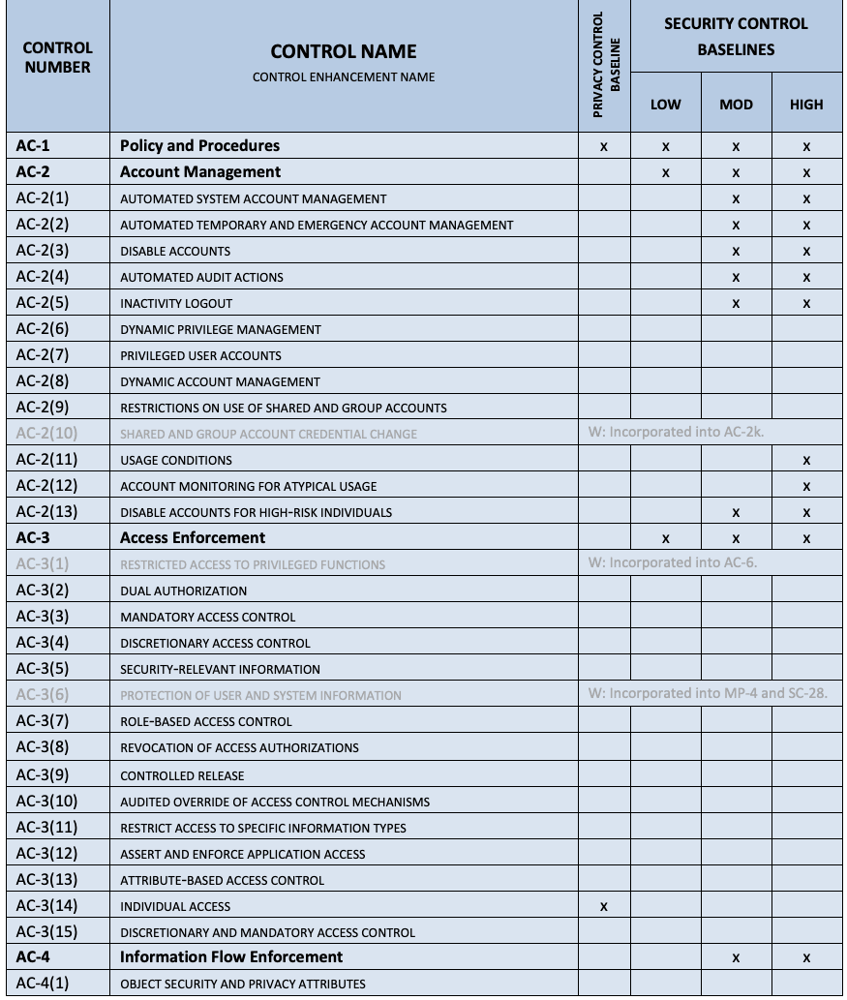
| 管理策番号 | 管理策名／管理策拡張名 | LORTNOC YCAVIRP | ENILESAB | セキュリティ管理策 |
| ベースライン | ||||
| 低 | 中／高 | |||
| AC-1 | ポリシーおよび手順 | x | x | x / x |
| AC-2 | アカウント管理 | x | x / x | |
| AC-2(1) | システム・アカウント管理の自動化 | x / x | ||
| AC-2(2) | 一時および緊急アカウント管理の自動化 | x / x | ||
| AC-2(3) | アカウントの無効化 | x / x | ||
| AC-2(4) | 監査アクションの自動化 | x / x | ||
| AC-2(5) | 無操作時のログアウト | x / x | ||
| AC-2(6) | 動的な権限管理 | |||
| AC-2(7) | 特権ユーザー・アカウント | |||
| AC-2(8) | 動的なアカウント管理 | |||
| AC-2(9) | 共有アカウントおよびグループ・アカウントの使用制限 | |||
| AC-2(10) | 共有アカウントおよびグループ・アカウントの資格情報変更 | W：AC-2k.に組み込み済み。 | ||
| AC-2(11) | 使用条件 | x | ||
| AC-2(12) | 非定型使用に関するアカウント監視 | x | ||
| AC-2(13) | 高リスク個人のアカウント無効化 | x / x | ||
| AC-3 | アクセスの実施 | x | x / x | |
| AC-3(1) | 特権機能へのアクセス制限 | W：AC-6.に組み込み済み。 | ||
| AC-3(2) | 二者承認 | |||
| AC-3(3) | 強制アクセス制御 | |||
| AC-3(4) | 任意アクセス制御 | |||
| AC-3(5) | セキュリティ関連情報 | |||
| AC-3(6) | ユーザー情報およびシステム情報の保護 | W：MP-4 and SC-28.に組み込み済み。 | ||
| AC-3(7) | 役割ベースのアクセス制御 | |||
| AC-3(8) | アクセス認可の取り消し | |||
| AC-3(9) | 制御されたリリース | |||
| AC-3(10) | アクセス制御機構の監査付きオーバーライド | |||
| AC-3(11) | 特定の情報種別へのアクセス制限 | |||
| AC-3(12) | アプリケーション・アクセスの表明および実施 | |||
| AC-3(13) | 属性ベースのアクセス制御 | |||
| AC-3(14) | 個人単位のアクセス | x | ||
| AC-3(15) | 任意アクセス制御および強制アクセス制御 | |||
| AC-4 | 情報フローの実施 | x / x | ||
| AC-4(1) | オブジェクトのセキュリティ属性およびプライバシー属性 |
原本の表画像

原本の表画像

CHAPTER THREE
第3章
未レビュー訳| CONTROL NUMBER | CONTROL NAME CONTROL ENHANCEMENT NAME | LORTNOC YCAVIRP | ENILESAB | SECURITY CONTROL |
| BASELINES | ||||
| LOW | MOD / HIGH | |||
| AC-4(2) | PROCESSING DOMAINS | |||
| AC-4(3) | DYNAMIC INFORMATION FLOW CONTROL | |||
| AC-4(4) | FLOW CONTROL OF ENCRYPTED INFORMATION | x | ||
| AC-4(5) | EMBEDDED DATA TYPES | |||
| AC-4(6) | METADATA | |||
| AC-4(7) | ONE-WAY FLOW MECHANISMS | |||
| AC-4(8) | SECURITY AND PRIVACY POLICY FILTERS | |||
| AC-4(9) | HUMAN REVIEWS | |||
| AC-4(10) | ENABLE AND DISABLE SECURITY OR PRIVACY POLICY FILTERS | |||
| AC-4(11) | CONFIGURATION OF SECURITY OR PRIVACY POLICY FILTERS | |||
| AC-4(12) | DATA TYPE IDENTIFIERS | |||
| AC-4(13) | DECOMPOSITION INTO POLICY-RELEVANT SUBCOMPONENTS | |||
| AC-4(14) | SECURITY OR PRIVACY POLICY FILTER CONSTRAINTS | |||
| AC-4(15) | DETECTION OF UNSANCTIONED INFORMATION | |||
| AC-4(16) | INFORMATION TRANSFERS ON INTERCONNECTED SYSTEMS | W: Incorporated into AC-4. | ||
| AC-4(17) | DOMAIN AUTHENTICATION | |||
| AC-4(18) | SECURITY ATTRIBUTE BINDING | W: Incorporated into AC-16. | ||
| AC-4(19) | VALIDATION OF METADATA | |||
| AC-4(20) | APPROVED SOLUTIONS | |||
| AC-4(21) | PHYSICAL OR LOGICAL SEPARATION OF INFORMATION FLOWS | |||
| AC-4(22) | ACCESS ONLY | |||
| AC-4(23) | MODIFY NON-RELEASABLE INFORMATION | |||
| AC-4(24) | INTERNAL NORMALIZED FORMAT | |||
| AC-4(25) | DATA SANITIZATION | |||
| AC-4(26) | AUDIT FILTERING ACTIONS | |||
| AC-4(27) | REDUNDANT/INDEPENDENT FILTERING MECHANISMS | |||
| AC-4(28) | LINEAR FILTER PIPELINES | |||
| AC-4(29) | FILTER ORCHESTRATION ENGINES | |||
| AC-4(30) | FILTER MECHANISMS USING MULTIPLE PROCESSES | |||
| AC-4(31) | FAILED CONTENT TRANSFER PREVENTION | |||
| AC-4(32) | PROCESS REQUIREMENTS FOR INFORMATION TRANSFER | |||
| AC-5 | Separation of Duties | x / x | ||
| AC-6 | Least Privilege | x / x | ||
| AC-6(1) | AUTHORIZE ACCESS TO SECURITY FUNCTIONS | x / x | ||
| AC-6(2) | NON-PRIVILEGED ACCESS FOR NONSECURITY FUNCTIONS | x / x | ||
| AC-6(3) | NETWORK ACCESS TO PRIVILEGED COMMANDS | x | ||
| AC-6(4) | SEPARATE PROCESSING DOMAINS | |||
| AC-6(5) | PRIVILEGED ACCOUNTS | x / x | ||
| AC-6(6) | PRIVILEGED ACCESS BY NON-ORGANIZATIONAL USERS | |||
| AC-6(7) | REVIEW OF USER PRIVILEGES | x / x | ||
| AC-6(8) | PRIVILEGE LEVELS FOR CODE EXECUTION | |||
| AC-6(9) | LOG USE OF PRIVILEGED FUNCTIONS | x / x |
原本の表画像
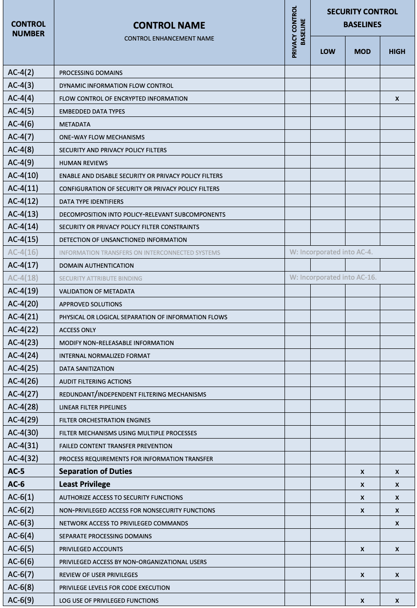
| 管理策番号 | 管理策名／管理策拡張名 | LORTNOC YCAVIRP | ENILESAB | セキュリティ管理策 |
| ベースライン | ||||
| 低 | 中／高 | |||
| AC-4(2) | 処理ドメイン | |||
| AC-4(3) | 動的な情報フロー制御 | |||
| AC-4(4) | 暗号化情報のフロー制御 | x | ||
| AC-4(5) | 埋め込みデータ型 | |||
| AC-4(6) | メタデータ | |||
| AC-4(7) | 一方向フロー機構 | |||
| AC-4(8) | セキュリティ・ポリシー・フィルターおよびプライバシー・ポリシー・フィルター | |||
| AC-4(9) | 人によるレビュー | |||
| AC-4(10) | セキュリティまたはプライバシーのポリシー・フィルターの有効化および無効化 | |||
| AC-4(11) | セキュリティまたはプライバシーのポリシー・フィルターの構成 | |||
| AC-4(12) | データ型識別子 | |||
| AC-4(13) | ポリシーに関連するサブコンポーネントへの分解 | |||
| AC-4(14) | セキュリティまたはプライバシーのポリシー・フィルター制約 | |||
| AC-4(15) | 未承認情報の検出 | |||
| AC-4(16) | 相互接続システム間の情報転送 | W：AC-4.に組み込み済み。 | ||
| AC-4(17) | ドメイン認証 | |||
| AC-4(18) | セキュリティ属性のバインディング | W：AC-16.に組み込み済み。 | ||
| AC-4(19) | メタデータの検証 | |||
| AC-4(20) | 承認済みソリューション | |||
| AC-4(21) | 情報フローの物理的または論理的な分離 | |||
| AC-4(22) | アクセスのみ | |||
| AC-4(23) | リリース不可情報の変更 | |||
| AC-4(24) | 内部正規化形式 | |||
| AC-4(25) | データのサニタイズ | |||
| AC-4(26) | フィルタリング・アクションの監査 | |||
| AC-4(27) | 冗長／独立したフィルタリング機構 | |||
| AC-4(28) | 線形フィルター・パイプライン | |||
| AC-4(29) | フィルター・オーケストレーション・エンジン | |||
| AC-4(30) | 複数プロセスを用いるフィルタリング機構 | |||
| AC-4(31) | コンテンツ転送失敗の防止 | |||
| AC-4(32) | 情報転送の処理要件 | |||
| AC-5 | 職務の分離 | x / x | ||
| AC-6 | 最小権限 | x / x | ||
| AC-6(1) | セキュリティ機能へのアクセスの認可 | x / x | ||
| AC-6(2) | セキュリティ以外の機能に対する非特権アクセス | x / x | ||
| AC-6(3) | 特権コマンドへのネットワーク・アクセス | x | ||
| AC-6(4) | 処理ドメインの分離 | |||
| AC-6(5) | 特権アカウント | x / x | ||
| AC-6(6) | 組織外ユーザーによる特権アクセス | |||
| AC-6(7) | ユーザー権限のレビュー | x / x | ||
| AC-6(8) | コード実行時の権限レベル | |||
| AC-6(9) | 特権機能の使用記録 | x / x |
原本の表画像

原本の表画像

CHAPTER THREE
第3章
未レビュー訳| CONTROL NUMBER | CONTROL NAME CONTROL ENHANCEMENT NAME | LORTNOC YCAVIRP | ENILESAB | SECURITY CONTROL |
| BASELINES | ||||
| LOW | MOD / HIGH | |||
| AC-6(10) | PROHIBIT NON-PRIVILEGED USERS FROM EXECUTING PRIVILEGED FUNCTIONS | x / x | ||
| AC-7 | Unsuccessful Logon Attempts | x | x / x | |
| AC-7(1) | AUTOMATIC ACCOUNT LOCK | W: Incorporated into AC-7. | ||
| AC-7(2) | PURGE OR WIPE MOBILE DEVICE | |||
| AC-7(3) | BIOMETRIC ATTEMPT LIMITING | |||
| AC-7(4) | USE OF ALTERNATE AUTHENTICATION FACTOR | |||
| AC-8 | System Use Notification | x | x / x | |
| AC-9 | Previous Logon Notification | |||
| AC-9(1) | UNSUCCESSFUL LOGONS | |||
| AC-9(2) | SUCCESSFUL AND UNSUCCESSFUL LOGONS | |||
| AC-9(3) | NOTIFICATION OF ACCOUNT CHANGES | |||
| AC-9(4) | ADDITIONAL LOGON INFORMATION | |||
| AC-10 | Concurrent Session Control | x | ||
| AC-11 | Device Lock | x / x | ||
| AC-11(1) | PATTERN-HIDING DISPLAYS | x / x | ||
| AC-12 | Session Termination | x / x | ||
| AC-12(1) | USER-INITIATED LOGOUTS | |||
| AC-12(2) | TERMINATION MESSAGE | |||
| AC-12(3) | TIMEOUT WARNING MESSAGE | |||
| AC-13 | Supervision and Review-Access Control | W: Incorporated into AC-2 and AU-6. | ||
| AC-14 | Permitted Actions without Identification or Authentication | x | x / x | |
| AC-14(1) | NECESSARY USES | W: Incorporated into AC-14. | ||
| AC-15 | Automated Marking | W: Incorporated into MP-3. | ||
| AC-16 | Security and Privacy Attributes | |||
| AC-16(1) | DYNAMIC ATTRIBUTE ASSOCIATION | |||
| AC-16(2) | ATTRIBUTE VALUE CHANGES BY AUTHORIZED INDIVIDUALS | |||
| AC-16(3) | MAINTENANCE OF ATTRIBUTE ASSOCIATIONS BY SYSTEM | |||
| AC-16(4) | ASSOCIATION OF ATTRIBUTES BY AUTHORIZED INDIVIDUALS | |||
| AC-16(5) | ATTRIBUTE DISPLAYS ON OBJECTS TO BE OUTPUT | |||
| AC-16(6) | MAINTENANCE OF ATTRIBUTE ASSOCIATION | |||
| AC-16(7) | CONSISTENT ATTRIBUTE INTERPRETATION | |||
| AC-16(8) | ASSOCIATION TECHNIQUES AND TECHNOLOGIES | |||
| AC-16(9) | ATTRIBUTE REASSIGNMENT – REGRADING MECHANISMS | |||
| AC-16(10) | ATTRIBUTE CONFIGURATION BY AUTHORIZED INDIVIDUALS | |||
| AC-17 | Remote Access | x | x / x | |
| AC-17(1) | MONITORING AND CONTROL | x / x | ||
| AC-17(2) | PROTECTION OF CONFIDENTIALITY AND INTEGRITY USING ENCRYPTION | x / x | ||
| AC-17(3) | MANAGED ACCESS CONTROL POINTS | x / x | ||
| AC-17(4) | PRIVILEGED COMMANDS AND ACCESS | x / x | ||
| AC-17(5) | MONITORING FOR UNAUTHORIZED CONNECTIONS | W: Incorporated into SI-4. | ||
| AC-17(6) | PROTECTION OF MECHANISM INFORMATION | |||
| AC-17(7) | ADDITIONAL PROTECTION FOR SECURITY FUNCTION ACCESS | W: Incorporated into AC-3(10). |
原本の表画像
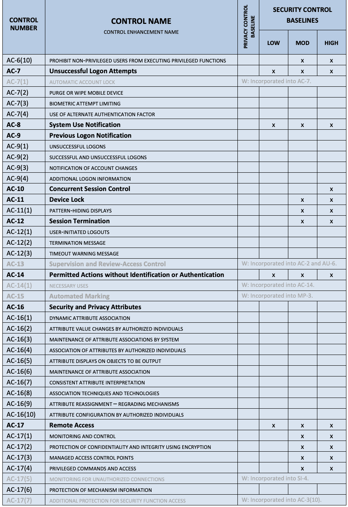
| 管理策番号 | 管理策名／管理策拡張名 | LORTNOC YCAVIRP | ENILESAB | セキュリティ管理策 |
| ベースライン | ||||
| 低 | 中／高 | |||
| AC-6(10) | 非特権ユーザーによる特権機能の実行禁止 | x / x | ||
| AC-7 | ログオン失敗 | x | x / x | |
| AC-7(1) | アカウントの自動ロック | W：AC-7.に組み込み済み。 | ||
| AC-7(2) | モバイル・デバイスの消去 | |||
| AC-7(3) | 生体認証試行の制限 | |||
| AC-7(4) | 代替認証要素の使用 | |||
| AC-8 | システム使用通知 | x | x / x | |
| AC-9 | 前回ログオン通知 | |||
| AC-9(1) | ログオン失敗 | |||
| AC-9(2) | ログオン成功および失敗 | |||
| AC-9(3) | アカウント変更の通知 | |||
| AC-9(4) | 追加ログオン情報 | |||
| AC-10 | 同時セッション制御 | x | ||
| AC-11 | デバイス・ロック | x / x | ||
| AC-11(1) | 入力パターンを隠す表示 | x / x | ||
| AC-12 | セッション終了 | x / x | ||
| AC-12(1) | ユーザー開始のログアウト | |||
| AC-12(2) | 終了メッセージ | |||
| AC-12(3) | タイムアウト警告メッセージ | |||
| AC-13 | 監督およびレビュー—アクセス制御 | W：AC-2 and AU-6.に組み込み済み。 | ||
| AC-14 | 識別または認証なしで許可される操作 | x | x / x | |
| AC-14(1) | 必要な使用 | W：AC-14.に組み込み済み。 | ||
| AC-15 | 自動マーキング | W：MP-3.に組み込み済み。 | ||
| AC-16 | セキュリティ属性およびプライバシー属性 | |||
| AC-16(1) | 属性の動的な関連付け | |||
| AC-16(2) | 認可された個人による属性値の変更 | |||
| AC-16(3) | システムによる属性関連付けの維持 | |||
| AC-16(4) | 認可された個人による属性の関連付け | |||
| AC-16(5) | 出力対象オブジェクト上の属性表示 | |||
| AC-16(6) | 属性関連付けの維持 | |||
| AC-16(7) | 一貫した属性解釈 | |||
| AC-16(8) | 関連付けの技法および技術 | |||
| AC-16(9) | 属性の再割り当て—再格付け機構 | |||
| AC-16(10) | 認可された個人による属性構成 | |||
| AC-17 | リモート・アクセス | x | x / x | |
| AC-17(1) | 監視および制御 | x / x | ||
| AC-17(2) | 暗号化による機密性および完全性の保護 | x / x | ||
| AC-17(3) | 管理されたアクセス制御ポイント | x / x | ||
| AC-17(4) | 特権コマンドおよびアクセス | x / x | ||
| AC-17(5) | 不正接続の監視 | W：SI-4.に組み込み済み。 | ||
| AC-17(6) | 機構情報の保護 | |||
| AC-17(7) | セキュリティ機能へのアクセスに対する追加保護 | W：AC-3(10).に組み込み済み。 |
原本の表画像
原本の表画像
CHAPTER THREE
第3章
未レビュー訳| CONTROL NUMBER | CONTROL NAME CONTROL ENHANCEMENT NAME | LORTNOC YCAVIRP | ENILESAB | SECURITY CONTROL |
| BASELINES | ||||
| LOW | MOD / HIGH | |||
| AC-17(8) | DISABLE NONSECURE NETWORK PROTOCOLS | W: Incorporated into CM-7. | ||
| AC-17(9) | DISCONNECT OR DISABLE ACCESS | |||
| AC-17(10) | AUTHENTICATE REMOTE COMMANDS | |||
| AC-18 | Wireless Access | x | x / x | |
| AC-18(1) | AUTHENTICATION AND ENCRYPTION | x / x | ||
| AC-18(2) | MONITORING UNAUTHORIZED CONNECTIONS | W: Incorporated into SI-4. | ||
| AC-18(3) | DISABLE WIRELESS NETWORKING | x / x | ||
| AC-18(4) | RESTRICT CONFIGURATIONS BY USERS | x | ||
| AC-18(5) | ANTENNAS AND TRANSMISSION POWER LEVELS | x | ||
| AC-19 | Access Control for Mobile Devices | x | x / x | |
| AC-19(1) | USE OF WRITABLE AND PORTABLE STORAGE DEVICES | W: Incorporated into MP-7. | ||
| AC-19(2) | USE OF PERSONALLY OWNED PORTABLE STORAGE DEVICES | W: Incorporated into MP-7. | ||
| AC-19(3) | USE OF PORTABLE STORAGE DEVICES WITH NO IDENTIFIABLE OWNER | W: Incorporated into MP-7. | ||
| AC-19(4) | RESTRICTIONS FOR CLASSIFIED INFORMATION | |||
| AC-19(5) | FULL DEVICE OR CONTAINER-BASED ENCRYPTION | x / x | ||
| AC-20 | Use of External Systems | x | x / x | |
| AC-20(1) | LIMITS ON AUTHORIZED USE | x / x | ||
| AC-20(2) | PORTABLE STORAGE DEVICES — RESTRICTED USE | x / x | ||
| AC-20(3) | NON-ORGANIZATIONALLY OWNED SYSTEMS — RESTRICTED USE | |||
| AC-20(4) | NETWORK ACCESSIBLE STORAGE DEVICES — PROHIBITED USE | |||
| AC-20(5) | PORTABLE STORAGE DEVICES — PROHIBITED USE | |||
| AC-21 | Information Sharing | x / x | ||
| AC-21(1) | AUTOMATED DECISION SUPPORT | |||
| AC-21(2) | INFORMATION SEARCH AND RETRIEVAL | |||
| AC-22 | Publicly Accessible Content | x | x / x | |
| AC-23 | Data Mining Protection | |||
| AC-24 | Access Control Decisions | |||
| AC-24(1) | TRANSMIT ACCESS AUTHORIZATION INFORMATION | |||
| AC-24(2) | NO USER OR PROCESS IDENTITY | |||
| AC-25 | Reference Monitor |
原本の表画像
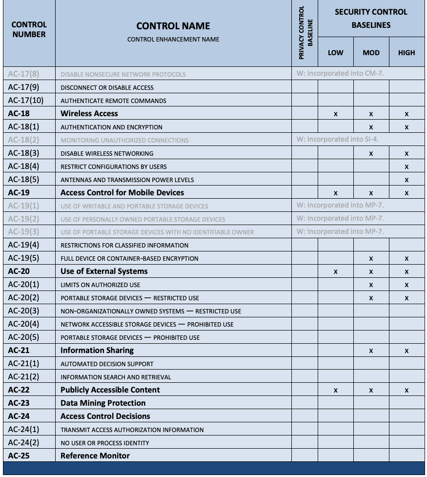
| 管理策番号 | 管理策名／管理策拡張名 | LORTNOC YCAVIRP | ENILESAB | セキュリティ管理策 |
| ベースライン | ||||
| 低 | 中／高 | |||
| AC-17(8) | 安全でないネットワーク・プロトコルの無効化 | W：CM-7.に組み込み済み。 | ||
| AC-17(9) | アクセスの切断または無効化 | |||
| AC-17(10) | リモート・コマンドの認証 | |||
| AC-18 | 無線アクセス | x | x / x | |
| AC-18(1) | 認証および暗号化 | x / x | ||
| AC-18(2) | 不正接続の監視 | W：SI-4.に組み込み済み。 | ||
| AC-18(3) | 無線ネットワーク機能の無効化 | x / x | ||
| AC-18(4) | ユーザーによる構成の制限 | x | ||
| AC-18(5) | アンテナおよび送信電力レベル | x | ||
| AC-19 | モバイル・デバイスのアクセス制御 | x | x / x | |
| AC-19(1) | 書き込み可能な携帯型記憶装置の使用 | W：MP-7.に組み込み済み。 | ||
| AC-19(2) | 個人所有の携帯型記憶装置の使用 | W：MP-7.に組み込み済み。 | ||
| AC-19(3) | 所有者を特定できない携帯型記憶装置の使用 | W：MP-7.に組み込み済み。 | ||
| AC-19(4) | 機密情報に関する制限 | |||
| AC-19(5) | デバイス全体またはコンテナー単位の暗号化 | x / x | ||
| AC-20 | 外部システムの使用 | x | x / x | |
| AC-20(1) | 認可された使用の制限 | x / x | ||
| AC-20(2) | 携帯型記憶装置—使用制限 | x / x | ||
| AC-20(3) | 組織所有ではないシステム—使用制限 | |||
| AC-20(4) | ネットワーク・アクセス可能な記憶装置—使用禁止 | |||
| AC-20(5) | 携帯型記憶装置—使用禁止 | |||
| AC-21 | 情報共有 | x / x | ||
| AC-21(1) | 自動意思決定支援 | |||
| AC-21(2) | 情報検索および取得 | |||
| AC-22 | 一般公開コンテンツ | x | x / x | |
| AC-23 | データ・マイニング保護 | |||
| AC-24 | アクセス制御の決定 | |||
| AC-24(1) | アクセス認可情報の送信 | |||
| AC-24(2) | ユーザーまたはプロセスの識別情報なし | |||
| AC-25 | リファレンス・モニター |
原本の表画像

原本の表画像

CHAPTER THREE
第3章
未レビュー訳3.2 AWARENESS AND TRAINING FAMILY
3.2 意識向上および訓練ファミリー
未レビュー訳Table 3-2 provides a summary of the controls and control enhancements assigned to the Awareness and Training Family. The controls are allocated to the low-impact, moderate-impact, and high-impact security control baselines and the privacy control baseline, as appropriate. A control or control enhancement that has been withdrawn from the control catalog is indicated by a “W” and an explanation of the control or control enhancement disposition in light gray text.
表3-2に、意識向上および訓練ファミリーに割り当てられた管理策および管理策拡張の概要を示す。該当するものについて、管理策は低影響度、中影響度、高影響度のセキュリティ管理策ベースラインおよびプライバシー管理策ベースラインに割り当てられている。管理策カタログから撤回された管理策または管理策拡張には「W」を付し、その処置理由を薄い灰色の文字で説明する。
未レビュー訳TABLE 3-2: AWARENESS AND TRAINING FAMILY
表3-2：意識向上および訓練ファミリー
未レビュー訳| CONTROL NUMBER | CONTROL NAME CONTROL ENHANCEMENT NAME | LORTNOC YCAVIRP | ENILESAB | SECURITY CONTROL |
| BASELINES | ||||
| LOW | MOD / HIGH | |||
| AT-1 | Policy and Procedures | x | x | x / x |
| AT-2 | Literacy Training and Awareness | x | x | x / x |
| AT-2(1) | PRACTICAL EXERCISES | |||
| AT-2(2) | INSIDER THREAT | X | x / x | |
| AT-2(3) | SOCIAL ENGINEERING AND MINING | x / x | ||
| AT-2(4) | SUSPICIOUS COMMUNICATIONS AND ANOMALOUS SYSTEM BEHAVIOR | |||
| AT-2(5) | ADVANCED PERSISTENT THREAT | |||
| AT-2(6) | CYBER THREAT ENVIRONMENT | |||
| AT-3 | Role-Based Training | x | x | x / x |
| AT-3(1) | ENVIRONMENTAL CONTROLS | |||
| AT-3(2) | PHYSICAL SECURITY CONTROLS | |||
| AT-3(3) | PRACTICAL EXERCISES | |||
| AT-3(4) | SUSPICIOUS COMMUNICATIONS AND ANOMALOUS SYSTEM BEHAVIOR | W: Incorporated into AT-2(4). | ||
| AT-3(5) | PROCESSING PERSONALLY IDENTIFIABLE INFORMATION | x | ||
| AT-4 | Training Records | x | x | x / x |
| AT-5 | Contacts with Security Groups and Associations | W: Incorporated into PM-15. | ||
| AT-6 | Training Feedback |
原本の表画像
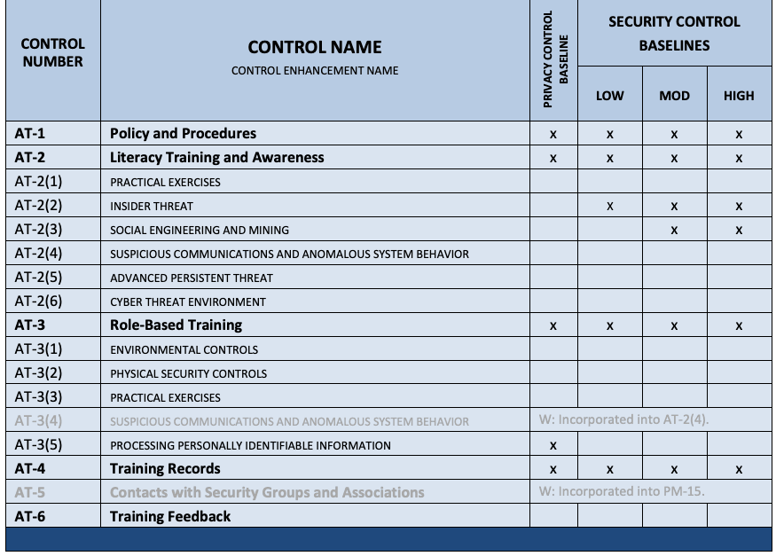
| 管理策番号 | 管理策名／管理策拡張名 | LORTNOC YCAVIRP | ENILESAB | セキュリティ管理策 |
| ベースライン | ||||
| 低 | 中／高 | |||
| AT-1 | ポリシーおよび手順 | x | x | x / x |
| AT-2 | リテラシー訓練および意識向上 | x | x | x / x |
| AT-2(1) | 実地演習 | |||
| AT-2(2) | 内部脅威 | X | x / x | |
| AT-2(3) | ソーシャル・エンジニアリングおよびマイニング | x / x | ||
| AT-2(4) | 不審な通信および異常なシステム動作 | |||
| AT-2(5) | 高度持続的脅威 | |||
| AT-2(6) | サイバー脅威環境 | |||
| AT-3 | 役割ベースの訓練 | x | x | x / x |
| AT-3(1) | 環境管理策 | |||
| AT-3(2) | 物理的セキュリティ管理策 | |||
| AT-3(3) | 実地演習 | |||
| AT-3(4) | 不審な通信および異常なシステム動作 | W：AT-2(4).に組み込み済み。 | ||
| AT-3(5) | 個人識別情報の処理 | x | ||
| AT-4 | 訓練記録 | x | x | x / x |
| AT-5 | セキュリティ・グループおよび団体との連絡 | W：PM-15.に組み込み済み。 | ||
| AT-6 | 訓練に関するフィードバック |
原本の表画像

原本の表画像

CHAPTER THREE
第3章
未レビュー訳3.3 AUDIT AND ACCOUNTABILITY FAMILY
3.3 監査および説明責任ファミリー
未レビュー訳Table 3-3 provides a summary of the controls and control enhancements assigned to the Audit and Accountability Family. The controls are allocated to the low-impact, moderate-impact, and high-impact security control baselines and the privacy control baseline, as appropriate. A control or control enhancement that has been withdrawn from the control catalog is indicated by a “W” and an explanation of the control or control enhancement disposition in light gray text.
表3-3に、監査および説明責任ファミリーに割り当てられた管理策および管理策拡張の概要を示す。該当するものについて、管理策は低影響度、中影響度、高影響度のセキュリティ管理策ベースラインおよびプライバシー管理策ベースラインに割り当てられている。管理策カタログから撤回された管理策または管理策拡張には「W」を付し、その処置理由を薄い灰色の文字で説明する。
未レビュー訳TABLE 3-3: AUDIT AND ACCOUNTABILITY FAMILY
表3-3：監査および説明責任ファミリー
未レビュー訳| CONTROL NUMBER | CONTROL NAME CONTROL ENHANCEMENT NAME | LORTNOC YCAVIRP | ENILESAB | SECURITY CONTROL |
| BASELINES | ||||
| LOW | MOD / HIGH | |||
| AU-1 | Policy and Procedures | x | x | x / x |
| AU-2 | Event Logging | x | x | x / x |
| AU-2(1) | COMPILATION OF AUDIT RECORDS FROM MULTIPLE SOURCES | W: Incorporated into AU-12. | ||
| AU-2(2) | SELECTION OF AUDIT EVENTS BY COMPONENT | W: Incorporated into AU-12. | ||
| AU-2(3) | REVIEWS AND UPDATES | W: Incorporated into AU-2. | ||
| AU-2(4) | PRIVILEGED FUNCTIONS | W: Incorporated into AC-6(9). | ||
| AU-3 | Content of Audit Records | x | x / x | |
| AU-3(1) | ADDITIONAL AUDIT INFORMATION | x / x | ||
| AU-3(2) | CENTRALIZED MANAGEMENT OF PLANNED AUDIT RECORD CONTENT | W: Incorporated into PL-9. | ||
| AU-3(3) | LIMIT PERSONALLY IDENTIFIABLE INFORMATION ELEMENTS | x | ||
| AU-4 | Audit Log Storage Capacity | x | x / x | |
| AU-4(1) | TRANSFER TO ALTERNATE STORAGE | |||
| AU-5 | Response to Audit Logging Process Failures | x | x / x | |
| AU-5(1) | STORAGE CAPACITY WARNING | x | ||
| AU-5(2) | REAL-TIME ALERTS | x | ||
| AU-5(3) | CONFIGURABLE TRAFFIC VOLUME THRESHOLDS | |||
| AU-5(4) | SHUTDOWN ON FAILURE | |||
| AU-5(5) | ALTERNATE AUDIT LOGGING CAPABILITY | |||
| AU-6 | Audit Record Review, Analysis, and Reporting | x | x / x | |
| AU-6(1) | AUTOMATED PROCESS INTEGRATION | x / x | ||
| AU-6(2) | AUTOMATED SECURITY ALERTS | W: Incorporated into SI-4. | ||
| AU-6(3) | CORRELATE AUDIT RECORD REPOSITORIES | x / x | ||
| AU-6(4) | CENTRAL REVIEW AND ANALYSIS | |||
| AU-6(5) | INTEGRATED ANALYSIS OF AUDIT RECORDS | x | ||
| AU-6(6) | CORRELATION WITH PHYSICAL MONITORING | x | ||
| AU-6(7) | PERMITTED ACTIONS | |||
| AU-6(8) | FULL TEXT ANALYSIS OF PRIVILEGED COMMANDS | |||
| AU-6(9) | CORRELATION WITH INFORMATION FROM NONTECHNICAL SOURCES | |||
| AU-6(10) | AUDIT LEVEL ADJUSTMENT | W: Incorporated into AU-6. | ||
| AU-7 | Audit Record Reduction and Report Generation | x / x | ||
| AU-7(1) | AUTOMATIC PROCESSING | x / x | ||
| AU-7(2) | AUTOMATIC SORT AND SEARCH | W: Incorporated into AU-7(1). | ||
| AU-8 | Time Stamps | x | x / x |
原本の表画像
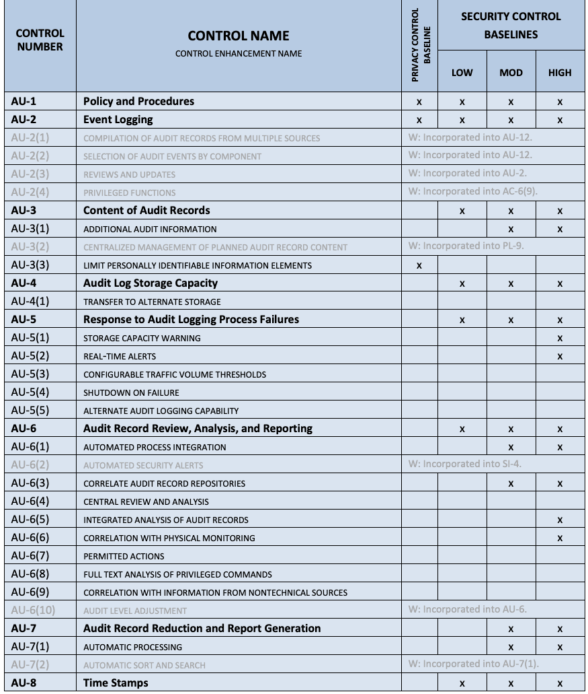
| 管理策番号 | 管理策名／管理策拡張名 | プライバシー管理策 | ベースライン | セキュリティ管理策 |
| ベースライン | ||||
| 低 | 中／高 | |||
| AU-1 | ポリシーおよび手順 | x | x | x / x |
| AU-2 | イベント記録 | x | x | x / x |
| AU-2(1) | 複数のソースからの監査記録の集約 | W：AU-12に統合。 | ||
| AU-2(2) | コンポーネント別の監査イベント選択 | W：AU-12に統合。 | ||
| AU-2(3) | レビューおよび更新 | W：AU-2に統合。 | ||
| AU-2(4) | 特権機能 | W：AC-6(9)に統合。 | ||
| AU-3 | 監査記録の内容 | x | x / x | |
| AU-3(1) | 追加の監査情報 | x / x | ||
| AU-3(2) | 計画された監査記録内容の一元管理 | W：PL-9に統合。 | ||
| AU-3(3) | 個人識別情報要素の制限 | x | ||
| AU-4 | 監査ログの保管容量 | x | x / x | |
| AU-4(1) | 代替保管先への転送 | |||
| AU-5 | 監査記録プロセスの障害への対応 | x | x / x | |
| AU-5(1) | 保管容量の警告 | x | ||
| AU-5(2) | リアルタイムアラート | x | ||
| AU-5(3) | 構成可能なトラフィック量のしきい値 | |||
| AU-5(4) | 障害発生時のシャットダウン | |||
| AU-5(5) | 代替監査記録機能 | |||
| AU-6 | 監査記録のレビュー、分析、および報告 | x | x / x | |
| AU-6(1) | プロセスの自動統合 | x / x | ||
| AU-6(2) | セキュリティアラートの自動化 | W：SI-4に統合。 | ||
| AU-6(3) | 監査記録リポジトリの相関付け | x / x | ||
| AU-6(4) | 一元的なレビューおよび分析 | |||
| AU-6(5) | 監査記録の統合分析 | x | ||
| AU-6(6) | 物理的監視との相関付け | x | ||
| AU-6(7) | 許可されたアクション | |||
| AU-6(8) | 特権コマンドの全文分析 | |||
| AU-6(9) | 非技術的な情報源からの情報との相関付け | |||
| AU-6(10) | 監査レベルの調整 | W：AU-6に統合。 | ||
| AU-7 | 監査記録の縮約およびレポート生成 | x / x | ||
| AU-7(1) | 自動処理 | x / x | ||
| AU-7(2) | 自動ソートおよび検索 | W：AU-7(1)に統合。 | ||
| AU-8 | タイムスタンプ | x | x / x |
原本の表画像
原本の表画像

CHAPTER THREE
第3章
未レビュー訳| CONTROL NUMBER | CONTROL NAME CONTROL ENHANCEMENT NAME | LORTNOC YCAVIRP | ENILESAB | SECURITY CONTROL |
| BASELINES | ||||
| LOW | MOD / HIGH | |||
| AU-8(1) | SYNCHRONIZATION WITH AUTHORITATIVE TIME SOURCE | W: Moved to SC-45(1). | ||
| AU-8(2) | SECONDARY AUTHORITATIVE TIME SOURCE | W: Moved to SC-45(2). | ||
| AU-9 | Protection of Audit Information | x | x / x | |
| AU-9(1) | HARDWARE WRITE-ONCE MEDIA | |||
| AU-9(2) | STORE ON SEPARATE PHYSICAL SYSTEMS OR COMPONENTS | x | ||
| AU-9(3) | CRYPTOGRAPHIC PROTECTION | x | ||
| AU-9(4) | ACCESS BY SUBSET OF PRIVILEGED USERS | x / x | ||
| AU-9(5) | DUAL AUTHORIZATION | |||
| AU-9(6) | READ-ONLY ACCESS | |||
| AU-9(7) | STORE ON COMPONENT WITH DIFFERENT OPERATING SYSTEM | |||
| AU-10 | Non-repudiation | x | ||
| AU-10(1) | ASSOCIATION OF IDENTITIES | |||
| AU-10(2) | VALIDATE BINDING OF INFORMATION PRODUCER IDENTITY | |||
| AU-10(3) | CHAIN OF CUSTODY | |||
| AU-10(4) | VALIDATE BINDING OF INFORMATION REVIEWER IDENTITY | |||
| AU-10(5) | DIGITAL SIGNATURES | W: Incorporated into SI-7. | ||
| AU-11 | Audit Record Retention | x | x | x / x |
| AU-11(1) | LONG-TERM RETRIEVAL CAPABILITY | |||
| AU-12 | Audit Record Generation | x | x / x | |
| AU-12(1) | SYSTEM-WIDE AND TIME-CORRELATED AUDIT TRAIL | x | ||
| AU-12(2) | STANDARDIZED FORMATS | |||
| AU-12(3) | CHANGES BY AUTHORIZED INDIVIDUALS | x | ||
| AU-12(4) | QUERY PARAMETER AUDITS OF PERSONALLY IDENTIFIABLE INFORMATION | |||
| AU-13 | Monitoring for Information Disclosure | |||
| AU-13(1) | USE OF AUTOMATED TOOLS | |||
| AU-13(2) | REVIEW OF MONITORED SITES | |||
| AU-13(3) | UNAUTHORIZED REPLICATION OF INFORMATION | |||
| AU-14 | Session Audit | |||
| AU-14(1) | SYSTEM START-UP | |||
| AU-14(2) | CAPTURE AND RECORD CONTENT | W: Incorporated into AU-14. | ||
| AU-14(3) | REMOTE VIEWING AND LISTENING | |||
| AU-15 | Alternate Audit Logging Capability | W: Moved to AU-5(5). | ||
| AU-16 | Cross-Organizational Audit Logging | |||
| AU-16(1) | IDENTITY PRESERVATION | |||
| AU-16(2) | SHARING OF AUDIT INFORMATION | |||
| AU-16(3) | DISASSOCIABILITY |
原本の表画像
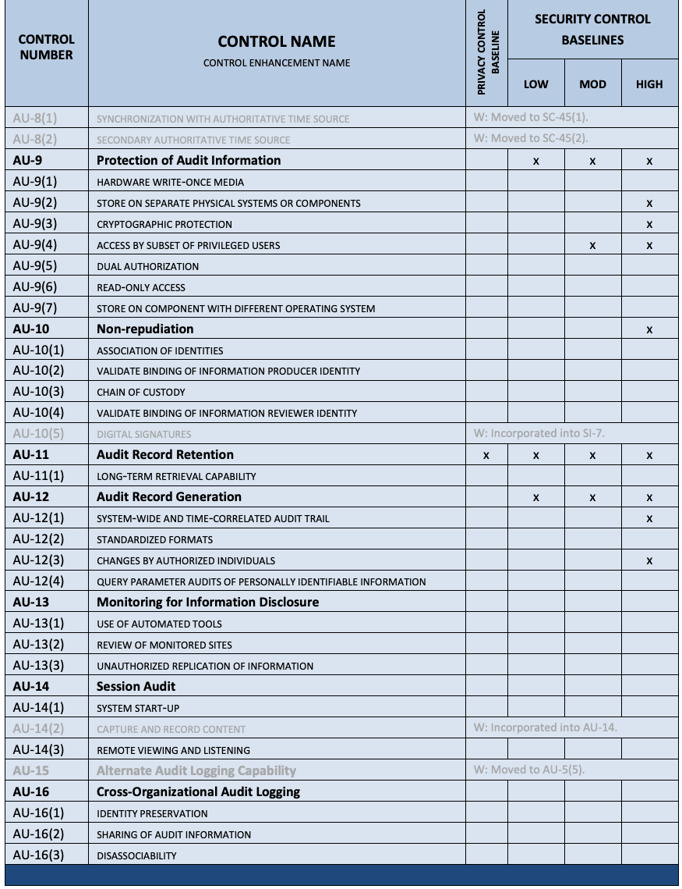
| 管理策番号 | 管理策名／管理策拡張名 | プライバシー管理策 | ベースライン | セキュリティ管理策 |
| ベースライン | ||||
| 低 | 中／高 | |||
| AU-8(1) | 権威ある時刻源との同期 | W：SC-45(1)に移動。 | ||
| AU-8(2) | 第2の権威ある時刻源 | W：SC-45(2)に移動。 | ||
| AU-9 | 監査情報の保護 | x | x / x | |
| AU-9(1) | ハードウェアの追記型メディア | |||
| AU-9(2) | 別個の物理システムまたはコンポーネントに保管 | x | ||
| AU-9(3) | 暗号学的保護 | x | ||
| AU-9(4) | 特権ユーザーの一部によるアクセス | x / x | ||
| AU-9(5) | 二者承認 | |||
| AU-9(6) | 読み取り専用アクセス | |||
| AU-9(7) | 異なるオペレーティングシステムを備えたコンポーネントに保管 | |||
| AU-10 | 否認防止 | x | ||
| AU-10(1) | 識別情報の関連付け | |||
| AU-10(2) | 情報作成者の識別情報との結び付きを検証 | |||
| AU-10(3) | 証拠保全の連鎖 | |||
| AU-10(4) | 情報レビュー担当者の識別情報との結び付きを検証 | |||
| AU-10(5) | デジタル署名 | W：SI-7に統合。 | ||
| AU-11 | 監査記録の保持 | x | x | x / x |
| AU-11(1) | 長期検索機能 | |||
| AU-12 | 監査記録の生成 | x | x / x | |
| AU-12(1) | システム全体にわたり時刻相関のある監査証跡 | x | ||
| AU-12(2) | 標準化された形式 | |||
| AU-12(3) | 認可された個人による変更 | x | ||
| AU-12(4) | 個人識別情報のクエリパラメータ監査 | |||
| AU-13 | 情報開示の監視 | |||
| AU-13(1) | 自動化ツールの使用 | |||
| AU-13(2) | 監視対象サイトのレビュー | |||
| AU-13(3) | 情報の無許可複製 | |||
| AU-14 | セッション監査 | |||
| AU-14(1) | システム起動 | |||
| AU-14(2) | 内容の取得および記録 | W：AU-14に統合。 | ||
| AU-14(3) | リモートでの閲覧および聴取 | |||
| AU-15 | 代替監査記録機能 | W：AU-5(5)に移動。 | ||
| AU-16 | 組織間の監査記録 | |||
| AU-16(1) | 識別情報の保持 | |||
| AU-16(2) | 監査情報の共有 | |||
| AU-16(3) | 関連付け解除可能性 |
原本の表画像
原本の表画像

CHAPTER THREE
第3章
未レビュー訳3.4 ASSESSMENT, AUTHORIZATION, AND MONITORING FAMILY
3.4 評価、認可および監視ファミリー
未レビュー訳Table 3-4 provides a summary of the controls and control enhancements assigned to the Assessment, Authorization, and Monitoring Family. The controls are allocated to the low-impact, moderate-impact, and high-impact security control baselines and the privacy control baseline, as appropriate. A control or control enhancement that has been withdrawn from the control catalog is indicated by a “W” and an explanation of the control or control enhancement disposition in light gray text.
表3-4は、評価、認可および監視ファミリーに割り当てられた管理策と管理策拡張の概要を示す。管理策は、該当する場合、低影響、中影響、高影響のセキュリティ管理策ベースラインおよびプライバシー管理策ベースラインに割り当てられている。管理策カタログから撤回された管理策または管理策拡張は「W」で示し、その処置に関する説明を薄い灰色の文字で記載している。
未レビュー訳TABLE 3-4: ASSESSMENT, AUTHORIZATION, AND MONITORING FAMILY
表3-4：評価、認可および監視ファミリー
未レビュー訳| CONTROL NUMBER | CONTROL NAME CONTROL ENHANCEMENT NAME | LORTNOC YCAVIRP | ENILESAB | SECURITY CONTROL |
| BASELINES | ||||
| LOW | MOD / HIGH | |||
| CA-1 | Policy and Procedures | x | x | x / x |
| CA-2 | Control Assessments | x | x | x / x |
| CA-2(1) | INDEPENDENT ASSESSORS | x / x | ||
| CA-2(2) | SPECIALIZED ASSESSMENTS | x | ||
| CA-2(3) | LEVERAGING RESULTS FROM EXTERNAL ORGANIZATIONS | |||
| CA-3 | Information Exchange | x | x / x | |
| CA-3(1) | UNCLASSIFIED NATIONAL SECURITY SYSTEM CONNECTIONS | W: Moved to SC-7(25). | ||
| CA-3(2) | CLASSIFIED NATIONAL SECURITY SYSTEM CONNECTIONS | W: Moved to SC-7(26). | ||
| CA-3(3) | UNCLASSIFIED NON-NATIONAL SECURITY SYSTEM CONNECTIONS | W: Moved to SC-7(27). | ||
| CA-3(4) | CONNECTIONS TO PUBLIC NETWORKS | W: Moved to SC-7(28). | ||
| CA-3(5) | RESTRICTIONS ON EXTERNAL SYSTEM CONNECTIONS | W: Incorporated into SC-7(5). | ||
| CA-3(6) | TRANSFER AUTHORIZATIONS | x | ||
| CA-3(7) | TRANSITIVE INFORMATION EXCHANGES | |||
| CA-4 | Security Certification | W: Incorporated into CA-2. | ||
| CA-5 | Plan of Action and Milestones | x | x | x / x |
| CA-5(1) | AUTOMATION SUPPORT FOR ACCURACY AND CURRENCY | |||
| CA-6 | Authorization | x | x | x / x |
| CA-6(1) | JOINT AUTHORIZATION — INTRA-ORGANIZATION | |||
| CA-6(2) | JOINT AUTHORIZATION — INTER-ORGANIZATION | |||
| CA-7 | Continuous Monitoring | x | x | x / x |
| CA-7(1) | INDEPENDENT ASSESSMENT | x / x | ||
| CA-7(2) | TYPES OF ASSESSMENTS | W: Incorporated into CA-2. | ||
| CA-7(3) | TREND ANALYSES | |||
| CA-7(4) | RISK MONITORING | x | x | x / x |
| CA-7(5) | CONSISTENCY ANALYSIS | |||
| CA-7(6) | AUTOMATION SUPPORT FOR MONITORING | |||
| CA-8 | Penetration Testing | x | ||
| CA-8(1) | INDEPENDENT PENETRATION TESTING AGENT OR TEAM | x | ||
| CA-8(2) | RED TEAM EXERCISES | |||
| CA-8(3) | FACILITY PENETRATION TESTING | |||
| CA-9 | Internal System Connections | x | x / x | |
| CA-9(1) | COMPLIANCE CHECKS |
原本の表画像
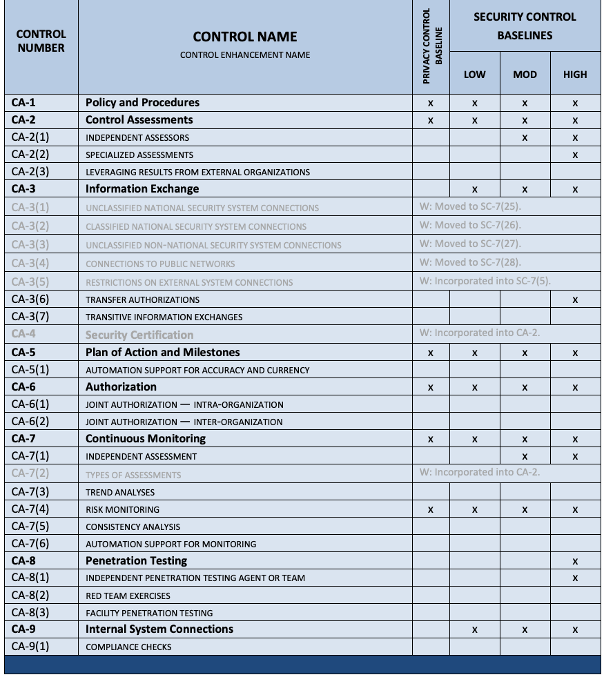
| 管理策番号 | 管理策名／管理策拡張名 | プライバシー管理策 | ベースライン | セキュリティ管理策 |
| ベースライン | ||||
| 低 | 中／高 | |||
| CA-1 | ポリシーおよび手順 | x | x | x / x |
| CA-2 | 管理策評価 | x | x | x / x |
| CA-2(1) | 独立評価者 | x / x | ||
| CA-2(2) | 専門的評価 | x | ||
| CA-2(3) | 外部組織の結果の活用 | |||
| CA-3 | 情報交換 | x | x / x | |
| CA-3(1) | 非機密の国家安全保障システムとの接続 | W：SC-7(25)に移動。 | ||
| CA-3(2) | 機密の国家安全保障システムとの接続 | W：SC-7(26)に移動。 | ||
| CA-3(3) | 非機密の非国家安全保障システムとの接続 | W：SC-7(27)に移動。 | ||
| CA-3(4) | 公衆ネットワークへの接続 | W：SC-7(28)に移動。 | ||
| CA-3(5) | 外部システム接続の制限 | W：SC-7(5)に統合。 | ||
| CA-3(6) | 転送の認可 | x | ||
| CA-3(7) | 推移的な情報交換 | |||
| CA-4 | セキュリティ認証 | W：CA-2に統合。 | ||
| CA-5 | 行動計画およびマイルストーン | x | x | x / x |
| CA-5(1) | 正確性と最新性のための自動化支援 | |||
| CA-6 | 認可 | x | x | x / x |
| CA-6(1) | 共同認可—組織内 | |||
| CA-6(2) | 共同認可—組織間 | |||
| CA-7 | 継続的監視 | x | x | x / x |
| CA-7(1) | 独立評価 | x / x | ||
| CA-7(2) | 評価の種類 | W：CA-2に統合。 | ||
| CA-7(3) | 傾向分析 | |||
| CA-7(4) | リスク監視 | x | x | x / x |
| CA-7(5) | 整合性分析 | |||
| CA-7(6) | 監視の自動化支援 | |||
| CA-8 | 侵入テスト | x | ||
| CA-8(1) | 独立した侵入テスト担当者またはチーム | x | ||
| CA-8(2) | レッドチーム演習 | |||
| CA-8(3) | 施設への侵入テスト | |||
| CA-9 | 内部システム接続 | x | x / x | |
| CA-9(1) | コンプライアンス確認 |
原本の表画像

原本の表画像
CHAPTER THREE
第3章
未レビュー訳3.5 CONFIGURATION MANAGEMENT FAMILY
3.5 構成管理ファミリー
未レビュー訳Table 3-5 provides a summary of the controls and control enhancements assigned to the Configuration Management Family. The controls are allocated to the low-impact, moderate-impact, and high-impact security control baselines and the privacy control baseline, as appropriate. A control or control enhancement that has been withdrawn from the control catalog is indicated by a “W” and an explanation of the control or control enhancement disposition in light gray text.
表3-5は、構成管理ファミリーに割り当てられた管理策と管理策拡張の概要を示す。管理策は、該当する場合、低影響、中影響、高影響のセキュリティ管理策ベースラインおよびプライバシー管理策ベースラインに割り当てられている。管理策カタログから撤回された管理策または管理策拡張は「W」で示し、その処置に関する説明を薄い灰色の文字で記載している。
未レビュー訳TABLE 3-5: CONFIGURATION MANAGEMENT FAMILY
表3-5：構成管理ファミリー
未レビュー訳| CONTROL NUMBER | CONTROL NAME CONTROL ENHANCEMENT NAME | LORTNOC YCAVIRP | ENILESAB | SECURITY CONTROL |
| BASELINES | ||||
| LOW | MOD / HIGH | |||
| CM-1 | Policy and Procedures | x | x | x / x |
| CM-2 | Baseline Configuration | x | x / x | |
| CM-2(1) | REVIEWS AND UPDATES | W: Incorporated into CM-2. | ||
| CM-2(2) | AUTOMATION SUPPORT FOR ACCURACY AND CURRENCY | x / x | ||
| CM-2(3) | RETENTION OF PREVIOUS CONFIGURATIONS | x / x | ||
| CM-2(4) | UNAUTHORIZED SOFTWARE | W: Incorporated into CM-7. | ||
| CM-2(5) | AUTHORIZED SOFTWARE | W: Incorporated into CM-7. | ||
| CM-2(6) | DEVELOPMENT AND TEST ENVIRONMENTS | |||
| CM-2(7) | CONFIGURE SYSTEMS AND COMPONENTS FOR HIGH-RISK AREAS | x / x | ||
| CM-3 | Configuration Change Control | x / x | ||
| CM-3(1) / CM-3(1) | AUTOMATED DOCUMENTATION, NOTIFICATION, AND PROHIBITION OF | x / x | ||
| CHANGES | ||||
| CM-3(2) | TESTING, VALIDATION, AND DOCUMENTATION OF CHANGES | x / x | ||
| CM-3(3) | AUTOMATED CHANGE IMPLEMENTATION | |||
| CM-3(4) | SECURITY AND PRIVACY REPRESENTATIVES | x / x | ||
| CM-3(5) | AUTOMATED SECURITY RESPONSE | |||
| CM-3(6) | CRYPTOGRAPHY MANAGEMENT | x | ||
| CM-3(7) | REVIEW SYSTEM CHANGES | |||
| CM-3(8) | PREVENT OR RESTRICT CONFIGURATION CHANGES | |||
| CM-4 | Impact Analyses | x | x | x / x |
| CM-4(1) | SEPARATE TEST ENVIRONMENTS | x | ||
| CM-4(2) | VERIFICATION OF CONTROLS | x / x | ||
| CM-5 | Access Restrictions for Change | x | x / x | |
| CM-5(1) | AUTOMATED ACCESS ENFORCEMENT AND AUDIT RECORDS | x | ||
| CM-5(2) | REVIEW SYSTEM CHANGES | W: Incorporated into CM-3(7). | ||
| CM-5(3) | SIGNED COMPONENTS | W: Moved to CM-14. | ||
| CM-5(4) | DUAL AUTHORIZATION | |||
| CM-5(5) | PRIVILEGE LIMITATION FOR PRODUCTION AND OPERATION | |||
| CM-5(6) | LIMIT LIBRARY PRIVILEGES | |||
| CM-5(7) | AUTOMATIC IMPLEMENTATION OF SECURITY SAFEGUARDS | W: Incorporated into SI-7. | ||
| CM-6 | Configuration Settings | x | x / x | |
| CM-6(1) | AUTOMATED MANAGEMENT, APPLICATION, AND VERIFICATION | x |
原本の表画像
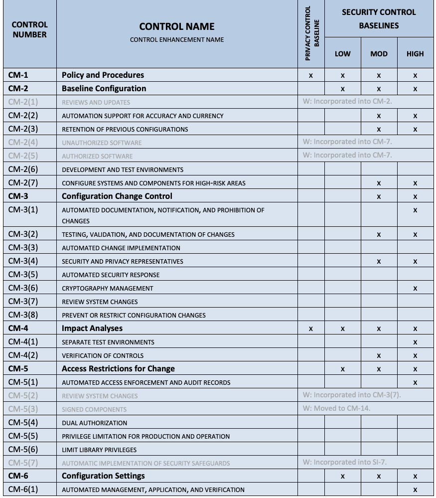
| 管理策番号 | 管理策名／管理策拡張名 | プライバシー管理策 | ベースライン | セキュリティ管理策 |
| ベースライン | ||||
| 低 | 中／高 | |||
| CM-1 | ポリシーおよび手順 | x | x | x / x |
| CM-2 | ベースライン構成 | x | x / x | |
| CM-2(1) | レビューおよび更新 | W：CM-2に統合。 | ||
| CM-2(2) | 正確性と最新性のための自動化支援 | x / x | ||
| CM-2(3) | 以前の構成の保持 | x / x | ||
| CM-2(4) | 無許可ソフトウェア | W：CM-7に統合。 | ||
| CM-2(5) | 認可済みソフトウェア | W：CM-7に統合。 | ||
| CM-2(6) | 開発およびテスト環境 | |||
| CM-2(7) | 高リスク領域向けのシステムおよびコンポーネント構成 | x / x | ||
| CM-3 | 構成変更管理 | x / x | ||
| CM-3(1) / CM-3(1) | 自動化された文書化、通知、および変更の禁止 | x / x | ||
| CM-3(2) | 変更のテスト、検証、および文書化 | x / x | ||
| CM-3(3) | 変更の自動実装 | |||
| CM-3(4) | セキュリティおよびプライバシー担当者 | x / x | ||
| CM-3(5) | セキュリティ対応の自動化 | |||
| CM-3(6) | 暗号管理 | x | ||
| CM-3(7) | システム変更のレビュー | |||
| CM-3(8) | 構成変更の防止または制限 | |||
| CM-4 | 影響分析 | x | x | x / x |
| CM-4(1) | 分離されたテスト環境 | x | ||
| CM-4(2) | 管理策の検証 | x / x | ||
| CM-5 | 変更アクセスの制限 | x | x / x | |
| CM-5(1) | アクセスの自動強制および監査記録 | x | ||
| CM-5(2) | システム変更のレビュー | W：CM-3(7)に統合。 | ||
| CM-5(3) | 署名済みコンポーネント | W：CM-14に移動。 | ||
| CM-5(4) | 二者承認 | |||
| CM-5(5) | 本番環境および運用に対する特権の制限 | |||
| CM-5(6) | ライブラリ特権の制限 | |||
| CM-5(7) | セキュリティ保護手段の自動実装 | W：SI-7に統合。 | ||
| CM-6 | 構成設定 | x | x / x | |
| CM-6(1) | 管理、適用、および検証の自動化 | x |
原本の表画像

原本の表画像

CHAPTER THREE
第3章
未レビュー訳| CONTROL NUMBER | CONTROL NAME CONTROL ENHANCEMENT NAME | LORTNOC YCAVIRP | ENILESAB | SECURITY CONTROL |
| BASELINES | ||||
| LOW | MOD / HIGH | |||
| CM-6(2) | RESPOND TO UNAUTHORIZED CHANGES | x | ||
| CM-6(3) | UNAUTHORIZED CHANGE DETECTION | W: Incorporated into SI-7. | ||
| CM-6(4) | CONFORMANCE DEMONSTRATION | W: Incorporated into CM-4. | ||
| CM-7 | Least Functionality | x | x / x | |
| CM-7(1) | PERIODIC REVIEW | x / x | ||
| CM-7(2) | PREVENT PROGRAM EXECUTION | x / x | ||
| CM-7(3) | REGISTRATION COMPLIANCE | |||
| CM-7(4) | UNAUTHORIZED SOFTWARE — DENY-BY-EXCEPTION | |||
| CM-7(5) | AUTHORIZED SOFTWARE — ALLOW-BY-EXCEPTION | x / x | ||
| CM-7(6) | CONFINED ENVIRONMENTS WITH LIMITED PRIVILEGES | |||
| CM-7(7) | CODE EXECUTION IN PROTECTED ENVIRONMENTS | |||
| CM-7(8) | BINARY OR MACHINE EXECUTABLE CODE | |||
| CM-7(9) | PROHIBITING THE USE OF UNAUTHORIZED HARDWARE | |||
| CM-8 | System Component Inventory | x | x / x | |
| CM-8(1) | UPDATES DURING INSTALLATION AND REMOVAL | x / x | ||
| CM-8(2) | AUTOMATED MAINTENANCE | x | ||
| CM-8(3) | AUTOMATED UNAUTHORIZED COMPONENT DETECTION | x / x | ||
| CM-8(4) | ACCOUNTABILITY INFORMATION | x | ||
| CM-8(5) | NO DUPLICATE ACCOUNTING OF COMPONENTS | W: Incorporated into CM-8. | ||
| CM-8(6) | ASSESSED CONFIGURATIONS AND APPROVED DEVIATIONS | |||
| CM-8(7) | CENTRALIZED REPOSITORY | |||
| CM-8(8) | AUTOMATED LOCATION TRACKING | |||
| CM-8(9) | ASSIGNMENT OF COMPONENTS TO SYSTEMS | |||
| CM-9 | Configuration Management Plan | x / x | ||
| CM-9(1) | ASSIGNMENT OF RESPONSIBILITY | |||
| CM-10 | Software Usage Restrictions | x | x / x | |
| CM-10(1) | OPEN-SOURCE SOFTWARE | |||
| CM-11 | User-Installed Software | x | x / x | |
| CM-11(1) | ALERTS FOR UNAUTHORIZED INSTALLATIONS | W: Incorporated into CM-8(3). | ||
| CM-11(2) | SOFTWARE INSTALLATION WITH PRIVILEGED STATUS | |||
| CM-11(3) | AUTOMATED ENFORCEMENT AND MONITORING | |||
| CM-12 | Information Location | x / x | ||
| CM-12(1) | AUTOMATED TOOLS TO SUPPORT INFORMATION LOCATION | x / x | ||
| CM-13 | Data Action Mapping | |||
| CM-14 | Signed Components |
原本の表画像
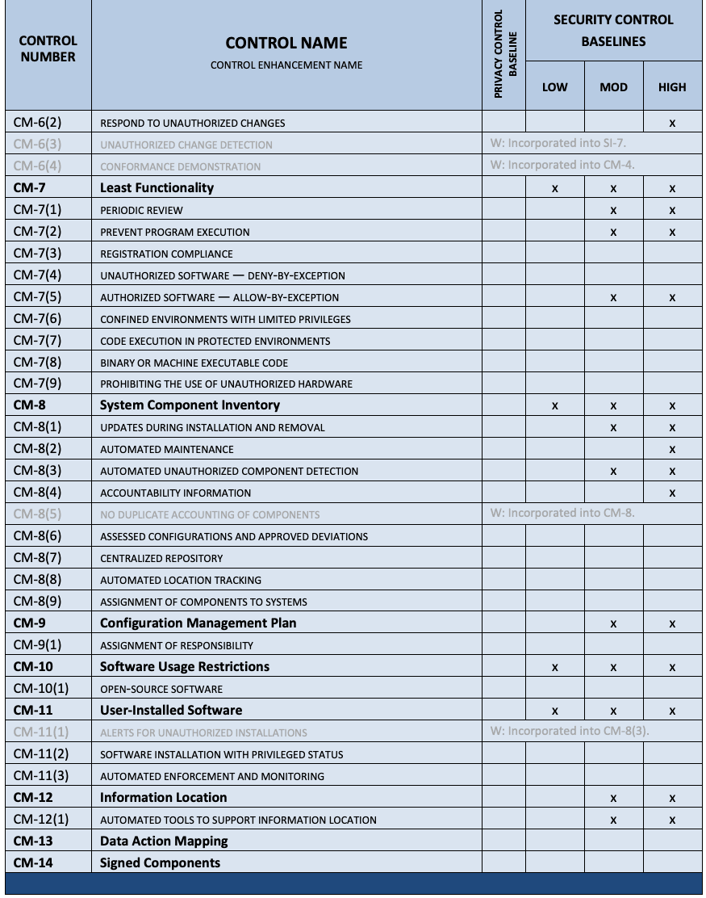
| 管理策番号 | 管理策名／管理策拡張名 | プライバシー管理策 | ベースライン | セキュリティ管理策 |
| ベースライン | ||||
| 低 | 中／高 | |||
| CM-6(2) | 無許可の変更への対応 | x | ||
| CM-6(3) | 無許可変更の検知 | W：SI-7に統合。 | ||
| CM-6(4) | 適合性の実証 | W：CM-4に統合。 | ||
| CM-7 | 最小機能 | x | x / x | |
| CM-7(1) | 定期的なレビュー | x / x | ||
| CM-7(2) | プログラム実行の防止 | x / x | ||
| CM-7(3) | 登録要件への適合 | |||
| CM-7(4) | 無許可ソフトウェア—例外的に拒否 | |||
| CM-7(5) | 認可済みソフトウェア—例外的に許可 | x / x | ||
| CM-7(6) | 特権を制限した隔離環境 | |||
| CM-7(7) | 保護された環境でのコード実行 | |||
| CM-7(8) | バイナリまたは機械実行可能コード | |||
| CM-7(9) | 無許可ハードウェアの使用禁止 | |||
| CM-8 | システムコンポーネント目録 | x | x / x | |
| CM-8(1) | インストールおよび削除時の更新 | x / x | ||
| CM-8(2) | 保守の自動化 | x | ||
| CM-8(3) | 無許可コンポーネントの自動検知 | x / x | ||
| CM-8(4) | 責任追跡情報 | x | ||
| CM-8(5) | コンポーネントの重複計上の禁止 | W：CM-8に統合。 | ||
| CM-8(6) | 評価済み構成および承認済み逸脱 | |||
| CM-8(7) | 一元化リポジトリ | |||
| CM-8(8) | 位置追跡の自動化 | |||
| CM-8(9) | システムへのコンポーネントの割り当て | |||
| CM-9 | 構成管理計画 | x / x | ||
| CM-9(1) | 責任の割り当て | |||
| CM-10 | ソフトウェア使用制限 | x | x / x | |
| CM-10(1) | オープンソースソフトウェア | |||
| CM-11 | ユーザーインストール型ソフトウェア | x | x / x | |
| CM-11(1) | 無許可インストールに関するアラート | W：CM-8(3)に統合。 | ||
| CM-11(2) | 特権状態でのソフトウェアインストール | |||
| CM-11(3) | 強制および監視の自動化 | |||
| CM-12 | 情報の所在 | x / x | ||
| CM-12(1) | 情報の所在を支援する自動化ツール | x / x | ||
| CM-13 | データアクション対応付け | |||
| CM-14 | 署名済みコンポーネント |
原本の表画像

原本の表画像

CHAPTER THREE
第3章
未レビュー訳3.6 CONTINGENCY PLANNING FAMILY
3.6 緊急時対応計画ファミリー
未レビュー訳Table 3-6 provides a summary of the controls and control enhancements assigned to the Contingency Planning Family. The controls are allocated to the low-impact, moderate-impact, and high-impact security control baselines and the privacy control baseline, as appropriate. A control or control enhancement that has been withdrawn from the control catalog is indicated by a “W” and an explanation of the control or control enhancement disposition in light gray text.
表3-6は、緊急時対応計画ファミリーに割り当てられた管理策と管理策拡張の概要を示す。管理策は、該当する場合、低影響、中影響、高影響のセキュリティ管理策ベースラインおよびプライバシー管理策ベースラインに割り当てられている。管理策カタログから撤回された管理策または管理策拡張は「W」で示し、その処置に関する説明を薄い灰色の文字で記載している。
未レビュー訳TABLE 3-6: CONTINGENCY PLANNING FAMILY
表3-6：緊急時対応計画ファミリー
未レビュー訳| CONTROL NUMBER | CONTROL NAME CONTROL ENHANCEMENT NAME | LORTNOC YCAVIRP | ENILESAB | SECURITY CONTROL |
| BASELINES | ||||
| LOW | MOD / HIGH | |||
| CP-1 | Policy and Procedures | x | x / x | |
| CP-2 | Contingency Plan | x | x / x | |
| CP-2(1) | COORDINATE WITH RELATED PLANS | x / x | ||
| CP-2(2) | CAPACITY PLANNING | x | ||
| CP-2(3) | RESUME MISSION AND BUSINESS FUNCTIONS | x / x | ||
| CP-2(4) | RESUME ALL MISSION AND BUSINESS FUNCTIONS | W: Incorporated into CP-2(3). | ||
| CP-2(5) | CONTINUE MISSION AND BUSINESS FUNCTIONS | x | ||
| CP-2(6) | ALTERNATE PROCESSING AND STORAGE SITES | |||
| CP-2(7) | COORDINATE WITH EXTERNAL SERVICE PROVIDERS | |||
| CP-2(8) | IDENTIFY CRITICAL ASSETS | x / x | ||
| CP-3 | Contingency Training | x | x / x | |
| CP-3(1) | SIMULATED EVENTS | x | ||
| CP-3(2) | MECHANISMS USED IN TRAINING ENVIRONMENTS | |||
| CP-4 | Contingency Plan Testing | x | x / x | |
| CP-4(1) | COORDINATE WITH RELATED PLANS | x / x | ||
| CP-4(2) | ALTERNATE PROCESSING SITE | x | ||
| CP-4(3) | AUTOMATED TESTING | |||
| CP-4(4) | FULL RECOVERY AND RECONSTITUTION | |||
| CP-4(5) | SELF-CHALLENGE | |||
| CP-5 | Contingency Plan Update | W: Incorporated into CP-2. | ||
| CP-6 | Alternate Storage Site | x / x | ||
| CP-6(1) | SEPARATION FROM PRIMARY SITE | x / x | ||
| CP-6(2) | RECOVERY TIME AND RECOVERY POINT OBJECTIVES | x | ||
| CP-6(3) | ACCESSIBILITY | x / x | ||
| CP-7 | Alternate Processing Site | x / x | ||
| CP-7(1) | SEPARATION FROM PRIMARY SITE | x / x | ||
| CP-7(2) | ACCESSIBILITY | x / x | ||
| CP-7(3) | PRIORITY OF SERVICE | x / x | ||
| CP-7(4) | PREPARATION FOR USE | x | ||
| CP-7(5) | EQUIVALENT INFORMATION SECURITY SAFEGUARDS | W: Incorporated into CP-7. | ||
| CP-7(6) | INABILITY TO RETURN TO PRIMARY SITE | |||
| CP-8 | Telecommunications Services | x / x | ||
| CP-8(1) | PRIORITY OF SERVICE PROVISIONS | x / x |
原本の表画像
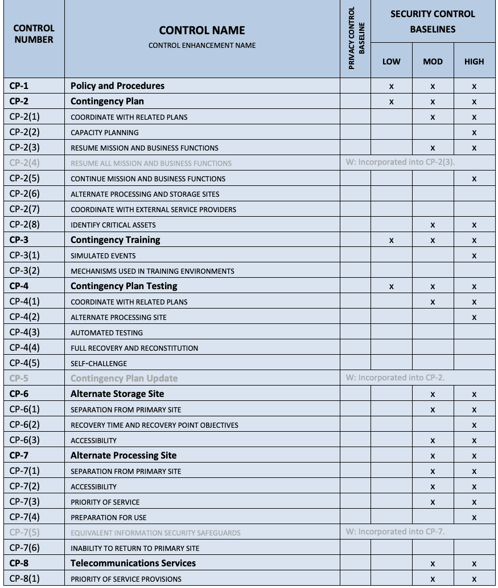
| 管理策番号 | 管理策名／管理策拡張名 | プライバシー管理策 | ベースライン | セキュリティ管理策 |
| ベースライン | ||||
| 低 | 中／高 | |||
| CP-1 | ポリシーおよび手順 | x | x / x | |
| CP-2 | 緊急時対応計画 | x | x / x | |
| CP-2(1) | 関連計画との調整 | x / x | ||
| CP-2(2) | 容量計画 | x | ||
| CP-2(3) | 任務および事業機能の再開 | x / x | ||
| CP-2(4) | すべての任務および事業機能の再開 | W：CP-2(3)に統合。 | ||
| CP-2(5) | 任務および事業機能の継続 | x | ||
| CP-2(6) | 代替処理サイトおよび保管サイト | |||
| CP-2(7) | 外部サービスプロバイダーとの調整 | |||
| CP-2(8) | 重要資産の特定 | x / x | ||
| CP-3 | 緊急時対応訓練 | x | x / x | |
| CP-3(1) | シミュレーションイベント | x | ||
| CP-3(2) | 訓練環境で使用するメカニズム | |||
| CP-4 | 緊急時対応計画のテスト | x | x / x | |
| CP-4(1) | 関連計画との調整 | x / x | ||
| CP-4(2) | 代替処理サイト | x | ||
| CP-4(3) | テストの自動化 | |||
| CP-4(4) | 完全な復旧および再構成 | |||
| CP-4(5) | 自己検証 | |||
| CP-5 | 緊急時対応計画の更新 | W：CP-2に統合。 | ||
| CP-6 | 代替保管サイト | x / x | ||
| CP-6(1) | プライマリサイトからの分離 | x / x | ||
| CP-6(2) | 目標復旧時間および目標復旧時点 | x | ||
| CP-6(3) | アクセス可能性 | x / x | ||
| CP-7 | 代替処理サイト | x / x | ||
| CP-7(1) | プライマリサイトからの分離 | x / x | ||
| CP-7(2) | アクセス可能性 | x / x | ||
| CP-7(3) | サービスの優先順位 | x / x | ||
| CP-7(4) | 使用準備 | x | ||
| CP-7(5) | 同等の情報セキュリティ保護手段 | W：CP-7に統合。 | ||
| CP-7(6) | プライマリサイトへの復帰不能 | |||
| CP-8 | 電気通信サービス | x / x | ||
| CP-8(1) | サービス優先規定 | x / x |
原本の表画像

原本の表画像

CHAPTER THREE
第3章
未レビュー訳| CONTROL NUMBER | CONTROL NAME CONTROL ENHANCEMENT NAME | LORTNOC YCAVIRP | ENILESAB | SECURITY CONTROL |
| BASELINES | ||||
| LOW | MOD / HIGH | |||
| CP-8(2) | SINGLE POINTS OF FAILURE | x / x | ||
| CP-8(3) | SEPARATION OF PRIMARY AND ALTERNATE PROVIDERS | x | ||
| CP-8(4) | PROVIDER CONTINGENCY PLAN | x | ||
| CP-8(5) | ALTERNATE TELECOMMUNICATION SERVICE TESTING | |||
| CP-9 | System Backup | x | x / x | |
| CP-9(1) | TESTING FOR RELIABILITY AND INTEGRITY | x / x | ||
| CP-9(2) | TEST RESTORATION USING SAMPLING | x | ||
| CP-9(3) | SEPARATE STORAGE FOR CRITICAL INFORMATION | x | ||
| CP-9(4) | PROTECTION FROM UNAUTHORIZED MODIFICATION | W: Incorporated into CP-9. | ||
| CP-9(5) | TRANSFER TO ALTERNATE STORAGE SITE | x | ||
| CP-9(6) | REDUNDANT SECONDARY SYSTEM | |||
| CP-9(7) | DUAL AUTHORIZATION FOR DELETION OR DESTRUCTION | |||
| CP-9(8) | CRYPTOGRAPHIC PROTECTION | x / x | ||
| CP-10 | System Recovery and Reconstitution | x | x / x | |
| CP-10(1) | CONTINGENCY PLAN TESTING | W: Incorporated into CP-4. | ||
| CP-10(2) | TRANSACTION RECOVERY | x / x | ||
| CP-10(3) | COMPENSATING SECURITY CONTROLS | W: Addressed through tailoring. | ||
| CP-10(4) | RESTORE WITHIN TIME PERIOD | x | ||
| CP-10(5) | FAILOVER CAPABILITY | W: Incorporated into SI-13. | ||
| CP-10(6) | COMPONENT PROTECTION | |||
| CP-11 | Alternate Communications Protocols | |||
| CP-12 | Safe Mode | |||
| CP-13 | Alternative Security Mechanisms |
原本の表画像
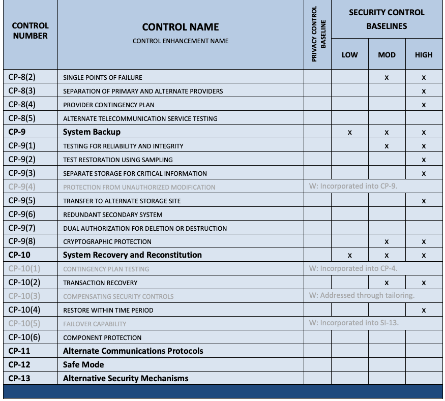
| 管理策番号 | 管理策名／管理策拡張名 | プライバシー管理策 | ベースライン | セキュリティ管理策 |
| ベースライン | ||||
| 低 | 中／高 | |||
| CP-8(2) | 単一障害点 | x / x | ||
| CP-8(3) | プライマリプロバイダーと代替プロバイダーの分離 | x | ||
| CP-8(4) | プロバイダー緊急時対応計画 | x | ||
| CP-8(5) | 代替電気通信サービスのテスト | |||
| CP-9 | システムバックアップ | x | x / x | |
| CP-9(1) | 信頼性および完全性のテスト | x / x | ||
| CP-9(2) | サンプリングによる復元テスト | x | ||
| CP-9(3) | 重要情報の分離保管 | x | ||
| CP-9(4) | 無許可変更からの保護 | W：CP-9に統合。 | ||
| CP-9(5) | 代替保管サイトへの転送 | x | ||
| CP-9(6) | 冗長な二次システム | |||
| CP-9(7) | 削除または破壊に対する二者承認 | |||
| CP-9(8) | 暗号学的保護 | x / x | ||
| CP-10 | システムの復旧および再構成 | x | x / x | |
| CP-10(1) | 緊急時対応計画のテスト | W：CP-4に統合。 | ||
| CP-10(2) | トランザクションの復旧 | x / x | ||
| CP-10(3) | 補完的セキュリティ管理策 | W：テーラリングによって対処。 | ||
| CP-10(4) | 所定期間内の復元 | x | ||
| CP-10(5) | フェイルオーバー機能 | W：SI-13に統合。 | ||
| CP-10(6) | コンポーネントの保護 | |||
| CP-11 | 代替通信プロトコル | |||
| CP-12 | セーフモード | |||
| CP-13 | 代替セキュリティメカニズム |
原本の表画像

原本の表画像

CHAPTER THREE
第3章
未レビュー訳3.7 IDENTIFICATION AND AUTHENTICATION FAMILY
3.7 識別および認証ファミリー
未レビュー訳Table 3-7 provides a summary of the controls and control enhancements assigned to the Identification and Authentication Family. The controls are allocated to the low-impact, moderate-impact, and high-impact security control baselines and the privacy control baseline, as appropriate. A control or control enhancement that has been withdrawn from the control catalog is indicated by a “W” and an explanation of the control or control enhancement disposition in light gray text.
表3-7は、識別および認証ファミリーに割り当てられた管理策と管理策拡張の概要を示す。管理策は、該当する場合、低影響、中影響、高影響のセキュリティ管理策ベースラインおよびプライバシー管理策ベースラインに割り当てられている。管理策カタログから撤回された管理策または管理策拡張は「W」で示し、その処置に関する説明を薄い灰色の文字で記載している。
未レビュー訳TABLE 3-7: IDENTIFICATION AND AUTHENTICATION FAMILY
表3-7：識別および認証ファミリー
未レビュー訳| CONTROL NUMBER | CONTROL NAME CONTROL ENHANCEMENT NAME | LORTNOC YCAVIRP | ENILESAB | SECURITY CONTROL |
| BASELINES | ||||
| LOW | MOD / HIGH | |||
| IA-1 | Policy and Procedures | x | x / x | |
| IA-2 | Identification and Authentication (Organizational Users) | x | x / x | |
| IA-2(1) | MULTI-FACTOR AUTHENTICATION TO PRIVILEGED ACCOUNTS | x | x / x | |
| IA-2(2) | MULTI-FACTOR AUTHENTICATION TO NON-PRIVILEGED ACCOUNTS | x | x / x | |
| IA-2(3) | LOCAL ACCESS TO PRIVILEGED ACCOUNTS | W: Incorporated into IA-2(1)(2). | ||
| IA-2(4) | LOCAL ACCESS TO NON-PRIVILEGED ACCOUNTS | W: Incorporated into IA-2(1)(2). | ||
| IA-2(5) | INDIVIDUAL AUTHENTICATION WITH GROUP AUTHENTICATION | x | ||
| IA-2(6) | ACCESS TO ACCOUNTS — SEPARATE DEVICE | |||
| IA-2(7) | NETWORK ACCESS TO NON-PRIVILEGED ACCOUNTS — SEPARATE DEVICE | W: Incorporated into IA-2(6). | ||
| IA-2(8) | ACCESS TO ACCOUNTS — REPLAY RESISTANT | x | x / x | |
| IA-2(9) | NETWORK ACCESS TO NON-PRIVILEGED ACCOUNTS — REPLAY RESISTANT | W: Incorporated into IA-2(8). | ||
| IA-2(10) | SINGLE SIGN-ON | |||
| IA-2(11) | REMOTE ACCESS — SEPARATE DEVICE | W: Incorporated into IA-2(6). | ||
| IA-2(12) | ACCEPTANCE OF PIV CREDENTIALS | x | x / x | |
| IA-2(13) | OUT-OF-BAND AUTHENTICATION | |||
| IA-3 | Device Identification and Authentication | x / x | ||
| IA-3(1) | CRYPTOGRAPHIC BIDIRECTIONAL AUTHENTICATION | |||
| IA-3(2) | CRYPTOGRAPHIC BIDIRECTIONAL NETWORK AUTHENTICATION | W: Incorporated into IA-3(1). | ||
| IA-3(3) | DYNAMIC ADDRESS ALLOCATION | |||
| IA-3(4) | DEVICE ATTESTATION | |||
| IA-4 | Identifier Management | x | x / x | |
| IA-4(1) | PROHIBIT ACCOUNT IDENTIFIERS AS PUBLIC IDENTIFIERS | |||
| IA-4(2) | SUPERVISOR AUTHORIZATION | W: Incorporated into IA-12(1). | ||
| IA-4(3) | MULTIPLE FORMS OF CERTIFICATION | W: Incorporated into IA-12(2). | ||
| IA-4(4) | IDENTIFY USER STATUS | x / x | ||
| IA-4(5) | DYNAMIC MANAGEMENT | |||
| IA-4(6) | CROSS-ORGANIZATION MANAGEMENT | |||
| IA-4(7) | IN-PERSON REGISTRATION | W: Incorporated into IA-12(4). | ||
| IA-4(8) | PAIRWISE PSEUDONYMOUS IDENTIFIERS | |||
| IA-4(9) | ATTRIBUTE MAINTENANCE AND PROTECTION | |||
| IA-5 | Authenticator Management | x | x / x | |
| IA-5(1) | PASSWORD-BASED AUTHENTICATION | x | x / x |
原本の表画像
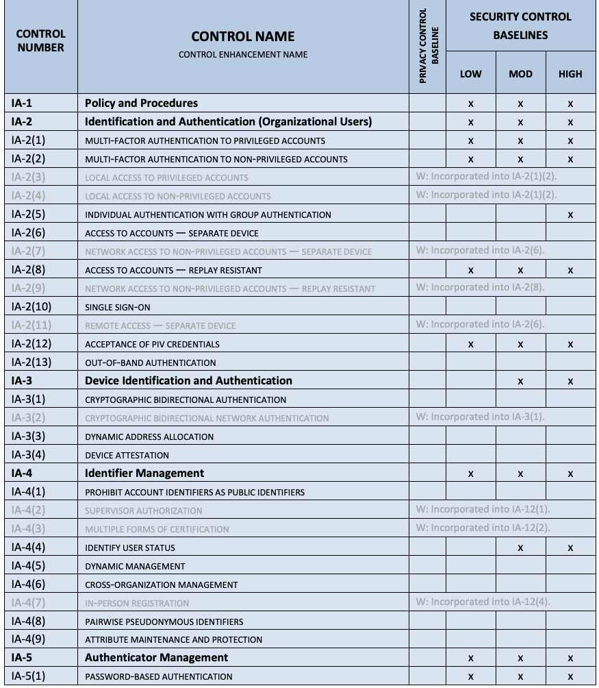
| 管理策番号 | 管理策名／管理策拡張名 | プライバシー管理策 | ベースライン | セキュリティ管理策 |
| ベースライン | ||||
| 低 | 中／高 | |||
| IA-1 | ポリシーおよび手順 | x | x / x | |
| IA-2 | 識別および認証（組織ユーザー） | x | x / x | |
| IA-2(1) | 特権アカウントへの多要素認証 | x | x / x | |
| IA-2(2) | 非特権アカウントへの多要素認証 | x | x / x | |
| IA-2(3) | 特権アカウントへのローカルアクセス | W: IA-2(1)(2)に統合。 | ||
| IA-2(4) | 非特権アカウントへのローカルアクセス | W: IA-2(1)(2)に統合。 | ||
| IA-2(5) | グループ認証を伴う個人認証 | x | ||
| IA-2(6) | アカウントへのアクセス—別個のデバイス | |||
| IA-2(7) | 非特権アカウントへのネットワークアクセス—別個のデバイス | W: IA-2(6)に統合。 | ||
| IA-2(8) | アカウントへのアクセス—リプレイ耐性 | x | x / x | |
| IA-2(9) | 非特権アカウントへのネットワークアクセス—リプレイ耐性 | W: IA-2(8)に統合。 | ||
| IA-2(10) | シングルサインオン | |||
| IA-2(11) | リモートアクセス—別個のデバイス | W: IA-2(6)に統合。 | ||
| IA-2(12) | PIVクレデンシャルの受け入れ | x | x / x | |
| IA-2(13) | 帯域外認証 | |||
| IA-3 | デバイスの識別および認証 | x / x | ||
| IA-3(1) | 暗号学的な双方向認証 | |||
| IA-3(2) | 暗号学的な双方向ネットワーク認証 | W: IA-3(1)に統合。 | ||
| IA-3(3) | 動的アドレス割り当て | |||
| IA-3(4) | デバイスアテステーション | |||
| IA-4 | 識別子管理 | x | x / x | |
| IA-4(1) | アカウント識別子を公開識別子として使用することの禁止 | |||
| IA-4(2) | 上司の承認 | W: IA-12(1)に統合。 | ||
| IA-4(3) | 複数形式の証明 | W: IA-12(2)に統合。 | ||
| IA-4(4) | ユーザー状態の識別 | x / x | ||
| IA-4(5) | 動的管理 | |||
| IA-4(6) | 組織間管理 | |||
| IA-4(7) | 対面登録 | W: IA-12(4)に統合。 | ||
| IA-4(8) | ペアワイズ仮名識別子 | |||
| IA-4(9) | 属性の維持および保護 | |||
| IA-5 | 認証子管理 | x | x / x | |
| IA-5(1) | パスワードベース認証 | x | x / x |
原本の表画像

原本の表画像

CHAPTER THREE
第3章
未レビュー訳原本の表画像
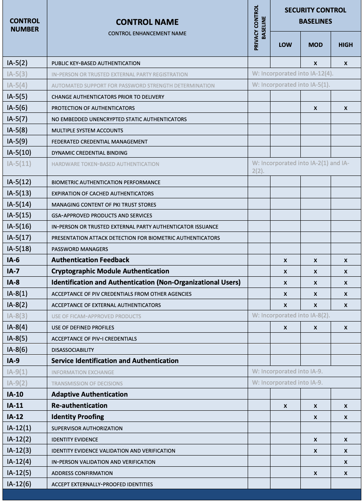
原本の表画像

原本の表画像

CHAPTER THREE
第3章
未レビュー訳3.8 INCIDENT RESPONSE FAMILY
3.8 インシデント対応ファミリー
未レビュー訳Table 3-8 provides a summary of the controls and control enhancements assigned to the Incident Response Family. The controls are allocated to the low-impact, moderate-impact, and high-impact security control baselines and the privacy control baseline, as appropriate. A control or control enhancement that has been withdrawn from the control catalog is indicated by a “W” and an explanation of the control or control enhancement disposition in light gray text.
表3-8は、インシデント対応ファミリーに割り当てられた管理策および管理策拡張の概要を示します。管理策は、該当する場合、低影響度、中影響度、高影響度のセキュリティ管理策ベースラインおよびプライバシー管理策ベースラインに割り当てられています。管理策カタログから撤回された管理策または管理策拡張には「W」が示され、当該管理策または管理策拡張の処置に関する説明が薄い灰色の文字で示されています。
未レビュー訳TABLE 3-8: INCIDENT RESPONSE FAMILY
表3-8：インシデント対応ファミリー
未レビュー訳| CONTROL NUMBER | CONTROL NAME CONTROL ENHANCEMENT NAME | LORTNOC YCAVIRP | ENILESAB | SECURITY CONTROL |
| BASELINES | ||||
| LOW | MOD / HIGH | |||
| IR-1 | Policy and Procedures | x | x | x / x |
| IR-2 | Incident Response Training | x | x | x / x |
| IR-2(1) | SIMULATED EVENTS | x | ||
| IR-2(2) | AUTOMATED TRAINING ENVIRONMENTS | x | ||
| IR-2(3) | BREACH | x | ||
| IR-3 | Incident Response Testing | x | x / x | |
| IR-3(1) | AUTOMATED TESTING | |||
| IR-3(2) | COORDINATION WITH RELATED PLANS | x / x | ||
| IR-3(3) | CONTINUOUS IMPROVEMENT | |||
| IR-4 | Incident Handling | x | x | x / x |
| IR-4(1) | AUTOMATED INCIDENT HANDLING PROCESSES | x / x | ||
| IR-4(2) | DYNAMIC RECONFIGURATION | |||
| IR-4(3) | CONTINUITY OF OPERATIONS | |||
| IR-4(4) | INFORMATION CORRELATION | x | ||
| IR-4(5) | AUTOMATIC DISABLING OF SYSTEM | |||
| IR-4(6) | INSIDER THREATS | |||
| IR-4(7) | INSIDER THREATS — INTRA-ORGANIZATION COORDINATION | |||
| IR-4(8) | CORRELATION WITH EXTERNAL ORGANIZATIONS | |||
| IR-4(9) | DYNAMIC RESPONSE CAPABILITY | |||
| IR-4(10) | SUPPLY CHAIN COORDINATION | |||
| IR-4(11) | INTEGRATED INCIDENT RESPONSE TEAM | x | ||
| IR-4(12) | MALICIOUS CODE AND FORENSIC ANALYSIS | |||
| IR-4(13) | BEHAVIOR ANALYSIS | |||
| IR-4(14) | SECURITY OPERATIONS CENTER | |||
| IR-4(15) | PUBLIC RELATIONS AND REPUTATION REPAIR | |||
| IR-5 | Incident Monitoring | x | x | x / x |
| IR-5(1) | AUTOMATED TRACKING, DATA COLLECTION, AND ANALYSIS | x | ||
| IR-6 | Incident Reporting | x | x | x / x |
| IR-6(1) | AUTOMATED REPORTING | x / x | ||
| IR-6(2) | VULNERABILITIES RELATED TO INCIDENTS | |||
| IR-6(3) | SUPPLY CHAIN COORDINATION | x / x | ||
| IR-7 | Incident Response Assistance | x | x | x / x |
| IR-7(1) | AUTOMATION SUPPORT FOR AVAILABILITY OF INFORMATION AND SUPPORT | x / x |
原本の表画像
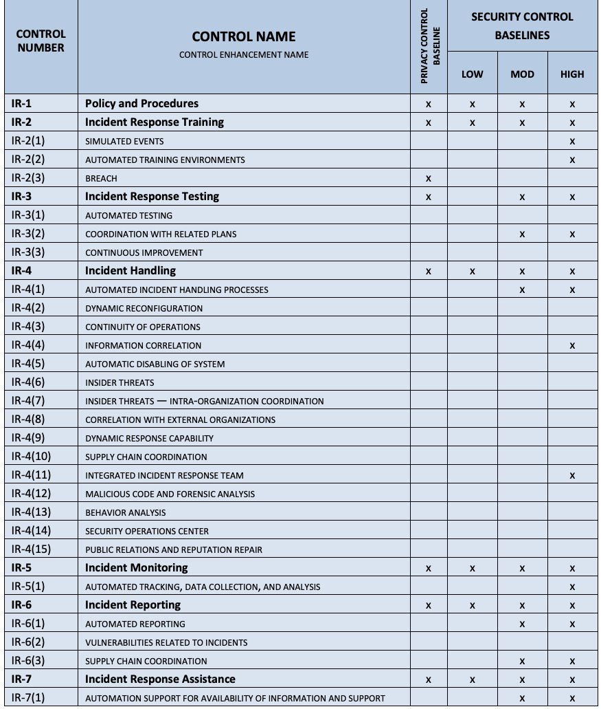
| 管理策番号 | 管理策名／管理策拡張名 | プライバシー管理策 | ベースライン | セキュリティ管理策 |
| ベースライン | ||||
| 低 | 中／高 | |||
| IR-1 | ポリシーおよび手順 | x | x | x / x |
| IR-2 | インシデント対応訓練 | x | x | x / x |
| IR-2(1) | シミュレーションイベント | x | ||
| IR-2(2) | 訓練環境の自動化 | x | ||
| IR-2(3) | 侵害 | x | ||
| IR-3 | インシデント対応テスト | x | x / x | |
| IR-3(1) | テストの自動化 | |||
| IR-3(2) | 関連計画との調整 | x / x | ||
| IR-3(3) | 継続的改善 | |||
| IR-4 | インシデント対応 | x | x | x / x |
| IR-4(1) | インシデント対応プロセスの自動化 | x / x | ||
| IR-4(2) | 動的再構成 | |||
| IR-4(3) | 運用の継続 | |||
| IR-4(4) | 情報の相関付け | x | ||
| IR-4(5) | システムの自動無効化 | |||
| IR-4(6) | 内部脅威 | |||
| IR-4(7) | 内部脅威—組織内調整 | |||
| IR-4(8) | 外部組織との相関付け | |||
| IR-4(9) | 動的対応機能 | |||
| IR-4(10) | サプライチェーン調整 | |||
| IR-4(11) | 統合インシデント対応チーム | x | ||
| IR-4(12) | 悪意あるコードおよびフォレンジック分析 | |||
| IR-4(13) | 挙動分析 | |||
| IR-4(14) | セキュリティオペレーションセンター | |||
| IR-4(15) | 広報および評判の回復 | |||
| IR-5 | インシデント監視 | x | x | x / x |
| IR-5(1) | 追跡、データ収集、および分析の自動化 | x | ||
| IR-6 | インシデント報告 | x | x | x / x |
| IR-6(1) | 報告の自動化 | x / x | ||
| IR-6(2) | インシデントに関連する脆弱性 | |||
| IR-6(3) | サプライチェーン調整 | x / x | ||
| IR-7 | インシデント対応支援 | x | x | x / x |
| IR-7(1) | 情報および支援の可用性に関する自動化支援 | x / x |
原本の表画像

原本の表画像

CHAPTER THREE
第3章
未レビュー訳| CONTROL NUMBER | CONTROL NAME CONTROL ENHANCEMENT NAME | LORTNOC YCAVIRP | ENILESAB | SECURITY CONTROL |
| BASELINES | ||||
| LOW | MOD / HIGH | |||
| IR-7(2) | COORDINATION WITH EXTERNAL PROVIDERS | |||
| IR-8 | Incident Response Plan | x | x | x / x |
| IR-8(1) | BREACHES | x | ||
| IR-9 | Information Spillage Response | |||
| IR-9(1) | RESPONSIBLE PERSONNEL | W: Incorporated into IR-9. | ||
| IR-9(2) | TRAINING | |||
| IR-9(3) | POST-SPILL OPERATIONS | |||
| IR-9(4) | EXPOSURE TO UNAUTHORIZED PERSONNEL | |||
| IR-10 | Integrated Information Security Analysis Team | W: Moved to IR-4(11). |
原本の表画像
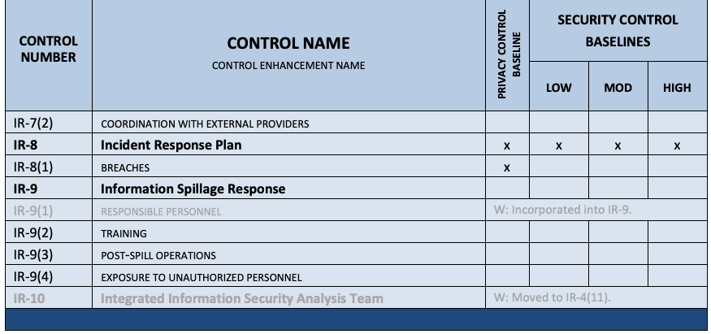
| 管理策番号 | 管理策名／管理策拡張名 | プライバシー管理策 | ベースライン | セキュリティ管理策 |
| ベースライン | ||||
| 低 | 中／高 | |||
| IR-7(2) | 外部プロバイダーとの調整 | |||
| IR-8 | インシデント対応計画 | x | x | x / x |
| IR-8(1) | 侵害 | x | ||
| IR-9 | 情報流出への対応 | |||
| IR-9(1) | 責任者 | W: IR-9に統合。 | ||
| IR-9(2) | 訓練 | |||
| IR-9(3) | 流出後の運用 | |||
| IR-9(4) | 無許可の要員への露出 | |||
| IR-10 | 統合情報セキュリティ分析チーム | W: IR-4(11)へ移動。 |
原本の表画像

原本の表画像

CHAPTER THREE
CHAPTER THREE
未レビュー訳3.9 MAINTENANCE FAMILY
管理策番号
未レビュー訳Table 3-9 provides a summary of the controls and control enhancements assigned to the Maintenance Family. The controls are allocated to the low-impact, moderate-impact, and high-impact security control baselines and the privacy control baseline, as appropriate. A control or control enhancement that has been withdrawn from the control catalog is indicated by a “W” and an explanation of the control or control enhancement disposition in light gray text.
管理策名／管理策拡張名
未レビュー訳TABLE 3-9: MAINTENANCE FAMILY
第3章
未レビュー訳| CONTROL NUMBER | CONTROL NAME CONTROL ENHANCEMENT NAME | LORTNOC YCAVIRP | ENILESAB | SECURITY CONTROL |
| BASELINES | ||||
| LOW | MOD / HIGH | |||
| MA-1 | Policy and Procedures | x | x / x | |
| MA-2 | Controlled Maintenance | x | x / x | |
| MA-2(1) | RECORD CONTENT | W: Incorporated into MA-2. | ||
| MA-2(2) | AUTOMATED MAINTENANCE ACTIVITIES | x | ||
| MA-3 | Maintenance Tools | x / x | ||
| MA-3(1) | INSPECT TOOLS | x / x | ||
| MA-3(2) | INSPECT MEDIA | x / x | ||
| MA-3(3) | PREVENT UNAUTHORIZED REMOVAL | x / x | ||
| MA-3(4) | RESTRICTED TOOL USE | |||
| MA-3(5) | EXECUTION WITH PRIVILEGE | |||
| MA-3(6) | SOFTWARE UPDATES AND PATCHES | |||
| MA-4 | Nonlocal Maintenance | x | x / x | |
| MA-4(1) | LOGGING AND REVIEW | |||
| MA-4(2) | DOCUMENT NONLOCAL MAINTENANCE | W: Incorporated into MA-1 and MA-4. | ||
| MA-4(3) | COMPARABLE SECURITY AND SANITIZATION | x | ||
| MA-4(4) | AUTHENTICATION AND SEPARATION OF MAINTENANCE SESSIONS | |||
| MA-4(5) | APPROVALS AND NOTIFICATIONS | |||
| MA-4(6) | CRYPTOGRAPHIC PROTECTION | |||
| MA-4(7) | DISCONNECT VERIFICATION | |||
| MA-5 | Maintenance Personnel | x | x / x | |
| MA-5(1) | INDIVIDUALS WITHOUT APPROPRIATE ACCESS | x | ||
| MA-5(2) | SECURITY CLEARANCES FOR CLASSIFIED SYSTEMS | |||
| MA-5(3) | CITIZENSHIP REQUIREMENTS FOR CLASSIFIED SYSTEMS | |||
| MA-5(4) | FOREIGN NATIONALS | |||
| MA-5(5) | NON-SYSTEM MAINTENANCE | |||
| MA-6 | Timely Maintenance | x / x | ||
| MA-6(1) | PREVENTIVE MAINTENANCE | |||
| MA-6(2) | PREDICTIVE MAINTENANCE | |||
| MA-6(3) | AUTOMATED SUPPORT FOR PREDICTIVE MAINTENANCE | |||
| MA-7 | Field Maintenance |
原本の表画像
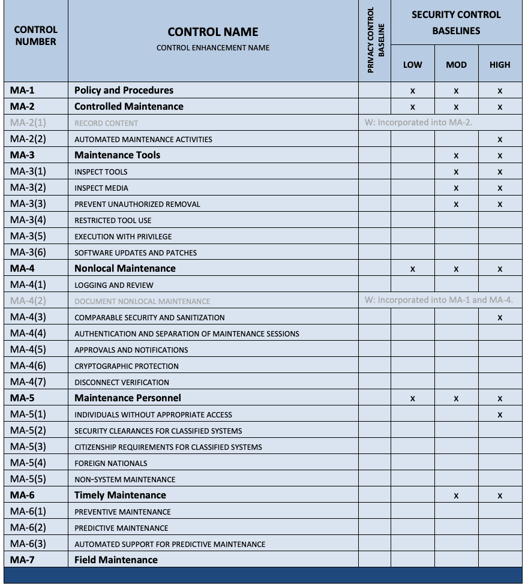
| 管理策番号 | 管理策名／管理策拡張名 | プライバシー管理策 | ベースライン | セキュリティ管理策 |
| ベースライン | ||||
| 低 | 中／高 | |||
| MA-1 | ポリシーおよび手順 | x | x / x | |
| MA-2 | 管理された保守 | x | x / x | |
| MA-2(1) | 記録内容 | W: MA-2に統合。 | ||
| MA-2(2) | 保守活動の自動化 | x | ||
| MA-3 | 保守ツール | x / x | ||
| MA-3(1) | ツールの検査 | x / x | ||
| MA-3(2) | メディアの検査 | x / x | ||
| MA-3(3) | 無許可の持ち出しの防止 | x / x | ||
| MA-3(4) | ツール使用の制限 | |||
| MA-3(5) | 特権を伴う実行 | |||
| MA-3(6) | ソフトウェア更新およびパッチ | |||
| MA-4 | 非ローカル保守 | x | x / x | |
| MA-4(1) | 記録およびレビュー | |||
| MA-4(2) | 非ローカル保守の文書化 | W: MA-1、MA-4に統合。 | ||
| MA-4(3) | 同等のセキュリティおよびサニタイズ | x | ||
| MA-4(4) | 保守セッションの認証および分離 | |||
| MA-4(5) | 承認および通知 | |||
| MA-4(6) | 暗号学的保護 | |||
| MA-4(7) | 切断の確認 | |||
| MA-5 | 保守要員 | x | x / x | |
| MA-5(1) | 適切なアクセス権を持たない個人 | x | ||
| MA-5(2) | 機密システムのセキュリティクリアランス | |||
| MA-5(3) | 機密システムに関する市民権要件 | |||
| MA-5(4) | 外国籍者 | |||
| MA-5(5) | システム外保守 | |||
| MA-6 | 適時保守 | x / x | ||
| MA-6(1) | 予防保守 | |||
| MA-6(2) | 予知保全 | |||
| MA-6(3) | 予知保全の自動化支援 | |||
| MA-7 | 現地保守 |
原本の表画像

原本の表画像

CHAPTER THREE
CHAPTER THREE
未レビュー訳3.10 MEDIA PROTECTION FAMILY
3.10 メディア保護ファミリー
未レビュー訳Table 3-10 provides a summary of the controls and control enhancements assigned to the Media Protection Family. The controls are allocated to the low-impact, moderate-impact, and high-impact security control baselines and the privacy control baseline, as appropriate. A control or control enhancement that has been withdrawn from the control catalog is indicated by a “W” and an explanation of the control or control enhancement disposition in light gray text.
表3-10は、メディア保護ファミリーに割り当てられた管理策および管理策拡張の概要を示します。管理策は、該当する場合、低影響度、中影響度、高影響度のセキュリティ管理策ベースラインおよびプライバシー管理策ベースラインに割り当てられています。管理策カタログから撤回された管理策または管理策拡張には「W」が示され、当該管理策または管理策拡張の処置に関する説明が薄い灰色の文字で示されています。
未レビュー訳TABLE 3-10: MEDIA PROTECTION FAMILY
表3-10：メディア保護ファミリー
未レビュー訳| CONTROL NUMBER | CONTROL NAME CONTROL ENHANCEMENT NAME | LORTNOC YCAVIRP | ENILESAB | SECURITY CONTROL |
| BASELINES | ||||
| LOW | MOD / HIGH | |||
| MP-1 | Policy and Procedures | x | x | x / x |
| MP-2 | Media Access | x | x / x | |
| MP-2(1) | AUTOMATED RESTRICTED ACCESS | W: Incorporated into MP-4(2). | ||
| MP-2(2) | CRYPTOGRAPHIC PROTECTION | W: Incorporated into SC-28(1). | ||
| MP-3 | Media Marking | x / x | ||
| MP-4 | Media Storage | x / x | ||
| MP-4(1) | CRYPTOGRAPHIC PROTECTION | W: Incorporated into SC-28(1). | ||
| MP-4(2) | AUTOMATED RESTRICTED ACCESS | |||
| MP-5 | Media Transport | x / x | ||
| MP-5(1) | PROTECTION OUTSIDE OF CONTROLLED AREAS | W: Incorporated into MP-5. | ||
| MP-5(2) | DOCUMENTATION OF ACTIVITIES | W: Incorporated into MP-5. | ||
| MP-5(3) | CUSTODIANS | |||
| MP-5(4) | CRYPTOGRAPHIC PROTECTION | W: Incorporated into SC-28(1). | ||
| MP-6 | Media Sanitization | x | x | x / x |
| MP-6(1) | REVIEW, APPROVE, TRACK, DOCUMENT, AND VERIFY | x | ||
| MP-6(2) | EQUIPMENT TESTING | x | ||
| MP-6(3) | NONDESTRUCTIVE TECHNIQUES | x | ||
| MP-6(4) | CONTROLLED UNCLASSIFIED INFORMATION | W: Incorporated into MP-6. | ||
| MP-6(5) | CLASSIFIED INFORMATION | W: Incorporated into MP-6. | ||
| MP-6(6) | MEDIA DESTRUCTION | W: Incorporated into MP-6. | ||
| MP-6(7) | DUAL AUTHORIZATION | |||
| MP-6(8) | REMOTE PURGING OR WIPING OF INFORMATION | |||
| MP-7 | Media Use | x | x / x | |
| MP-7(1) | PROHIBIT USE WITHOUT OWNER | W: Incorporated into MP-7. | ||
| MP-7(2) | PROHIBIT USE OF SANITIZATION-RESISTANT MEDIA | |||
| MP-8 | Media Downgrading | |||
| MP-8(1) | DOCUMENTATION OF PROCESS | |||
| MP-8(2) | EQUIPMENT TESTING | |||
| MP-8(3) | CONTROLLED UNCLASSIFIED INFORMATION | |||
| MP-8(4) | CLASSIFIED INFORMATION |
原本の表画像
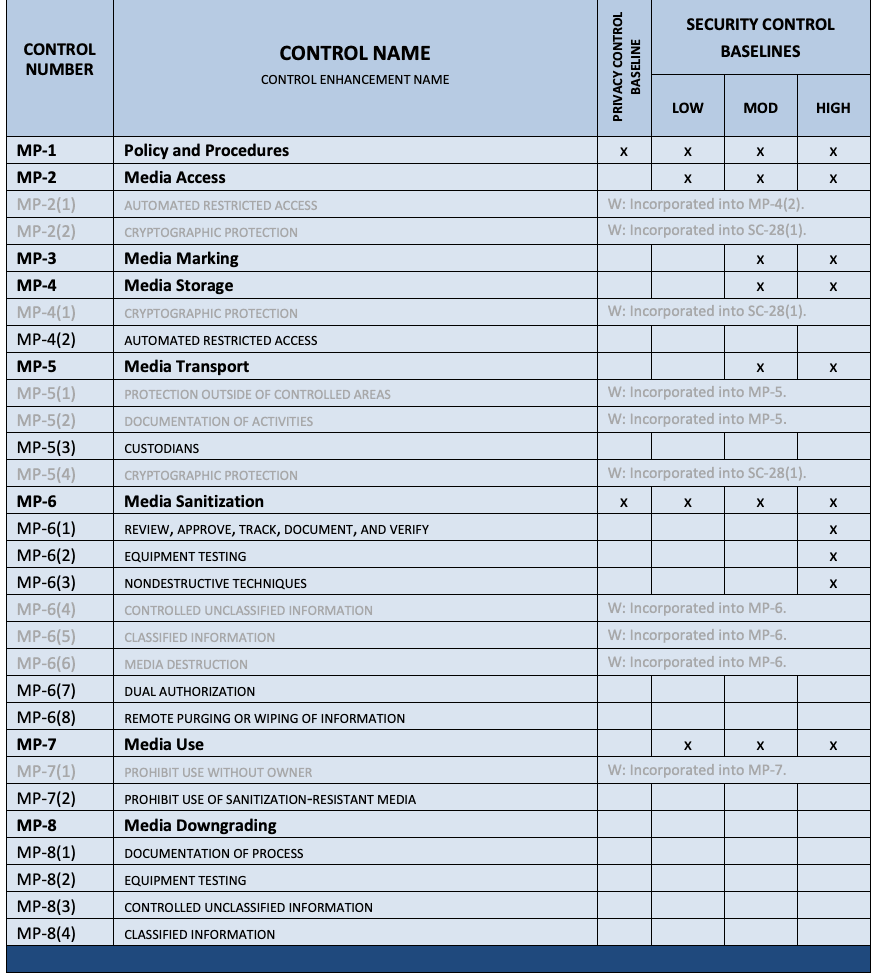
| 管理策番号 | 管理策名／管理策拡張名 | プライバシー管理策 | ベースライン | セキュリティ管理策 |
| ベースライン | ||||
| 低 | 中／高 | |||
| MP-1 | ポリシーおよび手順 | x | x | x / x |
| MP-2 | メディアアクセス | x | x / x | |
| MP-2(1) | アクセス制限の自動化 | W: MP-4(2)に統合。 | ||
| MP-2(2) | 暗号学的保護 | W: SC-28(1)に統合。 | ||
| MP-3 | メディアのマーキング | x / x | ||
| MP-4 | メディア保管 | x / x | ||
| MP-4(1) | 暗号学的保護 | W: SC-28(1)に統合。 | ||
| MP-4(2) | アクセス制限の自動化 | |||
| MP-5 | メディア搬送 | x / x | ||
| MP-5(1) | 管理区域外での保護 | W: MP-5に統合。 | ||
| MP-5(2) | 活動の文書化 | W: MP-5に統合。 | ||
| MP-5(3) | 保管担当者 | |||
| MP-5(4) | 暗号学的保護 | W: SC-28(1)に統合。 | ||
| MP-6 | メディアサニタイズ | x | x | x / x |
| MP-6(1) | レビュー、承認、追跡、文書化、および検証 | x | ||
| MP-6(2) | 機器のテスト | x | ||
| MP-6(3) | 非破壊技法 | x | ||
| MP-6(4) | 管理対象非機密情報 | W: MP-6に統合。 | ||
| MP-6(5) | 機密情報 | W: MP-6に統合。 | ||
| MP-6(6) | メディアの破壊 | W: MP-6に統合。 | ||
| MP-6(7) | 二者承認 | |||
| MP-6(8) | 情報のリモート消去または抹消 | |||
| MP-7 | メディアの使用 | x | x / x | |
| MP-7(1) | 所有者不在時の使用禁止 | W: MP-7に統合。 | ||
| MP-7(2) | サニタイズ耐性メディアの使用禁止 | |||
| MP-8 | メディアの格下げ | |||
| MP-8(1) | プロセスの文書化 | |||
| MP-8(2) | 機器のテスト | |||
| MP-8(3) | 管理対象非機密情報 | |||
| MP-8(4) | 機密情報 |
原本の表画像

原本の表画像

CHAPTER THREE
第3章
未レビュー訳3.11 PHYSICAL AND ENVIRONMENTAL PROTECTION FAMILY
3.11 物理的および環境的保護ファミリー
未レビュー訳Table 3-11 provides a summary of the controls and control enhancements assigned to the Physical and Environmental Protection Family. The controls are allocated to the low-impact, moderate-impact, and high-impact security control baselines and the privacy control baseline, as appropriate. A control or control enhancement that has been withdrawn from the control catalog is indicated by a “W” and an explanation of the control or control enhancement disposition in light gray text.
表3-11は、物理的および環境的保護ファミリーに割り当てられた管理策および管理策拡張の概要を示します。管理策は、該当する場合、低影響度、中影響度、高影響度のセキュリティ管理策ベースラインおよびプライバシー管理策ベースラインに割り当てられています。管理策カタログから撤回された管理策または管理策拡張には「W」が示され、当該管理策または管理策拡張の処置に関する説明が薄い灰色の文字で示されています。
未レビュー訳TABLE 3-11: PHYSICAL AND ENVIRONMENTAL PROTECTION FAMILY
表3-11：物理的および環境的保護ファミリー
未レビュー訳| CONTROL NUMBER | CONTROL NAME CONTROL ENHANCEMENT NAME | LORTNOC YCAVIRP | ENILESAB | SECURITY CONTROL |
| BASELINES | ||||
| LOW | MOD / HIGH | |||
| PE-1 | Policy and Procedures | x | x / x | |
| PE-2 | Physical Access Authorizations | x | x / x | |
| PE-2(1) | ACCESS BY POSITION AND ROLE | |||
| PE-2(2) | TWO FORMS OF IDENTIFICATION | |||
| PE-2(3) | RESTRICT UNESCORTED ACCESS | |||
| PE-3 | Physical Access Control | x | x / x | |
| PE-3(1) | SYSTEM ACCESS | x | ||
| PE-3(2) | FACILITY AND SYSTEMS | |||
| PE-3(3) | CONTINUOUS GUARDS | |||
| PE-3(4) | LOCKABLE CASINGS | |||
| PE-3(5) | TAMPER PROTECTION | |||
| PE-3(6) | FACILITY PENETRATION TESTING | W: Incorporated into CA-8. | ||
| PE-3(7) | PHYSICAL BARRIERS | |||
| PE-3(8) | ACCESS CONTROL VESTIBULES | |||
| PE-4 | Access Control for Transmission | x / x | ||
| PE-5 | Access Control for Output Devices | x / x | ||
| PE-5(1) | ACCESS TO OUTPUT BY AUTHORIZED INDIVIDUALS | W: Incorporated into PE-5. | ||
| PE-5(2) | LINK TO INDIVIDUAL IDENTITY | |||
| PE-5(3) | MARKING OUTPUT DEVICES | W: Incorporated into PE-22. | ||
| PE-6 | Monitoring Physical Access | x | x / x | |
| PE-6(1) | INTRUSION ALARMS AND SURVEILLANCE EQUIPMENT | x / x | ||
| PE-6(2) | AUTOMATED INTRUSION RECOGNITION AND RESPONSES | |||
| PE-6(3) | VIDEO SURVEILLANCE | |||
| PE-6(4) | MONITORING PHYSICAL ACCESS TO SYSTEMS | x | ||
| PE-7 | Visitor Control | W: Incorporated into PE-2 and PE-3. | ||
| PE-8 | Visitor Access Records | x | x / x | |
| PE-8(1) | AUTOMATED RECORDS MAINTENANCE AND REVIEW | x | ||
| PE-8(2) | PHYSICAL ACCESS RECORDS | W: Incorporated into PE-2. | ||
| PE-8(3) | LIMIT PERSONALLY IDENTIFIABLE INFORMATION ELEMENTS | x | ||
| PE-9 | Power Equipment and Cabling | x / x | ||
| PE-9(1) | REDUNDANT CABLING | |||
| PE-9(2) | AUTOMATIC VOLTAGE CONTROLS |
原本の表画像
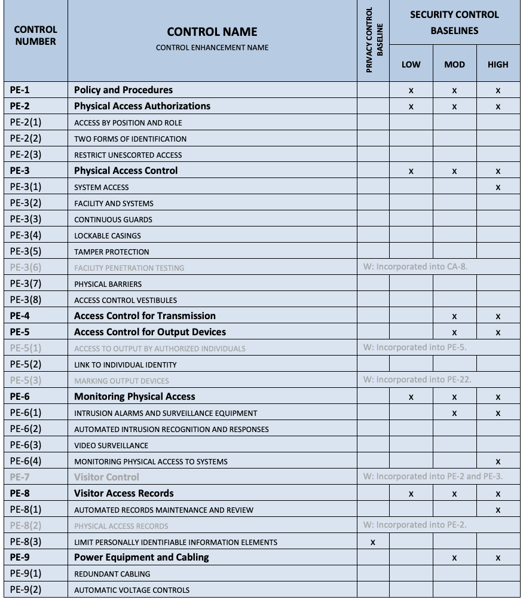
| 管理策番号 | 管理策名／管理策拡張名 | プライバシー管理策 | ベースライン | セキュリティ管理策 |
| ベースライン | ||||
| 低 | 中／高 | |||
| PE-1 | ポリシーおよび手順 | x | x / x | |
| PE-2 | 物理アクセスの認可 | x | x / x | |
| PE-2(1) | 職位および役割に基づくアクセス | |||
| PE-2(2) | 2種類の身分証明 | |||
| PE-2(3) | 付き添いのないアクセスの制限 | |||
| PE-3 | 物理アクセス制御 | x | x / x | |
| PE-3(1) | システムアクセス | x | ||
| PE-3(2) | 施設およびシステム | |||
| PE-3(3) | 常時警備員配置 | |||
| PE-3(4) | 施錠可能な筐体 | |||
| PE-3(5) | 改ざん防止 | |||
| PE-3(6) | 施設への侵入テスト | W: CA-8に統合。 | ||
| PE-3(7) | 物理的障壁 | |||
| PE-3(8) | アクセス制御用前室 | |||
| PE-4 | 伝送のアクセス制御 | x / x | ||
| PE-5 | 出力装置のアクセス制御 | x / x | ||
| PE-5(1) | 認可された個人による出力へのアクセス | W: PE-5に統合。 | ||
| PE-5(2) | 個人の識別情報との関連付け | |||
| PE-5(3) | 出力装置のマーキング | W: PE-22に統合。 | ||
| PE-6 | 物理アクセスの監視 | x | x / x | |
| PE-6(1) | 侵入警報および監視機器 | x / x | ||
| PE-6(2) | 侵入の自動認識および対応 | |||
| PE-6(3) | ビデオ監視 | |||
| PE-6(4) | システムへの物理アクセスの監視 | x | ||
| PE-7 | 訪問者管理 | W: PE-2、PE-3に統合。 | ||
| PE-8 | 訪問者アクセス記録 | x | x / x | |
| PE-8(1) | 記録の維持およびレビューの自動化 | x | ||
| PE-8(2) | 物理アクセス記録 | W: PE-2に統合。 | ||
| PE-8(3) | 個人識別情報要素の制限 | x | ||
| PE-9 | 電源設備およびケーブル配線 | x / x | ||
| PE-9(1) | 冗長ケーブル配線 | |||
| PE-9(2) | 自動電圧制御 |
原本の表画像

原本の表画像

CHAPTER THREE
第3章
未レビュー訳| CONTROL NUMBER | CONTROL NAME CONTROL ENHANCEMENT NAME | LORTNOC YCAVIRP | ENILESAB | SECURITY CONTROL |
| BASELINES | ||||
| LOW | MOD / HIGH | |||
| PE-10 | Emergency Shutoff | x / x | ||
| PE-10(1) | ACCIDENTAL AND UNAUTHORIZED ACTIVATION | W: Incorporated into PE-10. | ||
| PE-11 | Emergency Power | x / x | ||
| PE-11(1) | ALTERNATE POWER SUPPLY — MINIMAL OPERATIONAL CAPABILITY | x | ||
| PE-11(2) | ALTERNATE POWER SUPPLY — SELF-CONTAINED | |||
| PE-12 | Emergency Lighting | x | x / x | |
| PE-12(1) | ESSENTIAL MISSIONS AND BUSINESS FUNCTIONS | |||
| PE-13 | Fire Protection | x | x / x | |
| PE-13(1) | DETECTION SYSTEMS — AUTOMATIC ACTIVATION AND NOTIFICATION | x / x | ||
| PE-13(2) | SUPPRESSION SYSTEMS — AUTOMATIC ACTIVATION AND NOTIFICATION | x | ||
| PE-13(3) | AUTOMATIC FIRE SUPPRESSION | W: Incorporated into PE-13(2). | ||
| PE-13(4) | INSPECTIONS | |||
| PE-14 | Environmental Controls | x | x / x | |
| PE-14(1) | AUTOMATIC CONTROLS | |||
| PE-14(2) | MONITORING WITH ALARMS AND NOTIFICATIONS | |||
| PE-15 | Water Damage Protection | x | x / x | |
| PE-15(1) | AUTOMATION SUPPORT | x | ||
| PE-16 | Delivery and Removal | x | x / x | |
| PE-17 | Alternate Work Site | x / x | ||
| PE-18 | Location of System Components | x | ||
| PE-18(1) | FACILITY SITE | W: Moved to PE-23. | ||
| PE-19 | Information Leakage | |||
| PE-19(1) | NATIONAL EMISSIONS POLICIES AND PROCEDURES | |||
| PE-20 | Asset Monitoring and Tracking | |||
| PE-21 | Electromagnetic Pulse Protection | |||
| PE-22 | Component Marking | |||
| PE-23 | Facility Location |
原本の表画像
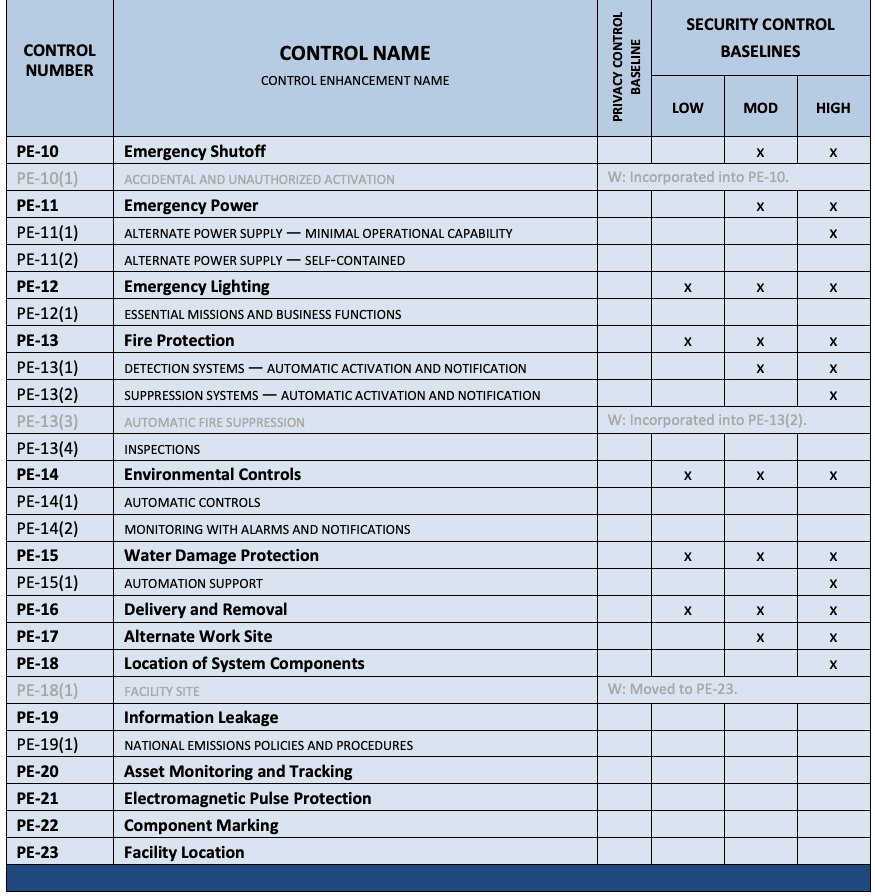
| 管理策番号 | 管理策名／管理策拡張名 | プライバシー管理策 | ベースライン | セキュリティ管理策 |
| ベースライン | ||||
| 低 | 中／高 | |||
| PE-10 | 緊急遮断 | x / x | ||
| PE-10(1) | 誤操作および無許可の作動 | W: PE-10に統合。 | ||
| PE-11 | 非常用電源 | x / x | ||
| PE-11(1) | 代替電源—最低限の運用能力 | x | ||
| PE-11(2) | 代替電源—自給式 | |||
| PE-12 | 非常用照明 | x | x / x | |
| PE-12(1) | 不可欠な任務および事業機能 | |||
| PE-13 | 火災防護 | x | x / x | |
| PE-13(1) | 検知システム—自動作動および通知 | x / x | ||
| PE-13(2) | 消火システム—自動作動および通知 | x | ||
| PE-13(3) | 自動消火 | W: PE-13(2)に統合。 | ||
| PE-13(4) | 点検 | |||
| PE-14 | 環境制御 | x | x / x | |
| PE-14(1) | 自動制御 | |||
| PE-14(2) | アラームおよび通知による監視 | |||
| PE-15 | 水害からの保護 | x | x / x | |
| PE-15(1) | 自動化支援 | x | ||
| PE-16 | 搬入および搬出 | x | x / x | |
| PE-17 | 代替作業場所 | x / x | ||
| PE-18 | システムコンポーネントの所在 | x | ||
| PE-18(1) | 施設の場所 | W: PE-23へ移動。 | ||
| PE-19 | 情報漏えい | |||
| PE-19(1) | 国家排出ポリシーおよび手順 | |||
| PE-20 | 資産の監視および追跡 | |||
| PE-21 | 電磁パルスからの保護 | |||
| PE-22 | コンポーネントの表示 | |||
| PE-23 | 施設の所在地 |
原本の表画像

原本の表画像

CHAPTER THREE
第3章
未レビュー訳3.12 PLANNING FAMILY
3.12 計画ファミリー
未レビュー訳Table 3-12 provides a summary of the controls and control enhancements assigned to the Planning Family. The controls are allocated to the low-impact, moderate-impact, and high-impact security control baselines and the privacy control baseline, as appropriate. A control or control enhancement that has been withdrawn from the control catalog is indicated by a “W” and an explanation of the control or control enhancement disposition in light gray text.
表3-12は、計画ファミリーに割り当てられた管理策および管理策拡張の概要を示します。管理策は、該当する場合、低影響度、中影響度、高影響度のセキュリティ管理策ベースラインおよびプライバシー管理策ベースラインに割り当てられています。管理策カタログから撤回された管理策または管理策拡張には「W」が示され、当該管理策または管理策拡張の処置に関する説明が薄い灰色の文字で示されています。
未レビュー訳TABLE 3-12: PLANNING FAMILY
表3-12：計画ファミリー
未レビュー訳| CONTROL NUMBER | CONTROL NAME CONTROL ENHANCEMENT NAME | LORTNOC YCAVIRP | ENILESAB | SECURITY CONTROL |
| BASELINES | ||||
| LOW | MOD / HIGH | |||
| PL-1 | Policy and Procedures | x | x | x / x |
| PL-2 | System Security and Privacy Plans | x | x | x / x |
| PL-2(1) | CONCEPT OF OPERATIONS | W: Incorporated into PL-7. | ||
| PL-2(2) | FUNCTIONAL ARCHITECTURE | W: Incorporated into PL-8. | ||
| PL-2(3) | PLAN AND COORDINATE WITH OTHER ORGANIZATIONAL ENTITIES | W: Incorporated into PL-2. | ||
| PL-3 | System Security Plan Update | W: Incorporated into PL-2. | ||
| PL-4 | Rules of Behavior | x | x | x / x |
| PL-4(1) | SOCIAL MEDIA AND EXTERNAL SITE/APPLICATION USAGE RESTRICTIONS | x | x | x / x |
| PL-5 | Privacy Impact Assessment | W: Incorporated into RA-8. | ||
| PL-6 | Security-Related Activity Planning | W: Incorporated into PL-2. | ||
| PL-7 | Concept of Operations | |||
| PL-8 | Security and Privacy Architectures | x | x / x | |
| PL-8(1) | DEFENSE IN DEPTH | |||
| PL-8(2) | SUPPLIER DIVERSITY | |||
| PL-9 | Central Management | x | ||
| PL-10 | Baseline Selection | x | x / x | |
| PL-11 | Baseline Tailoring | x | x / x |
原本の表画像
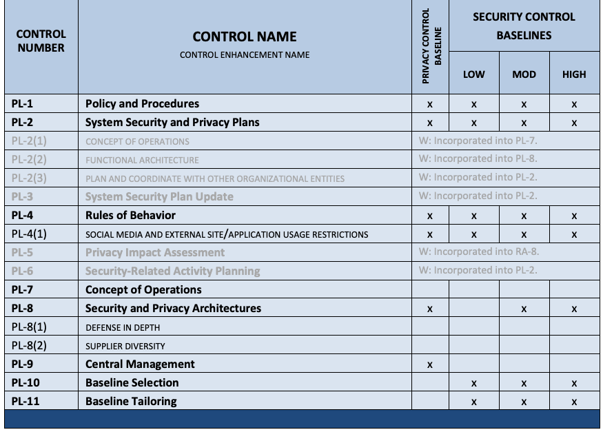
| 管理策番号 | 管理策名／管理策拡張名 | プライバシー管理策 | ベースライン | セキュリティ管理策 |
| ベースライン | ||||
| 低 | 中／高 | |||
| PL-1 | ポリシーおよび手順 | x | x | x / x |
| PL-2 | システムセキュリティ・プライバシー計画 | x | x | x / x |
| PL-2(1) | 運用概念 | W: PL-7に統合。 | ||
| PL-2(2) | 機能アーキテクチャ | W: PL-8に統合。 | ||
| PL-2(3) | 他の組織主体との計画および調整 | W: PL-2に統合。 | ||
| PL-3 | システムセキュリティ計画の更新 | W: PL-2に統合。 | ||
| PL-4 | 行動規則 | x | x | x / x |
| PL-4(1) | ソーシャルメディアおよび外部サイト／アプリケーション利用の制限 | x | x | x / x |
| PL-5 | プライバシー影響評価 | W: RA-8に統合。 | ||
| PL-6 | セキュリティ関連活動の計画 | W: PL-2に統合。 | ||
| PL-7 | 運用概念 | |||
| PL-8 | セキュリティおよびプライバシーアーキテクチャ | x | x / x | |
| PL-8(1) | 多層防御 | |||
| PL-8(2) | 供給者の多様性 | |||
| PL-9 | 一元管理 | x | ||
| PL-10 | ベースラインの選択 | x | x / x | |
| PL-11 | ベースラインの調整 | x | x / x |
原本の表画像

原本の表画像

CHAPTER THREE
第3章
未レビュー訳3.13 PROGRAM MANAGEMENT FAMILY
3.13 プログラム管理ファミリー
未レビュー訳Table 3-13 provides a summary of the controls and control enhancements assigned to the Program Management Family. These controls are implemented at the organization level and are not directed at individual information systems. The Program Management controls are designed to facilitate compliance with applicable federal laws, executive orders, directives, regulations, policies, and standards.
表3-13は、プログラム管理ファミリーに割り当てられた管理策および管理策拡張の概要を示します。これらの管理策は組織レベルで実装され、個々の情報システムを対象とするものではありません。プログラム管理管理策は、適用される連邦法、大統領令、指令、規制、ポリシー、および標準への準拠を促進するよう設計されています。
未レビュー訳TABLE 3-13: PROGRAM MANAGEMENT FAMILY
表3-13：プログラム管理ファミリー
未レビュー訳原本の表画像
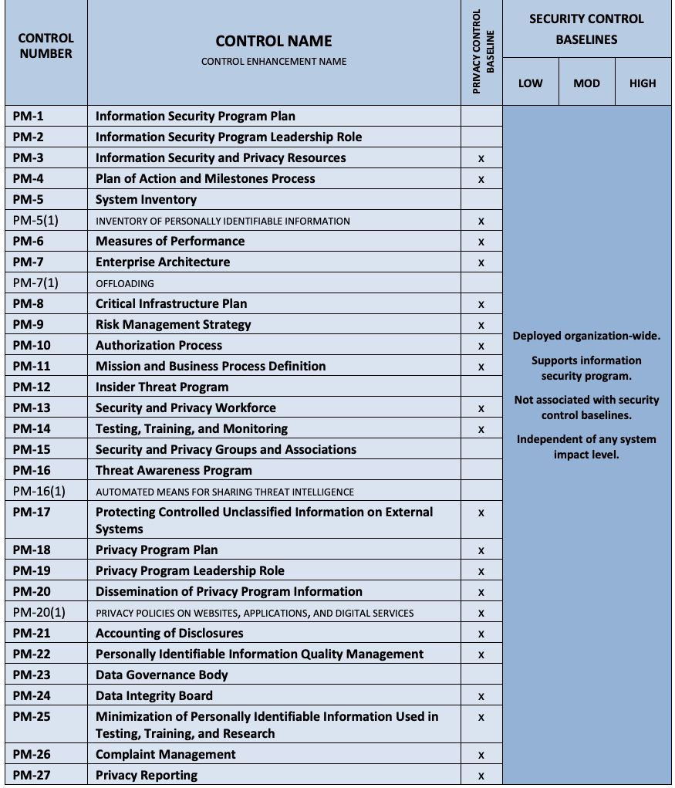
原本の表画像

原本の表画像

CHAPTER THREE
第3章
未レビュー訳| CONTROL NUMBER | CONTROL NAME CONTROL ENHANCEMENT NAME | LORTNOC YCAVIRP | ENILESAB | SECURITY CONTROL |
| BASELINES | ||||
| LOW | MOD / HIGH | |||
| PM-28 | Risk Framing | x | ||
| PM-29 | Risk Management Program Leadership Roles | |||
| PM-30 | Supply Chain Risk Management Strategy | |||
| PM-30(1) | SUPPLIERS OF CRITICAL OR MISSION-ESSENTIAL ITEMS | |||
| PM-31 | Continuous Monitoring Strategy | x | ||
| PM-32 | Purposing |
原本の表画像
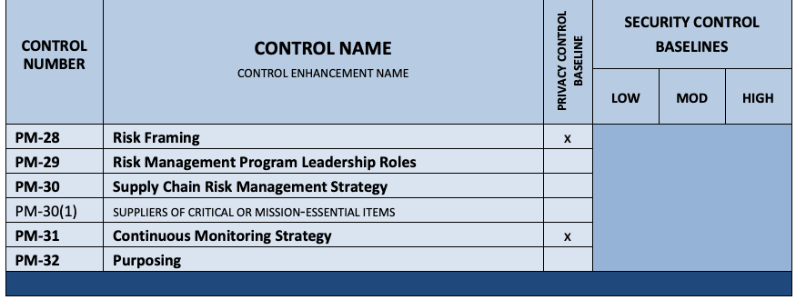
| 管理策番号 | 管理策名／管理策拡張名 | プライバシー管理策 | ベースライン | セキュリティ管理策 |
| ベースライン | ||||
| 低 | 中／高 | |||
| PM-28 | リスクの枠組み | x | ||
| PM-29 | リスク管理プログラムのリーダーシップ役割 | |||
| PM-30 | サプライチェーンリスク管理戦略 | |||
| PM-30(1) | 重要品目または任務上不可欠な品目の供給者 | |||
| PM-31 | 継続的監視戦略 | x | ||
| PM-32 | 目的の設定 |
原本の表画像

原本の表画像

CHAPTER THREE
第3章
未レビュー訳3.14 PERSONNEL SECURITY FAMILY
3.14 要員セキュリティファミリー
未レビュー訳Table 3-14 provides a summary of the controls and control enhancements assigned to the Personnel Security Family. The controls are allocated to the low-impact, moderate-impact, and high-impact security control baselines and the privacy control baseline, as appropriate. A control or control enhancement that has been withdrawn from the control catalog is indicated by a “W” and an explanation of the control or control enhancement disposition in light gray text.
表3-14は、要員セキュリティファミリーに割り当てられた管理策および管理策拡張の概要を示します。管理策は、該当する場合、低影響度、中影響度、高影響度のセキュリティ管理策ベースラインおよびプライバシー管理策ベースラインに割り当てられています。管理策カタログから撤回された管理策または管理策拡張には「W」が示され、当該管理策または管理策拡張の処置に関する説明が薄い灰色の文字で示されています。
未レビュー訳TABLE 3-14: PERSONNEL SECURITY FAMILY
表3-14：要員セキュリティファミリー
未レビュー訳| CONTROL NUMBER | CONTROL NAME CONTROL ENHANCEMENT NAME | LORTNOC YCAVIRP | ENILESAB | SECURITY CONTROL |
| BASELINES | ||||
| LOW | MOD / HIGH | |||
| PS-1 | Policy and Procedures | x | x / x | |
| PS-2 | Position Risk Designation | x | x / x | |
| PS-3 | Personnel Screening | x | x / x | |
| PS-3(1) | CLASSIFIED INFORMATION | |||
| PS-3(2) | FORMAL INDOCTRINATION | |||
| PS-3(3) | INFORMATION REQUIRING SPECIAL PROTECTION MEASURES | |||
| PS-3(4) | CITIZENSHIP REQUIREMENTS | |||
| PS-4 | Personnel Termination | x | x / x | |
| PS-4(1) | POST-EMPLOYMENT REQUIREMENTS | |||
| PS-4(2) | AUTOMATED ACTIONS | x | ||
| PS-5 | Personnel Transfer | x | x / x | |
| PS-6 | Access Agreements | x | x | x / x |
| PS-6(1) | INFORMATION REQUIRING SPECIAL PROTECTION | W: Incorporated into PS-3. | ||
| PS-6(2) | CLASSIFIED INFORMATION REQUIRING SPECIAL PROTECTION | |||
| PS-6(3) | POST-EMPLOYMENT REQUIREMENTS | |||
| PS-7 | External Personnel Security | x | x / x | |
| PS-8 | Personnel Sanctions | x | x / x | |
| PS-9 | Position Descriptions | x | x / x |
原本の表画像
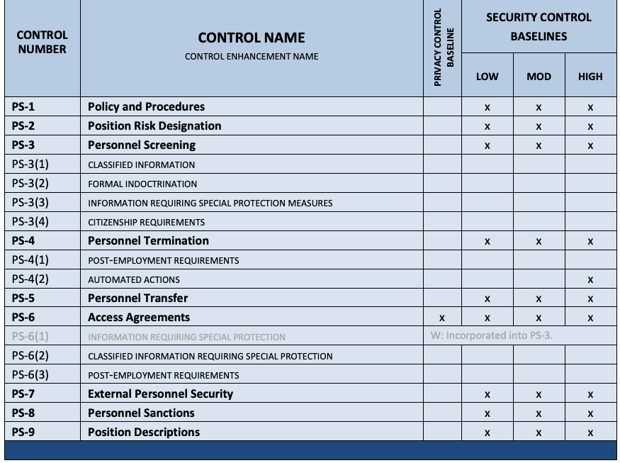
| 管理策番号 | 管理策名／管理策拡張名 | プライバシー管理策 | ベースライン | セキュリティ管理策 |
| ベースライン | ||||
| 低 | 中／高 | |||
| PS-1 | ポリシーおよび手順 | x | x / x | |
| PS-2 | 職務リスクの指定 | x | x / x | |
| PS-3 | 要員審査 | x | x / x | |
| PS-3(1) | 機密情報 | |||
| PS-3(2) | 正式な教育・周知 | |||
| PS-3(3) | 特別な保護措置を要する情報 | |||
| PS-3(4) | 市民権要件 | |||
| PS-4 | 要員の離任 | x | x / x | |
| PS-4(1) | 雇用終了後の要件 | |||
| PS-4(2) | 自動化された措置 | x | ||
| PS-5 | 要員の異動 | x | x / x | |
| PS-6 | アクセス合意 | x | x | x / x |
| PS-6(1) | 特別な保護を要する情報 | W: PS-3に統合。 | ||
| PS-6(2) | 特別な保護を要する機密情報 | |||
| PS-6(3) | 雇用終了後の要件 | |||
| PS-7 | 外部要員のセキュリティ | x | x / x | |
| PS-8 | 要員への制裁 | x | x / x | |
| PS-9 | 職務記述 | x | x / x |
原本の表画像

原本の表画像

CHAPTER THREE
第3章
未レビュー訳3.15 PERSONALLY IDENTIFIABLE INFORMATION PROCESSING AND
3.15 個人識別情報の処理および
未レビュー訳TRANSPARENCY FAMILY
透明性ファミリー
未レビュー訳Table 3-15 provides a summary of the controls and control enhancements assigned to the Personally Identifiable Information Processing and Transparency Family. The controls are allocated to the privacy control baseline in accordance with the selection criteria defined in Section 2.2. A control or control enhancement that has been withdrawn from the control catalog is indicated by a “W” and an explanation of the control or control enhancement disposition in light gray text.
表3-15は、個人識別情報の処理および透明性ファミリーに割り当てられた管理策および管理策拡張の概要を示します。管理策は、セクション2.2に定める選択基準に従ってプライバシー管理策ベースラインに割り当てられています。管理策カタログから撤回された管理策または管理策拡張には「W」が示され、当該管理策または管理策拡張の処置に関する説明が薄い灰色の文字で示されています。
未レビュー訳TABLE 3-15: PERSONALLY IDENTIFIABLE INFORMATION PROCESSING AND TRANSPARENCY FAMILY
表3-15：個人識別情報の処理および透明性ファミリー
未レビュー訳原本の表画像
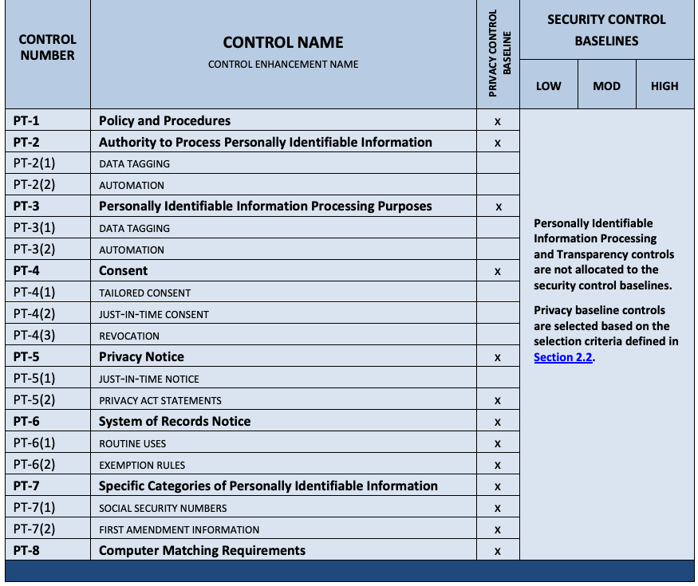
原本の表画像

原本の表画像

CHAPTER THREE
第3章
未レビュー訳3.16 RISK ASSESSMENT FAMILY
3.16 リスク評価ファミリー
未レビュー訳Table 3-16 provides a summary of the controls and control enhancements assigned to the Risk Assessment Family. The controls are allocated to the low-impact, moderate-impact, and high-impact security control baselines and the privacy control baseline, as appropriate. A control or control enhancement that has been withdrawn from the control catalog is indicated by a “W” and an explanation of the control or control enhancement disposition in light gray text.
表3-16は、リスク評価ファミリーに割り当てられた管理策および管理策拡張の概要を示します。管理策は、該当する場合、低影響度、中影響度、高影響度のセキュリティ管理策ベースラインおよびプライバシー管理策ベースラインに割り当てられています。管理策カタログから撤回された管理策または管理策拡張には「W」が示され、当該管理策または管理策拡張の処置に関する説明が薄い灰色の文字で示されています。
未レビュー訳TABLE 3-16: RISK ASSESSMENT FAMILY
表3-16：リスク評価ファミリー
未レビュー訳| CONTROL NUMBER | CONTROL NAME CONTROL ENHANCEMENT NAME | LORTNOC YCAVIRP | ENILESAB | SECURITY CONTROL |
| BASELINES | ||||
| LOW | MOD / HIGH | |||
| RA-1 | Policy and Procedures | x | x | x / x |
| RA-2 | Security Categorization | x | x / x | |
| RA-2(1) | IMPACT-LEVEL PRIORITIZATION | |||
| RA-3 | Risk Assessment | x | x | x / x |
| RA-3(1) | SUPPLY CHAIN RISK ASSESSMENT | x | x / x | |
| RA-3(2) | USE OF ALL-SOURCE INTELLIGENCE | |||
| RA-3(3) | DYNAMIC THREAT AWARENESS | |||
| RA-3(4) | PREDICTIVE CYBER ANALYTICS | |||
| RA-4 | Risk Assessment Update | W: Incorporated into RA-3. | ||
| RA-5 | Vulnerability Monitoring and Scanning | x | x / x | |
| RA-5(1) | UPDATE TOOL CAPABILITY | W: Incorporated into RA-5. | ||
| RA-5(2) | UPDATE VULNERABILITIES TO BE SCANNED | x | x / x | |
| RA-5(3) | BREADTH AND DEPTH OF COVERAGE | |||
| RA-5(4) | DISCOVERABLE INFORMATION | x | ||
| RA-5(5) | PRIVILEGED ACCESS | x / x | ||
| RA-5(6) | AUTOMATED TREND ANALYSES | |||
| RA-5(7) | AUTOMATED DETECTION AND NOTIFICATION OF UNAUTHORIZED COMPONENTS | W: Incorporated into CM-8. | ||
| RA-5(8) | REVIEW HISTORIC AUDIT LOGS | |||
| RA-5(9) | PENETRATION TESTING AND ANALYSES | W: Incorporated into CA-8. | ||
| RA-5(10) | CORRELATE SCANNING INFORMATION | |||
| RA-5(11) | PUBLIC DISCLOSURE PROGRAM | x | x / x | |
| RA-6 | Technical Surveillance Countermeasures Survey | |||
| RA-7 | Risk Response | x | x | x / x |
| RA-8 | Privacy Impact Assessments | x | ||
| RA-9 | Criticality Analysis | x / x | ||
| RA-10 | Threat Hunting |
原本の表画像
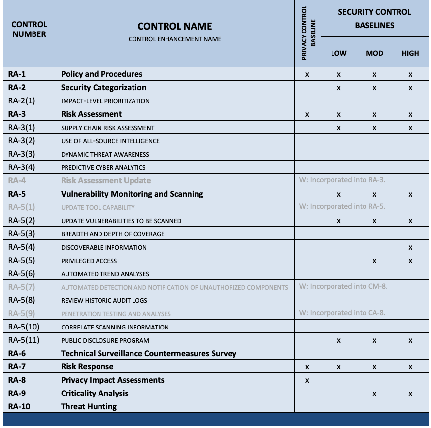
| 管理策番号 | 管理策名／管理策拡張名 | プライバシー管理策 | ベースライン | セキュリティ管理策 |
| ベースライン | ||||
| 低 | 中／高 | |||
| RA-1 | ポリシーおよび手順 | x | x | x / x |
| RA-2 | セキュリティ分類 | x | x / x | |
| RA-2(1) | 影響度レベルの優先順位付け | |||
| RA-3 | リスク評価 | x | x | x / x |
| RA-3(1) | サプライチェーンリスク評価 | x | x / x | |
| RA-3(2) | 全情報源インテリジェンスの利用 | |||
| RA-3(3) | 動的な脅威認識 | |||
| RA-3(4) | 予測的サイバー分析 | |||
| RA-4 | リスク評価の更新 | W: RA-3に統合。 | ||
| RA-5 | 脆弱性の監視およびスキャン | x | x / x | |
| RA-5(1) | ツール機能の更新 | W: RA-5に統合。 | ||
| RA-5(2) | スキャン対象の脆弱性の更新 | x | x / x | |
| RA-5(3) | 網羅範囲の広さと深さ | |||
| RA-5(4) | 発見可能な情報 | x | ||
| RA-5(5) | 特権アクセス | x / x | ||
| RA-5(6) | 傾向の自動分析 | |||
| RA-5(7) | 無許可コンポーネントの自動検出および通知 | W: CM-8に統合。 | ||
| RA-5(8) | 過去の監査ログのレビュー | |||
| RA-5(9) | 侵入テストおよび分析 | W: CA-8に統合。 | ||
| RA-5(10) | スキャン情報の相関分析 | |||
| RA-5(11) | 公開情報開示プログラム | x | x / x | |
| RA-6 | 技術監視対策調査 | |||
| RA-7 | リスク対応 | x | x | x / x |
| RA-8 | プライバシー影響評価 | x | ||
| RA-9 | 重要度分析 | x / x | ||
| RA-10 | 脅威ハンティング |
原本の表画像

原本の表画像

CHAPTER THREE
第3章
未レビュー訳3.17 SYSTEM AND SERVICES ACQUISITION FAMILY
3.17 システムおよびサービスの取得ファミリー
未レビュー訳Table 3-17 provides a summary of the controls and control enhancements assigned to the System and Services Acquisition Family. The controls are allocated to the low-impact, moderate-impact, and high-impact security control baselines and the privacy control baseline, as appropriate. A control or control enhancement that has been withdrawn from the control catalog is indicated by a “W” and an explanation of the control or control enhancement disposition in light gray text.
表3-17は、システムおよびサービスの取得ファミリーに割り当てられた管理策および管理策拡張の概要を示します。管理策は、該当する場合、低影響度、中影響度、高影響度のセキュリティ管理策ベースラインおよびプライバシー管理策ベースラインに割り当てられています。管理策カタログから撤回された管理策または管理策拡張には「W」が示され、当該管理策または管理策拡張の処置に関する説明が薄い灰色の文字で示されています。
未レビュー訳TABLE 3-17: SYSTEM AND SERVICES ACQUISITION FAMILY
表3-17：システムおよびサービスの取得ファミリー
未レビュー訳| CONTROL NUMBER | CONTROL NAME CONTROL ENHANCEMENT NAME | LORTNOC YCAVIRP | ENILESAB | SECURITY CONTROL |
| BASELINES | ||||
| LOW | MOD / HIGH | |||
| SA-1 | Policy and Procedures | x | x | x / x |
| SA-2 | Allocation of Resources | x | x | x / x |
| SA-3 | System Development Life Cycle | x | x | x / x |
| SA-3(1) | MANAGE PREPRODUCTION ENVIRONMENT | |||
| SA-3(2) | USE OF LIVE OR OPERATIONAL DATA | |||
| SA-3(3) | TECHNOLOGY REFRESH | |||
| SA-4 | Acquisition Process | x | x | x / x |
| SA-4(1) | FUNCTIONAL PROPERTIES OF CONTROLS | x / x | ||
| SA-4(2) | DESIGN AND IMPLEMENTATION INFORMATION FOR CONTROLS | x / x | ||
| SA-4(3) | DEVELOPMENT METHODS, TECHNIQUES, AND PRACTICES | |||
| SA-4(4) | ASSIGNMENT OF COMPONENTS TO SYSTEMS | W: Incorporated into CM-8(9). | ||
| SA-4(5) | SYSTEM, COMPONENT, AND SERVICE CONFIGURATIONS | x | ||
| SA-4(6) | USE OF INFORMATION ASSURANCE PRODUCTS | |||
| SA-4(7) | NIAP-APPROVED PROTECTION PROFILES | |||
| SA-4(8) | CONTINUOUS MONITORING PLAN FOR CONTROLS | |||
| SA-4(9) | FUNCTIONS, PORTS, PROTOCOLS, AND SERVICES IN USE | x / x | ||
| SA-4(10) | USE OF APPROVED PIV PRODUCTS | x | x / x | |
| SA-4(11) | SYSTEM OF RECORDS | |||
| SA-4(12) | DATA OWNERSHIP | |||
| SA-5 | System Documentation | x | x / x | |
| SA-5(1) | FUNCTIONAL PROPERTIES OF SECURITY CONTROLS | W: Incorporated into SA-4(1). | ||
| SA-5(2) | SECURITY-RELEVANT EXTERNAL SYSTEM INTERFACES | W: Incorporated into SA-4(2). | ||
| SA-5(3) | HIGH-LEVEL DESIGN | W: Incorporated into SA-4(2). | ||
| SA-5(4) | LOW-LEVEL DESIGN | W: Incorporated into SA-4(2). | ||
| SA-5(5) | SOURCE CODE | W: Incorporated into SA-4(2). | ||
| SA-6 | Software Usage Restrictions | W: Incorporated into CM-10 and SI-7. | ||
| SA-7 | User-Installed Software | W: Incorporated into CM-11 and SI-7. | ||
| SA-8 | Security and Privacy Engineering Principles | x | x / x | |
| SA-8(1) | CLEAR ABSTRACTIONS | |||
| SA-8(2) | LEAST COMMON MECHANISM | |||
| SA-8(3) | MODULARITY AND LAYERING | |||
| SA-8(4) | PARTIALLY ORDERED DEPENDENCIES |
原本の表画像
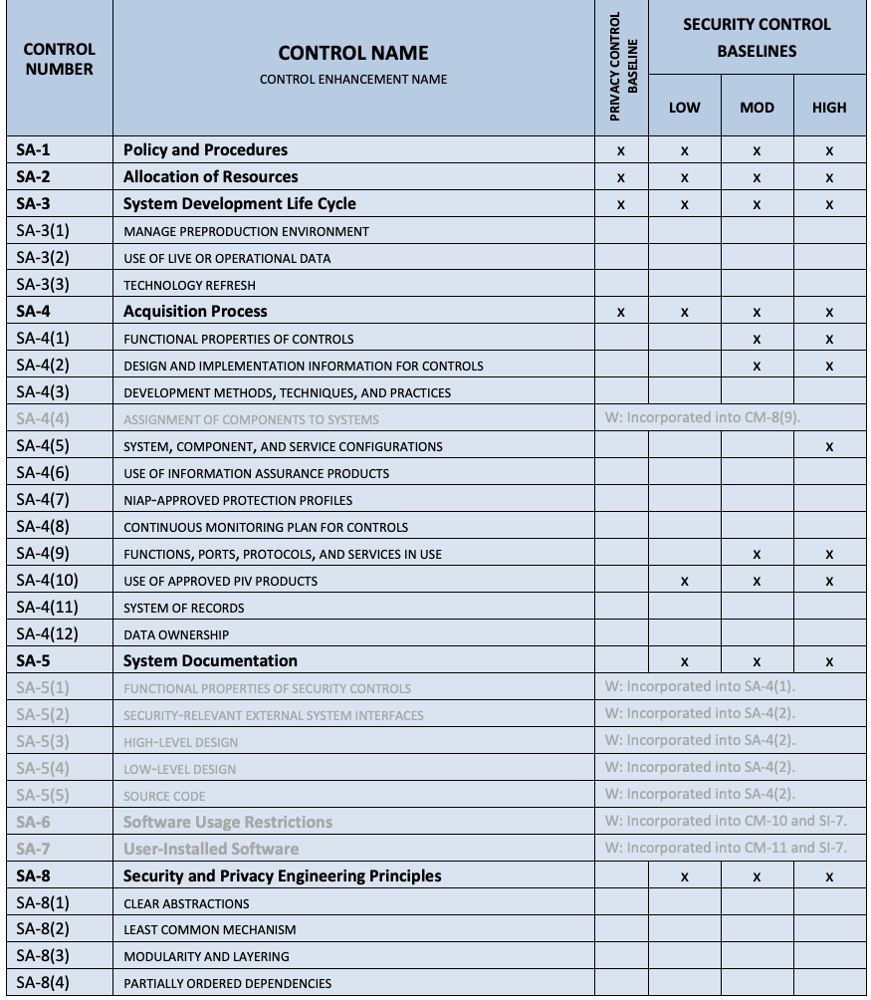
| 管理策番号 | 管理策名／管理策拡張名 | プライバシー管理策 | ベースライン | セキュリティ管理策 |
| ベースライン | ||||
| 低 | 中／高 | |||
| SA-1 | ポリシーおよび手順 | x | x | x / x |
| SA-2 | リソースの割り当て | x | x | x / x |
| SA-3 | システム開発ライフサイクル | x | x | x / x |
| SA-3(1) | 本番前環境の管理 | |||
| SA-3(2) | 実データまたは運用データの使用 | |||
| SA-3(3) | 技術の更新 | |||
| SA-4 | 取得プロセス | x | x | x / x |
| SA-4(1) | 管理策の機能特性 | x / x | ||
| SA-4(2) | 管理策の設計および実装に関する情報 | x / x | ||
| SA-4(3) | 開発方法、技法、および実務 | |||
| SA-4(4) | コンポーネントのシステムへの割り当て | W: CM-8(9)に統合。 | ||
| SA-4(5) | システム、コンポーネント、およびサービスの構成 | x | ||
| SA-4(6) | 情報保証製品の使用 | |||
| SA-4(7) | NIAP承認済み保護プロファイル | |||
| SA-4(8) | 管理策の継続的監視計画 | |||
| SA-4(9) | 使用中の機能、ポート、プロトコル、およびサービス | x / x | ||
| SA-4(10) | 承認済みPIV製品の使用 | x | x / x | |
| SA-4(11) | 記録システム | |||
| SA-4(12) | データの所有権 | |||
| SA-5 | システム文書 | x | x / x | |
| SA-5(1) | セキュリティ管理策の機能特性 | W: SA-4(1)に統合。 | ||
| SA-5(2) | セキュリティに関連する外部システムインターフェース | W: SA-4(2)に統合。 | ||
| SA-5(3) | 高水準設計 | W: SA-4(2)に統合。 | ||
| SA-5(4) | 低水準設計 | W: SA-4(2)に統合。 | ||
| SA-5(5) | ソースコード | W: SA-4(2)に統合。 | ||
| SA-6 | ソフトウェア使用制限 | W: CM-10、SI-7に統合。 | ||
| SA-7 | ユーザーインストール型ソフトウェア | W: CM-11、SI-7に統合。 | ||
| SA-8 | セキュリティおよびプライバシーエンジニアリングの原則 | x | x / x | |
| SA-8(1) | 明確な抽象化 | |||
| SA-8(2) | 最小共通メカニズム | |||
| SA-8(3) | モジュール性および階層化 | |||
| SA-8(4) | 部分順序付けされた依存関係 |
原本の表画像

原本の表画像

CHAPTER THREE
第3章
未レビュー訳| CONTROL NUMBER | CONTROL NAME CONTROL ENHANCEMENT NAME | LORTNOC YCAVIRP | ENILESAB | SECURITY CONTROL |
| BASELINES | ||||
| LOW | MOD / HIGH | |||
| SA-8(5) | EFFICIENTLY MEDIATED ACCESS | |||
| SA-8(6) | MINIMIZED SHARING | |||
| SA-8(7) | REDUCED COMPLEXITY | |||
| SA-8(8) | SECURE EVOLVABILITY | |||
| SA-8(9) | TRUSTED COMPONENTS | |||
| SA-8(10) | HIERARCHICAL TRUST | |||
| SA-8(11) | INVERSE MODIFICATION THRESHOLD | |||
| SA-8(12) | HIERARCHICAL PROTECTION | |||
| SA-8(13) | MINIMIZED SECURITY ELEMENTS | |||
| SA-8(14) | LEAST PRIVILEGE | |||
| SA-8(15) | PREDICATE PERMISSION | |||
| SA-8(16) | SELF-RELIANT TRUSTWORTHINESS | |||
| SA-8(17) | SECURE DISTRIBUTED COMPOSITION | |||
| SA-8(18) | TRUSTED COMMUNICATIONS CHANNELS | |||
| SA-8(19) | CONTINUOUS PROTECTION | |||
| SA-8(20) | SECURE METADATA MANAGEMENT | |||
| SA-8(21) | SELF-ANALYSIS | |||
| SA-8(22) | ACCOUNTABILITY AND TRACEABILITY | |||
| SA-8(23) | SECURE DEFAULTS | |||
| SA-8(24) | SECURE FAILURE AND RECOVERY | |||
| SA-8(25) | ECONOMIC SECURITY | |||
| SA-8(26) | PERFORMANCE SECURITY | |||
| SA-8(27) | HUMAN FACTORED SECURITY | |||
| SA-8(28) | ACCEPTABLE SECURITY | |||
| SA-8(29) | REPEATABLE AND DOCUMENTED PROCEDURES | |||
| SA-8(30) | PROCEDURAL RIGOR | |||
| SA-8(31) | SECURE SYSTEM MODIFICATION | |||
| SA-8(32) | SUFFICIENT DOCUMENTATION | |||
| SA-8(33) | MINIMIZATION | x | ||
| SA-9 | External System Services | x | x | x / x |
| SA-9(1) | RISK ASSESSMENTS AND ORGANIZATIONAL APPROVALS | |||
| SA-9(2) | IDENTIFICATION OF FUNCTIONS, PORTS, PROTOCOLS, AND SERVICES | x / x | ||
| SA-9(3) | ESTABLISH AND MAINTAIN TRUST RELATIONSHIP WITH PROVIDERS | |||
| SA-9(4) | CONSISTENT INTERESTS OF CONSUMERS AND PROVIDERS | |||
| SA-9(5) | PROCESSING, STORAGE, AND SERVICE LOCATION | |||
| SA-9(6) | ORGANIZATION-CONTROLLED CRYPTOGRAPHIC KEYS | |||
| SA-9(7) | ORGANIZATION-CONTROLLED INTEGRITY CHECKING | |||
| SA-9(8) | PROCESSING AND STORAGE LOCATION — U.S. JURISDICTION | |||
| SA-10 | Developer Configuration Management | x / x | ||
| SA-10(1) | SOFTWARE AND FIRMWARE INTEGRITY VERIFICATION | |||
| SA-10(2) | ALTERNATIVE CONFIGURATION MANAGEMENT PROCESSES | |||
| SA-10(3) | HARDWARE INTEGRITY VERIFICATION |
原本の表画像
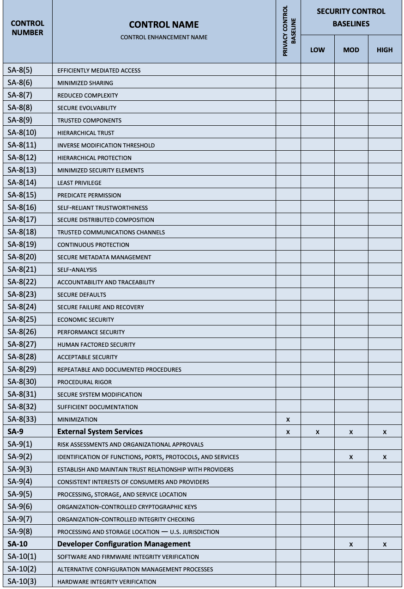
| 管理策番号 | 管理策名／管理策拡張名 | プライバシー管理策 | ベースライン | セキュリティ管理策 |
| ベースライン | ||||
| 低 | 中／高 | |||
| SA-8(5) | 効率的に仲介されるアクセス | |||
| SA-8(6) | 共有の最小化 | |||
| SA-8(7) | 複雑さの低減 | |||
| SA-8(8) | 安全な発展可能性 | |||
| SA-8(9) | 信頼されたコンポーネント | |||
| SA-8(10) | 階層的信頼 | |||
| SA-8(11) | 逆修正しきい値 | |||
| SA-8(12) | 階層的保護 | |||
| SA-8(13) | セキュリティ要素の最小化 | |||
| SA-8(14) | 最小権限 | |||
| SA-8(15) | 述語に基づく許可 | |||
| SA-8(16) | 自立した信頼性 | |||
| SA-8(17) | 安全な分散構成 | |||
| SA-8(18) | 信頼された通信チャネル | |||
| SA-8(19) | 継続的保護 | |||
| SA-8(20) | 安全なメタデータ管理 | |||
| SA-8(21) | 自己分析 | |||
| SA-8(22) | 説明責任および追跡可能性 | |||
| SA-8(23) | 安全なデフォルト | |||
| SA-8(24) | 安全な障害および復旧 | |||
| SA-8(25) | 経済性を考慮したセキュリティ | |||
| SA-8(26) | 性能を考慮したセキュリティ | |||
| SA-8(27) | 人間要因を考慮したセキュリティ | |||
| SA-8(28) | 許容可能なセキュリティ | |||
| SA-8(29) | 再現可能で文書化された手順 | |||
| SA-8(30) | 手続きの厳格さ | |||
| SA-8(31) | システムの安全な変更 | |||
| SA-8(32) | 十分な文書化 | |||
| SA-8(33) | 最小化 | x | ||
| SA-9 | 外部システムサービス | x | x | x / x |
| SA-9(1) | リスク評価および組織による承認 | |||
| SA-9(2) | 機能、ポート、プロトコル、およびサービスの識別 | x / x | ||
| SA-9(3) | プロバイダーとの信頼関係の確立および維持 | |||
| SA-9(4) | 利用者とプロバイダーの利益の整合 | |||
| SA-9(5) | 処理、保管、およびサービスの所在地 | |||
| SA-9(6) | 組織が管理する暗号鍵 | |||
| SA-9(7) | 組織が管理する完全性検査 | |||
| SA-9(8) | 処理および保管の場所—米国の管轄 | |||
| SA-10 | 開発者による構成管理 | x / x | ||
| SA-10(1) | ソフトウェアおよびファームウェアの完全性検証 | |||
| SA-10(2) | 代替の構成管理プロセス | |||
| SA-10(3) | ハードウェアの完全性検証 |
原本の表画像

原本の表画像

CHAPTER THREE
第3章
未レビュー訳| CONTROL NUMBER | CONTROL NAME CONTROL ENHANCEMENT NAME | LORTNOC YCAVIRP | ENILESAB | SECURITY CONTROL |
| BASELINES | ||||
| LOW | MOD / HIGH | |||
| SA-10(4) | TRUSTED GENERATION | |||
| SA-10(5) | MAPPING INTEGRITY FOR VERSION CONTROL | |||
| SA-10(6) | TRUSTED DISTRIBUTION | |||
| SA-10(7) | SECURITY AND PRIVACY REPRESENTATIVES | |||
| SA-11 | Developer Testing and Evaluation | x | x / x | |
| SA-11(1) | STATIC CODE ANALYSIS | |||
| SA-11(2) | THREAT MODELING AND VULNERABILITY ANALYSES | |||
| SA-11(3) | INDEPENDENT VERIFICATION OF ASSESSMENT PLANS AND EVIDENCE | |||
| SA-11(4) | MANUAL CODE REVIEWS | |||
| SA-11(5) | PENETRATION TESTING | |||
| SA-11(6) | ATTACK SURFACE REVIEWS | |||
| SA-11(7) | VERIFY SCOPE OF TESTING AND EVALUATION | |||
| SA-11(8) | DYNAMIC CODE ANALYSIS | |||
| SA-11(9) | INTERACTIVE APPLICATION SECURITY TESTING | |||
| SA-12 | Supply Chain Protection | W: Moved to SR Family. | ||
| SA-12(1) | ACQUISITION STRATEGIES, TOOLS, AND METHODS | W: Moved to SR-5. | ||
| SA-12(2) | SUPPLIER REVIEWS | W: Moved to SR-6. | ||
| SA-12(3) | TRUSTED SHIPPING AND WAREHOUSING | W: Incorporated into SR-3. | ||
| SA-12(4) | DIVERSITY OF SUPPLIERS | W: Moved to SR-3(1). | ||
| SA-12(5) | LIMITATION OF HARM | W: Moved to SR-3(2). | ||
| SA-12(6) | MINIMIZING PROCUREMENT TIME | W: Incorporated into SR-5(1). | ||
| SA-12(7) | ASSESSMENTS PRIOR TO SELECTION / ACCEPTANCE / UPDATE | W: Moved to SR-5(2). | ||
| SA-12(8) | USE OF ALL-SOURCE INTELLIGENCE | W: Incorporated into RA-3(2). | ||
| SA-12(9) | OPERATIONS SECURITY | W: Moved to SR-7. | ||
| SA-12(10) | VALIDATE AS GENUINE AND NOT ALTERED | W: Moved to SR-4(3). | ||
| SA-12(11) | PENETRATION TESTING / ANALYSIS OF ELEMENTS, PROCESSES, AND ACTORS | W: Moved to SR-6(1). | ||
| SA-12(12) | INTER-ORGANIZATIONAL AGREEMENTS | W: Moved to SR-8. | ||
| SA-12(13) | CRITICAL INFORMATION SYSTEM COMPONENTS | W: Incorporated into MA-6 and RA-9. | ||
| SA-12(14) | IDENTITY AND TRACEABILITY | W: Moved to SR-4(1) and SR-4(2). | ||
| SA-12(15) | PROCESSES TO ADDRESS WEAKNESSES OR DEFICIENCIES | W: Incorporated into SR-3. | ||
| SA-13 | Trustworthiness | W: Incorporated into SA-8. | ||
| SA-14 | Criticality Analysis | W: Incorporated into RA-9. | ||
| SA-14(1) | CRITICAL COMPONENTS WITH NO VIABLE ALTERNATIVE SOURCING | W: Incorporated into SA-20. | ||
| SA-15 | Development Process, Standards, and Tools | x / x | ||
| SA-15(1) | QUALITY METRICS | |||
| SA-15(2) | SECURITY AND PRIVACY TRACKING TOOLS | |||
| SA-15(3) | CRITICALITY ANALYSIS | x / x | ||
| SA-15(4) | THREAT MODELING AND VULNERABILITY ANALYSIS | W: Incorporated into SA-11(2). | ||
| SA-15(5) | ATTACK SURFACE REDUCTION | |||
| SA-15(6) | CONTINUOUS IMPROVEMENT | |||
| SA-15(7) | AUTOMATED VULNERABILITY ANALYSIS | |||
| SA-15(8) | REUSE OF THREAT AND VULNERABILITY INFORMATION |
原本の表画像
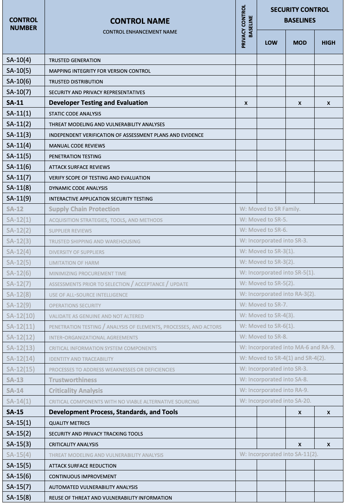
| 管理策番号 | 管理策名／管理策拡張名 | プライバシー管理策 | ベースライン | セキュリティ管理策 |
| ベースライン | ||||
| 低 | 中／高 | |||
| SA-10(4) | 信頼された生成 | |||
| SA-10(5) | バージョン管理の対応関係の完全性 | |||
| SA-10(6) | 信頼された配布 | |||
| SA-10(7) | セキュリティおよびプライバシー担当者 | |||
| SA-11 | 開発者によるテストおよび評価 | x | x / x | |
| SA-11(1) | 静的コード分析 | |||
| SA-11(2) | 脅威モデリングおよび脆弱性分析 | |||
| SA-11(3) | 評価計画および証拠の独立検証 | |||
| SA-11(4) | 手動コードレビュー | |||
| SA-11(5) | 侵入テスト | |||
| SA-11(6) | 攻撃対象領域のレビュー | |||
| SA-11(7) | テストおよび評価の範囲の検証 | |||
| SA-11(8) | 動的コード分析 | |||
| SA-11(9) | 対話型アプリケーションセキュリティテスト | |||
| SA-12 | サプライチェーン保護 | W: SRファミリーへ移動。 | ||
| SA-12(1) | 取得戦略、ツール、および方法 | W: SR-5へ移動。 | ||
| SA-12(2) | 供給者のレビュー | W: SR-6へ移動。 | ||
| SA-12(3) | 信頼できる輸送および保管 | W: SR-3に統合。 | ||
| SA-12(4) | 供給者の多様性 | W: SR-3(1)へ移動。 | ||
| SA-12(5) | 被害の限定 | W: SR-3(2)へ移動。 | ||
| SA-12(6) | 調達期間の最小化 | W: SR-5(1)に統合。 | ||
| SA-12(7) | 選定／受け入れ／更新前の評価 | W: SR-5(2)へ移動。 | ||
| SA-12(8) | 全情報源インテリジェンスの利用 | W: RA-3(2)に統合。 | ||
| SA-12(9) | 運用セキュリティ | W: SR-7へ移動。 | ||
| SA-12(10) | 真正性および非改ざんの検証 | W: SR-4(3)へ移動。 | ||
| SA-12(11) | 侵入テスト／要素、プロセス、および関与者の分析 | W: SR-6(1)へ移動。 | ||
| SA-12(12) | 組織間合意 | W: SR-8へ移動。 | ||
| SA-12(13) | 重要な情報システムコンポーネント | W: MA-6、RA-9に統合。 | ||
| SA-12(14) | 識別情報および追跡可能性 | W: SR-4(1)、SR-4(2)へ移動。 | ||
| SA-12(15) | 弱点または欠陥に対処するプロセス | W: SR-3に統合。 | ||
| SA-13 | 信頼性 | W: SA-8に統合。 | ||
| SA-14 | 重要度分析 | W: RA-9に統合。 | ||
| SA-14(1) | 実行可能な代替調達先がない重要コンポーネント | W: SA-20に統合。 | ||
| SA-15 | 開発プロセス、標準、およびツール | x / x | ||
| SA-15(1) | 品質指標 | |||
| SA-15(2) | セキュリティおよびプライバシー追跡ツール | |||
| SA-15(3) | 重要度分析 | x / x | ||
| SA-15(4) | 脅威モデリングおよび脆弱性分析 | W: SA-11(2)に統合。 | ||
| SA-15(5) | 攻撃対象領域の縮小 | |||
| SA-15(6) | 継続的改善 | |||
| SA-15(7) | 自動脆弱性分析 | |||
| SA-15(8) | 脅威および脆弱性情報の再利用 |
原本の表画像

原本の表画像

CHAPTER THREE
第3章
未レビュー訳| CONTROL NUMBER | CONTROL NAME CONTROL ENHANCEMENT NAME | LORTNOC YCAVIRP | ENILESAB | SECURITY CONTROL |
| BASELINES | ||||
| LOW | MOD / HIGH | |||
| SA-15(9) | USE OF LIVE DATA | W: Incorporated into SA-3(2). | ||
| SA-15(10) | INCIDENT RESPONSE PLAN | |||
| SA-15(11) | ARCHIVE SYSTEM OR COMPONENT | |||
| SA-15(12) | MINIMIZE PERSONALLY IDENTIFIABLE INFORMATION | |||
| SA-16 | Developer-Provided Training | x | ||
| SA-17 | Developer Security and Privacy Architecture and Design | x | ||
| SA-17(1) | FORMAL POLICY MODEL | |||
| SA-17(2) | SECURITY-RELEVANT COMPONENTS | |||
| SA-17(3) | FORMAL CORRESPONDENCE | |||
| SA-17(4) | INFORMAL CORRESPONDENCE | |||
| SA-17(5) | CONCEPTUALLY SIMPLE DESIGN | |||
| SA-17(6) | STRUCTURE FOR TESTING | |||
| SA-17(7) | STRUCTURE FOR LEAST PRIVILEGE | |||
| SA-17(8) | ORCHESTRATION | |||
| SA-17(9) | DESIGN DIVERSITY | |||
| SA-18 | Tamper Resistance and Detection | W: Moved to SR-9. | ||
| SA-18(1) | MULTIPLE PHASES OF SYSTEM DEVELOPMENT LIFE CYCLE | W: Moved to SR-9(1). | ||
| SA-18(2) | INSPECTION OF SYSTEMS OR COMPONENTS | W: Moved to SR-10. | ||
| SA-19 | Component Authenticity | W: Moved to SR-11. | ||
| SA-19(1) | ANTI-COUNTERFEIT TRAINING | W: Moved to SR-11(1). | ||
| SA-19(2) | CONFIGURATION CONTROL FOR COMPONENT SERVICE AND REPAIR | W: Moved to SR-11(2). | ||
| SA-19(3) | COMPONENT DISPOSAL | W: Moved to SR-12. | ||
| SA-19(4) | ANTI-COUNTERFEIT SCANNING | W: Moved to SR-11(3). | ||
| SA-20 | Customized Development of Critical Components | |||
| SA-21 | Developer Screening | x | ||
| SA-21(1) | VALIDATION OF SCREENING | W: Incorporated into SA-21. | ||
| SA-22 | Unsupported System Components | x | x / x | |
| SA-22(1) | ALTERNATIVE SOURCES FOR CONTINUED SUPPORT | W: Incorporated into SA-22. | ||
| SA-23 | Specialization |
原本の表画像
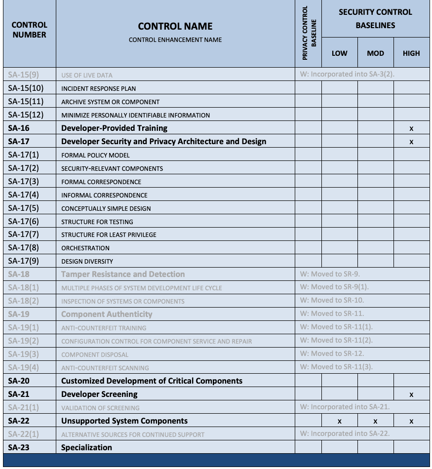
| 管理策番号 | 管理策名／管理策拡張名 | プライバシー管理策 | ベースライン | セキュリティ管理策 |
| ベースライン | ||||
| 低 | 中／高 | |||
| SA-15(9) | 実データの使用 | W: SA-3(2)に統合。 | ||
| SA-15(10) | インシデント対応計画 | |||
| SA-15(11) | システムまたはコンポーネントのアーカイブ | |||
| SA-15(12) | 個人識別情報の最小化 | |||
| SA-16 | 開発者提供の訓練 | x | ||
| SA-17 | 開発者によるセキュリティおよびプライバシーアーキテクチャと設計 | x | ||
| SA-17(1) | 形式的ポリシーモデル | |||
| SA-17(2) | セキュリティ関連コンポーネント | |||
| SA-17(3) | 形式的対応関係 | |||
| SA-17(4) | 非形式的対応関係 | |||
| SA-17(5) | 概念的に単純な設計 | |||
| SA-17(6) | テストのための構造 | |||
| SA-17(7) | 最小権限のための構造 | |||
| SA-17(8) | オーケストレーション | |||
| SA-17(9) | 設計の多様性 | |||
| SA-18 | 改ざん耐性および検出 | W: SR-9へ移動。 | ||
| SA-18(1) | システム開発ライフサイクルの複数段階 | W: SR-9(1)へ移動。 | ||
| SA-18(2) | システムまたはコンポーネントの検査 | W: SR-10へ移動。 | ||
| SA-19 | コンポーネントの真正性 | W: SR-11へ移動。 | ||
| SA-19(1) | 偽造防止訓練 | W: SR-11(1)へ移動。 | ||
| SA-19(2) | コンポーネントの保守および修理に関する構成管理 | W: SR-11(2)へ移動。 | ||
| SA-19(3) | コンポーネントの廃棄 | W: SR-12へ移動。 | ||
| SA-19(4) | 偽造品検査 | W: SR-11(3)へ移動。 | ||
| SA-20 | 重要コンポーネントのカスタム開発 | |||
| SA-21 | 開発者の審査 | x | ||
| SA-21(1) | 審査の妥当性確認 | W: SA-21に統合。 | ||
| SA-22 | サポート対象外のシステムコンポーネント | x | x / x | |
| SA-22(1) | 継続的なサポートのための代替供給元 | W: SA-22に統合。 | ||
| SA-23 | 専門化 |
原本の表画像

原本の表画像

CHAPTER THREE
第3章
未レビュー訳3.18 SYSTEM AND COMMUNICATIONS PROTECTION FAMILY
3.18 システムおよび通信の保護ファミリー
未レビュー訳Table 3-18 provides a summary of the controls and control enhancements assigned to the System and Communications Protection Family. The controls are allocated to the low-impact, moderate-impact, and high-impact security control baselines and the privacy control baseline, as appropriate. A control or control enhancement that has been withdrawn from the control catalog is indicated by a “W” and an explanation of the control or control enhancement disposition in light gray text.
表3-18は、システムおよび通信の保護ファミリーに割り当てられた管理策および管理策拡張の概要を示します。管理策は、該当する場合、低影響度、中影響度、高影響度のセキュリティ管理策ベースラインおよびプライバシー管理策ベースラインに割り当てられています。管理策カタログから撤回された管理策または管理策拡張には「W」が示され、当該管理策または管理策拡張の処置に関する説明が薄い灰色の文字で示されています。
未レビュー訳TABLE 3-18: SYSTEM AND COMMUNICATIONS PROTECTION FAMILY
表3-18：システムおよび通信の保護ファミリー
未レビュー訳| CONTROL NUMBER | CONTROL NAME CONTROL ENHANCEMENT NAME | LORTNOC YCAVIRP | ENILESAB | SECURITY CONTROL |
| BASELINES | ||||
| LOW | MOD / HIGH | |||
| SC-1 | Policy and Procedures | x | x / x | |
| SC-2 | Separation of System and User Functionality | x / x | ||
| SC-2(1) | INTERFACES FOR NON-PRIVILEGED USERS | |||
| SC-2(2) | DISASSOCIABILITY | |||
| SC-3 | Security Function Isolation | x | ||
| SC-3(1) | HARDWARE SEPARATION | |||
| SC-3(2) | ACCESS AND FLOW CONTROL FUNCTIONS | |||
| SC-3(3) | MINIMIZE NONSECURITY FUNCTIONALITY | |||
| SC-3(4) | MODULE COUPLING AND COHESIVENESS | |||
| SC-3(5) | LAYERED STRUCTURES | |||
| SC-4 | Information in Shared System Resources | x / x | ||
| SC-4(1) | SECURITY LEVELS | W: Incorporated into SC-4. | ||
| SC-4(2) | MULTILEVEL OR PERIODS PROCESSING | |||
| SC-5 | Denial-of-Service Protection | x | x / x | |
| SC-5(1) | RESTRICT ABILITY TO ATTACK OTHER SYSTEMS | |||
| SC-5(2) | CAPACITY, BANDWIDTH, AND REDUNDANCY | |||
| SC-5(3) | DETECTION AND MONITORING | |||
| SC-6 | Resource Availability | |||
| SC-7 | Boundary Protection | x | x / x | |
| SC-7(1) | PHYSICALLY SEPARATED SUBNETWORKS | W: Incorporated into SC-7. | ||
| SC-7(2) | PUBLIC ACCESS | W: Incorporated into SC-7. | ||
| SC-7(3) | ACCESS POINTS | x / x | ||
| SC-7(4) | EXTERNAL TELECOMMUNICATIONS SERVICES | x / x | ||
| SC-7(5) | DENY BY DEFAULT — ALLOW BY EXCEPTION | x / x | ||
| SC-7(6) | RESPONSE TO RECOGNIZED FAILURES | W: Incorporated into SC-7(18). | ||
| SC-7(7) | SPLIT TUNNELING FOR REMOTE DEVICES | x / x | ||
| SC-7(8) | ROUTE TRAFFIC TO AUTHENTICATED PROXY SERVERS | x / x | ||
| SC-7(9) | RESTRICT THREATENING OUTGOING COMMUNICATIONS TRAFFIC | |||
| SC-7(10) | PREVENT EXFILTRATION | |||
| SC-7(11) | RESTRICT INCOMING COMMUNICATIONS TRAFFIC | |||
| SC-7(12) | HOST-BASED PROTECTION | |||
| SC-7(13) | ISOLATION OF SECURITY TOOLS, MECHANISMS, AND SUPPORT COMPONENTS |
原本の表画像
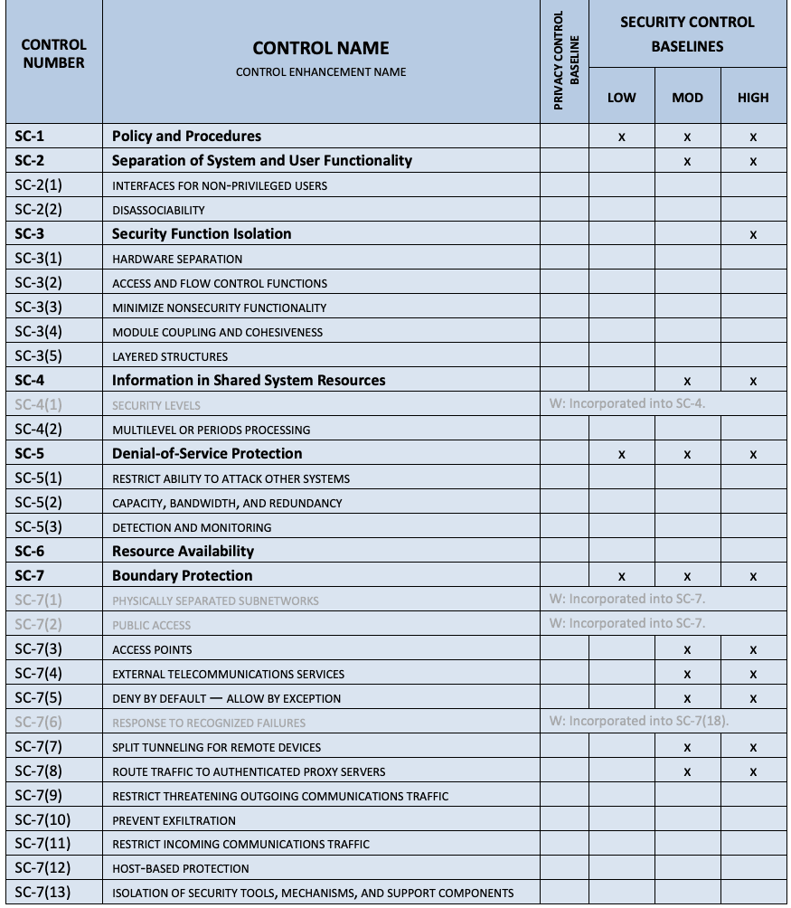
| 管理策番号 | 管理策名／管理策拡張名 | プライバシー管理策 | ベースライン | セキュリティ管理策 |
| ベースライン | ||||
| 低 | 中／高 | |||
| SC-1 | ポリシーおよび手順 | x | x / x | |
| SC-2 | システム機能とユーザー機能の分離 | x / x | ||
| SC-2(1) | 非特権ユーザー向けインターフェース | |||
| SC-2(2) | 関連付けの解除可能性 | |||
| SC-3 | セキュリティ機能の分離 | x | ||
| SC-3(1) | ハードウェア分離 | |||
| SC-3(2) | アクセス制御およびフロー制御機能 | |||
| SC-3(3) | 非セキュリティ機能の最小化 | |||
| SC-3(4) | モジュール間の結合および凝集性 | |||
| SC-3(5) | 階層構造 | |||
| SC-4 | 共有システムリソース内の情報 | x / x | ||
| SC-4(1) | セキュリティレベル | W: SC-4に統合。 | ||
| SC-4(2) | マルチレベル処理または期間別処理 | |||
| SC-5 | サービス拒否攻撃からの保護 | x | x / x | |
| SC-5(1) | 他のシステムを攻撃する能力の制限 | |||
| SC-5(2) | 容量、帯域幅、および冗長性 | |||
| SC-5(3) | 検出および監視 | |||
| SC-6 | リソース可用性 | |||
| SC-7 | 境界保護 | x | x / x | |
| SC-7(1) | 物理的に分離されたサブネットワーク | W: SC-7に統合。 | ||
| SC-7(2) | 公開アクセス | W: SC-7に統合。 | ||
| SC-7(3) | アクセスポイント | x / x | ||
| SC-7(4) | 外部電気通信サービス | x / x | ||
| SC-7(5) | デフォルトで拒否—例外により許可 | x / x | ||
| SC-7(6) | 認識された障害への対応 | W: SC-7(18)に統合。 | ||
| SC-7(7) | リモートデバイスのスプリットトンネリング | x / x | ||
| SC-7(8) | 認証済みプロキシサーバーへのトラフィックのルーティング | x / x | ||
| SC-7(9) | 脅威となる送信通信トラフィックの制限 | |||
| SC-7(10) | 持ち出しの防止 | |||
| SC-7(11) | 着信通信トラフィックの制限 | |||
| SC-7(12) | ホストベースの保護 | |||
| SC-7(13) | セキュリティツール、メカニズム、およびサポートコンポーネントの分離 |
原本の表画像

原本の表画像

CHAPTER THREE
第3章
未レビュー訳原本の表画像
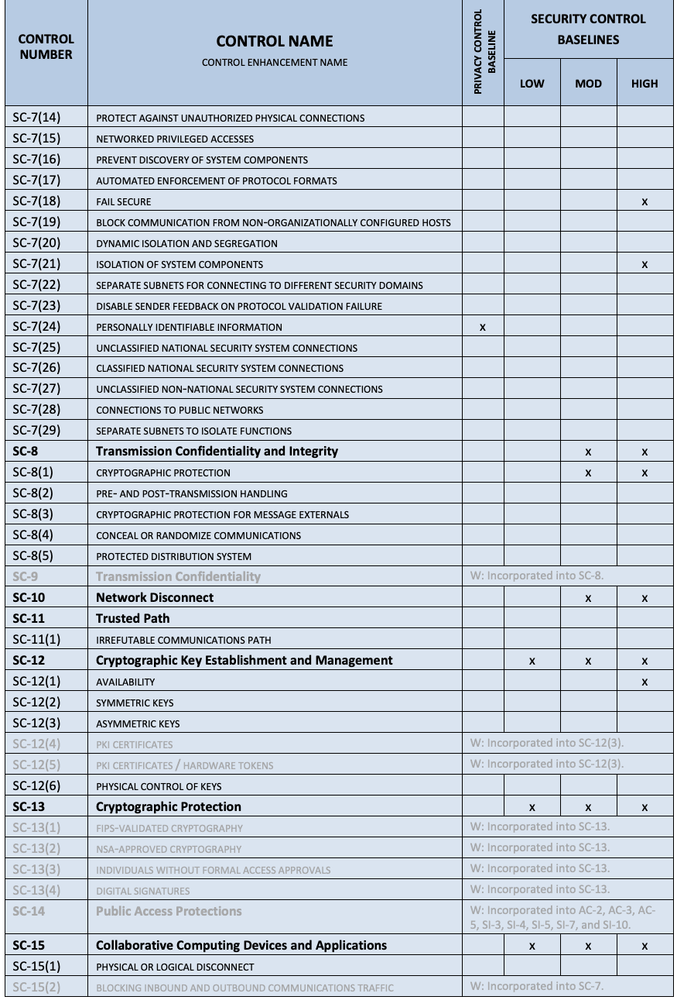
原本の表画像

原本の表画像

CHAPTER THREE
第3章
未レビュー訳原本の表画像
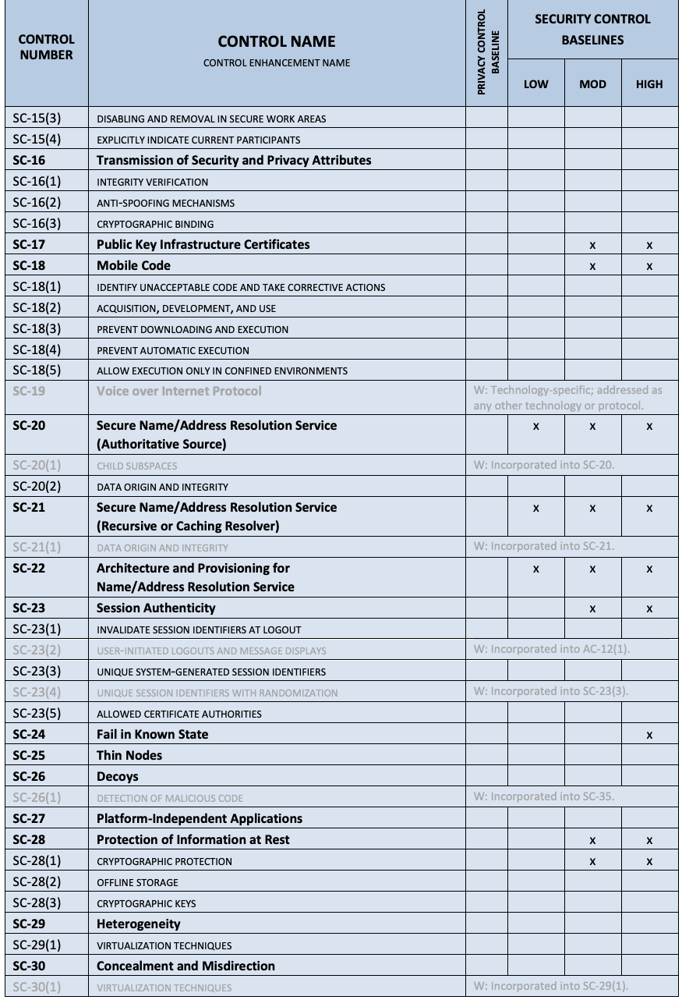
原本の表画像

原本の表画像

CHAPTER THREE
第3章
未レビュー訳| CONTROL NUMBER | CONTROL NAME CONTROL ENHANCEMENT NAME | LORTNOC YCAVIRP | ENILESAB | SECURITY CONTROL |
| BASELINES | ||||
| LOW | MOD / HIGH | |||
| SC-30(2) | RANDOMNESS | |||
| SC-30(3) | CHANGE PROCESSING AND STORAGE LOCATIONS | |||
| SC-30(4) | MISLEADING INFORMATION | |||
| SC-30(5) | CONCEALMENT OF SYSTEM COMPONENTS | |||
| SC-31 | Covert Channel Analysis | |||
| SC-31(1) | TEST COVERT CHANNELS FOR EXPLOITABILITY | |||
| SC-31(2) | MAXIMUM BANDWIDTH | |||
| SC-31(3) | MEASURE BANDWIDTH IN OPERATIONAL ENVIRONMENTS | |||
| SC-32 | System Partitioning | |||
| SC-32(1) | SEPARATE PHYSICAL DOMAINS FOR PRIVILEGED FUNCTIONS | |||
| SC-33 | Transmission Preparation Integrity | W: Incorporated into SC-8. | ||
| SC-34 | Non-Modifiable Executable Programs | |||
| SC-34(1) | NO WRITABLE STORAGE | |||
| SC-34(2) | INTEGRITY PROTECTION AND READ-ONLY MEDIA | |||
| SC-34(3) | HARDWARE-BASED PROTECTION | W: Moved to SC-51. | ||
| SC-35 | External Malicious Code Identification | |||
| SC-36 | Distributed Processing and Storage | |||
| SC-36(1) | POLLING TECHNIQUES | |||
| SC-36(2) | SYNCHRONIZATION | |||
| SC-37 | Out-of-Band Channels | |||
| SC-37(1) | ENSURE DELIVERY AND TRANSMISSION | |||
| SC-38 | Operations Security | |||
| SC-39 | Process Isolation | x | x / x | |
| SC-39(1) | HARDWARE SEPARATION | |||
| SC-39(2) | SEPARATE EXECUTION DOMAIN PER THREAD | |||
| SC-40 | Wireless Link Protection | |||
| SC-40(1) | ELECTROMAGNETIC INTERFERENCE | |||
| SC-40(2) | REDUCE DETECTION POTENTIAL | |||
| SC-40(3) | IMITATIVE OR MANIPULATIVE COMMUNICATIONS DECEPTION | |||
| SC-40(4) | SIGNAL PARAMETER IDENTIFICATION | |||
| SC-41 | Port and I/O Device Access | |||
| SC-42 | Sensor Capability and Data | |||
| SC-42(1) | REPORTING TO AUTHORIZED INDIVIDUALS OR ROLES | |||
| SC-42(2) | AUTHORIZED USE | |||
| SC-42(3) | PROHIBIT USE OF DEVICES | W: Incorporated into SC-42. | ||
| SC-42(4) | NOTICE OF COLLECTION | |||
| SC-42(5) | COLLECTION MINIMIZATION | |||
| SC-43 | Usage Restrictions | |||
| SC-44 | Detonation Chambers | |||
| SC-45 | System Time Synchronization | |||
| SC-45(1) | SYNCHRONIZATION WITH AUTHORITATIVE TIME SOURCE | |||
| SC-45(2) | SECONDARY AUTHORITATIVE TIME SOURCE |
原本の表画像
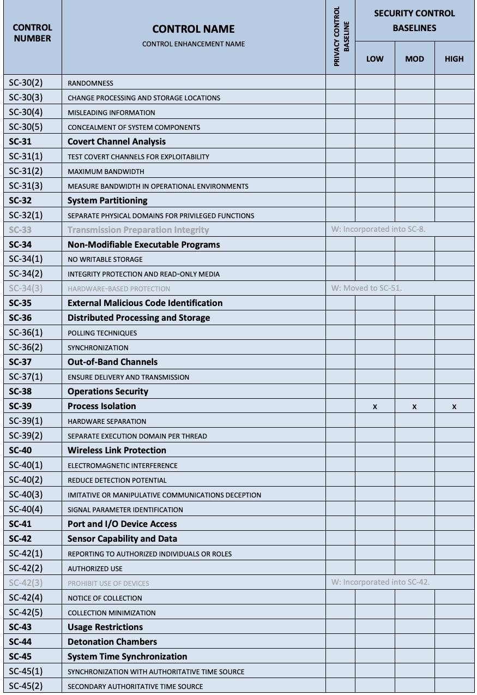
| 管理策番号 | 管理策名／管理策拡張名 | プライバシー管理策 | ベースライン | セキュリティ管理策 |
| ベースライン | ||||
| 低 | 中／高 | |||
| SC-30(2) | ランダム性 | |||
| SC-30(3) | 処理および保管場所の変更 | |||
| SC-30(4) | 偽情報 | |||
| SC-30(5) | システムコンポーネントの隠蔽 | |||
| SC-31 | 隠れチャネル分析 | |||
| SC-31(1) | 悪用可能性について隠れチャネルをテスト | |||
| SC-31(2) | 最大帯域幅 | |||
| SC-31(3) | 運用環境における帯域幅の測定 | |||
| SC-32 | システムの区画化 | |||
| SC-32(1) | 特権機能の物理ドメインの分離 | |||
| SC-33 | 伝送準備の完全性 | W: SC-8に統合。 | ||
| SC-34 | 変更不可能な実行可能プログラム | |||
| SC-34(1) | 書き込み可能な記憶領域なし | |||
| SC-34(2) | 完全性保護および読み取り専用メディア | |||
| SC-34(3) | ハードウェアベースの保護 | W: SC-51へ移動。 | ||
| SC-35 | 外部の悪意あるコードの識別 | |||
| SC-36 | 分散処理および保管 | |||
| SC-36(1) | ポーリング技法 | |||
| SC-36(2) | 同期 | |||
| SC-37 | 帯域外チャネル | |||
| SC-37(1) | 配信および伝送の保証 | |||
| SC-38 | 運用セキュリティ | |||
| SC-39 | プロセス分離 | x | x / x | |
| SC-39(1) | ハードウェア分離 | |||
| SC-39(2) | スレッドごとの実行ドメインの分離 | |||
| SC-40 | 無線リンクの保護 | |||
| SC-40(1) | 電磁干渉 | |||
| SC-40(2) | 検出可能性の低減 | |||
| SC-40(3) | 模倣的または操作的な通信欺瞞 | |||
| SC-40(4) | 信号パラメーターの識別 | |||
| SC-41 | ポートおよびI/Oデバイスへのアクセス | |||
| SC-42 | センサー機能およびデータ | |||
| SC-42(1) | 許可された個人または役割への報告 | |||
| SC-42(2) | 許可された使用 | |||
| SC-42(3) | デバイスの使用禁止 | W: SC-42に統合。 | ||
| SC-42(4) | 収集の通知 | |||
| SC-42(5) | 収集の最小化 | |||
| SC-43 | 使用制限 | |||
| SC-44 | デトネーションチャンバー | |||
| SC-45 | システム時刻の同期 | |||
| SC-45(1) | 権威ある時刻源との同期 | |||
| SC-45(2) | 二次権威時刻源 |
原本の表画像

原本の表画像

CHAPTER THREE
第3章
未レビュー訳| CONTROL NUMBER | CONTROL NAME CONTROL ENHANCEMENT NAME | LORTNOC YCAVIRP | ENILESAB | SECURITY CONTROL |
| BASELINES | ||||
| LOW | MOD / HIGH | |||
| SC-46 | Cross Domain Policy Enforcement | |||
| SC-47 | Alternate Communications Paths | |||
| SC-48 | Sensor Relocation | |||
| SC-48(1) | DYNAMIC RELOCATION OF SENSORS OR MONITORING CAPABILITIES | |||
| SC-49 | Hardware-Enforced Separation and Policy Enforcement | |||
| SC-50 | Software-Enforced Separation and Policy Enforcement | |||
| SC-51 | Hardware-Based Protection |
原本の表画像
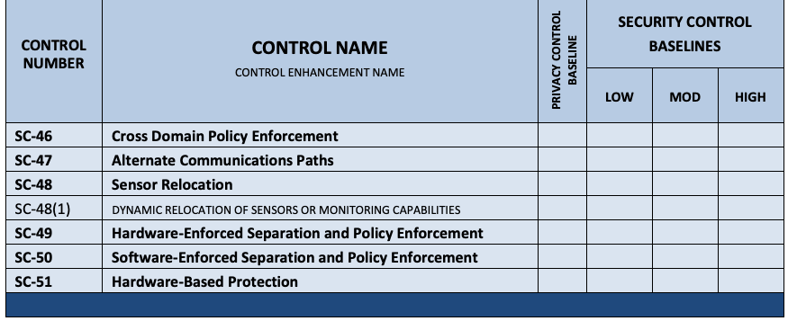
| 管理策番号 | 管理策名／管理策拡張名 | プライバシー管理策 | ベースライン | セキュリティ管理策 |
| ベースライン | ||||
| 低 | 中／高 | |||
| SC-46 | クロスドメインポリシーの適用 | |||
| SC-47 | 代替通信経路 | |||
| SC-48 | センサーの移設 | |||
| SC-48(1) | センサーまたは監視機能の動的な移設 | |||
| SC-49 | ハードウェアによる分離およびポリシー適用 | |||
| SC-50 | ソフトウェアによる分離およびポリシー適用 | |||
| SC-51 | ハードウェアベースの保護 |
原本の表画像

原本の表画像

CHAPTER THREE
第3章
未レビュー訳3.19 SYSTEM AND INFORMATION INTEGRITY FAMILY
3.19 システムおよび情報完全性ファミリー
未レビュー訳Table 3-19 provides a summary of the controls and control enhancements assigned to the System and Information Integrity Family. The controls are allocated to the low-impact, moderate-impact, and high-impact security control baselines and the privacy control baseline, as appropriate. A control or control enhancement that has been withdrawn from the control catalog is indicated by a “W” and an explanation of the control or control enhancement disposition in light gray text.
表3-19は、システムおよび情報完全性ファミリーに割り当てられた管理策および管理策拡張の概要を示します。管理策は、該当する場合、低影響度、中影響度、高影響度のセキュリティ管理策ベースラインおよびプライバシー管理策ベースラインに割り当てられています。管理策カタログから撤回された管理策または管理策拡張には「W」が示され、当該管理策または管理策拡張の処置に関する説明が薄い灰色の文字で示されています。
未レビュー訳TABLE 3-19: SYSTEM AND INFORMATION INTEGRITY FAMILY
表3-19：システムおよび情報完全性ファミリー
未レビュー訳| CONTROL NUMBER | CONTROL NAME CONTROL ENHANCEMENT NAME | LORTNOC YCAVIRP | ENILESAB | SECURITY CONTROL |
| BASELINES | ||||
| LOW | MOD / HIGH | |||
| SI-1 | Policy and Procedures | x | x | x / x |
| SI-2 | Flaw Remediation | x | x / x | |
| SI-2(1) | CENTRAL MANAGEMENT | W: Incorporated into PL-9. | ||
| SI-2(2) | AUTOMATED FLAW REMEDIATION STATUS | x / x | ||
| SI-2(3) | TIME TO REMEDIATE FLAWS AND BENCHMARKS FOR CORRECTIVE ACTIONS | |||
| SI-2(4) | AUTOMATED PATCH MANAGEMENT TOOLS | |||
| SI-2(5) | AUTOMATIC SOFTWARE AND FIRMWARE UPDATES | |||
| SI-2(6) | REMOVAL OF PREVIOUS VERSIONS OF SOFTWARE AND FIRMWARE | |||
| SI-3 | Malicious Code Protection | x | x / x | |
| SI-3(1) | CENTRAL MANAGEMENT | W: Incorporated into PL-9. | ||
| SI-3(2) | AUTOMATIC UPDATES | W: Incorporated into SI-3. | ||
| SI-3(3) | NON-PRIVILEGED USERS | W: Incorporated into AC-6(10). | ||
| SI-3(4) | UPDATES ONLY BY PRIVILEGED USERS | |||
| SI-3(5) | PORTABLE STORAGE DEVICES | W: Incorporated into MP-7. | ||
| SI-3(6) | TESTING AND VERIFICATION | |||
| SI-3(7) | NONSIGNATURE-BASED DETECTION | W: Incorporated into SI-3. | ||
| SI-3(8) | DETECT UNAUTHORIZED COMMANDS | |||
| SI-3(9) | AUTHENTICATE REMOTE COMMANDS | W: Moved to AC-17(10). | ||
| SI-3(10) | MALICIOUS CODE ANALYSIS | |||
| SI-4 | System Monitoring | x | x / x | |
| SI-4(1) | SYSTEM-WIDE INTRUSION DETECTION SYSTEM | |||
| SI-4(2) | AUTOMATED TOOLS AND MECHANISMS FOR REAL-TIME ANALYSIS | x / x | ||
| SI-4(3) | AUTOMATED TOOL AND MECHANISM INTEGRATION | |||
| SI-4(4) | INBOUND AND OUTBOUND COMMUNICATIONS TRAFFIC | x / x | ||
| SI-4(5) | SYSTEM-GENERATED ALERTS | x / x | ||
| SI-4(6) | RESTRICT NON-PRIVILEGED USERS | W: Incorporated into AC-6(10). | ||
| SI-4(7) | AUTOMATED RESPONSE TO SUSPICIOUS EVENTS | |||
| SI-4(8) | PROTECTION OF MONITORING INFORMATION | W: Incorporated into SI-4. | ||
| SI-4(9) | TESTING OF MONITORING TOOLS AND MECHANISMS | |||
| SI-4(10) | VISIBILITY OF ENCRYPTED COMMUNICATIONS | x | ||
| SI-4(11) | ANALYZE COMMUNICATIONS TRAFFIC ANOMALIES | |||
| SI-4(12) | AUTOMATED ORGANIZATION-GENERATED ALERTS | x |
原本の表画像
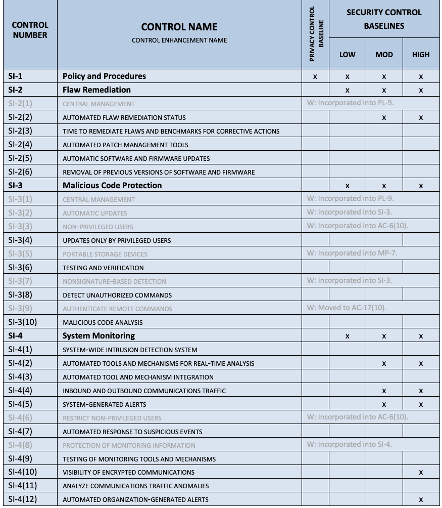
| 管理策番号 | 管理策名／管理策拡張名 | プライバシー管理策 | ベースライン | セキュリティ管理策 |
| ベースライン | ||||
| 低 | 中／高 | |||
| SI-1 | ポリシーおよび手順 | x | x | x / x |
| SI-2 | 欠陥の修正 | x | x / x | |
| SI-2(1) | 一元管理 | W: PL-9に統合。 | ||
| SI-2(2) | 欠陥修正状況の自動化 | x / x | ||
| SI-2(3) | 欠陥修正までの時間および是正措置のベンチマーク | |||
| SI-2(4) | パッチ管理ツールの自動化 | |||
| SI-2(5) | ソフトウェアおよびファームウェアの自動更新 | |||
| SI-2(6) | 旧バージョンのソフトウェアおよびファームウェアの削除 | |||
| SI-3 | 悪意のあるコードからの保護 | x | x / x | |
| SI-3(1) | 一元管理 | W: PL-9に統合。 | ||
| SI-3(2) | 自動更新 | W: SI-3に統合。 | ||
| SI-3(3) | 非特権ユーザー | W: AC-6(10)に統合。 | ||
| SI-3(4) | 特権ユーザーのみによる更新 | |||
| SI-3(5) | 可搬型記憶装置 | W: MP-7に統合。 | ||
| SI-3(6) | テストおよび検証 | |||
| SI-3(7) | シグネチャに依存しない検出 | W: SI-3に統合。 | ||
| SI-3(8) | 無許可コマンドの検出 | |||
| SI-3(9) | リモートコマンドの認証 | W: AC-17(10)へ移動。 | ||
| SI-3(10) | 悪意のあるコードの分析 | |||
| SI-4 | システム監視 | x | x / x | |
| SI-4(1) | システム全体の侵入検知システム | |||
| SI-4(2) | リアルタイム分析のための自動化ツールおよびメカニズム | x / x | ||
| SI-4(3) | ツールおよびメカニズムの自動統合 | |||
| SI-4(4) | 着信および発信通信トラフィック | x / x | ||
| SI-4(5) | システム生成アラート | x / x | ||
| SI-4(6) | 非特権ユーザーの制限 | W: AC-6(10)に統合。 | ||
| SI-4(7) | 不審な事象への自動対応 | |||
| SI-4(8) | 監視情報の保護 | W: SI-4に統合。 | ||
| SI-4(9) | 監視ツールおよびメカニズムのテスト | |||
| SI-4(10) | 暗号化通信の可視性 | x | ||
| SI-4(11) | 通信トラフィックの異常の分析 | |||
| SI-4(12) | 組織が生成するアラートの自動化 | x |
原本の表画像
原本の表画像

CHAPTER THREE
第3章
未レビュー訳原本の表画像
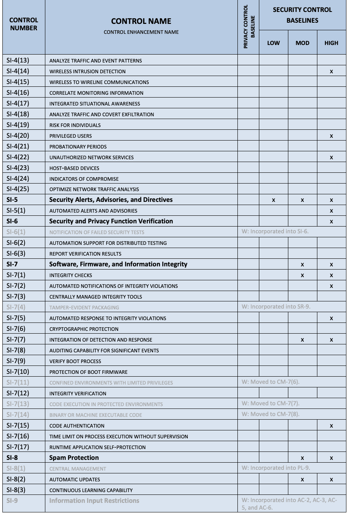
原本の表画像

原本の表画像

CHAPTER THREE
第3章
未レビュー訳| CONTROL NUMBER | CONTROL NAME CONTROL ENHANCEMENT NAME | LORTNOC YCAVIRP | ENILESAB | SECURITY CONTROL |
| BASELINES | ||||
| LOW | MOD / HIGH | |||
| SI-10 | Information Input Validation | x / x | ||
| SI-10(1) | MANUAL OVERRIDE CAPABILITY | |||
| SI-10(2) | REVIEW AND RESOLVE ERRORS | |||
| SI-10(3) | PREDICTABLE BEHAVIOR | |||
| SI-10(4) | TIMING INTERACTIONS | |||
| SI-10(5) | RESTRICT INPUTS TO TRUSTED SOURCES AND APPROVED FORMATS | |||
| SI-10(6) | INJECTION PREVENTION | |||
| SI-11 | Error Handling | x / x | ||
| SI-12 | Information Management and Retention | x | x | x / x |
| SI-12(1) | LIMIT PERSONALLY IDENTIFIABLE INFORMATION ELEMENTS | x | ||
| SI-12(2) / SI-12(2) | MINIMIZE PERSONALLY IDENTIFIABLE INFORMATION IN TESTING, TRAINING, | x / x | ||
| AND RESEARCH | ||||
| SI-12(3) | INFORMATION DISPOSAL | x | ||
| SI-13 | Predictable Failure Prevention | |||
| SI-13(1) | TRANSFERRING COMPONENT RESPONSIBILITIES | |||
| SI-13(2) | TIME LIMIT ON PROCESS EXECUTION WITHOUT SUPERVISION | W: Incorporated into SI-7(16). | ||
| SI-13(3) | MANUAL TRANSFER BETWEEN COMPONENTS | |||
| SI-13(4) | STANDBY COMPONENT INSTALLATION AND NOTIFICATION | |||
| SI-13(5) | FAILOVER CAPABILITY | |||
| SI-14 | Non-Persistence | |||
| SI-14(1) | REFRESH FROM TRUSTED SOURCES | |||
| SI-14(2) | NON-PERSISTENT INFORMATION | |||
| SI-14(3) | NON-PERSISTENT CONNECTIVITY | |||
| SI-15 | Information Output Filtering | |||
| SI-16 | Memory Protection | x / x | ||
| SI-17 | Fail-Safe Procedures | |||
| SI-18 | Personally Identifiable Information Quality Operations | x | ||
| SI-18(1) | AUTOMATION SUPPORT | |||
| SI-18(2) | DATA TAGS | |||
| SI-18(3) | COLLECTION | |||
| SI-18(4) | INDIVIDUAL REQUESTS | x | ||
| SI-18(5) | NOTICE OF CORRECTION OR DELETION | |||
| SI-19 | De-identification | x | ||
| SI-19(1) | COLLECTION | |||
| SI-19(2) | ARCHIVING | |||
| SI-19(3) | RELEASE | |||
| SI-19(4) / SI-19(4) | REMOVAL, MASKING, ENCRYPTION, HASHING, OR REPLACEMENT OF DIRECT | |||
| IDENTIFIERS | ||||
| SI-19(5) | STATISTICAL DISCLOSURE CONTROL | |||
| SI-19(6) | DIFFERENTIAL PRIVACY | |||
| SI-19(7) | VALIDATED ALGORITHMS AND SOFTWARE | |||
| SI-19(8) | MOTIVATED INTRUDER | |||
| SI-20 | Tainting |
原本の表画像
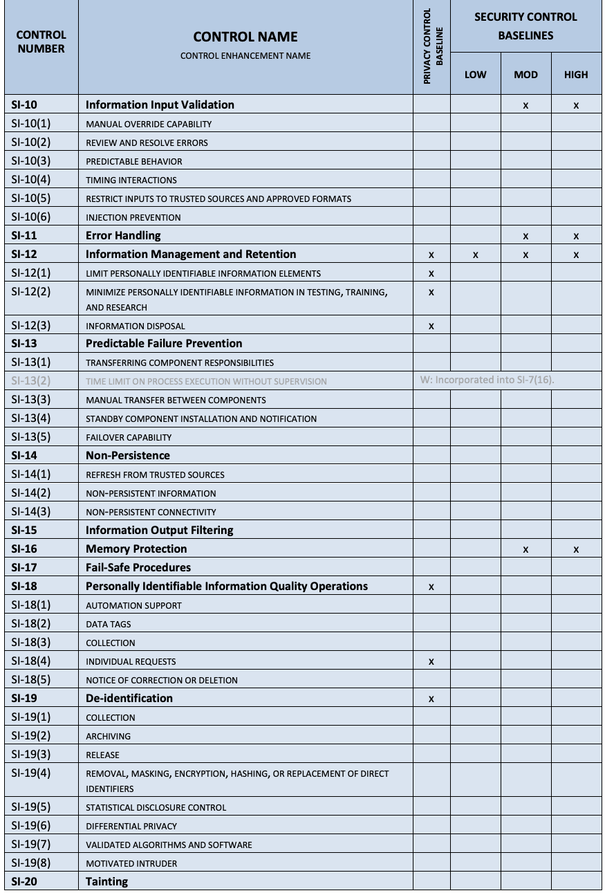
| 管理策番号 | 管理策名／管理策拡張名 | プライバシー管理策 | ベースライン | セキュリティ管理策 |
| ベースライン | ||||
| 低 | 中／高 | |||
| SI-10 | 情報入力の検証 | x / x | ||
| SI-10(1) | 手動オーバーライド機能 | |||
| SI-10(2) | エラーのレビューおよび解決 | |||
| SI-10(3) | 予測可能な動作 | |||
| SI-10(4) | タイミングの相互作用 | |||
| SI-10(5) | 信頼された情報源および承認済み形式に入力を制限 | |||
| SI-10(6) | インジェクションの防止 | |||
| SI-11 | エラー処理 | x / x | ||
| SI-12 | 情報の管理および保持 | x | x | x / x |
| SI-12(1) | 個人識別情報の要素の制限 | x | ||
| SI-12(2) / SI-12(2) | テストおよび訓練における個人識別情報の最小化 | x / x | ||
| および研究 | ||||
| SI-12(3) | 情報の廃棄 | x | ||
| SI-13 | 予測可能な障害の防止 | |||
| SI-13(1) | コンポーネント責任の移転 | |||
| SI-13(2) | 監視なしでのプロセス実行時間の制限 | W: SI-7(16)に統合。 | ||
| SI-13(3) | コンポーネント間の手動移転 | |||
| SI-13(4) | 待機コンポーネントの設置および通知 | |||
| SI-13(5) | フェイルオーバー機能 | |||
| SI-14 | 非永続性 | |||
| SI-14(1) | 信頼された情報源からの更新 | |||
| SI-14(2) | 非永続情報 | |||
| SI-14(3) | 非永続接続 | |||
| SI-15 | 情報出力のフィルタリング | |||
| SI-16 | メモリ保護 | x / x | ||
| SI-17 | フェイルセーフ手順 | |||
| SI-18 | 個人識別情報の品質管理運用 | x | ||
| SI-18(1) | 自動化支援 | |||
| SI-18(2) | データタグ | |||
| SI-18(3) | 収集 | |||
| SI-18(4) | 個人からの要求 | x | ||
| SI-18(5) | 訂正または削除の通知 | |||
| SI-19 | 非識別化 | x | ||
| SI-19(1) | 収集 | |||
| SI-19(2) | アーカイブ化 | |||
| SI-19(3) | 公開 | |||
| SI-19(4) / SI-19(4) | 直接識別子の削除、マスキング、暗号化、ハッシュ化、または置換 | |||
| 識別子 | ||||
| SI-19(5) | 統計的開示制御 | |||
| SI-19(6) | 差分プライバシー | |||
| SI-19(7) | 検証済みアルゴリズムおよびソフトウェア | |||
| SI-19(8) | 動機を持つ侵入者 | |||
| SI-20 | 汚染付与 |
原本の表画像

原本の表画像

CHAPTER THREE
第3章
未レビュー訳| CONTROL NUMBER | CONTROL NAME CONTROL ENHANCEMENT NAME | LORTNOC YCAVIRP | ENILESAB | SECURITY CONTROL |
| BASELINES | ||||
| LOW | MOD / HIGH | |||
| SI-21 | Information Refresh | |||
| SI-22 | Information Diversity | |||
| SI-23 | Information Fragmentation |
原本の表画像
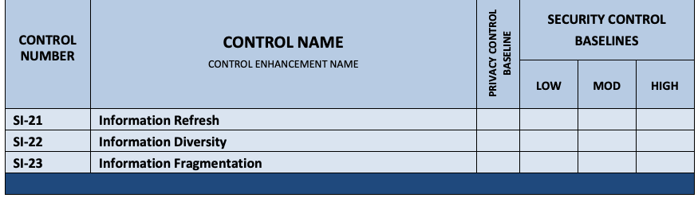
| 管理策番号 | 管理策名／管理策拡張名 | プライバシー管理策 | ベースライン | セキュリティ管理策 |
| ベースライン | ||||
| 低 | 中／高 | |||
| SI-21 | 情報の更新 | |||
| SI-22 | 情報の多様性 | |||
| SI-23 | 情報の断片化 |
原本の表画像

原本の表画像

CHAPTER THREE
第3章
未レビュー訳3.20 SUPPLY CHAIN RISK MANAGEMENT FAMILY
3.20 サプライチェーンリスク管理ファミリー
未レビュー訳Table 3-20 provides a summary of the controls and control enhancements assigned to the Supply Chain Risk Management Family. The controls are allocated to the low-impact, moderate-impact, and high-impact security control baselines and the privacy control baseline, as appropriate. A control or control enhancement that has been withdrawn from the control catalog is indicated by a “W” and an explanation of the control or control enhancement disposition in light gray text.
表3-20は、サプライチェーンリスク管理ファミリーに割り当てられた管理策および管理策拡張の概要を示します。管理策は、該当する場合、低影響度、中影響度、高影響度のセキュリティ管理策ベースラインおよびプライバシー管理策ベースラインに割り当てられています。管理策カタログから撤回された管理策または管理策拡張には「W」が示され、当該管理策または管理策拡張の処置に関する説明が薄い灰色の文字で示されています。
未レビュー訳TABLE 3-20: SUPPLY CHAIN RISK MANAGEMENT FAMILY
表3-20：サプライチェーンリスク管理ファミリー
未レビュー訳| CONTROL NUMBER | CONTROL NAME CONTROL ENHANCEMENT NAME | LORTNOC YCAVIRP | ENILESAB | SECURITY CONTROL |
| BASELINES | ||||
| LOW | MOD / HIGH | |||
| SR-1 | Policy and Procedures | x | x / x | |
| SR-2 | Supply Chain Risk Management Plan | x | x / x | |
| SR-2(1) | ESTABLISH SCRM TEAM | x | x / x | |
| SR-3 | Supply Chain Controls and Processes | x | x / x | |
| SR-3(1) | DIVERSE SUPPLY BASE | |||
| SR-3(2) | LIMITATION OF HARM | |||
| SR-3(3) | SUB-TIER FLOW DOWN | |||
| SR-4 | Provenance | |||
| SR-4(1) | IDENTITY | |||
| SR-4(2) | TRACK AND TRACE | |||
| SR-4(3) | VALIDATE AS GENUINE AND NOT ALTERED | |||
| SR-4(4) | SUPPLY CHAIN INTEGRITY — PEDIGREE | |||
| SR-5 | Acquisition Strategies, Tools, and Methods | x | x / x | |
| SR-5(1) | ADEQUATE SUPPLY | |||
| SR-5(2) | ASSESSMENTS PRIOR TO SELECTION, ACCEPTANCE, MODIFICATION, OR UPDATE | |||
| SR-6 | Supplier Assessments and Reviews | x / x | ||
| SR-6(1) | TESTING AND ANALYSIS | |||
| SR-7 | Supply Chain Operations Security | |||
| SR-8 | Notification Agreements | x | x / x | |
| SR-9 | Tamper Resistance and Detection | x | ||
| SR-9(1) | MULTIPLE STAGES OF SYSTEM DEVELOPMENT LIFE CYCLE | x | ||
| SR-10 | Inspection of Systems or Components | x | x / x | |
| SR-11 | Component Authenticity | x | x / x | |
| SR-11(1) | ANTI-COUNTERFEIT TRAINING | x | x / x | |
| SR-11(2) | CONFIGURATION CONTROL FOR COMPONENT SERVICE AND REPAIR | x | x / x | |
| SR-11(3) | ANTI-COUNTERFEIT SCANNING | |||
| SR-12 | COMPONENT DISPOSAL | x | x / x |
原本の表画像
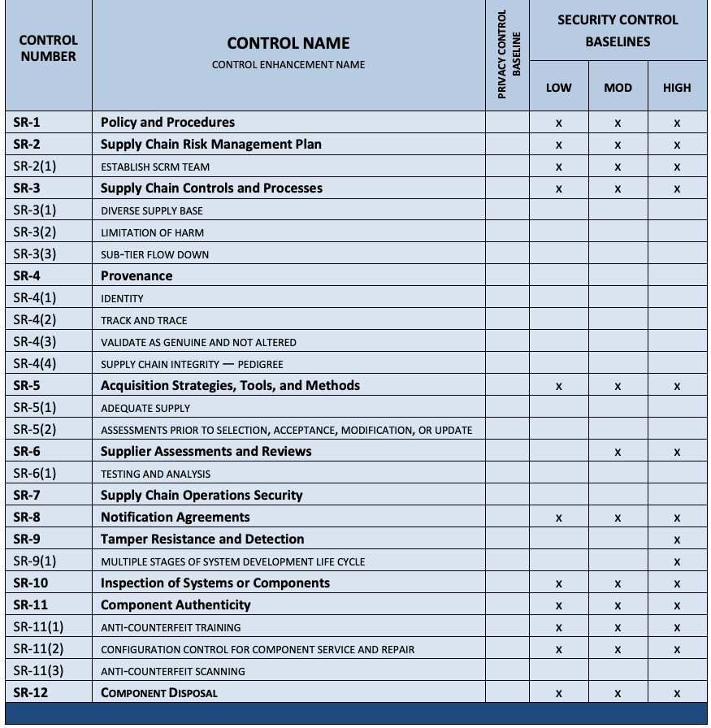
| 管理策番号 | 管理策名／管理策拡張名 | プライバシー管理策 | ベースライン | セキュリティ管理策 |
| ベースライン | ||||
| 低 | 中／高 | |||
| SR-1 | ポリシーおよび手順 | x | x / x | |
| SR-2 | サプライチェーンリスク管理計画 | x | x / x | |
| SR-2(1) | SCRMチームの設置 | x | x / x | |
| SR-3 | サプライチェーン管理策およびプロセス | x | x / x | |
| SR-3(1) | 多様な供給基盤 | |||
| SR-3(2) | 被害の限定 | |||
| SR-3(3) | 下位階層への要求事項の伝達 | |||
| SR-4 | 来歴 | |||
| SR-4(1) | 識別情報 | |||
| SR-4(2) | 追跡およびトレース | |||
| SR-4(3) | 真正性および非改ざんの検証 | |||
| SR-4(4) | サプライチェーン完全性—系譜 | |||
| SR-5 | 取得戦略、ツール、および方法 | x | x / x | |
| SR-5(1) | 十分な供給 | |||
| SR-5(2) | 選定、受け入れ、変更、または更新前の評価 | |||
| SR-6 | 供給者の評価およびレビュー | x / x | ||
| SR-6(1) | テストおよび分析 | |||
| SR-7 | サプライチェーン運用セキュリティ | |||
| SR-8 | 通知合意 | x | x / x | |
| SR-9 | 改ざん耐性および検出 | x | ||
| SR-9(1) | システム開発ライフサイクルの複数段階 | x | ||
| SR-10 | システムまたはコンポーネントの検査 | x | x / x | |
| SR-11 | コンポーネントの真正性 | x | x / x | |
| SR-11(1) | 偽造防止訓練 | x | x / x | |
| SR-11(2) | コンポーネントの保守および修理に関する構成管理 | x | x / x | |
| SR-11(3) | 偽造品検査 | |||
| SR-12 | コンポーネントの廃棄 | x | x / x |
原本の表画像

原本の表画像

CHAPTER THREE
第3章
未レビュー訳REFERENCES
参考文献
未レビュー訳LAWS, POLICIES, INSTRUCTIONS, STANDARDS, GUIDELINES, AND INTERNAL REPORTS
法律、ポリシー、指示書、標準、ガイドライン、および内部報告書
未レビュー訳原本の表画像

[FISMA]
[FISMA]
未レビュー訳Federal Information Security Modernization Act (P.L. 113-283), December 2014. https://www.congress.gov/113/plaws/publ283/PLAW-113publ283.pdf
連邦情報セキュリティ近代化法（P.L. 113-283）、2014年12月。https://www.congress.gov/113/plaws/publ283/PLAW-113publ283.pdf
未レビュー訳[FOIA96]
[FOIA96]
未レビュー訳Freedom of Information Act (FOIA), 5 U.S.C. § 552, As Amended By Public Law No. 104-231, 110 Stat. 3048, Electronic Freedom of Information Act Amendments of 1996. https://www.govinfo.gov/content/pkg/PLAW-104publ231/pdf/PLAW-104publ231.pdf
情報自由法（FOIA）、合衆国法典第5編 § 552。公法第104-231号（110 Stat. 3048）により改正。1996年電子情報自由法改正。https://www.govinfo.gov/content/pkg/PLAW-104publ231/pdf/PLAW-104publ231.pdf
未レビュー訳[PRIVACT]
[PRIVACT]
未レビュー訳Privacy Act (P.L. 93-579), December 1974. https://www.govinfo.gov/content/pkg/STATUTE-88/pdf/STATUTE-88-Pg1896.pdf
プライバシー法（P.L. 93-579）、1974年12月。https://www.govinfo.gov/content/pkg/STATUTE-88/pdf/STATUTE-88-Pg1896.pdf
未レビュー訳[44 USC 3552] Title 44 U.S. Code, Sec. 3552, Definitions. 2017 ed.
[44 USC 3552] 合衆国法典第44編、第3552条「定義」。2017年版。
未レビュー訳https://www.govinfo.gov/app/details/USCODE-2017-title44/USCODE-2017-title44-chap35-subchapII-sec3552
https://www.govinfo.gov/app/details/USCODE-2017-title44/USCODE-2017-title44-chap35-subchapII-sec3552
未レビュー訳原本の表画像

[CNSSI 1253] Committee on National Security Systems Instruction No. 1253, Security
[CNSSI 1253] 国家安全保障システム委員会指示書第1253号「国家安全保障システムのセキュリティ分類および管理策の選択」
未レビュー訳Categorization and Control Selection for National Security Systems, March 2014. https://www.cnss.gov/CNSS/issuances/Instructions.cfm
、2014年3月。https://www.cnss.gov/CNSS/issuances/Instructions.cfm
未レビュー訳[CNSSP 22] Committee on National Security Systems Policy No. 22, Cybersecurity Risk
[CNSSP 22] 国家安全保障システム委員会ポリシー第22号「サイバーセキュリティリスク管理ポリシー」
未レビュー訳Management Policy, August 2016. https://www.cnss.gov/CNSS/issuances/Policies.cfm
、2016年8月。https://www.cnss.gov/CNSS/issuances/Policies.cfm
未レビュー訳[DODI 8510.01] Department of Defense Instruction 8510.01, Risk Management Framework (RMF) for DoD Information Technology (IT), March 2014.
[DODI 8510.01] 国防総省指示書8510.01「国防総省情報技術（IT）のリスク管理フレームワーク（RMF）」、2014年3月。
未レビュー訳https://www.esd.whs.mil/Portals/54/Documents/DD/issuances/dodi/851001p.pdf ?ver=2019-02-26-101520-300
https://www.esd.whs.mil/Portals/54/Documents/DD/issuances/dodi/851001p.pdf ?ver=2019-02-26-101520-300
未レビュー訳[OMB A-130] Office of Management and Budget Memorandum Circular A-130, Managing Information as a Strategic Resource, July 2016.
[OMB A-130] 行政管理予算局（OMB）回状A-130「戦略的資源としての情報管理」、2016年7月。
未レビュー訳https://www.whitehouse.gov/sites/whitehouse.gov/files/omb/circulars/A130/a13 0revised.pdf
https://www.whitehouse.gov/sites/whitehouse.gov/files/omb/circulars/A130/a13 0revised.pdf
未レビュー訳原本の表画像

[FIPS 199]
[FIPS 199]
未レビュー訳National Institute of Standards and Technology (2004) Standards for Security Categorization of Federal Information and Information Systems. (U.S. Department of Commerce, Washington, D.C.), Federal Information Processing Standards Publication (FIPS) 199. https://doi.org/10.6028/NIST.FIPS.199
米国国立標準技術研究所（2004年）「連邦政府の情報および情報システムのセキュリティ分類に関する標準」。（米国商務省、ワシントンD.C.）、連邦情報処理標準出版物（FIPS）199。https://doi.org/10.6028/NIST.FIPS.199
未レビュー訳REFERENCES
参考文献
未レビュー訳[FIPS 200]
[FIPS 200]
未レビュー訳National Institute of Standards and Technology (2006) Minimum Security Requirements for Federal Information and Information Systems. (U.S. Department of Commerce, Washington, D.C.), Federal Information Processing Standards Publication (FIPS) 200. https://doi.org/10.6028/NIST.FIPS.200
米国国立標準技術研究所（2006年）「連邦政府の情報および情報システムに対する最低限のセキュリティ要件」。（米国商務省、ワシントンD.C.）、連邦情報処理標準出版物（FIPS）200。https://doi.org/10.6028/NIST.FIPS.200
未レビュー訳[SP 800-18] Swanson MA, Hash J, Bowen P (2006) Guide for Developing Security Plans
[SP 800-18] Swanson MA, Hash J, Bowen P（2006年）「連邦情報システムのセキュリティ計画策定ガイド」
未レビュー訳for Federal Information Systems. (National Institute of Standards and Technology, Gaithersburg, MD), NIST Special Publication (SP) 800-18, Rev. 1. https://doi.org/10.6028/NIST.SP.800-18r1
。（米国国立標準技術研究所、メリーランド州ゲイサーズバーグ）、NIST特別刊行物（SP）800-18、改訂第1版。https://doi.org/10.6028/NIST.SP.800-18r1
未レビュー訳[SP 800-30] Joint Task Force Transformation Initiative (2012) Guide for Conducting Risk Assessments. (National Institute of Standards and Technology, Gaithersburg, MD), NIST Special Publication (SP) 800-30, Rev. 1.
[SP 800-30] Joint Task Force Transformation Initiative（2012年）「リスク評価実施ガイド」。（米国国立標準技術研究所、メリーランド州ゲイサーズバーグ）、NIST特別刊行物（SP）800-30、改訂第1版。
未レビュー訳https://doi.org/10.6028/NIST.SP.800-30r1
https://doi.org/10.6028/NIST.SP.800-30r1
未レビュー訳[SP 800-37] Joint Task Force (2018) Risk Management Framework for Information
[SP 800-37] Joint Task Force（2018年）「情報システムおよび組織のリスク管理フレームワーク：セキュリティおよびプライバシーのためのシステムライフサイクルアプローチ」
未レビュー訳Systems and Organizations: A System Life Cycle Approach for Security and Privacy. (National Institute of Standards and Technology, Gaithersburg, MD), NIST Special Publication (SP) 800-37, Rev. 2. https://doi.org/10.6028/NIST.SP.800-37r2
。（米国国立標準技術研究所、メリーランド州ゲイサーズバーグ）、NIST特別刊行物（SP）800-37、改訂第2版。https://doi.org/10.6028/NIST.SP.800-37r2
未レビュー訳[SP 800-39] Joint Task Force Transformation Initiative (2011) Managing Information
[SP 800-39] Joint Task Force Transformation Initiative（2011年）「情報セキュリティリスクの管理：組織、任務、および情報システムの視点」
未レビュー訳Security Risk: Organization, Mission, and Information System View. (National Institute of Standards and Technology, Gaithersburg, MD), NIST Special Publication (SP) 800-39. https://doi.org/10.6028/NIST.SP.800-39
。（米国国立標準技術研究所、メリーランド州ゲイサーズバーグ）、NIST特別刊行物（SP）800-39。https://doi.org/10.6028/NIST.SP.800-39
未レビュー訳[SP 800-53] Joint Task Force (2020) Security and Privacy Controls for Information Systems and Organizations. (National Institute of Standards and
[SP 800-53] Joint Task Force（2020年）「情報システムおよび組織のセキュリティおよびプライバシー管理策」。（米国国立標準技術研究所
未レビュー訳Technology, Gaithersburg, MD), NIST Special Publication (SP) 800-53, Rev. 5. https://doi.org/10.6028/NIST.SP.800-53r5
、メリーランド州ゲイサーズバーグ）、NIST特別刊行物（SP）800-53、改訂第5版。https://doi.org/10.6028/NIST.SP.800-53r5
未レビュー訳[SP 800-59] Barker W (2003) Guideline for Identifying an Information System as a
[SP 800-59] Barker W（2003年）「情報システムを国家安全保障システムとして識別するためのガイドライン」
未レビュー訳National Security System. (National Institute of Standards and Technology, Gaithersburg, MD), NIST Special Publication (SP) 800-59. https://doi.org/10.6028/NIST.SP.800-59
。（米国国立標準技術研究所、メリーランド州ゲイサーズバーグ）、NIST特別刊行物（SP）800-59。https://doi.org/10.6028/NIST.SP.800-59
未レビュー訳[SP 800-60-1] Stine KM, Kissel RL, Barker WC, Fahlsing J, Gulick J (2008) Guide for
[SP 800-60-1] Stine KM, Kissel RL, Barker WC, Fahlsing J, Gulick J（2008年）「情報および情報システムの種類をセキュリティカテゴリに対応付けるためのガイド」
未レビュー訳Mapping Types of Information and Information Systems to Security Categories. (National Institute of Standards and Technology, Gaithersburg, MD), NIST Special Publication (SP) 800-60, Vol. 1, Rev. 1. https://doi.org/10.6028/NIST.SP.800-60v1r1
。（米国国立標準技術研究所、メリーランド州ゲイサーズバーグ）、NIST特別刊行物（SP）800-60、第1巻、改訂第1版。https://doi.org/10.6028/NIST.SP.800-60v1r1
未レビュー訳[SP 800-60-2] Stine KM, Kissel RL, Barker WC, Lee A, Fahlsing J (2008) Guide for Mapping
[SP 800-60-2] Stine KM, Kissel RL, Barker WC, Lee A, Fahlsing J（2008年）「情報および情報システムの種類をセキュリティカテゴリに対応付けるためのガイド：付録」
未レビュー訳Types of Information and Information Systems to Security Categories: Appendices. (National Institute of Standards and Technology, Gaithersburg, MD), NIST Special Publication (SP) 800-60, Vol. 2, Rev. 1. https://doi.org/10.6028/NIST.SP.800-60v2r1
。（米国国立標準技術研究所、メリーランド州ゲイサーズバーグ）、NIST特別刊行物（SP）800-60、第2巻、改訂第1版。https://doi.org/10.6028/NIST.SP.800-60v2r1
未レビュー訳REFERENCES
参考文献
未レビュー訳[SP 800-82] Stouffer K, Lightman S, Pillitteri V, Abrams M, Hahn, A (2015) Guide to
[SP 800-82] Stouffer K, Lightman S, Pillitteri V, Abrams M, Hahn, A（2015年）「産業用制御システム（ICS）セキュリティガイド」
未レビュー訳Industrial Control System (ICS) Security. (National Institute of Standards and Technology, Gaithersburg, MD), NIST Special Publication (SP) 800-82, Rev. 2. https://doi.org/10.6028/NIST.SP.800-82r2
。（米国国立標準技術研究所、メリーランド州ゲイサーズバーグ）、NIST特別刊行物（SP）800-82、改訂第2版。https://doi.org/10.6028/NIST.SP.800-82r2
未レビュー訳[IR 8011 v1] Dempsey KL, Eavy P, Moore G (2017) Automation Support for Security
[IR 8011 v1] Dempsey KL, Eavy P, Moore G（2017年）「セキュリティ管理策評価の自動化支援：第1巻：概要」
未レビュー訳Control Assessments: Volume 1: Overview. (National Institute of Standards and Technology, Gaithersburg, MD), NIST Interagency or Internal (NISTIR) 8011, Volume 1. https://doi.org/10.6028/NIST.IR.8011-1
。（米国国立標準技術研究所、メリーランド州ゲイサーズバーグ）、NIST省庁間報告書または内部報告書（NISTIR）8011、第1巻。https://doi.org/10.6028/NIST.IR.8011-1
未レビュー訳[IR 8062]
[IR 8062]
未レビュー訳Brooks S, Garcia M, Lefkovitz N, Lightman S, Nadeau E (2017) An Introduction to Privacy Engineering and Risk Management in Federal Systems. (National Institute of Standards and Technology, Gaithersburg, MD), NIST Interagency or Internal Report (NISTIR) 8062. https://doi.org/10.6028/NIST.IR.8062
Brooks S, Garcia M, Lefkovitz N, Lightman S, Nadeau E（2017年）「連邦システムにおけるプライバシーエンジニアリングおよびリスク管理の入門」。（米国国立標準技術研究所、メリーランド州ゲイサーズバーグ）、NIST省庁間報告書または内部報告書（NISTIR）8062。https://doi.org/10.6028/NIST.IR.8062
未レビュー訳原本の表画像
[DSB 2017] Department of Defense, Defense Science Board (2017) Task Force on Cyber Deterrence (Office of the Under Secretary of Defense for Acquisition, Technology, and Logistics, Washington, DC). https://apps.dtic.mil/dtic/tr/fulltext/u2/1028516.pdf
[DSB 2017] 米国国防総省、国防科学委員会（2017年）「サイバー抑止に関するタスクフォース」。（国防総省調達・技術・兵站担当国防次官室、ワシントンD.C.）。https://apps.dtic.mil/dtic/tr/fulltext/u2/1028516.pdf
未レビュー訳[NIST CSRC] National Institute of Standards and Technology (2020) Computer Security
[NIST CSRC] 米国国立標準技術研究所（2020年）コンピューターセキュリティ
未レビュー訳Resource Center (CSRC). https://csrc.nist.gov National Institute of Standards and Technology (2020) Security Control
リソースセンター（CSRC）。https://csrc.nist.gov 米国国立標準技術研究所（2020年）セキュリティ管理策
未レビュー訳[SCOR]
[SCOR]
未レビュー訳Overlay Repository (SCOR). https://csrc.nist.gov/projects/risk-management/scor
オーバーレイリポジトリ（SCOR）。https://csrc.nist.gov/projects/risk-management/scor
未レビュー訳REFERENCES
参考文献
未レビュー訳APPENDIX A
付録A
未レビュー訳GLOSSARY
用語集
未レビュー訳COMMON TERMS AND DEFINITIONS
共通用語および定義
未レビュー訳Appendix A provides definitions for terminology used in NIST SP 800-53B. Sources for terms used in this publication are cited as applicable. Where no citation is noted, the source of
付録Aでは、NIST SP 800-53Bで使用されている用語を定義します。本刊行物で使用される用語の出典は、該当する場合に引用しています。出典の記載がない場合、用語の出典は
未レビュー訳the definition is SP 800-53B.
NIST SP 800-53Bの定義です。
未レビュー訳Any executive agency or department, military department,
行政機関、行政部門、軍事部門、
未レビュー訳agency [OMB A-130]
行政機関 [OMB A-130]
未レビュー訳Federal Government corporation, Federal Government-controlled corporation, or other establishment in the Executive Branch of the Federal Government, or any independent regulatory agency. See executive agency.
連邦政府法人、連邦政府が管理する法人、行政機関の他の組織、または連邦政府の行政機関に属するその他の組織、あるいは独立規制機関。行政機関を参照。
未レビュー訳assignment operation A control parameter that allows an organization to assign a
割当て操作 組織が管理策または管理策拡張に
未レビュー訳specific, organization-defined value to the control or control enhancement (e.g., assigning a list of roles to be notified or a value for the frequency of testing). See organization-defined control parameters and selection operation.
特定の組織定義値を割り当てることを可能にする管理策パラメーター（例えば、通知対象の役割の一覧やテスト頻度の値を割り当てること）。組織定義の管理策パラメーターおよび選択操作を参照。
未レビュー訳Grounds for justified confidence that a [security or privacy] claim
［セキュリティまたはプライバシー］に関する主張が
未レビュー訳assurance
保証
未レビュー訳has been or will be achieved. Note 1: Assurance is typically obtained relative to a set of specific claims. The scope and focus of such claims may vary (e.g., security claims, safety claims), and the claims themselves may be interrelated. Note 2: Assurance is obtained through techniques and methods that generate credible evidence to substantiate claims.
達成された、または（will）達成されるという正当な確信の根拠。注1：保証は通常、特定の主張の集合に照らして得られます。主張の範囲および焦点は（may）異なる場合があり（例えば、セキュリティに関する主張、安全性に関する主張）、主張同士が（may）相互に関連している場合があります。注2：保証は、主張を裏付ける信頼できる証拠を生成する技法および方法を通じて得られます。
未レビュー訳A senior Federal official or executive with the authority to
その権限を有する上級連邦政府職員または幹部。
未レビュー訳authorizing official [OMB A-130]
認可責任者 [OMB A-130]
未レビュー訳authorize (i.e., assume responsibility for) the operation of an information system or the use of a designated set of common controls at an acceptable level of risk to agency operations (including mission, functions, image, or reputation), agency assets, individuals, other organizations, and the Nation.
情報システムの運用、または指定された共通管理策一式の使用について、機関の業務（任務、機能、信用または評判を含む）、機関資産、個人、他の組織、および国家にとって許容可能なリスクレベルで認可する（すなわち責任を引き受ける）権限。
未レビュー訳Ensuring timely and reliable access to and use of information.
情報への適時かつ信頼できるアクセスおよび情報の利用を確保すること。
未レビュー訳availability [FISMA]
可用性 [FISMA]
未レビュー訳A combination of mutually reinforcing security and/or privacy
相互に補強し合うセキュリティおよび／またはプライバシーの
未レビュー訳capability
能力
未レビュー訳controls implemented by technical means, physical means, and procedural means. Such controls are typically selected to achieve a common information security- or privacy-related purpose.
技術的手段、物理的手段、および手続き的手段によって実装される管理策の組合せ。こうした管理策は通常、共通する情報セキュリティまたはプライバシー関連の目的を達成するために選択されます。
未レビュー訳A security or privacy control that is inherited by multiple
複数の
未レビュー訳common control [OMB A-130]
共通管理策 [OMB A-130]
未レビュー訳information systems or programs.
情報システムまたはプログラムに継承されるセキュリティ管理策またはプライバシー管理策。
未レビュー訳common control provider An organizational official responsible for the development, [SP 800-37]
共通管理策提供者 共通管理策の策定、 [SP 800-37]
未レビュー訳implementation, assessment, and monitoring of common controls (i.e., security or privacy controls inheritable by systems).
実装、評価、および監視を担当する組織職員（すなわち、システムが継承可能なセキュリティ管理策またはプライバシー管理策）。
未レビュー訳compensating controls The security and privacy controls employed in lieu of the
原文更新後、再確認待ち
controls in the baselines described in NIST Special Publication 800-53B that provide equivalent or comparable protection for a system or organization.
NIST特別刊行物800-53Bに記載され、システムまたは組織に同等または同程度の保護を提供するもの。
未レビュー訳Preserving authorized restrictions on information access and
情報へのアクセスおよび
未レビュー訳confidentiality [FISMA]
機密性 [FISMA]
未レビュー訳disclosure, including means for protecting personal privacy and proprietary information.
開示に関する認可された制限を維持すること。これには、個人のプライバシーおよび専有情報を保護する手段が含まれます。
未レビュー訳The set of security and privacy controls defined for a low-impact,
低影響度システム向けに定義されたセキュリティおよびプライバシー管理策の一式
未レビュー訳control baseline [FIPS 200, Adapted]
管理策ベースライン [FIPS 200, Adapted]
未レビュー訳moderate-impact, or high-impact system or selected based on the privacy selection criteria that provide a starting point for the tailoring process.
中影響度または高影響度のシステム向けに定義されたもの、またはプライバシー選択基準に基づいて選定され、調整プロセスの出発点となるもの。
未レビュー訳control enhancement Augmentation of a security or privacy control to build in
管理策拡張 セキュリティまたはプライバシー管理策に、
未レビュー訳additional but related functionality to the control, increase the strength of the control, or add assurance to the control.
追加の関連機能を組み込むこと、管理策の強度を高めること、または管理策に対する保証を追加すること。
未レビュー訳A situation in which a system or application receives protection
システムまたはアプリケーションが保護を受ける状況。
未レビュー訳control inheritance
管理策の継承
未レビュー訳from security or privacy controls (or portions of controls) that are developed, implemented, assessed, authorized, and monitored by entities other than those responsible for the system or application; entities either internal or external to the organization where the system or application resides. See common control.
システムまたはアプリケーションを担当する主体とは別の主体によって策定、実装、評価、認可、および監視されるセキュリティまたはプライバシー管理策（またはその一部）から保護を受けること。これらの主体は、システムまたはアプリケーションが存在する組織の内部または外部にあります。共通管理策を参照。
未レビュー訳environment of operation The physical surroundings in which an information system [OMB A-130]
運用環境 情報システムが情報を
未レビュー訳processes, stores, and transmits information.
処理、保管、および伝送する物理的環境。
未レビュー訳A system in which at least one security objective (i.e.,
少なくとも1つのセキュリティ目的（すなわち、
未レビュー訳high-impact system [FIPS 200]
高影響度システム [FIPS 200]
未レビュー訳confidentiality, integrity, or availability) is assigned a FIPS Publication 199 potential impact value of high.
機密性、完全性、または可用性）に、FIPS出版物199の潜在的影響値「高」が割り当てられているシステム。
未レビュー訳A security or privacy control that is implemented for an
情報システムに対して実装されるセキュリティまたはプライバシー管理策で、
未レビュー訳hybrid control [OMB A-130]
ハイブリッド管理策 [OMB A-130]
未レビュー訳information system, in part as a common control and in part as a system-specific control.
共通管理策として、またシステム固有の管理策として、一部ずつ実装されるもの。
未レビュー訳The effect on organizational operations, organizational assets,
組織の運用、組織資産に及ぼす影響、
未レビュー訳impact
影響
未レビュー訳individuals, other organizations, or the Nation (including the national security interests of the United States) of a loss of confidentiality, integrity, or availability of information or a system.
個人、他の組織、または国家（米国の国家安全保障上の利益を含む）に対し、情報またはシステムの機密性、完全性、または可用性が失われた場合に及ぼす影響。
未レビュー訳The assessed worst-case potential impact that could result from
評価された最悪ケースの潜在的影響で、（could）生じる
未レビュー訳impact value [FIPS 199]
影響値 [FIPS 199]
未レビュー訳a compromise of the confidentiality, integrity, or availability of information expressed as a value of low, moderate, or high.
情報の機密性、完全性、または可用性の侵害に起因し、低、中、または高の値で表されるもの。
未レビュー訳Any communication or representation of knowledge such as
事実、データ、意見などの知識に関する
未レビュー訳information [OMB A-130]
情報 [OMB A-130]
未レビュー訳facts, data, or opinions in any medium or form, including textual, numerical, graphic, cartographic, narrative, electronic, or audiovisual forms.
あらゆる伝達または表現。媒体や形式を問わず、文章、数値、図、地図、叙述、電子形式、または視聴覚形式を含みます。
未レビュー訳information security The protection of information and systems from unauthorized [OMB A-130]
原文更新後、再確認待ち
access, use, disclosure, disruption, modification, or destruction in order to provide confidentiality, integrity, and availability.
機密性、完全性、および可用性を確保することを目的とします。
未レビュー訳A discrete set of information resources organized for the
情報処理、
未レビュー訳information system [OMB A-130]
情報システム [OMB A-130]
未レビュー訳collection, processing, maintenance, use, sharing, dissemination, or disposition of information.
情報の収集、処理、保守、使用、共有、普及、または処分のために編成された、情報資源の明確な集合。
未レビュー訳Guarding against improper information modification or
不適切な情報の変更または
未レビュー訳integrity [FISMA]
完全性 [FISMA]
未レビュー訳destruction, and includes ensuring information non-repudiation and authenticity.
破壊を防ぐこと。また、情報の否認防止および真正性の確保も含みます。
未レビュー訳A system in which all three security objectives (i.e.,
3つすべてのセキュリティ目的（すなわち、
未レビュー訳low-impact system [FIPS 200]
低影響度システム [FIPS 200]
未レビュー訳confidentiality, integrity, and availability) are assigned a FIPS Publication 199 potential impact value of low.
機密性、完全性、および可用性）に、FIPS出版物199の潜在的影響値「低」が割り当てられているシステム。
未レビュー訳moderate-impact system A system in which at least one security objective (i.e., [FIPS 200]
中影響度システム 少なくとも1つのセキュリティ目的（すなわち、 [FIPS 200]
未レビュー訳confidentiality, integrity, or availability) is assigned a FIPS Publication 199 potential impact value of moderate and no security objective is assigned a potential impact value of high.
機密性、完全性、または可用性）にFIPS出版物199の潜在的影響値「中」が割り当てられ、いずれのセキュリティ目的にも潜在的影響値「高」が割り当てられていないシステム。
未レビュー訳national security system Any system (including any telecommunications system) used or [OMB A-130]
国家安全保障システム あらゆるシステム（電気通信システムを含む）が使用または [OMB A-130]
未レビュー訳operated by an agency or by a contractor of an agency, or other organization on behalf of an agency—(i) the function, operation, or use of which involves intelligence activities; involves cryptologic activities related to national security; involves command and control of military forces; involves equipment that is an integral part of a weapon or weapons system; or is critical to the direct fulfillment of military or intelligence missions (excluding a system that is to be used for routine administrative and business applications, for example, payroll, finance, logistics, and personnel management applications); or (ii) is protected at all times by procedures established for information that have been specifically authorized under criteria established by an Executive Order or an Act of Congress to be kept classified in the interest of national defense or foreign policy.
機関もしくは機関の請負業者、または機関に代わって活動する他の組織によって運用されるもの—（i）その機能、運用、または使用が、情報活動を伴うもの、国家安全保障に関連する暗号活動を伴うもの、軍隊の指揮統制を伴うもの、兵器または兵器システムの不可欠な一部である機器を伴うもの、または軍事もしくは情報任務の直接的な遂行に不可欠なもの（給与、財務、兵站、人事管理などの通常の管理・業務用途に使われるシステムを除く）。または（ii）国防もしくは外交政策上の利益のために機密として保持することが大統領令または連邦議会制定法の基準に基づき特別に認可された情報について定められた手順によって、常に保護されているシステム。
未レビュー訳An entity of any size, complexity, or positioning within an
組織内での規模、複雑さ、または位置付けを問わない主体。
未レビュー訳organization [FIPS 200, Adapted]
組織 [FIPS 200, Adapted]
未レビュー訳organizational structure, including federal agencies, private enterprises, academic institutions, state, local, or tribal governments, or as appropriate, any of their operational elements.
組織構造に含まれるものには、連邦機関、民間企業、学術機関、州政府、地方自治体、部族政府、または該当する場合はそれらの運用要素が含まれます。
未レビュー訳organization-defined The variable part of a control or control enhancement that is
組織定義 管理策または管理策拡張の可変部分であり、
未レビュー訳instantiated by an organization during the tailoring process by
調整プロセス中に組織によって
未レビュー訳control parameter
管理策パラメーター
未レビュー訳either assigning an organization-defined value or selecting a value from a predefined list provided as part of the control or control enhancement. See assignment operation and selection operation.
管理策または管理策拡張の一部として提示される事前定義リストから値を選択するか、組織定義値を割り当てることによって具体化されます。割当て操作および選択操作を参照。
未レビュー訳APPENDIX A
付録A
未レビュー訳A specification of security or privacy controls, control
セキュリティまたはプライバシー管理策、管理策
未レビュー訳overlay [OMB A-130]
オーバーレイ [OMB A-130]
未レビュー訳enhancements, supplemental guidance, and other supporting information employed during the tailoring process, that is intended to complement (and further refine) security control baselines. The overlay specification may be more stringent or less stringent than the original security control baseline specification and can be applied to multiple information systems. See tailoring.
拡張、補足ガイダンス、および調整プロセス中に用いられるその他の支援情報の仕様であり、セキュリティ管理策ベースラインを補完し、さらに詳細化することを意図しています。オーバーレイ仕様は、元のセキュリティ管理策ベースライン仕様より厳格または緩やかである（may）場合があり、複数の情報システムに適用（can）できます。テーラリングを参照。
未レビュー訳personally identifiable Information that can be used to distinguish or trace an
個人識別情報 個人の身元を識別または追跡するために使用（can）できる
未レビュー訳individual’s identity, either alone or when combined with other
単独で、または他の情報と組み合わせて
未レビュー訳information [OMB A-130]
情報 [OMB A-130]
未レビュー訳information that is linked or linkable to a specific individual.
特定の個人に関連付けられている、または関連付けることが可能な情報。
未レビュー訳The loss of confidentiality, integrity, or availability could be
機密性、完全性、または可用性の喪失によって（could）生じる可能性がある
未レビュー訳potential impact [FIPS 199]
潜在的影響 [FIPS 199]
未レビュー訳expected to have a limited adverse effect (FIPS Publication 199 low), a serious adverse effect (FIPS Publication 199 moderate), or a severe or catastrophic adverse effect (FIPS Publication 199 high) on organizational operations, organizational assets, or individuals.
組織の運用、組織資産、または個人に対する限定的な悪影響（FIPS出版物199の「低」）、重大な悪影響（同「中」）、または深刻もしくは壊滅的な悪影響（同「高」）。
未レビュー訳The administrative, technical, and physical safeguards employed
管理的、技術的、および物理的な保護措置を用いる
未レビュー訳privacy control [OMB A-130]
プライバシー管理策 [OMB A-130]
未レビュー訳within an agency to ensure compliance with applicable privacy requirements and manage privacy risks.
機関内で適用されるプライバシー要件への準拠を確保し、プライバシーリスクを管理するためのもの。
未レビュー訳An analysis of how information is handled to ensure handling
情報の取扱いが、適切な取扱いを確保するために
未レビュー訳privacy impact
プライバシー影響
未レビュー訳conforms to applicable legal, regulatory, and policy requirements
適用される法令、規制、およびポリシーの要件に適合していること
未レビュー訳assessment [OMB A-130]
評価 [OMB A-130]
未レビュー訳regarding privacy; to determine the risks and effects of creating, collecting, using, processing, storing, maintaining, disseminating, disclosing, and disposing of information in identifiable form in an electronic information system; and to examine and evaluate protections and alternate processes for handling information to mitigate potential privacy concerns. A privacy impact assessment is both an analysis and a formal document detailing the process and the outcome of the analysis.
プライバシーに関する要件について、電子情報システム内の識別可能な形式の情報を作成、収集、使用、処理、保管、維持、普及、開示、および処分することのリスクと影響を特定し、潜在的なプライバシー上の懸念を緩和するための情報取扱いに関する保護措置および代替プロセスを調査・評価する分析。プライバシー影響評価は、分析であると同時に、そのプロセスおよび分析結果を詳述する正式文書でもあります。
未レビュー訳A formal document that details the privacy controls selected for
情報システムまたは運用環境に対して選択されたプライバシー管理策を詳述する正式文書。
未レビュー訳privacy plan [OMB A-130]
プライバシー計画 [OMB A-130]
未レビュー訳an information system or environment of operation that are in place or planned for meeting applicable privacy requirements and managing privacy risks, details how the controls have been implemented, and describes the methodologies and metrics that will be used to assess the controls.
適用されるプライバシー要件を満たし、プライバシーリスクを管理するために導入済みまたは導入予定の管理策を記載し、その実装方法を詳述するとともに、管理策の評価に使用（will）される方法論および指標を説明します。
未レビュー訳privacy program plan A formal document that provides an overview of an agency’s [OMB A-130]
プライバシープログラム計画 機関のプライバシープログラムの概要を示す正式文書 [OMB A-130]
未レビュー訳privacy program, including a description of the structure of the privacy program, the resources dedicated to the privacy program, the role of the Senior Agency Official for Privacy and other privacy officials and staff, the strategic goals and objectives of the privacy program, and the program management controls and common controls in place or planned for meeting applicable privacy requirements and managing privacy risks.
プライバシープログラムの構成、プログラムに割り当てられたリソース、プライバシー担当上級機関職員およびその他のプライバシー担当職員・スタッフの役割、プライバシープログラムの戦略目標および目的、ならびに適用されるプライバシー要件を満たしてプライバシーリスクを管理するために導入済みまたは導入予定のプログラム管理策および共通管理策を含みます。
未レビュー訳APPENDIX A
付録A
未レビュー訳Operation or set of operations performed upon PII that can
PIIに対して実行される操作、または一連の操作であって（can）、
未レビュー訳processing [IR 8062]
処理 [IR 8062]
未レビュー訳include but is not limited to the collection, retention, logging, generation, transformation, use, disclosure, transfer, and disposal of PII.
収集、保持、記録、生成、変換、使用、開示、移転、および処分を含みますが、これらに限定されません。
未レビュー訳A measure of the extent to which an entity is threatened by a
主体が次の脅威にさらされている程度を測る指標。
未レビュー訳risk [OMB A-130]
リスク [OMB A-130]
未レビュー訳potential circumstance or event, and typically is a function of: (i) the adverse impact, or magnitude of harm, that would arise if the circumstance or event occurs; and (ii) the likelihood of occurrence.
潜在的な状況または事象であり、通常、（i）その状況または事象が発生した場合に（would）生じる悪影響または被害の大きさ、および（ii）発生可能性の関数です。
未レビュー訳The process of identifying risks to organizational operations
組織の運用に対するリスクを特定するプロセス。
未レビュー訳risk assessment [SP 800-39]
リスク評価 [SP 800-39]
未レビュー訳(including mission, functions, image, reputation), organizational assets, individuals, other organizations, and the Nation, resulting from the operation of a system. Part of risk management, incorporates threat and vulnerability analyses and analyses of privacy problems arising from information processing and considers mitigations provided by security and privacy controls planned or in place. Synonymous with risk analysis.
また、任務、機能、信用または評判を含む組織の運用、組織資産、個人、他の組織、および国家に対してシステムの運用がもたらすリスクを対象とします。リスク管理の一部であり、脅威分析および脆弱性分析と、情報処理に起因するプライバシー問題の分析を取り入れ、計画中または実施中のセキュリティおよびプライバシー管理策による緩和策を考慮します。リスク分析と同義です。
未レビュー訳The program and supporting processes to manage risk to agency
機関の業務に対するリスクを管理するためのプログラムおよび支援プロセス
未レビュー訳risk management [OMB A-130]
リスク管理 [OMB A-130]
未レビュー訳operations (including mission, functions, image, reputation), agency assets, individuals, other organizations, and the Nation, and includes: establishing the context for risk-related activities, assessing risk, responding to risk once determined, and monitoring risk over time.
（任務、機能、信用または評判を含む）、機関資産、個人、他の組織、および国家に関するリスクを管理するものであり、リスク関連活動の状況設定、リスク評価、特定されたリスクへの対応、およびリスクの経時的な監視を含みます。
未レビュー訳scoping considerations A part of tailoring guidance providing organizations with specific
適用範囲決定の考慮事項 テーラリングガイダンスの一部であり、組織に具体的な考慮事項を示します。
未レビュー訳considerations on the applicability and implementation of security and privacy controls in the control baselines. Considerations include policy or regulatory, technology, physical infrastructure, system component allocation, public access, scalability, common control, operational or environmental, and security objective.
これらの考慮事項は、管理策ベースラインに含まれるセキュリティおよびプライバシー管理策の適用可能性と実装に関するものです。考慮事項には、ポリシーまたは規制、技術、物理インフラ、システムコンポーネントの割当て、公開アクセス、拡張性、共通管理策、運用または環境、およびセキュリティ目的が含まれます。
未レビュー訳The characterization of information or an information system
情報または情報システムの特徴付け。
未レビュー訳security category [OMB A-130]
セキュリティカテゴリ [OMB A-130]
未レビュー訳based on an assessment of the potential impact that a loss of confidentiality, integrity, or availability of such information or information system would have on agency operations, agency assets, individuals, other organizations, and the Nation.
この情報または情報システムの機密性、完全性、または可用性が失われた場合に、機関の業務、機関資産、個人、他の組織、および国家に（would）及ぼす潜在的影響の評価に基づきます。
未レビュー訳The safeguards or countermeasures prescribed for an
情報システムまたは組織に対して定められる保護措置または対抗措置。
未レビュー訳security control [OMB A-130]
セキュリティ管理策 [OMB A-130]
未レビュー訳information system or an organization to protect the confidentiality, integrity, and availability of the system and its information.
システムおよびその情報の機密性、完全性、ならびに可用性を保護するためのもの。
未レビュー訳security control baseline The set of minimum security controls defined for a low-impact, [OMB A-130]
セキュリティ管理策ベースライン 低影響度、
未レビュー訳moderate-impact, or high-impact information system.
中影響度、または高影響度の情報システムに対して定義された最低限のセキュリティ管理策一式。
未レビュー訳security functionality The security-related features, functions, mechanisms, services,
原文更新後、再確認待ち
procedures, and architectures implemented within organizational information systems or the environments in which those systems operate.
および組織の情報システム、またはそれらのシステムが運用される環境内に実装された手順とアーキテクチャ。
未レビュー訳The hardware, software, or firmware of the system responsible
システムのハードウェア、ソフトウェア、またはファームウェアであり、
未レビュー訳security functions
セキュリティ機能
未レビュー訳for enforcing the system security policy and supporting the isolation of code and data on which the protection is based.
システムセキュリティポリシーの適用を担い、保護の基盤となるコードおよびデータの分離を支援するもの。
未レビュー訳Confidentiality, integrity, or availability.
機密性、完全性、または可用性。
未レビュー訳security objective [FIPS 199]
セキュリティ目的 [FIPS 199]
未レビュー訳Formal document that provides an overview of the security
セキュリティ要件の概要を示す正式文書。
未レビュー訳security plan
セキュリティ計画
未レビュー訳requirements for an information system or an information security program and describes the security controls in place or planned for meeting those requirements. The system security plan describes the system components that are included within the system, the environment in which the system operates, how the security requirements are implemented, and the relationships with or connections to other systems. See system security plan.
情報システムまたは情報セキュリティプログラムの要件を記載し、それらの要件を満たすために導入済みまたは導入予定のセキュリティ管理策を説明します。システムセキュリティ計画には、システムに含まれるシステムコンポーネント、システムの運用環境、セキュリティ要件の実装方法、および他のシステムとの関係または接続が記載されます。システムセキュリティ計画を参照。
未レビュー訳security requirement A requirement levied on an information system or an [FIPS 200, Adapted]
セキュリティ要件 情報システムまたは組織に課される要件であり、適用される法律、大統領令、指令、規制、ポリシー、標準、手順、または任務・事業上のニーズに由来し、
未レビュー訳organization that is derived from applicable laws, executive orders, directives, regulations, policies, standards, procedures, or mission/business needs to ensure the confidentiality, integrity, and availability of information that is being processed, stored, or transmitted.
処理、保管、または伝送される情報の機密性、完全性、および可用性を確保するもの。
未レビュー訳Note: Security requirements can be used in a variety of contexts from high-level policy-related activities to low-level implementation-related activities in system development and engineering disciplines.
注：セキュリティ要件は、システム開発およびエンジニアリング分野における高水準のポリシー関連活動から低水準の実装関連活動まで、さまざまな状況で使用（can）できます。
未レビュー訳A control parameter that allows an organization to select a value
組織が値を選択できるようにする管理策パラメーター。
未レビュー訳selection operation
選択操作
未レビュー訳from a list of predefined values provided as part of the control or control enhancement (e.g., selecting to either restrict an action or prohibit an action). See assignment operation and organization-defined control parameter.
管理策または管理策拡張の一部として提示される事前定義値の一覧から選択します（例えば、ある操作を制限するか禁止するかを選択する）。割当て操作および組織定義の管理策パラメーターを参照。
未レビュー訳senior agency official for The senior official, designated by the head of each agency, who
機関のプライバシー担当上級職員 各機関の長が指名する上級職員であり、
未レビュー訳has agency-wide responsibility for privacy, including
機関全体のプライバシーに関する責任を負います。これには、
未レビュー訳privacy [OMB A-130]
プライバシー [OMB A-130]
未レビュー訳implementation of privacy protections; compliance with Federal laws, regulations, and policies relating to privacy; management of privacy risks at the agency; and a central policy-making role in the agency’s development and evaluation of legislative, regulatory, and other policy proposals.
プライバシー保護の実装、プライバシーに関する連邦法、規制、およびポリシーの遵守、機関におけるプライバシーリスクの管理、ならびに機関による立法、規制、およびその他のポリシー提案の策定・評価における中央のポリシー策定上の役割が含まれます。
未レビュー訳system owner
システム所有者
未レビュー訳Official responsible for the procurement, development,
調達、開発を担当する職員。
未レビュー訳(or program manager)
（またはプログラムマネージャー）
未レビュー訳integration, modification, operation, and maintenance of a system.
システムの統合、変更、運用、および保守を担当します。
未レビュー訳system security plan See security plan.
原文更新後、再確認待ち
system-specific control A security or privacy control for an information system that is [OMB A-130]
システム固有の管理策 情報システムに対するセキュリティまたはプライバシー管理策であり、 [OMB A-130]
未レビュー訳implemented at the system level and is not inherited by any other information system.
システムレベルで実装され、他の情報システムには継承されません。
未レビュー訳tailored control baseline A set of controls resulting from the application of tailoring
調整済み管理策ベースライン テーラリングを適用して得られる管理策一式
未レビュー訳guidance to a control baseline. See tailoring.
ガイダンスを管理策ベースラインに適用して得られます。テーラリングを参照。
未レビュー訳The process by which security and privacy control baselines are
セキュリティおよびプライバシー管理策ベースラインを変更するプロセスであり、
未レビュー訳tailoring
テーラリング
未レビュー訳modified by identifying and designating common controls, applying scoping considerations on the applicability and implementation of baseline controls, selecting compensating controls, assigning specific values to organization-defined control parameters, supplementing baselines with additional controls or control enhancements, and providing additional specification information for control implementation.
共通管理策を特定して指定すること、ベースライン管理策の適用可能性および実装に関する適用範囲の考慮事項を適用すること、代替管理策を選択すること、組織定義の管理策パラメーターに具体的な値を割り当てること、追加の管理策または管理策拡張でベースラインを補完すること、および管理策実装のための追加仕様情報を提供することによって行われます。
未レビュー訳APPENDIX A
付録A
未レビュー訳APPENDIX B
付録B
未レビュー訳ACRONYMS
頭字語
未レビュー訳COMMON ABBREVIATIONS
一般的な略語
未レビュー訳Chief Information Officer
最高情報責任者
未レビュー訳CIO CISO Chief Information Security Officer
CIO CISO 最高情報セキュリティ責任者
未レビュー訳CNSS Committee on National Security Systems
CNSS 国家安全保障システム委員会
未レビュー訳CNSSI Committee on National Security Systems Instruction CNSSP Committee on National Security Systems Policy CSRC Computer Security Resource Center DoD Department of Defense
CNSSI 国家安全保障システム委員会指示書 CNSSP 国家安全保障システム委員会ポリシー CSRC コンピューターセキュリティリソースセンター DoD 国防総省
未レビュー訳DoDI Department of Defense Instruction
DoDI 国防総省指示書
未レビュー訳Federal Information Processing Standards
連邦情報処理標準
未レビュー訳FIPS FISMA Federal Information Security Modernization Act FOIA Freedom of Information Act
FIPS FISMA 連邦情報セキュリティ近代化法 FOIA 情報自由法
未レビュー訳Information Technology
情報技術
未レビュー訳IT
未レビュー訳Information Technology Laboratory
情報技術研究所
未レビュー訳ITL
ITL
未レビュー訳Joint Task Force
合同タスクフォース
未レビュー訳JTF
JTF
未レビュー訳MOD Moderate NIST National Institute of Standards and Technology
MOD 中 NIST 米国国立標準技術研究所
未レビュー訳OIRA Office of Information and Regulatory Affairs Organization or Information System O/S OMB Office of Management and Budget
OIRA 情報・規制問題局 組織または情報システム O/S OMB 行政管理予算局
未レビュー訳Personally Identifiable Information
個人識別情報
未レビュー訳PII RMF Risk Management Framework
PII RMF リスク管理フレームワーク
未レビュー訳SAOP Senior Agency Official for Privacy SCOR Security Control Overlay Repository
SAOP 機関のプライバシー担当上級職員 SCOR セキュリティ管理策オーバーレイリポジトリ
未レビュー訳Special Publication
特別刊行物
未レビュー訳SP
未レビュー訳APPENDIX B
付録B
未レビュー訳APPENDIX C
付録C
未レビュー訳OVERLAYS
オーバーレイ
未レビュー訳ADDITIONAL CUSTOMIZATION OPTIONS FOR CONTROL BASELINES
管理策ベースラインに対する追加のカスタマイズ選択肢
未レビュー訳In certain situations, it may be beneficial for organizations to apply the tailoring guidance to develop a set of controls for particular communities of interest or to address specialized requirements, technologies implemented, or unique missions or environments of operation. An organization may decide to establish a set of controls for specific applications or use cases, such as cloud-based services that could be applied to organizations procuring or implementing such services; industrial control systems generating or transmitting electric power or controlling environmental systems within facilities; systems processing, storing, or transmitting classified information; or systems controlling the safety of transportation systems. In these examples, overlays can be developed for each particular sector, technology area, unique circumstance, or environment and promulgated to large communities of interest—thus achieving standardized security and privacy capabilities, consistent control implementation, and cost-effective security and privacy solutions.
特定の状況では、特定の関心共同体向けの管理策一式を策定したり、特殊な要件、実装されている技術、または固有の任務や運用環境に対処したりするために、組織がテーラリングガイダンスを適用することが有益な場合があります（may）。組織は、特定のアプリケーションまたはユースケース向けに管理策一式を策定することを決定（may）できます。例えば、そのようなサービスを調達または実装する組織に適用（could）できるクラウドベースのサービス、電力を生成または送電する産業用制御システム、施設内の環境システムを制御するシステム、機密情報を処理、保管、または伝送するシステム、あるいは輸送システムの安全性を制御するシステムが挙げられます。これらの例では、各セクター、技術分野、固有の状況、または環境向けにオーバーレイを策定（can）し、広範な関心共同体に公布できます。これにより、標準化されたセキュリティおよびプライバシー能力、一貫した管理策実装、費用対効果の高いセキュリティおよびプライバシーソリューションを実現します。
未レビュー訳To address the need for specialized sets of controls for communities of interest, systems, and organizations, the concept of overlay is introduced. An overlay may be a fully specified set of controls, control enhancements, and other supporting information (e.g., parameter values) that is derived from the application of tailoring guidance to control baselines38 39 or it may be derived independently of control baselines.40 Overlays are developed to apply to multiple systems within a community of interest and complement and further refine control baselines by:
関心共同体、システム、および組織向けに特殊な管理策一式を必要とする課題に対応するため、オーバーレイの概念が導入されます。オーバーレイは、テーラリングガイダンスを管理策ベースラインに適用して得られる38 39管理策、管理策拡張、およびその他の支援情報（例えば、パラメーター値）の完全に規定された一式である場合（may）もあれば、管理策ベースラインとは独立して得られる場合（may）もあります。オーバーレイは、関心共同体内の複数のシステムに適用するために策定され、次の方法によって管理策ベースラインを補完し、さらに詳細化します。40
未レビュー訳•Providing an opportunity for the community of interest to add, modify, or eliminate controls
•関心共同体が管理策を追加、変更、または削除できる機会を提供する
未レビュー訳•Providing control applicability and interpretations for specific technologies, computing paradigms, environments of operation, types of systems, types of missions/operations, operating modes, industry sectors, and statutory/regulatory requirements
•特定の技術、コンピューティングパラダイム、運用環境、システムの種類、任務／運用の種類、運用モード、産業部門、および法令・規制要件に関する管理策の適用可能性と解釈を示す
未レビュー訳•Establishing parameter values for assignment and selection operations in controls and control enhancements that are agreeable to communities of interest
•関心共同体が合意できるよう、管理策および管理策拡張内の割当て操作と選択操作に使用するパラメーター値を設定する
未レビュー訳Organizations use the overlay concept when there is divergence from the basic assumptions used to create the initial control baselines or when specific controls are needed to protect a particular technology or address a particular threat. Overlays may require tailoring as described in Chapter Three to help ensure that control implementations accurately reflect security and privacy requirements for each system, system component, and operational environment to which the overlay is applied. The overlay concept is applicable to groups of like technologies, systems, or communities of interest (i.e., the overlay concept is not appropriate for an individual system since the tailoring process is used to adapt control baselines for individual systems).
初期の管理策ベースラインを作成する際に用いた基本的な前提から逸脱がある場合、または特定の技術を保護するか、特定の脅威に対処するために特定の管理策が必要な場合、組織はオーバーレイの概念を使用します。オーバーレイには、第3章で説明するテーラリングが必要となる場合（may）があります。これは、オーバーレイの適用先となる各システム、システムコンポーネント、および運用環境のセキュリティおよびプライバシー要件を管理策の実装が正確に反映するようにするためです。オーバーレイの概念は、類似する技術、システム、または関心共同体のグループに適用できます（すなわち、個別システムには適しません。個別システムに合わせて管理策ベースラインを適応させるにはテーラリングプロセスを使用するためです）。
未レビュー訳The full range of tailoring activities can be employed by organizations to provide a structured approach for developing overlays that support the areas described above. Overlays provide an opportunity to build consensus across communities of interest and develop security and privacy plans for systems and organizations that have broad-based support for specific circumstances, situations, or conditions. Categories of overlays that may be useful include:
組織は、前述の領域を支援するオーバーレイを策定するための体系的なアプローチを提供する目的で、一連のテーラリング活動をすべて活用できます (can)。オーバーレイは、関心コミュニティ間で合意を形成し、特定の状況、事態、または条件について幅広い支持を得た、システムおよび組織向けのセキュリティ計画とプライバシー計画を策定する機会を提供します。有用なオーバーレイのカテゴリには、次のものが含まれる場合があります (may)。
未レビュー訳•Communities of interest, industry sectors, coalitions, or partnerships, such as healthcare, law enforcement, intelligence, finance, manufacturing, transportation, energy, and allied collaboration or sharing
•医療、法執行、情報機関、金融、製造、運輸、エネルギー、ならびに同盟国との協力または情報共有などの関心コミュニティ、産業部門、連合、またはパートナーシップ
未レビュー訳•Information technologies and computing paradigms, such as virtualized systems, cloud, mobile, smart grid, and cross-domain solutions
•仮想化システム、クラウド、モバイル、スマートグリッド、クロスドメイン・ソリューションなどの情報技術およびコンピューティング・パラダイム
未レビュー訳•Environments of operation, such as space, tactical, or sea
•宇宙、戦術、または海上などの運用環境
未レビュー訳•Types of systems and operating modes, such as industrial or process control systems, weapons systems, single-user systems, stand-alone systems, and IoT devices and sensors
•産業用またはプロセス制御システム、兵器システム、シングルユーザー・システム、スタンドアロン・システム、ならびにIoTデバイスおよびセンサーなどのシステムの種類と運用モード
未レビュー訳•Types of missions or operations, such as counterterrorism, first responders, research, development, test, and evaluation
•テロ対策、初動対応者、研究、開発、試験および評価などの任務または運用の種類
未レビュー訳•Types of threats, such as advanced persistent threats or insider threats
•高度な持続的脅威や内部脅威などの脅威の種類
未レビュー訳•Statutory or regulatory requirements, such as the Foreign Intelligence Surveillance Act, Health Insurance Portability and Accountability Act, FISMA, and Privacy Act
•外国情報監視法、医療保険の相互運用性と説明責任に関する法律、FISMA、およびプライバシー法などの法令または規制要件
未レビュー訳Overlays provide uniformity and efficiency of control selection by presenting tailoring options developed by security and privacy experts and other subject matter experts to system owners responsible for implementing and maintaining such systems. There are many options that can be used to construct overlays, depending on the specificity desired by the overlay developers. Some overlays may be very specific with respect to the hardware, firmware, and software that form the key components of the targeted system types and the environments in which the systems operate. Other overlays may be more abstract in order to be applicable to a larger class of systems that may be deployed in different operational environments.
セキュリティおよびプライバシーの専門家ならびにその他の専門家が作成したテーラリングの選択肢を提示することで、オーバーレイは、システムを実装および維持する責任を負うシステム所有者による管理策選択の均一性と効率性を高めます。オーバーレイの作成者が求める具体性に応じて、オーバーレイを構成するために使用できる選択肢は多数あります (can)。オーバーレイには、対象となるシステムの主要コンポーネントを構成するハードウェア、ファームウェア、およびソフトウェアや、システムが運用される環境について非常に具体的なものもあります (may)。一方、異なる運用環境に配備される可能性のある (may)、より広範なシステム群に適用できるよう、より抽象的なものもあります (may)。
未レビュー訳PUBLICATION OF OVERLAYS Overlays can be published independently in a variety of venues and publications, including OMB
オーバーレイの公開 オーバーレイは、さまざまな媒体や刊行物で個別に公開できます (can)。これにはOMB
未レビュー訳policies, CNSS Instructions, NIST Special Publications, industry standards, and sector-specific guidance. The Security Control Overlay Repository (SCOR) provides stakeholders with a platform for voluntarily sharing security control overlays. To learn more about the repository, including instructions on how to submit an overlay, and to obtain a list of published overlays, see [SCOR].
の方針、CNSS指示、NIST特別刊行物、業界標準、および部門固有のガイダンスなど。Security Control Overlay Repository（SCOR）は、セキュリティ管理策オーバーレイを任意に共有するためのプラットフォームを関係者に提供します。オーバーレイの提出方法や公開済みオーバーレイの一覧など、リポジトリの詳細については、[SCOR]を参照してください。
未レビュー訳APPENDIX C
付録C
未レビュー訳Organizations may use the following outline when developing overlays.41 The outline is provided as an example only. Organizations may use any format based on specific organizational needs and the type of overlay being developed. The level of detail included in the overlay is at the discretion of the organization or community of interest initiating the overlay but should be of sufficient breadth and depth to provide an appropriate justification and rationale for the overlay, including any risk-based decisions made during the overlay development process. The example overlay outline includes the following sections:
組織は、オーバーレイを策定する際に、次のアウトラインを使用できます (may)。41 このアウトラインは一例にすぎません。組織は、組織固有のニーズおよび策定するオーバーレイの種類に応じて、任意の形式を使用できます (may)。オーバーレイに含める詳細の水準は、オーバーレイを開始する組織または関心コミュニティの裁量に委ねられますが、オーバーレイ策定過程で行われたリスクに基づく判断を含め、オーバーレイについて適切な正当化と根拠を示すのに十分な広さと深さを備えるべきです (should)。オーバーレイのアウトライン例には、次のセクションが含まれます。
未レビュー訳•Identification
•識別
未レビュー訳•Overlay characteristics
•オーバーレイの特性
未レビュー訳•Applicability
•適用可能性
未レビュー訳•Overlay summary
•オーバーレイの概要
未レビュー訳•Overlay control specifications
•オーバーレイの管理策仕様
未レビュー訳•Tailoring considerations
•テーラリングに関する考慮事項
未レビュー訳•Terms and definitions
•用語および定義
未レビュー訳•Additional information or instructions
•追加情報または指示
未レビュー訳Identification
識別
未レビュー訳Organizations identify the overlay by providing a unique name for the overlay, a version number and date, the version of [SP 800-53] used to create the overlay, other documentation used to create the overlay, author or authoring group and point of contact, and type of organizational approval received. Organizations define how long the overlay is to be in effect and any events that may trigger an update to the overlay other than changes to [SP 800-53] or organization-specific guidance. If there are no unique events that can trigger an update for the overlay, the identification section provides that notation.
組織は、オーバーレイに固有の名称、バージョン番号および日付、オーバーレイの作成に使用した[SP 800-53]のバージョン、オーバーレイの作成に使用したその他の文書、作成者または作成グループと連絡先、および受けた組織上の承認の種類を示すことで、オーバーレイを識別します。組織は、オーバーレイの有効期間と、[SP 800-53]または組織固有のガイダンスの変更以外に、オーバーレイの更新を引き起こす可能性のある事象を定めます (may)。オーバーレイの更新を引き起こす固有の事象がない場合 (can)、識別セクションにその旨を記載します。
未レビュー訳Overlay Characteristics
オーバーレイの特性
未レビュー訳Organizations describe the characteristics that define the intended use of the overlay in order to help potential users select the most appropriate overlay for their mission or business functions, including:
組織は、潜在的な利用者が任務または業務機能に最も適したオーバーレイを選択できるよう、オーバーレイの意図された用途を定義する特性を記述します。これには次のものが含まれます。
未レビュー訳•A description of the physical environment where the systems, system components, or technologies targeted by the overlay will be used or operate (e.g., inside a guarded building within the continental United States, in an unmanned space vehicle, while traveling for business to a foreign country that is known for attempting to gain access to sensitive or classified information, or in a mobile vehicle that is in close proximity to hostile entities)
•オーバーレイの対象となるシステム、システムコンポーネント、または技術が使用または運用される (will) 物理環境の説明（例：米国本土内の警備された建物内、無人宇宙機内、機微情報または機密情報へのアクセスを試みることが知られている外国への業務出張中、または敵対的な主体の近くを走行する移動車両内）
未レビュー訳•The type(s) of information that will be processed, stored, or transmitted by the systems, system components, or technologies targeted by the overlay (e.g., personal identity and authentication information; financial management information; facilities, fleet, and
•オーバーレイの対象となるシステム、システムコンポーネント、または技術によって処理、保存、または送信される (will) 情報の種類（例：個人識別情報および認証情報、財務管理情報、施設、車両群、および
未レビュー訳equipment management information; defense and national security information; system development information)
設備管理情報、防衛および国家安全保障情報、システム開発情報）
未レビュー訳•The functionality within the targeted systems, system components, or technologies or the types of systems (e.g., stand-alone systems, industrial or process control systems, or cross-domain systems)
•対象となるシステム、システムコンポーネント、または技術の機能、あるいはシステムの種類（例：スタンドアロン・システム、産業用またはプロセス制御システム、クロスドメイン・システム）
未レビュー訳•Other characteristics related to the overlay that are intended to protect organizational mission or business functions, systems, information, or individuals from a specific set of threats that may not be addressed by the assumptions described in Section 2.3.
•組織の任務または業務機能、システム、情報、または個人を、Section 2.3に記載された前提では対処されない (may not) 可能性のある特定の脅威群から保護することを目的とした、オーバーレイに関連するその他の特性
未レビュー訳Applicability
適用可能性
未レビュー訳Organizations provide criteria to help users of the overlay in determining whether the overlay applies to a particular system, system component, technology, or environment of operation. Typical formats may include a list of questions or a decision tree based on the description of the characteristics of the overlay target (including associated applications) and its environment of operation at the level of specificity appropriate to the overlay.
組織は、オーバーレイの利用者が、オーバーレイが特定のシステム、システムコンポーネント、技術、または運用環境に適用されるかどうかを判断するのに役立つ基準を提示します。一般的な形式には、オーバーレイの対象の特性（関連アプリケーションを含む）およびその運用環境の説明に基づく一連の質問または決定木が含まれる場合があります (may)。その具体性はオーバーレイに適した水準とします。
未レビュー訳Overlay Summary
オーバーレイの概要
未レビュー訳Organizations provide a brief summary of the characteristics of the overlay. The summary may include the controls and control enhancements that are affected by the overlay; an indication of which controls and control enhancements are selected or not selected based on the specific characteristics and assumptions in the overlay, the tailoring guidance provided in Section 2.4, or any organization-specific guidance; the selected controls and control enhancements, including parameter values; and references to applicable laws, executive orders, directives, instructions, regulations, policies, or standards.
組織は、オーバーレイの特性を簡潔に要約します。この概要には、オーバーレイによって影響を受ける管理策および管理策強化、オーバーレイの具体的な特性と前提、Section 2.4に示すテーラリング・ガイダンス、または組織固有のガイダンスに基づいて選択または非選択とされた管理策および管理策強化の表示、パラメータ値を含む選択済みの管理策および管理策強化、ならびに適用される法律、大統領令、指令、指示、規制、方針、または標準への参照を含めることができます (may)。
未レビュー訳Overlay Control Specifications
オーバーレイの管理策仕様
未レビュー訳Organizations provide a comprehensive expression of the controls and control enhancements in the overlay as part of the tailoring process. This may include the justification for selecting or not selecting a specific control or control enhancement; modifications to the control discussion section that address the characteristics of the overlay and the environments in which the overlay is intended to be used; unique parameter values for control selection or assignment operations; specific statutory or regulatory requirements (above and beyond FISMA) that are met by a control or control enhancement; recommendations for compensating controls, as appropriate; and guidance that extends the capability of the control or control enhancement by specifying additional functionality, altering the strength of mechanism, or adding or limiting implementation options.
組織は、テーラリング・プロセスの一環として、オーバーレイに含まれる管理策および管理策強化を包括的に提示します。これには、特定の管理策または管理策強化を選択または非選択とする根拠、オーバーレイの特性とオーバーレイの使用を意図する環境に対応するための管理策の説明セクションの変更、管理策の選択または割当てに関する一意のパラメータ値、管理策または管理策強化によって満たされる特定の法令または規制要件（FISMAに加えて満たすもの）、必要に応じた代替管理策の推奨、および追加機能の指定、メカニズムの強度の変更、または実装オプションの追加もしくは制限によって管理策または管理策強化の能力を拡張するガイダンスが含まれる場合があります (may)。
未レビュー訳Tailoring Considerations
テーラリングに関する考慮事項
未レビュー訳Organizations provide information to system owners and authorizing officials to consider during the tailoring process when determining the set of controls and control enhancements applicable to their specific systems, system components, or technologies. This is especially important for overlays that are used in an environment of operation different from the one assumed by the control baselines in Chapter Three. In addition, organizations can provide guidance on the use of multiple overlays applied to a control baseline and address any potential conflicts that may arise between the controls in the baselines and overlay specifications.
組織は、特定のシステム、システムコンポーネント、または技術に適用される管理策および管理策強化の一式を決定する際に、テーラリング・プロセスで検討するための情報を、システム所有者および承認担当者に提供します。これは、第3章の管理策ベースラインが想定するものとは異なる運用環境で使用されるオーバーレイでは、特に重要です。さらに組織は、管理策ベースラインに複数のオーバーレイを適用する際の指針を提供し、ベースラインの管理策とオーバーレイ仕様との間に生じる可能性のある (may) 競合に対処できます (can)。
未レビュー訳APPENDIX C
付録C
未レビュー訳Terms and Definitions
用語および定義
未レビュー訳Organizations provide any terms and associated definitions that are unique and relevant to the overlay. If there are no unique terms or definitions for the overlay, that is stated in this section.
組織は、オーバーレイに固有で関連性のある用語と、それに対応する定義を提示します。オーバーレイに固有の用語または定義がない場合は、このセクションにその旨を記載します。
未レビュー訳Additional Information or Instructions
追加情報または指示
未レビュー訳Organizations provide any additional information or instructions relevant to the overlay not covered in the previous sections.
組織は、前のセクションで扱われていない、オーバーレイに関連する追加情報または指示を提示します。
未レビュー訳APPENDIX C
付録C
未レビュー訳